GS Mains · Papers I–IV.
Every examinable topic as one ready answer card — a quotable opening, a crisp introduction,
evidence, data, and a conclusion you can replicate in the exam hall.
Quotes, figures, names and judgments inside every card are kept
exactly as verified from standard sources.
Dr. CSE — Replica
PLEASE READ FIRST
Disclaimer & how to approach
DISCLAIMER
What this book is. A deck of ready answer cards for UPSC GS Mains,
Papers I to IV. Each card replicates the full arc of a strong answer — quote, introduction,
examples, data, conclusion — in language you can lift into the exam.
What this book is not. It is not a set of model answers to specific
questions, not a prediction of the next paper, and not a guarantee that any topic will be
asked. It is a revision deck, not a coaching course.
On facts. Quotes, figures, names, acts, schemes and judgments are kept
exactly as verified from standard sources at the time of polishing. Always cross-check the
most recent data from current affairs before you quote a figure in the exam.
On use. This deck is for personal exam preparation. Please do not
redistribute or resell it. Share it the honest way — point a friend to
drcse.in or
t.me/dr_cse.
HOW TO APPROACH THIS BOOK
1 · Jump, do not read cover-to-cover. Open the subject-wise contents,
click a subject, then click any card title. Every card is self-contained, so five spare
minutes are enough to revise one.
2 · Read a card the way you will write it. Quote first — one verified
line earns marks safely. Then the boxed introduction, the examples, the data, and the
conclusion with its forward look. Each part sits in its own labelled box.
3 · Close the book and write. After every few cards, write one answer
paragraph from memory. That single habit is worth more than any new material.
4 · Find any card in seconds. The round INDEX button at the
bottom-right corner brings you back to the contents from anywhere. Every card also carries
a short ID like GS1-HIST-0001 — search it
with Ctrl+F.
The one-line method. Open a card,
read it once, close the book, and write its argument in your own words. Repeat until the
exam feels familiar.
Paper by paper, then subject, syllabus section, and subtopic.
Click a subject, a section, a subtopic, or any card title — every name below
is a link. On screen, the round INDEX button at the bottom-right corner
brings you back here from anywhere.
Indian Heritage, Culture, History and Geography of the World feed every GS-1 answer. These cards cover art, ancient and medieval India, modern India, and world history in ready answer language.
"The lock of error shuts the gate, open it with the key of love." — Kabir (trans. Rabindranath Tagore, Songs of Kabir)
Introduction
Bhakti and Sufi literature made religion democratic — love and personal devotion came before ritual. Singing in regional languages and everyday imagery, the saints bound society across caste and creed.
Examples
The Sant Kabir Akademi was set up under the Scheme for Promotion of Culture of Saints.
Sufi literature festivals in Rajasthan built cultural harmony.
Conclusion
Their teachings still speak to today's fractured socio-religious landscape, pointing the way toward inclusive, syncretic nationalism.
DR. CSE — REPLICA · INTRO TO CONCLUSION012 / 217
Dr. CSE — Replica
Bhakti & Sufi Movement
GS1-HIST-0002
Introduction
Bhakti: a theistic devotional trend from medieval India that later revolutionised society. It rose in South India from the 7th-12th CE, then swept North India from the 15th CE.
Sufi: the Sufi movement of medieval India — a spiritual and inclusive Islamic tradition stressing divine love, tolerance, and inner spiritual experience.
Data
Bhakti:
1. South — the Alvar and Nayanar saints.
2. North — the Nirguna and Saguna streams.
Features: a personal bond and salvation through intense loving devotion; universalism; opposition to rituals. No caste or gender discrimination; the need for a true Guru.
Rajasthan: Mirabai (spoke against infanticide and sati)
Tamil Nadu: Andal Alvar (contributed to the Divyaprabandham)
Karnataka: Akka Mahadevi (Veershaivite — the soul has no gender)
Jammu and Kashmir: Lal Dedh (Kashmiri Shaivite)
Maharashtra: Janabai (Abhangs on Vithoba)
Examples: Guru Nanak (PB), JNET (MH, Abhang), Surdas (Krishna — Sursagar). Vallabhacharya (UP, Pushti Marg), Shankardev (AS, Bhaona), Basavanna (KN, Vachanas in Kannada), Chaitanya Mahaprabhu (WB). Saints like Kabir, Namdev, and Sheikh Farid promoted inter-religious harmony.
Sufi:
Wahadat-al-Wajud — the oneness of existence and humanity.
Union with God; a spirit of tolerance and brotherhood; unity of religions.
Rejected elaborate rituals. Pir Murshidi.
Silsilas: Chisti, Suhrawardi, Nakshbandi.
The Dargah of Khwaja Moinuddin Chishti in Ajmer — a centre of communal harmony.
Qawwali music — Sama.
Ishq — divine love.
Sufi Khanqahs — centres of learning and education.
Sufi poets like Amir Khusro enriched Indian languages by blending Persian with local vernaculars.
Conclusion
The principles of the Bhakti movement answer today's religious polarisation and caste and gender divides with universal brotherhood, love and equality.
Their spirituality of universal love and harmony is still visible today. It lives on in ISKCON kirtans (Chaitanya Mahaprabhu), the Ankia Naat of Shankardev, and the Warkaris of Maharashtra. The practice of langar, Sufi spiritual music, and visits to Sufi shrines by people of all faiths carry the same spirit.
Buddhism
Buddhism & Heterodox Traditions
GS1-HIST-0003
Quote
"Buddha's teachings can solve most contemporary global problems" — PM Modi
Introduction
Buddhism arose 2600 years ago (600–400 BC) from the teachings of Siddhartha Gautama — a heterodox tradition built on the middle path for salvation.
The time before written records — the Paleolithic, Mesolithic, Neolithic ages.
Data
Map/Locations:
Jogimara (Chhattisgarh)
Bhimbetka, Lakhudiyar (Vindhyas, Madhya Pradesh)
Andhra Pradesh — Kurnool
Karnataka — Piklihal, Taklakota
Telangana — Kupgallu
Discovery:1957-58, by V.S. Wakankar.
Importance:
harmony between man and nature
beliefs, rituals, dances
the evolution of family ties
technology — paintings, tools
tribal cultures
Conclusion
The prehistoric period gives precious insight into how human civilisation began and grew, shaping the course of human history.
DR. CSE — REPLICA · INTRO TO CONCLUSION013 / 217
Dr. CSE — Replica
IVC
GS1-HIST-0006
Introduction
The Harappan civilisation, a Bronze-age culture (2700 - 1900 BC), was an advanced urban civilisation in city planning, trade and craftsmanship.
Data
Artifacts:
Seals — Pasupati, unicorn
Bronzes — the Dancing girl, lost-wax casting
Terracotta — the Bearded priest, mother goddess (pinching method)
Pottery, ornaments, spindles, toys
Shell factory at Lothal
Speciality:
Burnt bricks, grid planning, advanced drainage
Grain storage
Trade links (Dilmun, Mesopotamian seals)
Flood-proofing
Water harvesting (Dholavira)
Conclusion
The lessons the Harappan civilisation offers on city planning, trade, and resilience deserve study and application. The fit is closest with sustainable urban development (SDG 11).
The recent UNESCO world heritage status to Dholavira underlines its significance.
From colonial Indo-Gothic to Charles Correa's post-colonial works, modern Indian architecture tracks the move from imperial order to democratic imagination.
Examples
The Central Vista Redevelopment Project carries new architectural symbolism.
INTACH conserves colonial and early-modern urban heritage zones.
Conclusion
Modern architecture must weigh innovation against contextual heritage, serving both utility and the nation's cultural character.
Temple Architecture
GS1-HIST-0009
Introduction
Temples mattered not only as spiritual centres but also as hubs of administration, learning and community life.
Vijayanagar (Hampi): combined all earlier influences with the Indo-Islamic influence of Bijapur. Gopurams on all sides, Yali, kalyana mandapa, secular buildings, large enclosing walls — Ex: the Vithalswami temple, Virupaksha at Hampi, the Lotus Mahal.
Nayaka (16th-18th CE): Islamic influence; Parakramas (huge corridors); the largest gopurams — Meenakshi, Madurai.
Conclusion
As a spiritual capital of the world, India still nurtures its rich tradition of temple making, at home and abroad.
DR. CSE — REPLICA · INTRO TO CONCLUSION014 / 217
Dr. CSE — Replica
Indo Islamic Architecture
GS1-HIST-0010
Introduction
Indo-Islamic architecture is a striking fusion and synthesis of Islamic and indigenous styles. It began with the rise of the Delhi Sultanate in the 12th century CE.
Data
Features: Charbagh, foreshortening, symmetry; Arcuate replaced trabeate, etc.
Imperial Style:
Slave: the Mameluk style, remodelling Hindu buildings — Ex: Qutub minar, Adhai Din Ka Jhonpra
Khilji: the Seljuk style — Siri fort, Alai Darwaza
Tughlaq: batter walls, strength focus — Ex: Tughlaqabad city
Lodi: double domes, no lavish decoration — Ex: Lodi gardens
Indo Saracenic: Indo-Islamic + Gothic — Ex: Parliament, VT, SC, St. Paul Cathedral Kolkata.
Provincial style:
Bengal: black marble, Bangla roof — Ex: Qadam Rasul mosque
Malwa: coloured stones, European influence, No minar, Envt adaptation — Ex: Hindola mahal, Jahaz mahal
Jaunpur: the Sharqi style, no minars, bold characters on huge screens — Ex: Atal mosque
Bijapur: a 3-arched facade, bulbous domes, cornices, iron clamps — Ex: Gol Gumbaz
Conclusion
A living proof of the harmonious blend of cultural diversity & artistic ingenuity that shaped India's architectural landscape.
Adaptation to local traditions — temple elements like the bell & chain, lotus, lintels in mihrabs, toranas.
Mughal Architecture
GS1-HIST-0011
Introduction
The Mughal period is regarded as the golden period of Indian medieval architecture.
Data
Babur: the Panipat & Rohilkhand mosques.
Humayun: Dinpanah city — Persian style.
SherShah: Qila e Quhunah mosque (Delhi), Rohtas fort (Pak), the G T road.
Akbar: red sandstone; new elements like the 4-centred Tudor arch.
Cultural heritage reflects a civilization's deepest historical continuity and intellectual efflorescence.
Artistic expression synthesizes diverse regional traditions, external influences, and philosophical idioms into a coherent composite culture.
A period of profound cultural vitality leaves institutional and artistic footprints that resonate across centuries into modern times.
Data
Use the MAD LiPS template to evaluate cultural facets comprehensively: M (Music), A (Architecture), D (Dance, Drama), LiPS (Literature, language & coins), P (Paintings), S (Sculpture).
Conclusion
Contributions of this period act as an enduring bridge between the past and present, providing creative mediums for national self-definition.
Under Article 51A(f) of the Constitution, valuing and preserving the rich heritage of our composite culture is a fundamental duty of every citizen.
Ancient Universities & Centers of Learning
GS1-HIST-0014
Introduction
Ancient Indian universities were cosmopolitan hubs of higher learning and multidisciplinary scholarship. They drew pilgrims, scholars, and statesmen across Asia, establishing India as the intellectual crucible of the ancient world.
Examples
Nalanda & Vikramshila (Bihar): Multidisciplinary curricula spanning Buddhist philosophy, astronomy, medicine, and logic; attracted scholars like Xuanzang (Hiuen Tsang) and Atisa Dipankara.
Takshashila (Gandhara): Renowned center for statecraft, military strategy, and medicine (associated with Chanakya and Charaka).
Other Centers:Odantapuri and Jagaddala (Bengal/Bihar), Vallabhi (Gujarat — Hinayana hub), Kanchipuram (Tamil Nadu — southern Vedic and Shaivite learning), and Sharada Peeth (Kashmir).
Conclusion
Ancient seats of learning institutionalized rigorous debate (Shastrartha) and international knowledge exchange. Revivals such as the New Nalanda University and the Kashi Tamil Sangamam reclaim this civilizational heritage.
Hill Architecture
GS1-HIST-0015
Introduction
A blend of the Kashmiri style with local adaptations like sloping roofs, plus Islamic, Buddhist, Gandhara and Gupta influences.
Examples
Kashmir (Karkota & Utpala periods):
Martand — the Sun Temple.
Panderthan Temple — note the attached water tank.
In Srinagar: Shalimar Bagh and Jama Masjid.
Key Features: a square-shaped layout, trefoil arches, multi-level sloping roofs, tall spires in a pagoda shape, and no domes.
Himachal Pradesh (Chamba):
The Lakshana Devi Temple.
Narasimha and Mahishasuramardini temples.
Key Features: distinctive yellow-coloured metal sculptures.
Uttarakhand (Kumaon):
Nagara architectural influence.
At Almora, the Jageshwar Temples; at Pithoragarh, the Champavati Temple.
Conclusion
Hill architecture synthesised indigenous wooden-carving traditions with classical Nagara and Kashmiri trefoil forms, illustrating local climate adaptation and spiritual aesthetic resilience.
DR. CSE — REPLICA · INTRO TO CONCLUSION017 / 217
Dr. CSE — Replica
Handicraft
GS1-HIST-0016
Quote
"India takes pride in its 2,000-year-old craft heritage, with nearly 3,000 unique arts and crafts"
Introduction
All things crafted by hand — for utility and for decoration. Think pottery, metal craft, embroidery/block printing, wood & leather craft, toy making, paintings, basket making, jewellery, and more.
Examples
Pottery:
a craft with a long history, reaching back to the Neolithic period.
Kagzi pottery (Alwar, Rajasthan).
Black Pottery (Manipur).
Blue Pottery (Jaipur, Rajasthan).
Khurja pottery (Uttar Pradesh).
Modern initiatives: bringing back the sustainable Kulhad (clay cup).
Metal Craft:
Bidriware (Karnataka).
Dhokra metal casting (Chhattisgarh).
Utensils: the Thatheras of Jandiala Guru (Punjab) and their traditional brass and copper craft.
Embroidery & Block Printing:
the many regional traditional craft techniques.
Conclusion
India’s handicraft traditions bridge cultural heritage with rural livelihoods. Initiatives like One District One Product (ODOP) and GI tagging empower artisan clusters for global export competitiveness.
Numismatics
GS1-HIST-0017
Introduction
Coins are a vital source for reconstructing history — they reveal political authority, economic prosperity, metallurgical technology, and religious beliefs.
Examples
Vedic Period:Nishka and Krishnala (early gold units/metals, the move to currency).
Mahajanapadas: irregularly shaped, punch-marked coins with standard weights.
Mauryas: silver and copper coins — a systematic end to the barter system.
Indo-Greeks: the first to issue gold coins, put portraits/names of kings on them, and record exact years.
Kushanas: standard gold coins showing the rulers' portraits.
Satavahanas: mostly lead and potin (silver/copper alloy) coins; utility placed above beauty.
Western Shakas (Satraps): recorded dates of the Saka era; showed the king's head beside Buddhist Stupa motifs.
Guptas: a Hindu cultural revival; gold (dinaras) and silver coins. They show the King performing the Ashvamedha, playing the lute, or with Goddess Lakshmi and Sanskrit inscriptions.
Mughals: the gold mohur and the standard silver rupiya (introduced by Sher Shah Suri); Akbar's Ilahi coins; Jahangir's poetic couplets and portraits.
Cholas: a standing king on one side, a seated goddess on the other.
Conclusion
Coins serve as an indispensable primary archive — mirroring shifting boundaries, fiscal health, metallurgic mastery, and the changing ideological self-image of Indian empires.
DR. CSE — REPLICA · INTRO TO CONCLUSION018 / 217
Dr. CSE — Replica
Intangible Heritage
GS1-HIST-0018
Quote
"Cultural heritage is not just what is cast in stone, it is also the traditions, customs and festivals that are handed down the generations"
Introduction
The vast inheritance of traditions, knowledge, practices & expressions handed down through generations.
Examples
Core Concepts:
a living bridge that carries the past into the present and the future.
it binds society together and builds inclusion.
it roots people in their identity and their ancestral inheritance.
it spans living traditions, oral heritage, and traditional crafts.
UNESCO Intangible Cultural Heritage List (India):
Vedic Chanting (oral tradition).
Ramlila (traditional performance of the Ramayana).
Kutiyattam (Sanskrit theatre of Kerala).
Ramman (religious festival and ritual theatre of Garhwal).
Mudiyettu (ritual theatre and dance drama of Kerala).
Kalbelia (folk songs and dances of Rajasthan).
Chhau Dance (classical/folk dance of Eastern India).
Buddhist Chanting of Ladakh (recitation of sacred texts).
Sankirtana (ritual singing, drumming, and dancing of Manipur).
Traditional brass and copper craft of utensil making among the Thatheras of Jandiala Guru, Punjab.
Yoga (ancient practice for physical and mental well-being).
Nowruz (Persian/international New Year).
Kumbh Mela (major sacred pilgrimage).
Memory Mnemonic:
"PB me Yoga ke end me Kirtan me roz roz Ram Ram - chant - Mood Khud ba Khud achha Badhiya ho jata hai"
This line helps recall: Punjab's Thatheras, Yoga, Sankirtana, Nowruz, Ramlila, Ramman, Chanting, Mudiyettu, Kutiyattam, Chhau, Kalbeliya.
Conclusion
Intangible heritage embodies living traditions that foster community identity and social cohesion. Safeguarding these traditions under UNESCO frameworks secures cultural continuity across generations.
Reflecting Contemporary Society / Pluralism
GS1-HIST-0019
Introduction
Art, literature, and architecture serve as tangible mirrors of contemporary society, reflecting the prevailing religious ideals, economic fortunes, technological milestones, and syncretic social pluralism of their age.
Examples
Symbolises the religious traditions/beliefs — Ex: the ritual bath, Mother goddess, the bhakti cult
Assimilates the cultural diversity & multiple influences of the time — Ex: Vesara, Indo-Islamic
Technological/scientific advancements of the time — Ex: metallurgy — Mehrauli
Economic life — Ex: grandeur, gold coins from trade prosperity
Social life — Ex: the depiction of women, community life
Reflects common values — Ex: Kathakali's good over evil, the Statue of Unity
Political life — Ex: kings depicted
Conclusion
Pluralism — Literature: the Razmnama Mahabharat, the Sirr-e- Akbar Upanishads of Dara Shikoh; Urdu — Hindi + Persian
Pluralism — Architecture: Indo-Islamic, with the Panchmahal, Jodha Bai Palace, the lotus-bell chain in Humayun Tomb
DR. CSE — REPLICA · INTRO TO CONCLUSION019 / 217
Dr. CSE — Replica
Medieval Architecture
GS1-HIST-0031
Quote
"The Taj is a tear on the cheek of time." – Rabindranath Tagore
Introduction
Medieval architecture wove Persian, Turkish, and Indian elements together — from the Qutub Minar to Humayun's Tomb. The result: India's syncretic aesthetics in stone, calligraphy, and gardens.
Examples
Humayun's Tomb restoration under the Aga Khan Trust and the Ministry of Culture
Azadi Ka Amrit Mahotsav featured 3D walks through Indo-Islamic monuments
Conclusion
These structures record cultural confluence and deserve a place as symbols of pluralism in heritage education.
Dance forms
Folk Dances
GS1-HIST-0021
Quote
“The folk dance is the community’s way of telling its own story.” — Kapila Vatsyayan
Introduction
Folk dances carry agrarian rhythms, festivals, and social bonding. Through the Sanskritik Mahotsav and Virasat Programme, they have come back as platforms of rural pride and community-led tourism.
Examples
Assam put Bihu on stage at the G20 cultural evening
Kalbelia now sits in District Cultural Mapping via the Culture Mapping Portal
Conclusion
Folk forms gain incentives through the Scheme for Financial Assistance for Promotion of Art and Culture — cultural democracy and rural economic participation follow.
DR. CSE — REPLICA · INTRO TO CONCLUSION020 / 217
Dr. CSE — Replica
Music, Dance & Folk Theatre
GS1-HIST-0022
Introduction
Indian music spans a vast range of classical, devotional, popular genres, reflecting India's deep, diverse cultural heritage.
Dance has 4 dimensions (diagram): story-telling, the devotional/spiritual element (Ex: Kathakali, Sattriya, Mohiniattam, Rasleela), artistic expression, cultural celebration.
Data
Music:
Narad Muni introduced it.
IVC: the 7-holed flute.
Vedic: the Sama Veda.
Later Vedic: Bharata's Natyashastra.
Classification: 1. ritualistic vs narrative, 3. classical vs folk.
3 pillars: Swar, raga, Taal.
Carnatic vs Hindustani — the 2 sub-genres of classical music.
Folk: no hard and fast rules, diverse themes, dance-centred.
Dance:
Nandikeshwara's Abhinaya Darpan — 3 elements:
Nritta — dance without expression
Natya — drama
Nritya — dance with sentiments and emotions
Origins: Mythology — the Natraja community dancing — Bhimbetka/Lakhudiyar; the Bronze dancing girl of the IVC.
Music, mudras, and the guru-shishya parampara play an important role.
Today classical music lives on in the Guru Shishya parampara, alongside western, fusion and newer forms like Indie Pop. Preserving and mainstreaming classical and folk needs SPICMACAY, Sangeet Natak Academy.
11K dancers created a world record performing the Bihu dance.
Kalbelia — intangible heritage.
DR. CSE — REPLICA · INTRO TO CONCLUSION021 / 217
Dr. CSE — Replica
Indian Music: Hindustani, Carnatic & Folk
GS1-HIST-0030
Introduction
Indian music spans a vast range of classical, devotional and popular genres, mirroring India's deep and diverse cultural heritage.
Examples
Narad Muni introduced music. IVC — the 7-holed flute. Vedic — the Sama Veda. Later Vedic — Bharata's Natyashastra.
Classification: ritualistic (Sangama) vs narrative (Jatigan); classical vs folk.
3 pillars — Swar, raga, Taal. Carnatic vs Hindustani — the 2 sub-genres of classical.
Origin: Carnatic — the Bhakti movement; Hindustani — the Vedic period.
Similarities: the same 3 pillars; religious themes; 1 dominant swar in each raag; melody matters most.
Differences (Hindustani vs Carnatic):
influence of Arabs, Persians etc. vs indigenous roots
freedom to improvise — yes vs no
Gharanas vs no gharanas
instruments less important than vocals
6 vs 72 ragas
instruments — tabla, sitar, sarangi vs veena, mridangam
Important people: Amir Khusro, Tansen vs Thyagaraja, Shyama Shastri. Hindustani genres — Dhrupad, khayal, tarana, thumri, tappa, ghazal.
Conclusion
Today classical coexists — in the Guru Shishya parampara and beside western, fusion and newer forms like Indie Pop. Preserving and mainstreaming classical and folk needs SPICMACAY, Sangeet Natak Academy etc.
Folk — no hard and fast rules, no Guru Shishya parampara, diverse themes, dance focus: Gujarat — Dandiya raas; Maharashtra — Powada, Lavani; Karnataka — Bhavgeete; Goa — Ovi (women's songs); West Bengal — Baulgeet; Assam — Bihugeet; Rajasthan — Maand (Rajput glory).
Indian Philosophy
Jainism & Core Doctrines
GS1-HIST-0029
Introduction
Jainism arose 2600 years ago (600-400 BC) from the teachings of Lord Mahavira and the previous 23 tirthankaras. The tradition is heterodox — rooted in non violence & self discipline for attaining salvation.
Data
Architecture:
1. Decorated carvings, the chaumukh design, dome roofs, mountains of immortality/hill temples — Ex: Palitana/Shetrunjay, Sammed Shikharji, monoliths (KN)
Rooted in non-violence — ahimsa & anekantavada — Jainism offers valuable lessons for most problems facing humanity today.
Forgiveness — Samvatsari.
Kingdoms & Highlights
Mauryan Art & Architecture
GS1-HIST-0032
Introduction
The Mauryan period — 4th to 2nd century BCE — marked a transformative phase in history: a powerful empire emerged, and culture advanced.
Data
Key Feature: all polished
Court Art:
Palace: Kumrahar (BH)
Pillars: Lauria nandangarh (Champaran), Sarnath
Stupa: Sanchi, Piprahwa
Edicts
Popular Art:
Cave arch/viharas: Barabar, Lomas Rishi
Sculptures: the Didarganj yakshini
Pottery: NBPW
Literature: the Arthashastra, Mudrarakshasa, SL chronicles
Conclusion
The heritage of this period still shapes India's cultural, diplomatic and philosophical landscape. Think of the Sarnath Capital emblem, the Arthashastra, and the spread of Buddhism.
DR. CSE — REPLICA · INTRO TO CONCLUSION022 / 217
Dr. CSE — Replica
Post-Mauryan Art & Sculpture
GS1-HIST-0033
Introduction
From the Mauryas' decline to the Guptas' rise (2nd century BCE to 3rd century CE), new powers filled the map. The Indo-Greeks, Shakas, Kushanas arrived in the North, the Satavahanas rose in the Deccan, and the Shungas, Kanvas held the east.
The Gupta "golden age" (3rd to 6th century CE) had powerful contemporaries — the Vakatakas, Ikshvakus, Kalabhras, Gangas and Kadambas — who carried its artistic impulse into the Deccan and the south.
Examples
Vakatakas (Deccan, 3rd-5th CE): patrons of the Ajanta caves (Mahayana phase, 5th CE); sculptures in the Amravati style (Ex: Poophnar, MH).
Ikshvakus (Andhra, 3rd-4th CE): Nagarjunakonda — stupas and monasteries; patronised both Hinayana and Mahayana Buddhism.
Kalabhras (Tamil country, 3rd-7th CE): uprooted the Chera-Chola-Pandya rulers; their rule saw Buddhism and Jainism flourish in the Tamil land.
Western Gangas (Karnataka, 4th-10th CE): patrons of Jainism — the Gomateshwara (Bahubali) monolith at Shravanabelagola (c. 983 CE, erected by the minister Chamundaraya).
Kadambas (Banavasi, KN, 4th-6th CE): the first Kannada kingdom (founder Mayurasharma); the Madhukeshwara temple at Banavasi.
Conclusion
Regional patronage kept the Gupta template alive beyond the Gupta realm — these dynasties seeded the Deccan and southern schools that later flowered into the Pallava, Chola and Hoysala styles.
7th-8th CE Post-Gupta: Harsha & Pushyabhutis
GS1-HIST-0036
Introduction
Ruling from Kannauj in the 7th century CE, Harshavardhana united northern India after the Gupta decline, marking the transition from classical antiquity to early medieval polity and regional cultural efflorescence.
Examples
Literary Achievements: Harsha himself composed Sanskrit dramas — the Nagananda, Ratnavali, and Priyadarshika.
Court Patronage: Patronized eminent scholars including Banabhatta (Harshacharita, Kadambari), Mayura, and Haridatta.
Religious Assemblies: Convened the grand Kannauj Assembly and the quinquennial Prayag Mahamoksha Parishad (celebrating charity across Buddhism, Shaivism, and Surya worship).
Accounts of Xuanzang (Hiuen Tsang): Detailed Harsha’s administrative efficiency, religious tolerance, and generous patronage to Nalanda University (subsidized by revenues of 100 villages).
Conclusion
Harsha's reign stood as the twilight of ancient Indian imperial unity; his synthesis of administrative benevolence, grand charitable assemblies, and literary patronage bridged the classical and medieval eras.
Literature as Historical Sources
Ancient Indian Literature & Epics
GS1-HIST-0042
Introduction
Indian literature, spanning sacred Vedic hymns, classical Sanskrit drama, Tamil Sangam poetry, and regional Bhakti verses, forms an enduring narrative repository of the subcontinent's moral, cultural, and political evolution.
Examples
ANCIENT — not just religion, but also realism and moral values: drama, prose, laws, epics, secular Sanskrit Lit.
Southern traditions: Tamil Sangam anthologies (Ettuthogai, Pattuppattu) recording secular agrarian, trade, and social life.
Conclusion
Ancient literature bridges past philosophies with present nationhood. Preserving translations, manuscripts, and indigenous idioms secures cultural self-confidence.
YUVA 2.0 (Young, Upcoming and Versatile Authors) — the Prime Minister's Scheme for Mentoring Young Authors — promotes reading, writing and book culture, along with preserving old translations and digitisation.
Sculptures and Significance
Indian Sculpture & Bronzes
GS1-HIST-0043
Introduction
From the bronze figurines of the Indus Valley to the colossal monuments of modern India, Indian sculpture has transformed stone, terracotta, and metal into sublime expressions of spiritual devotion, aesthetic grace, and transcendent power.
Metallurgical Mastery & Bronzes: IVC lost-wax dancing girl; Jain Chausa (Bihar) Adinath bronzes and Akota (Vadodara) tirthankaras; Sultanganj standing Buddha (Sarnath foldless drapery style); Chola Nataraja (divine cosmic dance).
Cave & Temple Reliefs: Vakataka sculptures at Ajanta/Poophnar; Ellora's Kailash cave monolithic reliefs; Mahabalipuram's Descent of the Ganga; Nalanda's Avalokiteshvara and Tara.
Pahari & Regional Styles: Chaturanana Vishnu, Narasimha, and Mahishasuramardini sculptures across Himalayan shrines.
Conclusion
The sculptors' craft continues to immortalize civilizational ideals — a living artistic continuity extending from ancient monolithic rock cuts to modern landmarks like the Statue of Unity and Statue of Equality.
Every Act was a concession wrested under pressure — each widened Indian participation a little while keeping final power with the British. Nationalists judged each one unsparing:
Data
GOI Act 1909 (Morley-Minto) — afforded no answer, and could not afford any answer, to Indian problems; introduced separate electorates.
GOI Act 1919 (Montagu-Chelmsford) — It is a method of draining India of its wealth further and prolonging her servitude; introduced dyarchy in provinces.
Rowlatt Act (1919) — na appeal, na vakeel, na daleel.
GOI Act 1935 — Nehru: a car with all brakes and no engine. Vs Linlithgow: the GOI Act 1935 was the best way of maintaining British influence in India.
August Offer (1940) — dead as a door-nail (Nehru).
Cripps Mission (1942) — a post-dated cheque on a crashing bank.
Conclusion
Though crafted to preserve colonial hegemony through incremental devolution, these Acts unintentionally trained Indian nationalists in parliamentary procedures and provided the structural skeleton for the Constitution of India.
Colonial rule and impact
Decline of the Mughal Empire
GS1-HIST-0061
Quote
“The Mughal Empire is now a name. It has no power.” — Warren Hastings
Introduction
The Mughal Empire declined through weak successors, rising regional powers, and administrative collapse — the door opened for European interference and British dominance.
Examples
Rulers after Aurangzeb failed to check rising powers like the Marathas and the Sikhs.
By the mid-18th century, the nawabs of Awadh, Bengal, and Hyderabad were asserting autonomy.
Conclusion
The Mughal decline was more than an imperial fall — it began India's fragmentation, leaving it ripe for colonial conquest by trade, treaties, and tactics.
DR. CSE — REPLICA · INTRO TO CONCLUSION025 / 217
Dr. CSE — Replica
Major Battles
GS1-HIST-0062
Quote
“The British won India not by power alone, but by playing Indian politics better than the Indians.” — Ramachandra Guha
Introduction
Britain's conquest of India came less through open war than through alliances and betrayals. Battles like Plassey and Buxar turned the tide of British economic and political dominance.
Examples
Plassey (1757): British political supremacy took root after the betrayal of Nawab Siraj-ud-Daulah.
Buxar (1764): the Diwani rights of Bengal, Bihar, and Orissa came to the British — the financial base of empire.
Anglo-Mysore Wars: Tipu Sultan's fierce resistance, remembered today in Karnataka's cultural politics.
Anglo-Maratha Wars:
1. Dismantled the Maratha confederacy.
2. British annexation sealed with the Treaty of Bassein.
Conclusion
These battles reshaped India's destiny — not wars alone, but tactical losses of sovereignty. They still inform debates on colonial legacy, federalism, and military diplomacy.
Subsidiary Alliance, Doctrine of Lapse & Princely States
GS1-HIST-0063
Quote
“Every annexation was a blow to India's unity; every alliance, a nail in its autonomy.” — Bipan Chandra
Introduction
As open warfare proved costly, the British deployed diplomatic mechanisms — the Subsidiary Alliance and the Doctrine of Lapse — systematically eroding Indian sovereignty under the guise of treaty obligations and administrative discipline.
Examples
Under the Subsidiary Alliance (Lord Wellesley), Indian rulers had to maintain British troops and surrender external diplomacy. Hyderabad (1798) and Awadh signed under duress.
Under the Doctrine of Lapse (Lord Dalhousie), states lacking natural heirs were annexed (Satara 1848, Nagpur, Jhansi 1853), denying customary adoption rights.
Rani Lakshmibai's armed defiance stood as the iconic anti-imperial resistance sparked by these annexations.
Conclusion
These legalistic policies were conquest mechanisms that alienated both rulers and subjects. As the British and the princes leaned on each other for mutual survival, the fallout fed the conflagration of 1857.
Post-1857, the British froze boundaries and turned the princes into bulwarks of imperial rule — a feudal legacy that challenged national integration until Sardar Patel's diplomatic unification.
DR. CSE — REPLICA · INTRO TO CONCLUSION026 / 217
Dr. CSE — Replica
Land Revenue Systems
GS1-HIST-0064
Quote
“The misery hardly finds vent in words… it is so deep.” – Rabindranath Tagore
Introduction
The British land revenue systems — Zamindari, Ryotwari, Mahalwari — put revenue above rural welfare. They broke community land rights and built the structural rural poverty that still echoes in land debates.
Examples
Land records are being digitised under the Digital India Land Records Modernization Programme, tackling legacy problems of colonial mapping
The PM Kisan Samman Nidhi gives income support to small farmers in a system that once had no state welfare
Conclusion
Colonial systems extracted without empowering. Land and income-support schemes today try to reverse that historical marginalisation and restore agrarian dignity.
Economic Impact of British Rule
GS1-HIST-0065
Quote
“India is a mere agricultural farm for England a nursery of soldiers.” – Dadabhai Naoroji
Quote
"Bones of the cotton weavers are bleaching the plains of India." — William Bentinck
Quote
"British rule stripped India of \$45 trillion and 45 million lives. British rule in India was not benign, but brutal, and its rapacity left India in deep poverty." — Shashi Tharoor
Introduction
Colonial policy turned India from a maker of crafts into a supplier of raw material. Deindustrialisation, trade imbalance, and impoverishment followed — the seedbed of the 'Drain of Wealth' theory.
Examples
The One District One Product initiative revives crafts once destroyed by colonial trade policies
The PLI Scheme (Production Linked Incentive) boosts manufacturing to rebuild India's industrial self-reliance
Data
G V Joshi — expenditure on the railways was an Indian subsidy to British industries.
G S Iyer — when foreign capital is sunk, administration becomes the concern of bond holders.
RC Dutt — taxation by the king is like moisture sucked by the sun, returning as fertilising rain.
Conclusion
The colonial economy broke local enterprise. Today's industrial policies aim to rebuild India's lost productive capacity.
DR. CSE — REPLICA · INTRO TO CONCLUSION027 / 217
Dr. CSE — Replica
Social, Cultural & Educational Impact (Press & Reforms)
GS1-HIST-0066
Quote
“No people can be truly free unless they are educated.” – Swami Vivekananda
Quote
"The press was the ink-stained weapon that fought not with bullets, but with ideas, stirring hearts and awakening minds." — Bal Gangadhar Tilak
Introduction
British rule introduced Western education, press technology, and codified law — intending to produce compliant administrative clerks, but inadvertently equipping Indian intellectuals with modern philosophical and democratic tools. With English hammers, Indians forged ideas to break British fetters.
Examples
Nationalist Press: Tilak's Kesari/Mahratta, Amrita Bazar Patrika, and regional journals became frontline instruments of mass political awakening.
Education Reforms Today: The National Education Policy (NEP) promotes mother-tongue instruction to overcome colonial linguistic hierarchies.
Indigenous Heritage: The Indian Knowledge Systems (IKS) initiative revitalizes native scientific and literary traditions marginalized under colonial curricula.
Conclusion
Colonialism disrupted traditional social equilibrium, yet sparked vibrant socio-religious self-examination. Today’s policies balance global technological competency with indigenous cultural identity.
Gandhi X Indian Leaders of Freedom Struggle
Key Personalities (National)
GS1-HIST-0071
Quote
“A nation’s culture resides in the hearts and in the soul of its people.” — Mahatma Gandhi
Introduction
National icons were not merely political agitators; they formulated India's moral, constitutional, and educational vision. Their ideas bridged traditional cultural ethos with modern democratic constitutionalism, laying foundations for mass social reform.
Examples
Tilak: Pioneered assertive mass mobilization through community festivals (Ganesh/Shivaji Utsav) and press advocacy, laying the tactical foundation for Gandhian mass politics.
Swami Vivekananda: Mobilized youth through spiritual nationalism and selfless social service (reflected in the Mera Yuva Bharat (MY Bharat) initiative).
Dr. B.R. Ambedkar: Championed constitutional morality and Dalit emancipation through education and legal rights (honoured via the Ambedkar Social Innovation Incubation Mission).
Conclusion
Their philosophies remain living frameworks — embedded in Fundamental Rights, Directive Principles, and social equity policies that continue to guide India’s democratic development.
Gandhian phase / Gandhi
GS1-HIST-0072
Quote
"If humanity is to progress, Gandhi is inescapable. We may ignore him at our own risk." — Martin Luther King Jr.
Quote
"Gandhi was the best policeman the British could have in India." — Ellen Wilkinson
Introduction
In the freedom struggle, the Moderates laid the foundation and the extremists built the road. The revolutionaries strengthened it with their blood, and finally Gandhi walked it with the masses towards independence.
Conclusion
By synthesizing ethical non-violence (Ahimsa) with mass satyagraha and constructive rural programmes, Gandhi eroded the moral legitimacy of imperial rule and unified diverse socio-economic classes into an invincible national movement.
Important contributors/contribution
Regional Leaders & Contributions Across Regions
GS1-HIST-0046
Quote
“Freedom is not given, it is taken.” — Subhas Chandra Bose
Quote
“It is our duty to pay for our liberty with our own blood.” — Subhas Chandra Bose
Introduction
From Bengal's intellectual fervour to Punjab's martyrdom, from South India's press to the Northeast's uprisings — regional leaders lit grassroots rebellions that decentralized the freedom struggle into a genuinely national mass movement.
Examples
Tribal & Grassroots Assertion:Birsa Munda's tribal revolt in Chhotanagpur (echoed in the PM Janman Yojana for PVTGs) and Odisha's Veer Surendra Sai (honoured in the Digital Museum of Unsung Heroes).
Northeast Uprisings:Rani Gaidinliu's Heraka movement in Nagaland and Kanaklata Barua's supreme sacrifice in Assam (commemorated via Freedom Trail Programmes).
Southern Resistance:Heritage City walks in Tamil Nadu recalling freedom-era printing presses, underground networks, and leaders like Subramania Bharati and V.O. Chidambaram Pillai.
Conclusion
India's freedom was a chorus, not a solo. Recognizing each region's and unsung leader's sacrifice democratizes collective memory, enriches our pluralistic legacy, and reinforces national integration.
Revolt and Mutiny
1857 revolt
GS1-HIST-0073
Introduction
Discontent with the economic, social, political and military policies of the British EIC finally exploded in 1857. It was the first major organised revolt against Company rule in India.
Data
Causes:
Political — the Doctrine of Lapse (Satara 1848, Jhansi 1853) and the annexation of Awadh (1856).
Economic — land revenue pressure, deindustrialisation, loss of patronage.
Socio-religious — reform laws and missionary activity seen as interference.
Military — sepoy grievances; the General Service Enlistment Act (1856).
Immediate — the greased cartridges; Mangal Pandey (Barrackpore, March 1857); the Meerut outbreak (10 May 1857).
Centres & leaders:
Delhi — Bahadur Shah II (General Bakht Khan).
Kanpur — Nana Saheb and Tantia Tope.
Lucknow — Begum Hazrat Mahal.
Jhansi — Rani Lakshmibai.
Jagdishpur (Bihar) — Kunwar Singh.
Faizabad — Maulvi Ahmadullah Shah.
Suppression & aftermath: Delhi fell (September 1857); Bahadur Shah II was exiled to Rangoon; the GoI Act 1858 ended Company rule; the Queen's Proclamation (1858); the army was reorganised.
Conclusion
RC Majumdar — the 1857 revolt was neither 1st, nor war, nor for independence.
V D Savarkar — the 1st national war of independence.
S B Choudhary — for over a year, different regions led a concerted struggle to eject an alien power. Nothing like it had ever been seen in Indian history before.
Stanley Wolpert — more than a mutiny, less than the 1st war of independence.
Savitribai Phule, Pandita Ramabai, and Rokeya Sakhawat Hossain led social reform — not only challenging patriarchy but building educational and institutional alternatives.
Examples
Beti Bachao Beti Padhao aligns with the educational empowerment these reformers pioneered
The Mahila Samman Savings Certificate Scheme promotes financial inclusion, echoing their call for women's agency
Conclusion
These pioneers redefined reform from the margins — today's women-centric schemes draw straight from their legacy of grassroots empowerment.
DR. CSE — REPLICA · INTRO TO CONCLUSION028 / 217
Dr. CSE — Replica
Socio-religious reform movements
GS1-HIST-0075
Quote
"The aim of socio religious reform movements was not to change the face of religion but to revive the essence of humanity which had been forgotten." — Gandhiji
Introduction
The 19th-century reforms (Brahmo Samaj, Prarthana Samaj, Arya Samaj, the Aligarh Movement, the Ramakrishna Mission) attacked superstition, caste rigidity and gender injustice while reviving what was rational and humane in tradition — modernising India without westernising it.
Conclusion
By purging regressive social practices and championing human dignity, these movements fostered a shared moral and rational consciousness that served as the indispensable intellectual precursor to mass political nationalism.
Various stages of Freedom struggle
Revolutionary Movements
GS1-HIST-0051
Quote
“They may kill me, but they cannot kill my ideas.” — Bhagat Singh
Introduction
When moderation failed, revolutionaries lit the fire. Their sacrifices — from bomb factories to courtrooms — shook colonial arrogance and voiced the young's urgency for complete independence.
Examples
A Digital Museum on Revolutionaries opened in Delhi, featuring rare HSRA manifestos
Statues of Chandrasekhar Azad and Ashfaqulla Khan joined revamped public history trails
Conclusion
Short-lived though they were, these movements brought unmatched moral courage — the empire had to face the cost of denying Indian freedom.
Role of Subalterns
GS1-HIST-0052
Quote
“The soul of India lives in its villages.” — Mahatma Gandhi
Introduction
Beyond the elite platforms, peasants, tribals, women, and Dalits carried the struggle into forests, fields, and homes. For them, freedom became a lived, local resistance to colonial and social oppression alike.
Examples
Tribal Freedom Fighter Museum projects bring little-known uprisings — the Santhal and Bhil revolts, for instance — before the public
Mera Gaon, Mera Gaurav records the role of women and lower-caste leaders in village archives through local storytelling
Conclusion
True freedom grew not only from speeches but from the subalterns' sweat — their legacy must sit at the centre of national memory.
Phases of Freedom Struggle (Moderates, Extremists, Revolutionaries)
GS1-HIST-0053
Quote
"1858-1905 Was the seed time of Indian nationalism. The early moderates sowed these seeds deep and well" — Bipin Chandra
Quote
"Extremists are the dreamers of a liberated India, willing to walk the untrodden path for freedom." — Lala Lajpat Rai
Introduction
The Indian national movement evolved through three mutually reinforcing phases: the constitutional critique of the early Moderates, the assertive cultural pride and mass agitation of the Extremists, and the fearless moral sacrifice of the Revolutionaries.
Conclusion
Each phase supplied what the previous lacked — Moderates built the intellectual foundation, Extremists mobilised mass political passion, and Revolutionaries infused moral courage: as SC Bose noted, their ultimate aim was not terror, but to install a national government.
DR. CSE — REPLICA · INTRO TO CONCLUSION029 / 217
Dr. CSE — Replica
Swadeshi movement & Growth of communalism
GS1-HIST-0054
Quote
"Bengal united is power. Divided it will pull in several different ways." — H.H. Risley
Quote
"We divide they rule." — Maulana Mohammed Ali
Quote
"The process of devolving power by stages in a socially politically desperate country is inherently divisive." — R. J. Moore
Introduction
The 1905 Partition of Bengal and the Swadeshi Movement marked a decisive turning point in the national struggle — introducing mass boycotts and national education, while colonial counter-strategies actively fostered communal electorates to divide Indian society.
Conclusion
Swadeshi shattered faith in British benevolence and forged modern instruments of civil resistance; simultaneously, colonial counter-measures institutionalized communal cleavages that shaped twentieth-century constitutional politics.
Early political movements & formation of INC
GS1-HIST-0055
Quote
"Gokhale was a lightning conductor — a catalyst to bring together nationalist forces under the guise of a safety valve." — Bipan Chandra
Quote
"Hume founded INC as a safety valve." — Lala Lajpat Rai
Introduction
The establishment of the Indian National Congress in 1885 was the culmination of expanding provincial political associations, creating an all-India platform to articulate nationalist demands and expose colonial economic exploitation.
Data
R.P. Dutt's conspiracy theory: the INC's formation was a plot to suppress a popular uprising in India, and the bourgeois (middle-class) leaders were complicit.
Safety Valve vs. Lightning Conductor debate: Was Hume acting on official intelligence of unrest, or did Indian leaders tactically employ Hume to avert early government suppression?
Conclusion
Whether initiated as an imperial safety valve or seized as a nationalist lightning conductor, the early Congress fostered an all-India identity, developed the 'Drain of Wealth' critique, and laid the institutional base for future mass struggles.
Analytical Framework: History Analysis (12MPRO)
GS1-HIST-0056
Quote
"I am not interested in freeing India merely from the British Yoke but from any yoke whatsoever. Thus the aim remained Swaraj from all forms of exploitation not just the British." — Mahatma Gandhi
Introduction
Structure any historical analysis with the 12MPRO framework:
R - Rule through: the Land revenue system (Ryotwari, Mahalwari, Zamindari), Brain Drain, Education, Admin, Press, Acts.
O - Opposition to INC: the Muslim League, Princely states, etc.
Conclusion
Article 51 A makes this a moral duty for every citizen: to cherish the noble ideals of the freedom struggle.
Viceroy and their Administration
Administrative Reforms & Civil Services
GS1-HIST-0076
Quote
“Good governance depends on ability, not birth.” – Jawaharlal Nehru
Introduction
Through regulatory and legislative acts, the British laid the base of centralised administration in India. The civil services and administrative institutions they established provided the governing architecture that carried into the post-colonial republic.
Examples
The Indian Civil Services (ICS) legacy was adapted by Sardar Patel into the All-India Services under Article 312, recruited via the UPSC.
The Government of India Act, 1935 served as the institutional template for India's constitutional distribution of powers.
Contemporary reforms address colonial shortcomings (Nehru's famous critique: "neither Indian, nor civil, nor a service") through lateral entry, domain specialization, and performance-based accountability.
Conclusion
Colonial in intent to enforce revenue and order, the bureaucratic "steel frame" ensured administrative stability across Partition. Mission Karmayogi today modernizes this apparatus to build a citizen-centric, development-oriented public administration.
“The problem of the Indian States is so complex that it would baffle any statesman.” – Jawaharlal Nehru
Introduction
Unifying over 560 princely states after independence was India's first internal test. Sardar Patel's diplomacy — aided by civil servants and the military — forged a coherent union from fragmented sovereignties.
Examples
The Statue of Unity complex now has digital exhibits on the Hyderabad and Junagadh integrations
Civic curriculum updates under the National Education Policy include case studies on Sardar Patel's unification efforts
Conclusion
Patel's realpolitik saved India from Balkanisation. Political consolidation built the platform for democratic deepening and institutional stability in a newly free nation.
Challenges to Nation-Building
GS1-HIST-0079
Quote
“A democracy requires vigilance as much as it requires freedom.” – B. R. Ambedkar
Introduction
Partition trauma, refugee influx, communalism, and secessionist threats repeatedly tested India's democratic foundations — and so did the Emergency of 1975. Each time, the Republic survived by adapting and reaffirming its constitutional resilience.
Examples
National Integration Tour Programmes, led by the Army in Manipur and J&K, engage youth from conflict-prone areas
The Emergency@50 awareness series in schools revisits constitutional amendments and press restrictions to build democratic literacy
Conclusion
India's nation-building was never linear. It demanded course corrections, civic awakening, and constitutional commitment — a legacy that still calls for reflection and reform.
States Reorganisation
Reorganization of States
GS1-HIST-0080
Quote
“Language is the basis of culture; culture is the identity of people.” – C. Rajagopalachari
Introduction
Balancing linguistic identity with national unity produced the States Reorganisation Act, 1956 — a transformative exercise that respected cultural diversity while tightening administrative coherence.
Examples
Fresh parliamentary reports on linguistic minorities go back to SRC principles to answer new demands from Bundelkhand and Tamil Nadu.
Digital linguistic atlases funded by the Ministry of Culture now trace dialect diversity across the Northeast and the Deccan.
Conclusion
Reorganisation on linguistic lines nurtured regional pride without hurting national unity — pluralism managed through constitutional structure.
“Democracy is the worst form of government except for all the others.” — Winston Churchill
Introduction
Modern ideologies — capitalism, socialism, communism, and fascism — arose as conflicting responses to industrialization, state power, and human inequality. They continue to steer contemporary debates on welfare equity, personal liberty, and state authority across global democracies.
Examples
Democratic Socialism: Post-colonial states like India harmonized social justice with democratic governance (mixed economy model).
Capitalism & Regulation: Global forums debate antitrust, wealth inequality, and AI governance using capitalist innovation balanced by regulatory safeguards.
Comparative Ethics Modules: Civil service training modules compare Marxian equity, Smithian market efficiency, and totalitarian regimes to instill balanced public leadership philosophies.
Conclusion
Ideological currents shape laws, economic systems, and human lives. Understanding their historical trajectories is essential to balancing personal freedom, social justice, and institutional authority in a multipolar world.
World wars
World Wars
GS1-HIST-0085
Quote
“Those who cannot remember the past are condemned to repeat it.” — George Santayana
Introduction
The World Wars redrew geopolitics, collapsed empires, and built global institutions. They also pushed colonies to question imperialism and produced multilateral peace frameworks like the United Nations.
Examples
A UN General Assembly resolution recalled the League of Nations' failures while debating Security Council representation reforms
The India-Europe Peace Forum drew lessons from both World Wars for managing refugee crises
Conclusion
War left scars and systems alike. Peace now needs more than deterrence — it needs inclusive diplomacy and justice.
DR. CSE — REPLICA · INTRO TO CONCLUSION032 / 217
Dr. CSE — Replica
PART GS-1 · CHAPTER 02
Geography
Physical and economic geography questions reward precise terms and clean diagrams. These cards give you the core ideas, facts, and examples in exam-ready form.
Coal is India's most abundant fossil fuel, anchoring national energy security by fueling thermal power plants (TPPs) that generate nearly 70% of electricity (accounting for 42.5% of installed utility capacity). Despite possessing the world's fourth-largest reserves, domestic quality mismatches make India the second-largest coal importer, highlighting urgent extraction and logistical bottlenecks.
Data
Distribution:
Tertiary: Rajasthan, Gujarat, Tamil Nadu, Assam
Gondwana: the Damodar, Mahanadi, Godavari valleys
World: China — Shanxi; the US — Appalachian; Russia; Australia; South Africa
Issues:
High Ash (20-30%)
Sulphur (3-7%)
Techniques — open cast, rathole
COP 26 — Phase down.
2x more emissions than NG. Coal India holds an 80% share.
Conclusion
Reconciling base-load energy security with Panchamrit decarbonisation goals requires a Just Energy Transition Partnership (JETP)—progressively phasing down inefficient thermal units while scaling cleaner alternatives such as coal-bed methane (CBM), Carbon Capture, Utilisation, and Storage (CCUS), and the National Coal Gasification Mission (100 MT by 2030).
Solar & Wind Energy Potential
GS1-GEOG-0108
Introduction
Solar: an installed capacity of 60GW against a potential of 750 GW as per NISE.
Wind: an installed capacity of 40 GW against a potential of 120 GW. India is the 4th largest wind energy producer in the world.
Data
The GIBI issue — see the solar tariff diagram.
Steps taken:
ISA-OSOWOG
PLI
the National Solar Mission
KUSUM
the Wind-Solar Hybrid policy
the National Offshore Wind Energy Policy
Conclusion
Achieving India's Panchamrit target of 500 GW non-fossil capacity by 2030 requires a coordinated multi-stakeholder push: removing financial and technological bottlenecks, scaling cheaper battery energy storage systems (BESS), and expanding private sector participation.
Rapid deployment of solar-wind hybrid projects and the National Offshore Wind Energy Policy are vital to deliver round-the-clock (RTC) green power and meet the net zero by 2070 commitment.
DR. CSE — REPLICA · INTRO TO CONCLUSION034 / 217
Dr. CSE — Replica
Coal-Bed Methane (CBM) & Natural Gas
GS1-GEOG-0109
Introduction
Coal-Bed Methane (CBM): an unconventional natural gas trapped within subterranean coal seams.
Natural Gas: a cleaner hydrocarbon transition fuel where India targets raising its share in the primary energy mix to 15% by 2030 from the current \~6% (with 45% met through LNG imports and GAIL holding a 70% transmission share).
Data
A bridge fuel (6-15%). It cuts dependence on coal & oil for energy demands (the 3rd largest energy consumer — IEA).
Distribution:
India: the Gulf of Kutchh & Khambhat, Mum High, K-G, Kaveri, Andaman
World: the Gulf of Mexico, North Sea, Baltic Sea, Sakhalin, E Siberia
Positioning natural gas as an indispensable bridge fuel supports India's climate goal of reducing carbon intensity by 45% by 2030.
Implementing the Kirit Parikh Committee recommendations—granting complete marketing and pricing freedom, bringing gas under GST, and fostering public-private partnerships (PPP) for nationwide pipeline infrastructure (Urja Ganga)—is key to a gas-based economy.
India's Power Sector & Energy Mix
GS1-GEOG-0110
Introduction
India's power sector is undergoing a profound structural transition, balancing base-load grid stability with aggressive decarbonisation. As of early 2026, total installed utility capacity stands at 533 GW, with non-fossil energy (renewables including large hydro) constituting over 52% (271.9 GW) of total capacity.
Data
47.7% fossil fuels
52.3% RE incl large Hydro (271.9 GW)
140.6 GW solar
54.6 GW wind
3.9% Gas (share in installed capacity — the energy-mix share is separately about 6%)
Conclusion
As the Central Electricity Authority (CEA) projects India's energy demand to double by 2040, sustaining high-growth industrialisation demands accelerating grid modernisation, round-the-clock renewable generation (RTC), and distributed solarisation (PM-KUSUM) to decouple economic growth from carbon emissions.
DR. CSE — REPLICA · INTRO TO CONCLUSION035 / 217
Dr. CSE — Replica
Uranium & Thorium Nuclear Resources
GS1-GEOG-0111
Introduction
Radioactive nuclear fuels—chiefly Uranium and Thorium—anchor India's strategic, three-stage nuclear power programme devised by Homi Bhabha: transitioning from Pressurised Heavy Water Reactors (PHWRs) and Fast Breeder Reactors (FBRs) to advanced Thorium-based breeder reactors.
Data
India holds just 2% of the world's Uranium reserves (import dependent) against 25% of the world's Thorium reserves.
Where found:
India: the Aravallis (RJ), the Bhima basin (KN), ML, JH — Jaduguda; AP — Pedagattu.
Why thorium is advantageous:
Proliferation x easy
Safer
Cheaper
Less waste
Conclusion
Harnessing nuclear power demands a balanced policy framework that maximises generation potential while safeguarding against radiological, seismic, and national security risks.
Given that India holds 25% of global Thorium reserves but only 2% of Uranium, sustained R&D in commercial Thorium breeders (such as Bhavni) will guarantee long-term energy sovereignty and create exportable reactor technologies.
Nuclear Energy: Capacity & Prospects
GS1-GEOG-0112
Introduction
Nuclear energy represents India's fifth-largest electricity source, providing approximately 1.7% of total installed utility capacity (8.78 GW) and contributing \~3% of total power generation as a clean, high-density base-load power source.
Data
An NPP costs only 33-50% of a coal plant. A reliable, high-density source that can be turned off/on any time.
The South Korean President recently changed energy policy to raise nuclear's share to 30% by 2030. Japan & the UK are restarting reactors to diversify from coal and NG.
Plants:
Rawatbhatta (RJ)
Upcoming in Gorakhpur (HR)
Kakrapar
Jaitapur
Kaiga
Kalpakkam
Conclusion
Fast-tracking Small Modular Reactors (SMRs) provides a flexible, capital-efficient, and inherently safer avenue to scale nuclear capacity alongside coal plant repowering.
Accelerating fully indigenous reactor development (such as the Prototype Fast Breeder Reactor at Kalpakkam) and enabling joint ventures between NPCIL and other public sector undertakings will solidify India's clean energy base.
Mineral Oil, Petroleum & Refining
GS1-GEOG-0113
Introduction
Crucial as the 'liquid gold' powering global transportation and industrial manufacturing, mineral oil (petroleum) underpins modern economic productivity while posing significant fiscal and macroeconomic exposure for import-dependent nations like India.
Data
Distribution:
India: Barmer, Khambhat, Mumbai High, the Brahmaputra valley, KG.
World: Venezuela, Siberia, W Africa — rest same as NG.
While India strategically leverages its world-class coastal and market-based refining capacity, long-term economic resilience requires insulating the economy from geopolitical volatility through enhanced Strategic Petroleum Reserves (SPRs).
Concurrently, accelerating the energy transition via 20% ethanol blending (E20), electric mobility adoption, and green hydrogen alternatives remains essential to curtailing oil import bills.
DR. CSE — REPLICA · INTRO TO CONCLUSION036 / 217
Dr. CSE — Replica
Shale Gas Potential & Extraction
GS1-GEOG-0114
Introduction
Shale gas is an unconventional hydrocarbon trapped within fine-grained, impermeable sedimentary shale rock formations, offering significant potential to boost domestic natural gas supply.
Data
Distribution:
India: Rajasthan, the Vindhya basin, Cambay, KG, Kaveri, Upper Assam, the Arakan basin
World: the Gulf of Mexico, Patagonia, Russia, Xinjiang (China), the Gulf of Carpentaria (Australia)
Issues:
Water intensive
Water contamination
Methane leakage
The guar gum price rise
Land acquisition
Conclusion
Tapping India's estimated shale gas reserves under the unified Hydrocarbon Exploration and Licensing Policy (HELP) can mitigate import dependence, but requires balancing extraction with stringent environmental safeguards—addressing severe water intensity, groundwater contamination risks, and fugitive methane leakage (SDG 6).
Renewable Energy (RE)
GS1-GEOG-0115
Introduction
Renewable energy, harnessed from inexhaustible natural sources like sunlight, wind, and water, provides an environmentally sustainable alternative to fossil fuels, anchoring India's twin goals of energy security and climate stewardship.
Examples
India is the 3rd largest producer of RE in the world, with the 2nd largest RE growth rate.
The 3rd largest oil importer — rising oil demand will 2x our import bill by 2030.
Decentralised energy, Ex: Daman.
Initial investment cost — Rs 4 cr/MW (coal) vs Rs 6 cr/MW (RE); prices are falling, so DISCOMS are reluctant to sign long-term PPAs.
Conclusion
"Energy is necessary for economic development, and sustainable energy is necessary for sustainable development." — Tim Wirth. Realising the Panchamrit target of 500 GW non-fossil capacity by 2030 requires resolving DISCOM financial distress, standardising Power Purchase Agreements (PPAs), and securing low-cost multilateral climate finance.
Land use planning
RESOURCE MANAGEMENT & CONSERVATION - minerals, energy, water
GS1-GEOG-0132
Introduction
According to the Global Footprint Network, humanity's annual demand for ecological resources exceeds the Earth's regenerative capacity by more than 1.7 times, highlighting the urgent necessity of moving from linear consumption to sustainable resource stewardship.
Examples
Strategies — the 5Rs: linear to circular; localised inclusive solutions — Ex: social forestry, IWSM + agro-climatic planning
Tech to reduce waste & increase yield — Ex: 3D printing, precision farming
"The environment and the economy are really two sides of the same coin — you cannot sustain the economy without caring for the environment." — Bruce Lipton. Reconciling industrial resource needs with ecological carrying capacity requires operationalising the 5R circular economy framework and embedding demand-side mindfulness through India's global Mission LiFE (SDG 12).
Natural resources Potential
Forest Cover & Conservation Architecture
GS1-GEOG-0121
Introduction
Per the India State of Forest Report (ISFR) 2021, India's total forest and tree cover stands at 24.62% of geographical area (forest cover alone: 21.71%), against the National Forest Policy (NFP) 1988 target of 33%, ranking India ninth globally in forest area.
Data
Recent dilution of the Forest Conservation Rules, 2022.
Steps:
Green India
Laws — CAMPA 2016
NCAVES
The NAP to combat desertification
NDC — a 2.5-3 billion tonne carbon sink
Best Practices:
JFM — the Maldharis of Gir
Eco-feminism — 111 trees for every girl child
Conclusion
Updating the National Forest Policy to reflect modern climate and ecological realities requires integrating indigenous community stewardship (Joint Forest Management) with strict afforestation accountability under CAMPA.
Expanding dense forest canopies is indispensable for achieving India's NDC commitment of creating an additional carbon sink of 2.5 to 3 billion tonnes of CO₂ equivalent and realizing net-zero emissions by 2070.
DR. CSE — REPLICA · INTRO TO CONCLUSION037 / 217
Dr. CSE — Replica
Forest Rights Act (FRA)
GS1-GEOG-0122
Introduction
The Scheduled Tribes and Other Traditional Forest Dwellers (Recognition of Forest Rights) Act, 2006 (FRA) recognises the customary rights of forest-dwelling communities over Jal, Jangal, and Jameen, fostering democratic decentralisation and rights-based ecological conservation.
Data
Rights:
Title
Use
Relief from illegal eviction & displacement
Forest management rights — Article 48A
Issues:
Administrative apathy
The Forest Bureaucracy's unwillingness to share powers
Misuse and encroachment
Conclusion
Democratising forest governance under the FRA requires emulating successful grassroots models—such as the Budaguda Gram Panchayat in Odisha—where active civil society hand-holding, Gram Sabha empowerment, and digital claim-tracking reconcile tribal livelihood dignity with biodiversity preservation (Article 48A).
Strategic & Critical Minerals
GS1-GEOG-0123
Introduction
Critical and strategic minerals—such as lithium, cobalt, nickel, graphite, and rare earth elements—are raw materials essential for economic prosperity, national defence, and clean energy transitions, whose supply chains face acute geopolitical vulnerability and geographic concentration.
Data
Economic potential (cutting-edge uses, low substitutability, a GVA multiplier, etc) plus supply risk.
100% imports for most of them. Ex: lithium, cobalt, nickel.
Steps:
KABIL
30 identified by the expert committee under the Ministry of Mines
A CoE to be set up
Demand is high:
Futuristic — EV, superconductivity
Strategic — nuclear, defence
Environment — Wind turbines
Conclusion
Securing mineral sovereignty requires proactive economic diplomacy: forging bilateral extraction partnerships with resource-rich nations (Australia, Canada, South Africa) and actively participating in the Minerals Security Partnership (MSP).
Domestically, fast-tracking the 30 critical minerals identified by the Ministry of Mines, supporting KABIL, and promoting circular recycling and urban mining will safeguard technological self-reliance.
Rare Earth Elements (REEs)
GS1-GEOG-0124
Introduction
Rare Earth Elements (REEs) comprise 17 metallic elements (15 lanthanides plus scandium and yttrium) endowed with unique magnetic, luminescent, and electrochemical properties essential for green energy, electronics, and defence applications.
Data
100% import dependence for 7/12, with no declared sources.
Resource grab — the Chinese control 95%. The extraction dilemma (envt).
Steps:
IREL — given a monopoly
The Mines & Minerals Amendment Act — EODB
Why 'rare' — the tech difficulties of extracting them from low concentrations.
India has 6% of reserves but produces 1% of global output.
Global distribution: Vietnam, Brazil, China, Russia, USA, Australia.
Conclusion
Establishing a dedicated National Rare Earth Mission—modeled on the India Semiconductor Mission—paired with private sector entry in downstream processing will help India unlock its 6% global reserve share and break foreign refining monopolies.
DR. CSE — REPLICA · INTRO TO CONCLUSION038 / 217
Dr. CSE — Replica
Lithium Reserves & Battery Value Chains
GS1-GEOG-0125
Quote
"If oil powered the world in the 20th CE, lithium could play that role in the 21st CE."
Introduction
Known as 'white gold,' lithium is an ultralight, highly electrochemically reactive alkali metal that forms the critical cathode material in rechargeable lithium-ion battery chemistries underpinning modern electric mobility and grid-scale storage.
Data
Between 2016 and 2019, forex spend on lithium imports tripled.
4 Chinese mining firms control 75% of the global market. Envt hazards in mining.
Distribution:
World: the AB(Boliv)C triangle; RUCCA (Russia, US, China, Canada, Aus).
India is building the world's largest grid-scale storage facility, at Ladakh & Kutch.
Conclusion
Rapid commercial development of domestic discoveries in Jammu & Kashmir (Reasi) and Karnataka (Mandya) must be coupled with strategic overseas assets via KABIL and aggressive R&D into alternative chemistries—including sodium-ion, solid-state, and hydrogen fuel cells—to secure India's clean mobility future.
Cobalt Resources & Strategic Sourcing
GS1-GEOG-0126
Introduction
Cobalt is a strategic transition metal prized for its thermal stability, high energy density, and indispensable role in lithium-ion battery cathodes, superalloys for aerospace, and defence technologies. It is officially listed among India's top 30 critical minerals.
Data
Distribution: RUCCA, Congo (DRC), the Indian & Pacific oceans.
50% Chinese control on refining.
Conclusion
Because refining remains heavily concentrated (over 50% in China) and mining in the DRC carries geopolitical risk, India must secure off-take agreements through KABIL and the Minerals Security Partnership, while mandating domestic battery recycling and exploring polymetallic sea-bed nodules.
COMMON for MINERALS & PMN
GS1-GEOG-0127
Introduction
Minerals form the industrial foundation of modern civilization, while Polymetallic Nodules (PMN)—rock concretions resting on abyssal ocean plains enriched with manganese, nickel, copper, and cobalt—represent strategic frontier resources for long-term energy security.
Data
Belts:
Himalayan — gold, cu, coal, lead
The NW Belt (RJ) — non-ferrous: uranium, gypsum, zinc, petroleum, silver, cu
Central — marble, bauxite, limestone, gemstones
The NE peninsula — 90% of iron, 80% of coal
The SW belt — monazite, iron
Steps: pioneer investor status in the Central Indian Ocean — a 380 mn tonne resource potential. If even 10% is recovered, that would meet energy needs for 100 years.
Conclusion
Advancing deep-sea resource extraction under India's Deep Ocean Mission must strictly align with International Seabed Authority (ISA) environmental regulations and SDG 12 (Responsible Consumption and Production).
Tapping India's 75,000 sq km exploration area in the Central Indian Ocean Basin can secure strategic metals for over a century, provided operations safeguard fragile deep-sea marine ecosystems.
DR. CSE — REPLICA · INTRO TO CONCLUSION039 / 217
Dr. CSE — Replica
Potential Frontier Resource Regions
GS1-GEOG-0128
Introduction
Geographic frontiers—ranging from the Arctic and Antarctica to the deep ocean floor and the African continent—harbour vast, untapped reservoirs of hydrocarbons, strategic minerals, and biological diversity capable of reshaping global geopolitics and economic architecture.
Data
Common resources: minerals, energy (RE — HEP + oil, gas, coal, uranium etc), water, biodiversity (reefs), forests, trade routes.
The 3 Ps = politics, petroleum, protein.
Fisheries — marine and inland — for livelihood; tourism, etc. Plus climate change and the blue economy.
Ghana — gold; Angola — diamonds; uranium — the Horn of Africa.
Conclusion
Harnessing untapped regional resource potential requires balancing geopolitical competition (the '3 Ps': politics, petroleum, and protein) with multilateral stewardship, ensuring equitable benefit-sharing, environmental conservation, and adherence to international legal regimes.
"We do not inherit the Earth from our ancestors; we borrow it from our children." — Native American Proverb
Introduction
From receding Himalayan cryospheric glaciers and altering river courses to expanding desert fringes in western India, critical geographical features are experiencing rapid anthropogenically driven transformations, triggering severe ecological and hydrological disequilibria.
Examples
The Namami Gange Mission's glacier-monitoring extension now tracks glacial melt rates in the Ganga's origin basins
The Desertification Atlas of India triggered targeted afforestation in over 200 drought-prone districts
Conclusion
Safeguarding sensitive geographical features requires institutionalising climate-resilient regional planning—integrating glacial lake monitoring, ridge-to-valley watershed restoration, and aggressive desertification mitigation to protect downstream civilisational lifelines.
The Polar Vortex is a large, persistent area of low-pressure, counter-clockwise cyclonic circulation situated in the upper troposphere and stratosphere over both polar regions, serving to keep freezing Arctic and Antarctic air trapped near the poles.
Conclusion
The destabilisation of the polar vortex—frequently triggered by sudden stratospheric warming and Arctic amplification—demonstrates the delicate equilibrium of global climatological systems, emphasizing the need for advanced atmospheric modelling to anticipate extreme winter weather anomalies across mid-latitudes.
Jet Streams
GS1-GEOG-0141
Introduction
Jet streams are narrow bands of high-velocity, geostrophic westerly winds (reaching 400–500 km/hr) circulating horizontally in the upper troposphere between 9 to 15 km altitude, generated by steep latitudinal thermal and pressure gradients combined with the Coriolis effect.
Data
Determinants:
Air masses of varying temperature
Pressure gradients
The Coriolis force
Landmasses (Ex: Tibet)
Conclusion
In the Indian context, upper-tropospheric jet streams play a decisive role in seasonal weather: the winter Subtropical Westerly Jet steers moisture-laden Western Disturbances into northern India, while its northward migration beyond the Tibetan Plateau and the formation of the Tropical Easterly Jet herald the onset of the southwest monsoon.
Geomorphology
Continental Drift theory
GS1-GEOG-0143
Introduction
Formulated by German meteorologist Alfred Wegener in 1912, the Continental Drift Theory (CDT) posited that all present continents were once joined as a single supercontinent (Pangaea) surrounded by a global ocean (Panthalassa), which subsequently fragmented and drifted over geological time.
Data
The split began 200 million years ago during the Mesozoic Era.
Evidence: Jigsaw fit of Atlantic coastlines (South America and Africa); trans-oceanic fossil correlation (Mesosaurus, Glossopteris); paleoclimatic glacial tillite deposits across Gondwana landmasses.
Conclusion
Though Wegener's initial mechanism for drift (tidal force and pole-fleeing force) was inadequate, the geological, paleontological, and paleoclimatic evidence he compiled laid the foundational empirical groundwork for Arthur Holmes' convection current theory and the modern plate tectonics paradigm.
DR. CSE — REPLICA · INTRO TO CONCLUSION042 / 217
Dr. CSE — Replica
Sea-Floor Spreading
GS1-GEOG-0144
Introduction
Proposed by American geologist Harry Hess in 1960, the Sea-Floor Spreading Theory demonstrated that new basaltic oceanic crust is continuously formed through volcanic upwelling along mid-ocean ridges, cooling and spreading laterally away from ridge axes.
Data
It built on Arthur Holmes' convection current theory — heat from radioactive decay inside the earth creates magma that rises, forming convective currents: the force behind sea-floor spreading.
Evidence: normal & reversing magnetic polarity (Vine-Matthews-Morley hypothesis); ocean floor sediment thickness increasing symmetrically away from ridges; youthful oceanic crust (<200 Ma) relative to continental rocks.
Conclusion
Building on Arthur Holmes' mantle convection currents and validated by paleomagnetic reversals, sea-floor spreading provided the crucial missing mechanism for continental movement, directly bridging Wegener's hypothesis with modern plate tectonics.
Plate tectonics theory
GS1-GEOG-0145
Introduction
Formulated by McKenzie, Parker, and Morgan in 1967, the Plate Tectonics Theory synthesises continental drift and sea-floor spreading to explain how the Earth's rigid lithosphere is fragmented into seven major and several minor plates that glide horizontally over the ductile asthenosphere.
Conclusion
Plate tectonics provides a comprehensive, unifying scientific framework that explains the global distribution of continents, ocean basins, fold mountain belts, and seismic-volcanic zones, while providing critical predictive insights for seismic hazard micro-zonation and disaster risk management.
Monsoon
El Nino / La Nina
GS1-GEOG-0146
Introduction
El Niño refers to the periodic, abnormal warming of sea surface temperatures in the central and eastern tropical Pacific Ocean.
La Niña denotes the anomalous cooling of these same waters, together driving planetary weather swings.
Data
An inverse relation with the Indian monsoon — Ex: since 1871, 6 major droughts trace back to it.
SEA forest fires.
Coastal flooding in S America.
Low hurricanes in the Atlantic (HP).
Tornado & hurricane in N America.
Conclusion
Given that El Niño events have historically correlated with six major Indian droughts since 1871 by weakening the monsoon circulation, developing resilient climate-smart agriculture, dynamic water budgeting, and contingency cropping frameworks is essential to safeguard Indian food security.
ENSO (El Niño–Southern Oscillation)
GS1-GEOG-0147
Introduction
The El Niño-Southern Oscillation (ENSO) represents a coupled oceanic-atmospheric phenomenon across the tropical Pacific, linking the oceanic thermal variations of El Niño/La Niña with the atmospheric pressure seesaw of the Southern Oscillation measured between Tahiti and Darwin.
Conclusion
Decoding the coupled teleconnections of ENSO is vital for long-range monsoon forecasting and macroeconomic stability, enabling agricultural policymakers and disaster authorities to execute anticipatory drought mitigation, buffer-stock planning, and farm insurance payouts.
DR. CSE — REPLICA · INTRO TO CONCLUSION043 / 217
Dr. CSE — Replica
Indian Ocean Dipole
GS1-GEOG-0148
Introduction
The Indian Ocean Dipole (IOD) refers to an ocean-atmosphere phenomenon characterized by an anomalous difference in sea surface temperatures between the western Indian Ocean (Arabian Sea) and the eastern Indian Ocean south of Indonesia.
Data
A +ve IOD is good for the Indian monsoon — more cyclones in the AS.
El Nino — the Pacific Ocean.
The IOD — the Indian Ocean.
Conclusion
A positive IOD acts as a crucial modulating counterweight to El Niño by enhancing convection and rainfall across the Indian subcontinent; advancing ocean-monitoring buoys (RAMA array) and predictive modeling of IOD events is essential for reliable seasonal rainfall forecasting.
Oceanography
Oceanography
GS1-GEOG-0149
Introduction
Covering 71% of the planet's surface and holding 97% of its water, the world ocean serves as the primary reservoir storing and redistributing solar thermal energy, driven by wind stress, gravity, insolation, and thermohaline density gradients.
Data
The ocean covers 71% of the planet and holds 97% of the water — thus a key factor in storing & transferring heat energy.
Ocean dynamics: Surface circulation governed by planetary wind belts; deep abyssal circulation driven by vertical salinity-temperature density differences.
Conclusion
Sustained investment in deep-sea oceanographic exploration and coastal observing systems is imperative to protect fragile marine ecosystems, enhance weather forecasting accuracy, and sustainably unlock the economic potential of India's blue economy (SDG 14: Life Below Water).
Ocean currents
GS1-GEOG-0150
Introduction
Ocean currents are continuous, directed, horizontal movements of seawater circulating through the world's oceans, comprising warm and cold, shallow surface currents (upper 400 m) driven by winds and deep thermohaline currents governed by density gradients.
Data
Primary forces:
Insolation
Gravity
The Coriolis force
Atmospheric circulation (Ex: the Monsoon)
Secondary forces:
Salinity
Temperature
Land obstruction
Conclusion
Functioning as the Earth's planetary heat conveyor belt, ocean currents regulate coastal climates, sustain global marine fisheries at current convergences, and modulate continental monsoon systems; deciphering their climate-induced slowdown is critical for global environmental stability.
DR. CSE — REPLICA · INTRO TO CONCLUSION044 / 217
Dr. CSE — Replica
Distribution of Ocean Temperature (Vertical & Horizontal)
GS1-GEOG-0151
Quote
"The escalating ocean temperatures pose a stark reminder of the urgent need for global action to mitigate climate change's cascading effects on marine ecosystems, weather patterns, and coastal communities."
Introduction
Ocean temperature distribution—varying horizontally across latitudinal isotherms and vertically across the epipelagic mixed layer, thermocline, and deep ocean zones—serves as the primary regulator of seawater density, planetary thermohaline circulation, and marine biodiversity zoning.
Data
The average surface ocean temperature is 17 degrees Celsius, mapped by isotherms.
Global ocean temperature has risen by 1.2 degrees above pre-industrial levels.
Climate change impacts:
Marine heatwaves
Thermal stratification & reduced vertical mixing
Deoxygenation & ocean dead zones
Harmful algal blooms
Arctic amplification
Conclusion
Ocean thermal equilibrium regulates the Earth's global heat engine. Monitoring horizontal and vertical thermal gradients is essential for anticipating climate anomalies, protecting marine biodiversity from devastating marine heatwaves, and meeting conservation commitments under SDG 14 (Life Below Water).
Ocean Salinity
GS1-GEOG-0152
Introduction
Ocean salinity refers to the total concentration of dissolved inorganic mineral salts (averaging 35 parts per thousand) in seawater, primarily determined by the spatial balance between evaporation, precipitation, riverine inflow, and ice freezing/melting.
Conclusion
By directly governing seawater density and thermohaline circulation, ocean salinity plays an indispensable role in planetary heat distribution; monitoring salinity anomalies across the Arabian Sea and Bay of Bengal is vital for improving Indian monsoon predictive models.
Volcanic activity
General (Geophysical Phenomena)
GS1-GEOG-0135
Introduction
Geophysical phenomena—including earthquakes, volcanic activity, tsunamis, and cyclones—are dynamic physical manifestations of the Earth's internal endogenic forces and atmospheric circulation systems, shaping planetary geomorphology while presenting acute hazard risks to human habitations.
Data
Vulnerability in India: 59% of land area is vulnerable to moderate to severe earthquakes; 12% to riverine flooding; 76% of the 7,516 km coastline to cyclones and tsunamis.
Driver mechanisms: Endogenic forces driven by radioactive mantle decay and residual heat; exogenic atmospheric gradients driven by differential insolation.
Conclusion
Mitigating geophysical disasters requires shifting from post-disaster response to proactive, science-based disaster risk reduction under the Sendai Framework—combining micro-zonation, resilient structural design, and multi-hazard early warning systems (EWS) to safeguard vulnerable communities and preserve ecological stability.
DR. CSE — REPLICA · INTRO TO CONCLUSION045 / 217
Dr. CSE — Replica
Distribution of earthquakes & volcanoes / Pacific Ring of Fire
GS1-GEOG-0136
Introduction
The global distribution of earthquakes and volcanoes is not random; it is strictly governed by the geometry of plate boundaries, concentrating overwhelmingly along convergent, divergent, and transform plate margins—most prominently along the Circum-Pacific Belt (Pacific Ring of Fire).
Data
The Pacific Ring of Fire region accounts for almost 90% of the world's volcanoes and 81% of its most devastating earthquakes.
Geodynamic setting: Horseshoe-shaped 40,000 km belt characterized by oceanic trench subduction zones (e.g. Mariana Trench), island arcs (Japan, Aleutians), and continental volcanic chains (Andes, Cascades).
Conclusion
Given that the Pacific Ring of Fire accounts for almost 90% of global volcanoes and 81% of major seismic events, decoding plate margin dynamics through continuous seismic monitoring, ocean-floor mapping, and interdisciplinary modeling is essential to protect coastal populations and enhance global disaster preparedness.
DR. CSE — REPLICA · INTRO TO CONCLUSION046 / 217
Dr. CSE — Replica
PART GS-1 · CHAPTER 03
Society
Society questions test concepts more than facts. These cards bring salient features, diversity, and change in one crisp layer you can quote in any answer.
Ethnicity is a shared cultural heritage — language, religion, traditions, historical experiences — that shapes a group's identity within a larger society.
It is a social construct; it drives people's sense of belonging and colours their perspectives and interactions.
Conflicts: ethnic. Intra-ethnic — shia vs sunni. Inter-ethnic — assamese vs bengali. Ethnic group vs state: the Naga movement; Khalistan.
Basis of conflict:
Language: tamil vs hindi
Religion: tribals vs christian missionaries
Race: Naga
Bez Baruah committee:
1. Stringent laws.
2. Legal awareness.
3. Fast-track courts.
Conclusion
Solution:
1. Cultural sensitisation; the government's Ek Bharat Shreshtha Bharat programme.
2. The Kashi Tamil Sangamam. Schedule 6 protections. Inclusive growth with participative governance. Droupadi Murmu: the 1st tribal woman President.
Tribes & Related Issues
Tribal Communities & Tribal Welfare
GS1-SOCI-0088
Quote
"It is good to swim in the waters of tradition but to sink in them is suicide" — Gandhi
Introduction
Tribal communities are marked by geographic isolation, a shy reluctance of contact, economic backwardness, primitive traits, and a distinct culture.
Data
Positive changes today: women wrestlers in Haryana, intercaste marriages, revival of +ve traditions — the Kakatiya mission; Draupadi Murmu: 1st tribal women president.
Demographics:8.6% tribals.
Poverty:
1. Disproportionately high in STs.
2. The 11.28% national multidimensional poverty average (NITI Aayog MPI).
Representation: Only 4 GoI secretaries from SC/ST (the Xaxa commission).
Education:75% dropouts in class 10.
Legislation:
1. PESA.
2. FRA.
3. The Prevention of atrocities act; locally recruited teachers; a tribal dictionary. The Pathalgadi movement (JH).
XAXA committee: the Rayagada model — the Dangar path (traditional knowledge) and the Kagaz path (English fluency). Tribal panchsheel. Repeal the Habitual offenders act.
Conclusion
Confused modernity: technology used for sex-selective abortion; social media spread hate speech. Caste still decides who gets sanitation work, and matrimony websites see few inter-caste matches.
The Dhebar Commission (1961): integrate tribal knowledge and language into the curriculum. OD model.
Uniqueness of Indian society
Values, Tolerance & Traditional Customs
GS1-SOCI-0089
Introduction
Promoting tolerance. Positive values:
1. Anekantwad, Sarva dharam sambhav, Vasudev kutumbakam. Modern secular education. A secular state: the Preamble.
2. Article 15.
3. Article 16.
4. Articles 25-28: 44. Urbanisation, the Judiciary.
5. Civil society, modern spiritualism.
Customs — positive:
1. Sacred groves; traditional water harvesting systems: the Baoli.
2. Rani ki vav, ayurveda, scientific architecture: the jantar mantar.
Negative: the menstruation taboo, genital mutilation among the Dawoodi Bohras, the Devadasi system, untouchability, made snana, animal sacrifice.
Data
Examples of tolerance:
The Karwan-e-Mohabbat: a civil society initiative against hate crimes.
Inter-faith participation: visits by all communities to the Golden Temple, the Mahim Church, and Ajmer Sharif.
The Vavar mosque visit as an integral ritual of the Sabarimala pilgrimage.
Government interventions:
1. The Van Dhan scheme.
2. The Eklavya Model Residential Schools.
3. TRIFED; Aspirational Blocks Programme; National Commission for Scheduled Tribes (Article 338A).
4. Fifth and Sixth Schedule protections; Articles 29, 30, and 46.
Conclusion
Reconciling traditional customs with constitutional morality requires rooting social reform in Anekantavada and Sarva Dharma Sambhava—purging regressive practices while celebrating civilizational pluralism.
Addressing intolerance (communal flare-ups, hate speech, moral policing) demands active civil society engagement and pedagogical interventions under Ek Bharat Shreshtha Bharat.
"Population, when unchecked, increases in a geometrical ratio." — Thomas Malthus
Introduction
India is undergoing a profound demographic transition: with a Total Fertility Rate (TFR) of 2.0 (NFHS-5) falling below replacement level (2.1) and a median age of 28.7 years, population policy is pivoting from containment to capitalizing on the demographic dividend while addressing distress-induced inter-state migration.
Examples
The Aspirational Districts Programme leverages granular population metrics to stimulate local livelihood ecosystems and arrest distress out-migration.
The One Nation One Ration Card (ONORC) and e-Shram portal institutionalize portability of social security benefits for India's 45+ crore internal migrants.
The Viksit Bharat Sankalp Yatra focuses on saturating welfare schemes across high-density rural corridors.
Conclusion
Harnessing India's demographic dividend requires transforming population numbers into human capital through universal skill development (PMKVY 4.0), healthcare investments (Ayushman Bharat), and regional industrial decentralisation to ensure orderly, dignity-centred urbanization.
Women and Associated concerns
Status of Women: Historical to Modern
GS1-SOCI-0092
Quote
"There is no chance for the welfare of the world unless the condition of women is improved." — Swami Vivekananda
Introduction
From Vedic scholars (Gargi, Maitreyi) through colonial-era social reform to contemporary constitutional governance, the Indian women's movement has transitioned from welfare recipients to architects of development—crystallized in the constitutional shift towards "women-led development."
Examples
Enactment of the Nari Shakti Vandan Adhiniyam (106th CAA, 2023) constitutionalizes 33% reservation for women in Lok Sabha and State Legislative Assemblies.
Over 10 crore women mobilized across 90 lakh Self-Help Groups under DAY-NRLM, generating rural credit and entrepreneurial agency (Lakhpati Didi initiative).
Progressive judicial pronouncements have expanded substantive equality: grant of Permanent Commission in the Armed Forces, decriminalization of adultery, and recognizing reproductive autonomy under Article 21.
Conclusion
Transforming de jure legal rights into de facto social empowerment requires eliminating structural glass ceilings—raising female Labor Force Participation (FLFPR from \~37%), addressing unpaid care work, and dismantling deep-seated patriarchal mindsets to achieve substantive constitutional parity (Articles 14, 15(3), and 21).
Women's Organizations and Movements
GS1-SOCI-0093
Quote
"A gender-equal society would be one where the word ‘gender’ does not exist." — Gloria Steinem
Introduction
India's legal framework aims at equality, yet the gaps in education, health, and employment show Beti Bachao Beti Padhao remains a mission, not a milestone.
Examples
The STEM for Girls initiative tackles educational inequity in science and tech
Mission Shakti brings safety, rehabilitation, and empowerment for women under one umbrella
Conclusion
Laws can trigger change; societal mindsets must evolve for true gender justice.
"Poverty is the worst form of violence." — Mahatma Gandhi
Introduction
Per the NITI Aayog Multidimensional Poverty Index (MPI) 2023, India has witnessed an unprecedented decline in multidimensional poverty—from 24.85% (2015-16) to 11.28% (2019-21), with 24.82 crore individuals escaping deprivation across health, education, and standard of living.
Examples
The JAM Trinity (Jan Dhan-Aadhaar-Mobile) has enabled direct cash transfers exceeding ₹34 lakh crore across 300+ welfare schemes, plugging leakages.
The PM-JANMAN Yojana delivers targeted multi-sector saturation (housing, water, electrification, roads) across Particularly Vulnerable Tribal Groups (PVTGs).
Targeted provisioning of basic household infrastructure under PM Awas Yojana, Jal Jeevan Mission, and PM Ujjwala Yojana has compressed non-income dimensions of deprivation.
Conclusion
Transitioning from poverty alleviation to sustainable socio-economic resilience requires moving beyond asset-creation to building human capabilities (Amartya Sen's Capability Approach)—pairing social safety nets with quality public education, universal healthcare, and formal employment generation (SDG 1 & SDG 10).
Globalization has exerted a dialectical influence on Indian culture—neither triggering wholesale Westernization nor absolute cultural retrenchment, but generating a dynamic process of "glocalization" wherein external influences are selectively assimilated into indigenous civilizational idioms.
Examples
Cultural hybridization: The rise of Hinglish in literature and media, fusion cuisines (Indianized multinational fast food), and global festivals celebrated alongside regional traditions.
Family and social structures: Nuclearization of traditional joint families, increasing elderly isolation, changing marriage norms (matrimonial websites, live-in relationships), and shifting gender roles.
Global projection of Indian soft power: International recognition of Yoga (UN International Day of Yoga), Ayurveda, classical cinema, and Indian diaspora cultural leadership.
Conclusion
Navigating the cultural currents of globalization requires preserving civilizational roots while embracing cosmopolitan modernity—fostering critical cultural reflexivity so that India integrates into global value chains without eroding its pluralistic ethical heritage.
Globalisation & Cultural Dynamics
GS1-SOCI-0097
Introduction
Globalization denotes the multidimensional compression of time and space, accelerating the cross-border integration of economies, technologies, cultural practices, and governance systems into an interdependent global village.
In sociology, it operates through the simultaneous phenomena of "the local in the global" (outward cultural projection) and "the global in the local" (inward cultural adaptation/glocalization).
Data
The local in the global:
Global diffusion of Yoga, Ayurveda, and Indian spiritual philosophies.
Global popularity of Indian cuisine, Bollywood cinema, and traditional handlooms (sarees showcased at Cannes).
Indian diaspora celebrating regional festivals (Diwali, Chhath) worldwide.
The global in the local:
Linguistic blending: Hinglish in everyday parlance and popular culture.
Commercial adaptation: Global food chains offering vegetarian menus during Navaratri.
Digital religious practices: E-darshan, live streaming of Gurbani, online temple rituals.
Consumer goods: Mass-manufactured electronic decor competing with traditional artisanal clay diyas.
Conclusion
Dimensions of impact:
1. Education: Global mobility, MOOC platforms, academic brain drain balanced by reverse knowledge flows.
2. Economy: Widened consumer choices, participation in Global Value Chains (GVCs), but informal labor vulnerability.
3. Social: Changing gender roles, rise in nuclear households, elder care crises, and vulnerability of indigenous tribal traditions to commercial commodification.
4. Environment: Transboundary pollution, e-waste, invasive species, and climate risks juxtaposed with global climate accords.
Regionalism
Regionalism & Sub-National Aspirations
GS1-SOCI-0101
Introduction
Regionalism is an ideology and political phenomenon wherein individuals demonstrate strong identification with, and political loyalty to, a sub-national geographic region, driven by shared linguistic, cultural, historical, or economic grievances. In Indian polity, it acts both as a healthy articulation of federal democratic decentralisation and, when radicalised, as a centrifugal challenge to national integration.
Data
Typologies and manifestations:
1. Secessionist movements: Demands for sovereignty historically witnessed in Nagaland (Greater Nagalim) and Punjab (Khalistan).
2. Supra-state regionalism: Collective regional assertions spanning multiple states, such as North vs South fiscal and political representation debates.
3. Inter-state disputes: Border conflicts (Belgaum dispute between Maharashtra and Karnataka) and riparian water-sharing discords (Cauvery, Krishna river disputes).
4. Intra-state regionalism: Demands for separate statehood arising from perceived developmental asymmetry (Vidarbha in Maharashtra, Bodoland in Assam).
5. Son-of-the-soil assertion: Local reservation quotas in private sector employment, protectionist domicile rules, and anti-migrant political rhetoric.
Conclusion
As the Sarkaria Commission observed, regionalism is not inherently antithetical to national unity; rather, it reflects genuine sub-national aspirations that must be accommodated through cooperative and fiscal federalism. Balancing regional equity requires strengthening inter-state dialogue mechanisms (Inter-State Council under Article 263), targeted regional development funds, and cultural exchange under Ek Bharat Shreshtha Bharat to harmonize sub-national identities within an undivided Union.
"A developed country is not a place where the poor have cars. It’s where the rich use public transportation." — Enrique Peñalosa
Introduction
India is witnessing an unprecedented urban transition: housing \~35% of its population in urban centers (projected to exceed 50% by 2050, adding 40 crore urban dwellers per UN-Habitat). However, rapid, unplanned urbanization generates acute developmental friction—characterized by infrastructure deficits, slum proliferation, severe air and water pollution, and socio-spatial segregation.
Examples
PM e-Bus Sewa and expanding Metro rail networks across Tier-2/3 cities deliver decarbonized, mass urban mobility to mitigate vehicular gridlock.
Affordable Rental Housing Complexes (ARHCs) and PMAY-Urban address migrant housing vulnerabilities and formalize peri-urban settlements.
AMRUT 2.0 and the Smart Cities Mission deploy Integrated Command and Control Centres (ICCC) to manage municipal water supply, solid waste, and urban disaster response (sponge city designs for urban flood mitigation).
Conclusion
Building liveable, sustainable cities requires shifting from reactive real-estate expansion to integrated urban governance—devolving financial and functional autonomy to Urban Local Bodies (74th CAA), enforcing climate-resilient master plans, and prioritizing transit-oriented development to realize SDG 11 (Sustainable Cities and Communities).
DR. CSE — REPLICA · INTRO TO CONCLUSION052 / 217
Dr. CSE — Replica
GS-2
PART II OF IV
Governance, Constitution, Polity, Social Justice and International Relations
Ready cards for the Constitution, governance, social justice, and international relations. Click a subject to start revising.
SUBJECTS IN THIS PART — CLICK A SUBJECT OR SECTION TO OPEN IT
Polity is the highest-yield subject in GS-2. These cards cover the Constitution, rights, parliament, judiciary, and federalism with exact articles and cases.
"The basic structure is the North Star of Indian democracy." — Justice D.Y. Chandrachud
Quote
"The Basic Structure Doctrine applies brakes when the engine of amending power threatens to overrun the Constitution." — Upendra Baxi
Introduction
Articulated in the landmark Kesavananda Bharati judgment (1973), the Basic Structure Doctrine circumscribes Parliament's constituent amending power under Article 368, establishing that legislative sovereignty cannot abrogate the core civilizational and democratic ethos of the Constitution. It represents the judicial embodiment of constitutional morality—ensuring “Nyay, not just Kanoon” across changing political majorities.
Examples
The Supreme Court struck down the NJAC (99th CAA) and the Electoral Bonds scheme to protect judicial independence and the voter's right to know as integral facets of the basic structure.
In Minerva Mills (1980), the Court affirmed that the harmonious balance between Fundamental Rights and Directive Principles forms an essential feature of the constitutional framework.
The Second Administrative Reforms Commission (ARC-II) underscored that constitutional morality is vital to maintaining institutional autonomy and preventing majoritarian overreach.
Conclusion
The Basic Structure Doctrine does not freeze constitutional progress into rigid tradition; rather, it anchors democratic transformation—ensuring that popular will remains balanced by institutional integrity, fundamental freedoms, and the rule of law.
Constitutional Morality: Core Pillars Diagram
GS2-POLI-0558
Introduction
Constitutional morality refers to adherence to the spirit of the Constitution beyond mere textual compliance — the diagram here maps its core pillars.
Concept
Constitutional Morality rests on: Sovereignty, Welfare State, Justice, Democracy, Equality, Secularism, Rule of law.
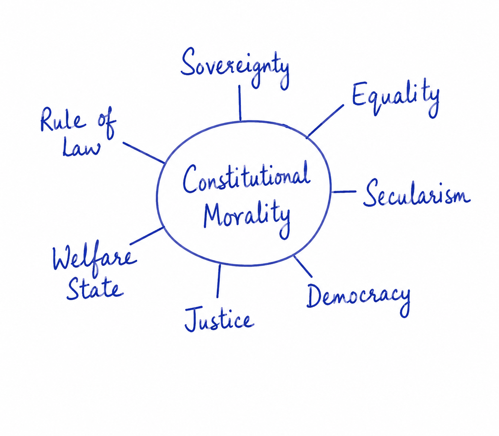
GS2-POLI-0558 · Polity · Constitutional Morality
Conclusion
Upholding constitutional morality ensures that sovereignty, justice, equality and secularism function as a cohesive, mutually reinforcing whole rather than isolated ideals.
DPSP
DIRECTIVE PRINCIPLES of STATE POLICY (DPSPs)
GS2-POLI-0162
Quote
"The Directive Principles of State Policy are the life-giving provisions of the Constitution." — L.M. Singhvi
Introduction
Enshrined in Part IV (Articles 36–51) of the Constitution, the Directive Principles of State Policy (DPSPs) embody the affirmative obligations of the State to establish a welfare state grounded in socio-economic justice. Though legally non-justiciable under Article 37, they are fundamental in the governance of the country.
Conclusion
As the Supreme Court observed in the Minerva Mills case (1980), the Indian Constitution is founded on the bedrock of balance between Fundamental Rights and Directive Principles; to give absolute primacy to one over the other disturbs constitutional harmony. Realizing the DPSPs operationalizes Granville Austin's 'Conscience of the Constitution', bridging political democracy with substantive socio-economic equality.
DR. CSE — REPLICA · INTRO TO CONCLUSION055 / 217
Dr. CSE — Replica
Uniform Civil Code (UCC): Article 44
GS2-POLI-0171
Quote
"UCC should apply only for those who are prepared to be bound by it." — Ambedkar
Introduction
Art. 44 provides for a single law on personal matters, based on the idea that religion and law have no connection in modern civilisation.
Pannalal Patil Case: Even though a UCC is desirable, enacting it may be counterproductive to unity; change must come from the bottom up.
Law Commission: Differences alone do not mean discrimination; they are a sign of a healthy democracy.
Conclusion
Reform should be piecemeal, not wholesale social engineering.
Law Commission: In a diverse country without consensus, the best way is to preserve diversity. Personal laws should not go against FRs, which can be ensured by amending inequalities.
Fundamental Rights
FUNDAMENTAL RIGHTS (FRs)
GS2-POLI-0163
Introduction
Fundamental Rights, enshrined in Part III (Articles 12–35) of the Constitution, constitute the Magna Carta of India—guaranteeing civil liberties, equality before the law, and vital protections against arbitrary state encroachment to all persons and citizens.
Conclusion
Fundamental Rights establish the indispensable conditions for moral and material human development, institutionalizing constitutionalism and limited government in perpetual fidelity to the sovereign mandate of "We, the People."
The Preamble: Ideals & Constitutional Philosophy
GS2-POLI-0164
Quote
"The Preamble is the horoscope of our sovereign democratic republic." — K.M. Munshi
Introduction
Serving as the preface and philosophical foundation of the Constitution, the Preamble encapsulates its core ideals, objectives, and civilizational vision. Affirmed in the Kesavananda Bharati and LIC of India cases as an integral part of the Constitution, it guides the interpretation of ambiguous statutes though remaining non-justiciable in isolation.
Conclusion
Serving as the key to open the minds of the constitutional framers (Berubari Union case), the Preamble reflects the solemn national covenant to secure justice, liberty, equality, and fraternity. It remains an enduring beacon of constitutional values, ensuring that administrative and judicial action stay anchored to the foundational ethos of the Republic.
DR. CSE — REPLICA · INTRO TO CONCLUSION056 / 217
Dr. CSE — Replica
Affirmative Action & Reservation Jurisprudence
GS2-POLI-0165
Quote
"Purpose of reservation has been stretched beyond combating discrimination & empowering marginalised to an anti-poverty measure — a load it cannot bear." — Pratap Bhanu Mehta
Quote
"Strong consensus for weak reforms." — Montek Singh Ahluwalia
Introduction
Affirmative action is when the State acts to end persistent discrimination faced by a particular section of society.
Context: Haryana local job quota.
Key Judgements:
Nagraj Case: (1) Equality is part of the Basic Structure; (2) the Width and Identity Test. Width: 50% limit, creamy layer, compelling reasons, administrative efficiency. Identity: BSD.
Indra Sawhney Case: The Court struck down the 10% reservation that Narasimha Rao gave to the General Category.
NALSA, Ram Singh vs UOI: The State must find and recognise new emerging groups.
Conclusion
The Justice Ranganath Mishra Commission suggested one uniform set of criteria, based on socio-economic backwardness.
FUNDAMENTAL DUTIES (Fds)
GS2-POLI-0166
Quote
"The true source of rights is duty." — Gandhi
Introduction
On the recommendation of the Swaran Singh Committee, the 42nd Constitutional Amendment Act (CAA) 1976 added Part 4A. It lists the moral obligations of citizens towards the state and towards fellow citizens.
Conclusion
Citizens must actually follow their duties under Part 4A; otherwise the promises of Part 3 (FRs) and Part 4 (DPSPs) cannot be fulfilled.
SEDITION (Section 124a IPC)
GS2-POLI-0167
Quote
"124A is the prince among sections of IPC to suppress liberty of people." — Gandhiji
Introduction
Context: In its 279th Report, the Law Commission recently reviewed S. 124A and recommended that it be retained.
Conclusion
Kishan Bhai vs State of Gujarat: Policemen must be prosecuted if they file a chargesheet against a person they know to be innocent.
“Cutting the tree vs cutting the entire forest”: action must be proportionate.
“Process becomes the punishment”: this shows the danger of misuse.
Key Judgements
Kedarnath vs State of Bihar, Arup Bhuyan Case: Sedition applies only when there is incitement to violence.
SG Vombatkere vs UOI: The SC has paused the use of 124A while a review is pending. It is seen as a colonial legacy.
DR. CSE — REPLICA · INTRO TO CONCLUSION057 / 217
Dr. CSE — Replica
FREEDOM of SPEECH & EXPRESSION (FOSE) / DISSENT
GS2-POLI-0168
Quote
"Dissent is the safety valve of democracy." — Justice D.Y. Chandrachud
Quote
"The main challenge to FOSE is not state-imposed restrictions but demands of masses who favor limitations of speech — the heckler's veto." — Abhinav Chandrachud, Republic of Rhetoric
Quote
"Censorial power resides in the people over the government, and not in the government over the people." — James Madison
Introduction
Guaranteed under Article 19(1)(a) of the Constitution, the Freedom of Speech and Expression is the primary condition of liberty and democratic accountability. It enables citizens to scrutinize governance, articulate diverse socio-political viewpoints, and maintain vibrant public debate without fear of majoritarian reprisal.
Key Judgements
Freedom of Speech and Expression rests on two philosophical premises:
Instrumental value theory: Free speech operates as a vital mechanism to discover truth, sustain democratic deliberation, and foster artistic inquiry.
Intrinsic value theory: Free speech is an essential end in itself, indispensable for individual autonomy, moral agency, and personal self-realization.
Conclusion
Protecting free speech requires resisting the heckler's veto and ensuring that state restrictions strictly satisfy the constitutional tests of proximity, necessity, and proportionality (Shreya Singhal case). As the Supreme Court affirmed, preserving dissent maintains the institutional safety valve essential to an open, fearless democracy.
Internet Disruptions & Digital Freedoms
GS2-POLI-0169
Introduction
Steps taken by the government to block or disrupt access to the internet.
Context: Manipur internet shutdown.
Anuradha Bhasin Case: Suspending internet services for an indefinite period violates Art. 19(1)(a) and 19(1)(g).
Data
In 2023, India recorded 116 internet disruptions, the most in the world, according to Access Now.
The Brookings Study 2016 estimated an economic loss of \$970 million in 2016 from internet shutdowns.
Conclusion
The recommendations of the Parliamentary Standing Committee must be followed: clear policies and selective, targeted restrictions.
Defamation vs Freedom of Speech
GS2-POLI-0170
Introduction
Context: An MP was sentenced to 2 years for criminal defamation under Sections 499 and 500 IPC by the Surat HC.
Defamation is one of the Reasonable Restrictions (RR) under Art. 19(2).
It means making false statements that harm a person’s reputation.
Subramanyam Swamy Case: The Court upheld the right to reputation under Art. 21 and the need for constitutional fraternity.
A sentence above 2 years is a ground for disqualification under S. 8(3) of RPA.
Conclusion
Freedom comes with responsibility. Since defamation is an enumerated RR, each case must be examined carefully to balance Art. 19 with the right to reputation under Art. 21.
DR. CSE — REPLICA · INTRO TO CONCLUSION058 / 217
Dr. CSE — Replica
Hate Speech & Constitutional Fraternity
GS2-POLI-0172
Quote
"Without fraternity, liberty and equality would be no deeper than coats of paint." — Dr. B.R. Ambedkar
Introduction
Hate speech lacks a single comprehensive statutory definition in India, operating across disparate provisions including Sections 153A, 295A, and 505 of the IPC (now corresponding sections of the Bharatiya Nyaya Sanhita). In jurisprudence, it denotes expressions that intentionally demean, marginalize, or incite hostility against communities based on religion, caste, ethnicity, or gender.
Conclusion
Reconciling freedom of speech under Article 19(1)(a) with the constitutional ideal of fraternity requires implementing the Law Commission’s 267th Report recommendations—enacting dedicated statutory provisions against incitement, strictly enforcing the preventative and punitive guidelines of the Tehseen Poonawalla judgment, and deploying digital monitoring to arrest algorithmic amplification of communal discord.
DPDP Bill (Data Protection)
GS2-POLI-0173
Introduction
The DPDP Bill was recently passed. Its aim is to process digital personal data while balancing privacy with the need to process data for lawful purposes.
Data is often called the new oil.
Big data has 4Vs: Veracity, Volume, Variety and Velocity.
Under the IT Act 2000 and IT Rules 2021, S 69A allows some websites to be banned.
KS Puttaswamy: Right to privacy has 3 tests: law, legitimate state interest and proportionality.
Conclusion
India should follow the EU-GDPR model, for example the right to be forgotten.
The JPC recommended including non-personal data in the law’s scope.
Apply the 9 principles of data protection suggested by the A P Shah committee.
Making of the Constitution
Historical Underpinnings and Evolution
GS2-POLI-0174
Quote
"Our Constitution is a testament to the sacrifices of generations who believed in justice, liberty, equality, and fraternity." — President Droupadi Murmu
Introduction
India’s constitutional journey, from the Regulating Act to Nehru’s Objectives Resolution, shows its change from colonial rule to participatory democracy. This is the spirit of “Raj se Samvidhan tak.”
Examples
A Law Commission consultation paper suggested adding constitutional history to legal education reforms.
The UGC launched ‘Samvidhan Mahotsav’ in universities.
NCERT updated Class 12 Political Science by adding new modules on Constitution-making.
Conclusion
Constitutional literacy must go beyond ceremonies and reach classrooms, civic tech and citizen charters, so that the Samvidhan becomes truly participative.
Representation of the People Act & Electoral Reforms
GS2-POLI-0176
Quote
"The essence of democracy is free and fair elections." — S.Y. Quraishi
Quote
"Free and fair elections are the lifeblood of any democratic society." — Jimmy Carter
Introduction
Enacted under the constitutional authority of Article 327, the Representation of the People Acts (1950 and 1951) constitute the legislative bedrock for conducting free and fair elections in India. In the modern era, the electoral framework is undergoing profound structural evolution to curb political criminalisation, enhance transparency in campaign financing, and expand universal suffrage.
Examples
The Supreme Court struck down the Electoral Bonds Scheme (2024) as violative of the voter’s fundamental right to information under Article 19(1)(a).
The Election Commission of India (ECI) piloted remote electronic voting prototypes (RVMs) to facilitate domestic migrant participation.
The Law Commission of India and parliamentary committees recommended comprehensive frameworks for synchronised elections and state funding of polls.
Conclusion
Electoral laws must continually modernize to safeguard democratic legitimacy—accelerating statutory reforms for candidate criminal disclosure (Association for Democratic Reforms guidelines), strengthening the Election Commission's regulatory independence, and establishing transparent party funding mechanisms.
WOMEN RESERVATION BILL (106th CAA)
GS2-POLI-0177
Introduction
The 106th CAA (Nari Shakti Vandan Adhiniyam, 2023) provides 33% reservation in the LS and State Legislatures for 15 years.
A private member bill recently asked for the Reservation Bill to be introduced again.
It was criticised as “Biwi Bahu Beti politics”.
Conclusion
UK model: A compulsory 40% reservation inside political parties.
A model of 1/3rd dual-member constituencies.
It is not a panacea.
Simultaneous Elections: One Nation, One Election
GS2-POLI-0180
Introduction
This means holding LS and State Assembly elections together (synchronised). It was recently recommended by the ECI, the Law Commission and the Parliamentary Standing Committee.
It will need amendments to Art. 172 and Art. 83 (duration of the LS and State Legislative Assemblies) and to the RPA.
Conclusion
Law Commission: Implement it in 2 phases, synchronising with the LS and with the midterm of the LS. Hold all bye-elections together in a year.
Political Parties
Anti-defection LAW (10th SCHEDULE)
GS2-POLI-0183
Introduction
The 52nd CAA 1985 added the 10th Schedule, which provides for disqualification on the basis of defection, to prevent Aaya Ram Gaya Ram politics.
Recent Examples: In Goa (2019), 10/15 Congress MLAs joined the BJP. In Maharashtra and Karnataka, state governments collapsed. In Manipur, the Speaker did not disqualify.
In the Kihoto Hollohan Case, the Court upheld its constitutionality.
Conclusion
Meghachandra Case: A permanent tribunal should decide instead of the Speaker, with a 3-month time limit.
Halim Committee: The phrase “voluntarily giving up membership” should be defined.
Law Commission: Pre-poll groupings should be treated as one party under the 10th Schedule, and the exception for mergers should be deleted.
Dinesh Goswami Committee: The whip should be limited to vote of confidence cases only.
Part XVIII (Art. 352–360) of the Constitution allows an emergency to be imposed in extraordinary situations that normal administrative systems cannot handle.
Conclusion
Emergency provisions make a sui generis Constitution flexible by design (built-in flexibility). They protect the democratic political system, financial stability, and the nation’s sovereignty, unity and integrity.
Federalism
Federalism: Cooperative & Bargaining Models
GS2-POLI-0190
Quote
"Cooperative federalism will be the key to sustain India's unity, integrity & socio-economic development in the future." — Punchhi Commission
Introduction
Federalism is the constitutional division of powers between 2 or more levels of government.
Key thinkers: KC Wheare (quasi-federal), Morris Jones (bargaining federalism) and SR Bommai (federalism is part of the Basic Structure).
Conclusion
Too much centralisation leads to blood pressure at the Centre and anaemia at the periphery.
Local Self Government
PANCHAYATI RAJ INSTITUTIONS (Pris)
GS2-POLI-0187
Quote
"Future of India lies in its villages." — Gandhiji
Introduction
The 73rd and 74th CAA 1992 gave PRIs constitutional status, to fulfil the vision of Art. 40: democratic decentralisation for grass-roots democracy.
Bellandur (live TV telecast of panchayat meetings)
AP (Village Volunteer and Secretariat)
Data
₹1.42 lakh crore was allocated to panchayats by the 15th FC.
Conclusion
When local bodies are empowered, they can drive triple-engine growth.
Attached points
Move from 3F to the 4th F, which is Functionality, and build Cooperative Sub-Federalism.
“Gram Uday se Bharat Uday”: since 65% of India lives in villages, PRIs can play a key role.
Union Territory
Delhi NCT Governance & Article 239AA
GS2-POLI-0191
Quote
"Cooperative federalism envisages that the Centre and States must iron out their differences through negotiation and conciliation." — Supreme Court of India
Introduction
Under Article 239AA, the National Capital Territory of Delhi occupies a sui generis constitutional status balancing national capital imperatives with democratic local representation. In Government of NCT of Delhi vs. Union of India (2023), the Supreme Court affirmed that the elected government exercises legislative and executive competence over services, governed by the "triple chain of accountability"—civil servants answerable to ministers, ministers to the legislature, and the legislature to the electorate—with central executive authority limited to police, public order, and land.
Conclusion
Resolving recurring jurisdictional friction in Delhi demands upholding cooperative federalism and institutional comity. Parliamentary legislation enacted under Article 239AA(3)(b) must respect representative governance and administrative accountability, ensuring that federal oversight preserves rather than paralyzes elected urban statecraft.
"RS may be the second house but no one should think of it as a secondary house." — ABV
Introduction
Art. 80 provides for the Rajya Sabha, the second chamber that represents the states and union territories.
Ambedkar sat in the RS.
Kuldeep Nayar vs UOI: The question of duplication with the LS came up.
Data
40% of the time was lost to disruptions.
Sachin Tendulkar’s attendance was 24 out of 374 days.
In 60 years, there have been only 3 joint sittings.
Conclusion
In recent years, it has moved from a “useless stepney tyre” to the “most useful supporting organ”.
UK model: An appointments committee selects the nominated members.
Punchhi Commission: Add a domicile requirement and give states equal representation.
Legislative Councils: Utility & Creation
GS2-POLI-0194
Introduction
India has a bicameral system at both the Centre and state levels. The Vidhan Parishad is the upper house of a state, and the Vidhan Sabha is the lower house.
Art. 169 deals with the creation and abolition of State Legislative Councils (TUMBAK states).
New resolutions have come from Andhra Pradesh, Odisha and Rajasthan.
Conclusion
Councils should be given powers similar to the Rajya Sabha. A national plan for the creation and abolition of State Legislative Councils should also be made.
Executive Vs Judiciary
Judicial Activism vs Judicial Overreach
GS2-POLI-0203
Introduction
Activism means courts act in the public interest when the Executive and the Legislature fail to step in. It follows the court’s guardian ethic (e.g., Vishakha Guidelines).
Overreach means breaching the separation of powers (SOP). Courts openly interfere in the domain of the Executive or Legislature and replace them.
Conclusion
Premchand Garg Case: Courts should supplement, not supplant. They should hold the other organs accountable and step in only when absolutely necessary.
Judiciary
CONTEMPT of COURT
GS2-POLI-0210
Quote
"Judiciary must earn respect through broad-shouldered approach & not command it by imposing contempt." — Rajesh Kumar Case
Introduction
Art. 129 and 215, along with the Contempt of Courts Act 1971, give courts civil and criminal powers of contempt.
Criminal contempt (SODI): Scandalising, Obstructing, Disrespecting and Interfering in the administration.
Examples: Justice C.S. Karnan (6 months in jail for contempt, 2017); Prashant Bhushan (contempt fine of Rs 1, 2020).
Conclusion
Mention the amendment to the Contempt of Court Bill 2013.
S. Malgaonkar Judgement: The judiciary cannot claim immunity from fair and genuine criticism.
Law Commission: Contempt should be limited to civil contempt.
DR. CSE — REPLICA · INTRO TO CONCLUSION062 / 217
Dr. CSE — Replica
Police Reforms: SMART Policing & Prakash Singh
GS2-POLI-0212
Introduction
The PM recently recommended prison reforms and the repeal of obsolete criminal laws.
Suggestions: Prakash Singh Case, Model Police Act 2015.
Steps taken: POLNET, CCTNS and the Modernisation of Police Force Scheme.
Best practice (BP): Janamaithri (Kerala).
Data
According to BPR&D, police strength is 152.80/lakh against 196.23 sanctioned.
36K cases of custodial torture are pending with the NHRC.
Police spending is 3% of government spending.
There is a weaponry shortage of 75% in Rajasthan.
BPRD: 68% of SHOs said their subordinates are overworked (more than 11 hours).
Poor investigation quality: The conviction rate is 47%, and 21% for women.
Conclusion
SMART Policing means a representative and sensitised police force.
Prison Reforms: Overcrowding & Undertrial Rights
GS2-POLI-0213
Introduction
The Amitava Roy Committee pointed out various issues.
Best practices (BPs): Bandi Panchayat and Open Prisons (Rajasthan).
Data
Prison occupancy is 131.4%.
According to the NCRB PSI, 75.8% of prisoners are undertrials.
1/3rd of staff posts are vacant, and female staff are 10%.
Conclusion
Follow the UN Standard Minimum Rules for the treatment of prisoners.
Suggestions: Model Prison Manual 2016; Art. 39A (free legal aid).
AN Mulla Committee: It recommended All India Prison Services.
Charles Sobhraj Case: Human rights must be upheld even in prison, with a role for the NHRC and SHRC.
All India Judicial Service (AIJS): Article 312
GS2-POLI-0214
Introduction
It is a centralised cadre of district judges. They are recruited through an All India Exam and allotted to states, like the AIS (Art. 312).
It was recommended by the Jagannath Shetty Commission.
Art. 233: The Governor appoints district judges in consultation with the HC.
Data
There are 5000 vacancies in the district judiciary.
Even the AIS has 25% vacancies.
Conclusion
Training in language and customs, and involving the states, is essential.
WOMEN in JUDICIARY
GS2-POLI-0217
Quote
"Women belong in all places where decisions are being made." — Ruth Bader Ginsburg
Introduction
CJI NV Ramana spoke of the need for 50% reservation for women in the judiciary.
Women are only 13.5% of judges in HCs, and India has never had a female CJI.
Women are only 15% of lawyers.
Justice BV Nagarathna said it enhances “democratic legitimacy.”
Data
Women make up 13.5% of judges in HCs.
Women make up 15% of lawyers.
Conclusion
Best practice (BP): States like AS and AP have reservation for women in the lower judiciary (40-50% representation).
DR. CSE — REPLICA · INTRO TO CONCLUSION063 / 217
Dr. CSE — Replica
The Collegium System: Judicial Appointments
GS2-POLI-0218
Quote
"There is a need for accountability and transparency in the judicial appointment process." — Justice J.S. Verma (Retd. CJI)
Introduction
Judicial appointments and transfers in India are governed by the Collegium system, a judicially created mechanism evolving across the Three Judges Cases (1982, 1993, 1998) and reinforced when the Supreme Court struck down the National Judicial Appointments Commission (NJAC / 99th CAA) in the Fourth Judges Case (2015) to safeguard the independence of the judiciary as part of the Basic Structure.
Conclusion
Reconciling judicial independence with institutional transparency requires reforming the collegium from within: finalizing the revised Memorandum of Procedure (MoP), institutionalizing a permanent research secretariat with objective merit evaluation metrics, and publishing broad rationales for elevations and inter-High Court transfers to reinforce public confidence in judicial appointments.
Judicial Backlog & Case Pendency
GS2-POLI-0219
Quote
"Justice delayed is justice denied." — William Gladstone
Introduction
According to the National Judicial Data Grid (NJDG), judicial backlog in India exceeds 5.1 crore cases, with nearly 88% concentrated in district and subordinate courts. The crisis is compounded by severe judge shortages (India has \~21 judges per million population against the Law Commission’s recommendation of 50 per million), structural vacancies, high adjournment rates, and the government being the largest litigant (\~50% of filings).
Data
Total pending cases: 5.1 crore+ (88% in district judiciary).
Judge-to-population ratio: 21 per million (recommended: 50 per million).
Public spending on judicial infrastructure: \~0.1% of GDP.
Operational Gram Nyayalayas: \~150 functional against a targeted 5,000.
Conclusion
Tackling the judicial logjam demands a comprehensive overhaul: scaling up court infrastructure through e-Courts Phase III and virtual hearings, streamlining government disputes via a revised National Litigation Policy, expanding evening and fast-track courts, and operationalizing pre-litigation mediation under the Mediation Act, 2023 to guarantee timely justice for every citizen.
Judicial Independence & Accountability
GS2-POLI-0220
Quote
"A robust judiciary is essential for upholding the rights of citizens and for holding those in power accountable for their actions." — Soli J. Sorabjee
Introduction
Constitutional safeguards—including security of tenure, charged expenditure on the Consolidated Fund under Article 112/202, and parliamentary immunity under Article 121—protect judicial independence from political interference. However, institutional credibility requires pairing independence with transparency, addressing issues such as the Master of Roster discretion, post-retirement appointments, and self-regulation mechanisms.
Conclusion
Judicial independence and accountability are not conflicting values but mutually reinforcing pillars of constitutional trust (Naresh Shridhar judgment). Implementing the Second ARC recommendations for a statutory Judicial Code of Conduct, along with NITI Aayog's Judicial Performance Index, ensures that the courts retain their moral authority as the paramount guardian of fundamental rights.
Parliamentary Committees
Parliamentary Committees: Scrutiny & Deliberation
GS2-POLI-0195
Quote
"Parliamentary committees bridge the gap between lawmakers and citizens, translating aspirations into effective governance." — P. Chidambaram
Introduction
A parliamentary committee is a panel of MPs. It is appointed to bring about:
Close parliamentary oversight of executive action, and deliberative democracy
Sharing of constructive feedback, along with checks and balances
Consultation with stakeholders
Convergence of different viewpoints
Conclusion
These can be remembered as the 4 Cs: Consultation, Convergence, Checks and Balances, and Constructive feedback.
Parliamentary Privileges
Parliamentary Privileges: Powers & Codification
GS2-POLI-0196
Introduction
Legislators individually and the House collectively enjoy special immunities or concessions (Art. 105, 194), which help them do their work.
Searchlight Case: Judicial review does not apply.
Raja Ram Pal Case: The protection does not cover unconstitutional acts.
Conclusion
The NCRWC favoured codification of privileges by an independent body of experts, in an open-ended manner, and a stronger Privileges Committee.
Presiding Officers
SPEAKER of LOK SABHA
GS2-POLI-0197
Quote
"In a parliamentary democracy, the Speaker represents the dignity and freedom of the House." — Jawaharlal Nehru
Introduction
Under Article 93, the Speaker serves as the constitutional and ceremonial head of the Lok Sabha, embodying parliamentary autonomy and ensuring the orderly conduct of legislative proceedings. Recent controversies regarding indefinite delays in adjudicating anti-defection petitions have brought the impartiality of the presiding officer under intense judicial and public scrutiny.
Attached points
Former Speakers such as N. Sanjiva Reddy and Somnath Chatterjee emphasized building healthy conventions of scrupulous non-partisanship upon election.
The Dinesh Goswami Committee on Electoral Reforms recommended that a Speaker's seat should be uncontested in subsequent elections to secure political neutrality.
Conclusion
Preserving the dignity of the Speaker's office requires institutionalizing conventions of strict non-partisanship—such as the British tradition of "once a Speaker, always a Speaker"—and implementing the Supreme Court's recommendation in Keisham Meghachandra Singh (2020) to transfer quasi-judicial disqualification powers from the Speaker to an independent parliamentary tribunal.
Pressure Groups
Pressure Groups
GS2-POLI-0202
Introduction
A pressure group is an organised group that tries to influence the policies or actions of the government.
Conclusion
India should promote more broad-based, inclusive and institutionalised pressure groups, to deepen participative democracy.
Role of MPs
Parliament: Functioning, Disruptions & Decline
GS2-POLI-0198
Introduction
Parliament (Part 5 — Art. 79–123) is India’s bicameral legislative organ, working under the parliamentary or “Westminster” form of government that India has adopted.
The Lok Sabha (Art. 81) is the lower house.
Data
PSC reference: Women MPs went from 11% (15th LS, 2009) to the current figure.
Question Hour: 47% was used in the 19th LS, and 40% of questions went unanswered.
Sittings: fell from 150 days (1950) to 67 days (2014-19).
Money Bills: rose from 6/year to 11/year.
16th LS Disruptions: 19% of the scheduled time was lost.
Women MPs: make up 14% (78 of 543 in the 17th LS).
MPs with criminal records: rose from 30% (2009) to 43% (2019).
Cost of disruptions: ₹2.5 lakh for every minute.
Conclusion
Parliament needs to change. It should move from a forum for “adversarial combat with politics focus” to one of “deliberative democracy with policy focus.”
NCRWC: Parliament should sit for a minimum of 120/100 days.
Separation of Powers
Separation of Powers and Dispute Redressal
GS2-POLI-0204
Quote
"No organ can claim supremacy, only harmony." — Justice R.F. Nariman
Quote
"Separation of powers is essential for constitutionalism." — I.R. Coelho Case
Introduction
The Constitution of India incorporates a functional separation of powers between the Legislature, Executive, and Judiciary, reinforced by a robust system of checks and balances under Article 50. As held in Kesavananda Bharati and Indira Gandhi vs. Raj Narain, separation of powers constitutes an inviolable facet of the Basic Structure, ensuring that no single organ exercises arbitrary or unchecked power.
Examples
The Supreme Court upheld the structural and operational independence of tribunals in the constitution of the GST Appellate Tribunal.
Institutional oversight by statutory watchdogs like the Lokpal strengthens public integrity without encroaching upon executive policymaking.
The Mediation Act, 2023 formalised institutional alternative dispute resolution (ADR) to alleviate judicial workload and foster collaborative settlement.
Conclusion
The interface among constitutional organs must be guided by “Samvaad, not Sangharsh” (dialogue, not conflict). While checks and balances prevent institutional tyranny, mutual deference and constitutional comity remain essential to realize collective national development.
Union Executive
Ministries and Departments of the Government
GS2-POLI-0206
Quote
"A government is only as good as its coordination." — NITI Aayog Strategy Document
Introduction
Ministries are moving out of silos into coordinated action, from the Viksit Bharat Sankalp Yatra to integrated dashboards. This supports evidence-based governance and citizen-centric service delivery.
Examples
Grievance redress was integrated with CPGRAMS 3.0 by the MEITY.
The MoLE connected e-Shram to the PM-SVANidhi database.
The MoSPI brought ministry KPIs in line with SDG targets.
Conclusion
Smooth service delivery needs convergence of data, design and development thinking across ministries.
DR. CSE — REPLICA · INTRO TO CONCLUSION064 / 217
Dr. CSE — Replica
ORDINANCES (Art. 123 & 213)
GS2-POLI-0207
Introduction
Art. 123 and 213 give the President/Governor the extraordinary power to make laws by ordinance when the Legislature is in recess, to deal with unforeseen circumstances.
DC Wadhwa Case.
Krishna Kumar Singh Case: The Court can question the wisdom of an ordinance and reverse it. The power is not absolute.
Conclusion
NCRWC: The President should be careful and use this power only in special circumstances. The review period should be reduced from 6 weeks to 1 week.
OFFICE of PROFIT (OOP)
GS2-POLI-0208
Introduction
Art. 102 and 191 provide for disqualification of MPs/MLAs who hold an office of profit (OOP) under the government. Certain offices are exempt, as declared under the OOP Act 1959.
Pradyut Bordoloi vs Swapan Roy: The SC outlined what counts as an OOP.
Jaya Bachchan vs UOI: An office is an OOP if it is capable of yielding profit or pecuniary gain. It does not matter if the profit is not actually received.
Specialists get a chance to join, for example Atishi Marlena (an educator who joined for ₹1).
Conclusion
UK best practice (BP): Whenever a new office comes up, a committee takes the decision in advance.
A Joint committee on OOP decides whether an office qualifies as an OOP or not.
2nd ARC: The focus is on offices involved in executive decision-making, control over public funds, etc.
DR. CSE — REPLICA · INTRO TO CONCLUSION065 / 217
Dr. CSE — Replica
PART GS-2 · CHAPTER 05
Governance
Governance answers need working definitions, committee logic, and examples. These cards organize that material so you can recall it under exam pressure.
A Citizen's Charter is a formal public commitment by an administrative department outlining the standards, quality, time frames, grievance mechanisms, and grievance redress pathways of the public services it guarantees to citizens, transforming passive recipients into sovereign service stakeholders.
Data
The 6 Core Principles (CSAT QV):
C — Choice: Providing options to users wherever feasible.
S — Standards: Explicitly specifying service benchmarks and remedies if unmet.
A — Accountability: Individual and institutional answerability.
T — Transparency: Proactive disclosure of procedural workflows and costs.
Q — Quality: Striving for excellence in public service delivery.
V — Value: Prudent, optimal utilization of taxpayers' funds.
Key Administrative Bottlenecks: One-size-fits-all drafting without frontline staff consultation, absence of statutory compensation for default, and low public awareness.
Conclusion
Revitalizing Citizens' Charters requires transitioning from non-enforceable declarations to statutory mandates—emulating the Right to Public Services Acts (pioneered in Madhya Pradesh and Bihar) and institutionalizing the Sevottam Model (comprising Charter implementation, Public Grievance Redress, and Service Excellence capability) to make citizen charters the bedrock of accountable public administration.
E-governance
Governance, Transparency & E-Governance
GS2-GOVE-0221
Quote
"Transparency is the currency of trust in governance." — Second ARC
Introduction
E-governance transforms traditional bureaucratic administration into an accountable, transparent, and responsive delivery ecosystem. Moving beyond paper file-notings to algorithmic intelligence and open data, digital statecraft operationalizes the vision of "Minimum Government, Maximum Governance" across G2G, G2B, and G2C interactions.
Examples
The Ministry of Electronics and Information Technology (MeitY) deployed AI-powered sentiment analysis and natural language processing on CPGRAMS 3.0 to categorize and accelerate public grievance redressal across central ministries.
The Ministry of Statistics and Programme Implementation (MoSPI) integrated ministerial performance dashboards with real-time indicators tracking India's Sustainable Development Goal (SDG) progress.
The Ministry of Coal established a satellite- and drone-based surveillance portal (Khanan Prahari) to detect illegal mining and enforce regulatory compliance.
Conclusion
Sustaining good governance in the digital era requires balancing technological efficiency with citizen dignity—anchoring administrative reforms in visibility, verifiability, and velocity while ensuring that algorithmic automation remains governed by human empathy, data privacy, and constitutional accountability.
DR. CSE — REPLICA · INTRO TO CONCLUSION067 / 217
Dr. CSE — Replica
Civic Tech and Welfare Delivery
GS2-GOVE-0222
Quote
"Digital is not the end; dignity is." — Digital India Vision Document
Introduction
Civic technology bridges the critical last mile between constitutional welfare guarantees (Article 41) and marginalized beneficiaries. By pairing Aadhaar-based digital identity with Direct Benefit Transfers (DBT) and open-access portals, civic tech eliminates middlemen, prevents ghost leakages, and democratizes public service delivery.
Examples
The e-Shram portal has registered over 30 crore unorganized workers, enabling dynamic convergence with insurance (PMSBY), pension (PM-SYM), and ration portability benefits.
UMANG 2.0 unifies over 1,500 citizen-centric services across central and state departments into a single mobile interface, minimizing transaction friction for citizens.
The AI-driven Bhashini / Anuvadini platform breaks linguistic barriers by translating government welfare schemes, judicial filings, and digital services into 22 scheduled languages in real time.
Conclusion
Civic technology fulfills its democratic promise only when designed with equity and human-centric empathy—ensuring that digital public goods reach the most vulnerable first, preventing exclusion errors, and institutionalizing community-led social audits to safeguard citizen dignity.
Digital Public Infrastructure (DPI) & India Stack
GS2-GOVE-0223
Quote
"India Stack is not just about technology; it is about building a more inclusive and equitable society." — Nandan Nilekani
Introduction
Digital Public Infrastructure (DPI) refers to population-scale, interoperable digital rails—open protocols and software systems that serve as foundational public utilities upon which both public and private entities innovate to deliver essential financial, health, and identity services.
2. Payment Layer: Unified Payments Interface (UPI), processing over 1,800 crore transactions monthly with global interoperability.
3. Data Empowerment Layer: Account Aggregator framework and DigiLocker (with 250+ crore authentic issued documents).
The 5D Structural Challenges: Device cost, Digital connectivity infrastructure, Digital literacy divide, Cybersecurity resilience, and Data privacy.
Conclusion
As multilateral forums (G20, IMF) recognize DPI as a global catalyst for inclusive growth, India's model demonstrates that open-source public rails democratize market competition while preventing monopolistic platform capture. Sustaining this advantage requires robust statutory independent oversight under the DPDP Act and promoting hybrid "phygital" access models to include digitally excluded citizens.
DR. CSE — REPLICA · INTRO TO CONCLUSION068 / 217
Dr. CSE — Replica
E-governance
GS2-GOVE-0224
Quote
"E-governance is easy, effective and efficient governance, and the only way to move from good governance to pro-active, pro-people good governance." — Narendra Modi
Introduction
E-governance is the strategic application of Information and Communication Technologies (ICT) across Government-to-Government (G2G), Government-to-Business (G2B), and Government-to-Citizen (G2C) interfaces. It seeks to realize the SMART governance paradigm: Simple, Moral, Accountable, Responsive, and Transparent governance.
Examples
Real-Time Governance Society (RTGS, Andhra Pradesh): Centralised data dashboard integrating drone feeds, grievance hotlines, and welfare metrics to manage public emergencies and administrative delivery.
GeM (Government e-Marketplace): Public procurement portal eliminating bureaucratic discretion and cartelization, generating over ₹4 lakh crore in annualized procurement savings.
E-Estonia Model: Global benchmark for universal digital citizenship, end-to-end paperless administration, and once-only data submission policies.
Conclusion
Transitioning to E-governance 2.0 requires addressing digital exclusion, algorithmic bias, and cyber vulnerabilities. Adopting the Second Administrative Reforms Commission (ARC-II) citizen-centric framework ensures technology empowers rather than alienates vulnerable citizens, anchoring administrative automation in constitutional justice.
Transparency and Accountability
Digital Personal Data Protection (DPDP) Act, 2023
GS2-GOVE-0228
Introduction
Enacted in 2023, the Digital Personal Data Protection (DPDP) Act establishes India's comprehensive legal architecture governing the processing of digital personal data. It seeks to balance an individual's constitutional right to informational privacy (Justice K.S. Puttaswamy judgment, 2017) with the legitimate administrative necessity of processing personal data for lawful governance and national security purposes.
Data
Constitutional Tests of Privacy (Puttaswamy case):
1. Legality: Backed by statutory authority.
2. Legitimate State Aim: Reasonably connected to a democratic state purpose.
3. Proportionality: Least intrusive means to achieve the objective with procedural safeguards.
Big Data & Cybersecurity Context:
Cybercrime surge: National Cyber Crime Reporting Portal records significant escalations (over 2 lakh monthly incidents reported).
The 4Vs of Big Data governance: Veracity, Volume, Variety, and Velocity.
Economic Survey definition: Treating digital data as a "public good, of, for, and by the people."
Conclusion
Operating the DPDP Act effectively requires maintaining the structural and investigative autonomy of the Data Protection Board of India (DPBI). Implementing the Justice A.P. Shah Committee's 9 National Privacy Principles and aligning domestic enforcement with global best practices (such as the EU's GDPR norms on data minimisation and cross-border data transfer safeguards) will ensure India protects data sovereignty without chilling technological innovation.
"Corruption is a tax on the poor and a tax on development." — José Ugaz
Introduction
Corruption denotes the illegitimate abuse of entrusted public power, office, or authority for private or factional gain. It distorts market resource allocation, degrades the rule of law, exacerbates socio-economic inequality, and destroys public faith in constitutional democratic institutions.
Data
Governance indices & empirical data:
Corruption Perception Index (CPI 2025, Transparency International): India ranks 91st out of 182 nations.
High economic deadweight loss: Capital misallocation in infrastructure contracting and welfare delivery leakages.
Conclusion
Eradicating corruption demands moving beyond procedural vigilance to deep structural integrity—operationalizing the Lokpal and state Lokayuktas, providing statutory protection to whistleblowers, implementing the Second ARC recommendations on ethics in governance, and leveraging faceless e-procurement (GeM) and Direct Benefit Transfers (DBT) to systematically dismantle bureaucratic monopoly and opaque discretion.
Appointment and Functions of Constitutional Bodies
GS2-GOVE-0234
Quote
"Autonomy without accountability is as dangerous as control without competence." — Second ARC
Introduction
Constitutional bodies—including the Election Commission, Comptroller and Auditor General, and Union Public Service Commission—function as independent institutional watchdogs safeguarding the constitutional architecture. Preserving public faith in these institutions requires transparent, merit-based appointment processes insulated from partisan interference and coupled with rigorous parliamentary accountability.
Examples
The Supreme Court in Anoop Baranwal (2023) emphasized broad-based, independent selection committees to insulate Election Commission appointments from executive dominance.
The Comptroller and Auditor General (CAG) modernized public auditing by establishing the One Nation One Audit Grid, integrating digital data pipelines across Union and State departments.
Parliamentary Standing Committees have repeatedly underscored the need for timely, transparent appointments to regulatory tribunals to eliminate prolonged statutory vacancies that cripple grievance redressal.
Conclusion
Constitutional watchdogs require both structural operational autonomy and performance transparency. Adopting the Second ARC's recommendations—establishing broad-based selection collegiums, securing tenure protections, and publishing transparent institutional audit reports—preserves public trust in the institutional defenders of the Republic.
ELECTION COMMISSION of INDIA (ECI)
GS2-GOVE-0235
Quote
"Free and fair elections are the lifeblood of any democratic society." — Jimmy Carter
Introduction
Vested under Article 324, the Election Commission of India exercises plenary powers of superintendence, direction, and control over elections to Parliament, State Legislatures, and the offices of the President and Vice-President. As held in Mohinder Singh Gill (1977), Article 324 operates as an expansive constitutional reservoir enabling the Commission to act in the absence of enacted legislation to secure the purity of the electoral process.
Conclusion
Preserving the institutional independence of the ECI requires insulating the appointment and tenure of Election Commissioners: implementing the Law Commission's 255th Report recommendations, extending constitutional removal protections under Article 324(5) to all Election Commissioners on par with the CEC, charging the Commission's expenditure to the Consolidated Fund of India, and enacting statutory rules for Model Code of Conduct enforcement to safeguard electoral integrity.
DR. CSE — REPLICA · INTRO TO CONCLUSION071 / 217
Dr. CSE — Replica
Union Public Service Commission (UPSC): Merit & Mandate
GS2-GOVE-0236
Introduction
Established under Articles 315 to 323 (Part XIV) of the Constitution, the Union Public Service Commission (UPSC) serves as the paramount constitutional recruiting agency for the Civil Services and Armed Forces, functioning as the impartial watchdog of the merit system to ensure competence, integrity, and national representation in public administration.
Conclusion
In an era of specialized governance and technological disruption, the UPSC must balance traditional exam credibility with domain specialization. Implementing the Hota Committee and Second ARC recommendations—rationalizing the exam cycle, calibrating lateral entry to maintain institutional morale while injecting technical expertise, and leveraging competency-based testing under Mission Karmayogi—ensures the civil services remain future-ready and citizen-centric.
Constituted by the President every five years under Article 280, the Finance Commission is a quasi-judicial constitutional body tasked with recommending the vertical sharing of divisible central taxes between the Union and the States and the horizontal distribution of revenues among states based on fiscal equity and administrative capacity.
Conclusion
Operating as the paramount balancing wheel of fiscal federalism, the Finance Commission must reconcile macroeconomic stability with regional fiscal autonomy. Strengthening institutional comity requires ensuring transparent consultation with states in formulating Terms of Reference (ToR), rationalizing cess and surcharges outside the divisible pool, and designing performance-based grants that incentivize state capital creation, local body devolution, and environmental conservation (16th Finance Commission mandate).
National Commissions: NCSC, NCST & NCBC
GS2-GOVE-0239
Introduction
Constituted under Articles 338, 338A, and 338B (102nd CAA), the National Commissions for Scheduled Castes (NCSC), Scheduled Tribes (NCST), and Backward Classes (NCBC) are constitutional bodies endowed with civil-court powers to investigate rights violations, monitor statutory safeguards, and participate in socio-economic developmental planning for historically marginalized communities.
Conclusion
Transforming these commissions into effective instruments of social justice requires moving beyond procedural advisories to enforceable accountability—granting statutory prosecution powers, ensuring timely tabling of annual reports in Parliament and State Legislatures with action-taken memoranda under Article 338(6), and embracing Amartya Sen's realization-focused approach (Nyaya over Niti) to bridge statutory rights with substantive grassroots emancipation.
DR. CSE — REPLICA · INTRO TO CONCLUSION072 / 217
Dr. CSE — Replica
Inter-State Council: Article 263 & Federal Dialogue
GS2-GOVE-0240
Introduction
Established under Article 263 by Presidential Order on the recommendation of the Sarkaria Commission (1990), the Inter-State Council serves as the premier multilateral constitutional forum designed to investigate disputes, deliberate on common policy issues, and foster coordinated governance between the Centre and the States.
Data
Operational deficit: The Council has convened only 12 meetings since its inception in 1990, despite the statutory recommendation to meet at least thrice annually.
Key reform mandates: Sarkaria and Punchhi Commissions recommend establishing a permanent secretariat and giving the Council constitutional agenda-setting power on concurrent legislative subjects.
Conclusion
Revitalizing the Inter-State Council is vital to moving from transactional federalism to enduring Cooperative and Collaborative Federalism. Instituting regular bi-annual meetings, mandating consultations prior to introducing concurrent legislation, and empowering its Standing Committee to address fiscal and riparian disputes ensures Centre-State relations are negotiated through dialogue rather than unilateral central action.
SPECIAL OFFICER for LINGUISTIC MINORITIES
GS2-GOVE-0241
Introduction
Created by the 7th Constitutional Amendment Act, 1956 under Article 350B, the Special Officer for Linguistic Minorities (Commissioner for Linguistic Minorities) investigates all matters relating to safeguards provided for linguistic minorities, submitting annual reports directly to the President for tabling before Parliament.
Data
Linguistic diversity: India hosts over 1,600 spoken languages and dialects, with linguistic minorities residing in every state.
Constitutional protections: Article 29 (conservation of distinct language/script), Article 30 (educational institutions), Article 347 (presidential recognition), and Article 350A (primary education in mother tongue).
Conclusion
Strengthening the office of the Commissioner requires conferring statutory investigative powers, establishing functional regional secretariats, and institutionalizing its recommendations within the National Education Policy (NEP 2020) framework to guarantee mother-tongue primary instruction and preserve India's irreplaceable linguistic pluralism.
Enforcement Agencies
Central Investigative Agencies: ED & CBI Autonomy
GS2-GOVE-0242
Introduction
The Central Bureau of Investigation (CBI—operating under the DSPE Act, 1946) and the Directorate of Enforcement (ED—administering PMLA and FEMA) serve as India's premier investigative agencies combating complex corruption, economic offences, and cross-border money laundering. In Dr. Jaya Thakur vs. Union of India (2023), the Supreme Court balanced operational stability against institutional autonomy while reviewing tenure extensions of agency chiefs.
Conclusion
Preserving the institutional credibility of federal investigative agencies requires implementing the Second ARC and Law Commission recommendations: enacting an overarching, dedicated statutory law to replace the colonial DSPE Act, establishing an independent prosecution directorate, making appointments through broad-based statutory collegiums, and ensuring time-bound judicial trials so that investigative proceedings do not degenerate into procedural punishment.
DR. CSE — REPLICA · INTRO TO CONCLUSION073 / 217
Dr. CSE — Replica
Cyber Crimes & Law Enforcement
GS2-GOVE-0243
Introduction
Cybercrime denotes unlawful activities executed using computer networks, software, or digital systems—encompassing financial phishing, ransomware attacks, identity theft, and critical information infrastructure sabotage. Governed by the Information Technology Act, 2000 (amended 2008), the national counter-cyber response is coordinated by the Indian Cyber Crime Coordination Centre (I4C) under the Ministry of Home Affairs.
Data
Cybercrime trajectory (NCRB): Cases rose over 17% annually, exceeding 1 lakh reported incidents, with financial fraud constituting over 70% of total filings.
Institutional mechanism: I4C operates the National Cyber Crime Reporting Portal (1930 helpline), Citizen Financial Cyber Fraud Reporting System, and Cyber Crime Volunteer Programme.
Conclusion
Combatting borderless cyber threats requires modernizing law enforcement capabilities: establishing specialized cyber wings across state police forces, scaling digital forensic infrastructure under CCTNS Phase II, deepening public-private threat intelligence sharing, and forging bilateral cyber extradition pacts aligned with international cybersecurity norms to safeguard India's sovereign digital commons.
Quasi judicial Bodies
Lokpal & Lokayuktas: Anti-Corruption Ombudsmen
GS2-GOVE-0244
Quote
"Without strong watchdog institutions, impunity becomes the very foundation on which systems of corruption are built." — Rigoberta Menchú Tum
Introduction
Established under the Lokpal and Lokayuktas Act, 2013, the Lokpal (at the Union level) and Lokayuktas (at the State level) operate as statutory anti-corruption ombudsmen mandated to inquire into and prosecute allegations of corruption against public functionaries, including the Prime Minister, Union Ministers, Members of Parliament, and Groups A, B, C, and D public servants.
Conclusion
Transforming the Lokpal into an uncompromised sentinel of public integrity requires providing it with an autonomous, dedicated investigative cadre independent of the CBI, filling statutory vacancies transparently, and ensuring decentralised operationalisation of Lokayuktas across all states with adequate financial autonomy to end the culture of bureaucratic impunity.
4th Branch Institutions (Integrity Institutions)
GS2-GOVE-0246
Introduction
Conceptualized in modern constitutional jurisprudence as the "Fourth Branch" or Integrity Branch, independent statutory and quasi-judicial institutions—such as the Election Commission, CAG, CVC, Lokpal, and Information Commissions—exist alongside the traditional tripartite organs (Legislature, Executive, Judiciary) to safeguard constitutional democracy from majoritarian overreach and institutional decay.
Conclusion
As political theorist Tarunabh Khaitan argues, the effectiveness of Fourth Branch institutions hinges on structural and operational independence, functional competence, and insulated tenure. Fulfilling Amartya Sen's realization-focused approach (Nyaya) requires equipping these bodies with financial autonomy, transparent selection collegiums, and enforceable contempt powers to preserve constitutional democracy.
Statutory Bodies
National Human Rights Commission (NHRC)
GS2-GOVE-0247
Introduction
Established under the Protection of Human Rights Act, 1993, the National Human Rights Commission (NHRC) is an independent statutory body that serves as the paramount watchdog of civil liberties, custodial safety, and human rights in India, aligned with the UN Paris Principles (1991).
Data
Institutional workload & constraints:
Complaints have surged by over 1400% since 1993, while investigative staff strength has declined by 17%, leaving over 40,000 cases pending.
Statutory limitation: The Commission is barred from inquiring into matters after the expiry of one year from the date of alleged rights violation (Section 36(2)).
Recommendations of the Justice A.M. Ahmadi Committee: Expand the one-year limitation window, grant independent investigative powers for armed forces violations, and ensure binding compensation enforcement.
Conclusion
To shed the judicial moniker of a "toothless tiger", the NHRC must be structurally empowered: equipping it with an independent investigative cadre detached from the police, establishing fast-track human rights courts in every district under Section 30, and making compliance with its recommendations statutory to uphold India's commitments under the UDHR and constitutional Preamble.
DR. CSE — REPLICA · INTRO TO CONCLUSION074 / 217
Dr. CSE — Replica
NCM (NATIONAL COMMISSION for MINORITIES)
GS2-GOVE-0248
Introduction
Established under the National Commission for Minorities Act, 1992, the NCM is a statutory body mandated to evaluate the socio-economic development of six notified minorities (Muslims, Christians, Sikhs, Buddhists, Parsis, and Jains), investigate discrimination complaints, and recommend protective policy safeguards to Union and State governments.
Data
Demographic context: Notified minorities constitute \~20% of India's population (Muslims comprising 14.2% per Census 2011).
Institutional bottlenecks: Prolonged vacancies (the Delhi High Court repeatedly directed the Union to fill vacant commissioner posts) and delays in tabling the Commission's statutory reports before Parliament with action-taken memoranda.
Conclusion
Empowering the NCM to protect constitutional minority safeguards (Articles 29 and 30) requires conferring constitutional status pari passu with the NCSC/NCST, mandating regular tabling and parliamentary debate of its findings, and establishing state-level minority commissions across all states to guarantee participative inclusion.
NCW (NATIONAL COMMISSION for WOMEN)
GS2-GOVE-0249
Introduction
Constituted in 1992 under the National Commission for Women Act, 1990, the NCW is an apex statutory watchdog tasked with reviewing constitutional and legal safeguards for women, recommending legislative remedial measures, facilitating redressal of grievances, and advising governments on socio-economic development policies affecting women.
Conclusion
As the nature of violence and gender discrimination evolves into cyber-harassment, financial exclusion, and workplace microaggressions, the NCW's statutory remit must be broadened: conferring civil-court subpoena and enforcement powers to penalize non-compliance, expanding regional secretariats, and driving institutional coordination with police Mahila Desks and One Stop Centres to realize substantive gender justice.
Central Vigilance Commission (CVC): Probity Sentinel
GS2-GOVE-0250
Introduction
Conceptualized by the landmark Santhanam Committee Report (1964) and accorded statutory status via the CVC Act, 2003, the Central Vigilance Commission serves as the apex integrity institution exercising superintendence over vigilance administration and anti-corruption investigations concerning central government corporations and departments.
Data
Jurisdictional scope: Exercises superintendence over the CBI's functioning under the Prevention of Corruption Act and supervises Chief Vigilance Officers (CVOs) across all Union ministries and Public Sector Enterprises.
Global integrity benchmark: India's Corruption Perception Index standing (91st out of 182 nations) underscores the necessity of aggressive institutional deterrence.
Conclusion
Strengthening the CVC's systemic vigilance requires insulating it from executive delays: expediting prosecution sanctions, deploying digital audit analytics to flag procurement anomalies, protecting honest civil servants from frivolous litigation under Section 17A of the PC Act, and actively executing the Whistle Blowers Protection Act to entrench a culture of administrative probity.
DR. CSE — REPLICA · INTRO TO CONCLUSION075 / 217
Dr. CSE — Replica
Central Information Commission (CIC): Transparency Watchdog
GS2-GOVE-0251
Introduction
Established under the landmark Right to Information Act, 2005, the Central Information Commission (CIC) is the apex quasi-judicial transparency watchdog mandated to adjudicate appeals and inquiries concerning denial or suppression of public information by Union public authorities under Article 19(1)(a).
Conclusion
Safeguarding the democratic ethos of the RTI regime requires reversing recent legislative dilutions: restoring fixed tenure and salary protections altered under the RTI (Amendment) Act 2019, filling Information Commissioner vacancies proactively to eliminate backlog, imposing stringent statutory penalties for non-compliance on Public Information Officers (PIOs), and mandating proactive Section 4 digital disclosures to uphold institutional transparency.
NGOs, SHGs and CSOs are no longer on the edge of development. They are last-mile multipliers. They are increasingly part of schemes like the Aspirational Blocks Programme and Mission Antyodaya, for community-led governance.
Examples
The MoRD partnered with NGOs for cluster facilitation in SHG schemes.
The FSSAI involved CSOs in the Eat Right India campaign.
The Tribal Ministry expanded Van Dhan Vikas Kendras through SHGs.
Conclusion
When civil society and the state create together, from policy drafting to service delivery, development becomes lasting, inclusive and democratic.
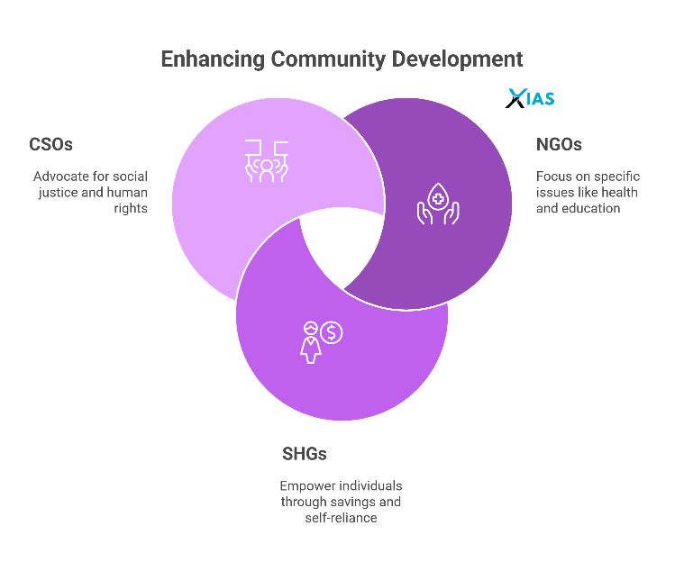
GS2-GOVE-0258 · Governance · Civil Society
Social Capital & Community Development
GS2-GOVE-0259
Quote
"Communities are not beneficiaries they are architects of change." — Ministry of Rural Development
Introduction
India’s welfare model, from SHGs to community kitchens, succeeds when people take part in creating results. Articles 40 and 243 and SDG 11 (inclusive communities) highlight how strong decentralised, participatory models are.
Examples
DAY-NRLM brought together 9 crore SHG women for nutrition and sanitation drives.
The Aspirational Blocks Programme used local metrics through community dashboards.
The Ministry of Tribal Affairs supported Van Dhan Vikas Kendras as enterprises run by communities.
Conclusion
Governance changes from mere delivery to dignity when communities take the lead.
Non-Governmental Organizations & Civil Society
GS2-GOVE-0261
Quote
"NGOs are sine qua non for a healthy democracy as they ensure 'Sarve bhavantu sukhinah, sarve santu niramaya' (may everyone be happy)."
Quote
"If we want any significant development, we must co-opt civil society." — Nelson Mandela
Introduction
Non-Governmental Organizations (NGOs) and Civil Society Organizations (CSOs) are voluntary, public-spirited associations that serve as vital shock absorbers and developmental multipliers in a democratic polity. Acting as the institutional conduits between the formal state machinery and grassroots communities, they facilitate participatory policymaking, advance social justice, and demand administrative accountability.
Examples
Social welfare innovation: Collectives like SEWA and Mazdoor Kisan Shakti Sangathan (MKSS) pioneered landmark institutional rights including microfinance empowerment and the Right to Information.
Disaster mitigation and humanitarian relief: Civil society mobilization during the COVID-19 pandemic provided critical food security, medical oxygen supply, and distress transport across migrant corridors.
Governance vigilance: Environmental advocacy and rights monitoring by organizations like ADR (Association for Democratic Reforms) drove candidate criminal disclosure norms and electoral transparency.
Conclusion
Nurturing a healthy democratic ecosystem requires the state and civil society to operate through the 3 Cs: Collaboration, Compassion, and Collective Responsibility. While regulatory compliance under the FCRA ensures transparency, the regulatory framework must avoid stifling grassroots social innovation and legitimate rights-based democratic advocacy.
Donor Agencies
Social Stock Exchange & Philanthropy
GS2-GOVE-0270
Quote
"Markets can fund change when trust meets transparency." — SEBI Chairperson
Introduction
The Social Stock Exchange (SSE) connects capital with compassion, turning CSR into community impact. It fits SDG 17 on partnerships and Article 38’s directive for social justice.
Examples
In Mumbai, SEBI gave the first accreditation to Not-for-Profit Organizations (NPOs) under the SSE.
CSR 2.0 guidelines matched disclosure norms to the SSE framework.
The Ministry of Corporate Affairs introduced impact reporting standards for social enterprises.
Conclusion
Philanthropy needs structure, scale and strategy. The SSE is India’s leap towards finance with a conscience.
DR. CSE — REPLICA · INTRO TO CONCLUSION077 / 217
Dr. CSE — Replica
Donor Agencies, Philanthropy & NGOs
GS2-GOVE-0271
Introduction
Donor agencies (bilateral, multilateral, and philanthropic foundations) and charitable non-profit entities supply vital catalytic capital, technical expertise, and developmental innovation to address entrenched socio-economic vulnerabilities across underserved regions and communities.
Examples
Corporate Social Responsibility (CSR): Mandatory 2% allocation under Section 135 of the Companies Act, 2013, channeling over ₹25,000 crore annually into education, healthcare, and rural infrastructure.
Blended finance and impact investing: Philanthropic foundations partnering with public funds to de-risk sustainable infrastructure and primary healthcare interventions.
Regulatory framework: Mandatory registration and compliance protocols under the Foreign Contribution (Regulation) Act (FCRA) ensuring national security and financial transparency in foreign philanthropic inflows.
Conclusion
Harnessing the full developmental potential of philanthropy requires institutionalizing the 3 Cs: Collaboration, Compassion, and Collective Responsibility—fostering transparent public-philanthropic partnerships that align donor capital with constitutional priorities and SDG 17 (Partnerships for the Goals).
Government Schemes and Policies
Government Policies and Interventions
GS2-GOVE-0262
Quote
"Policies must not only target growth, but must also engineer inclusion." — Amartya Sen
Introduction
From Jan Dhan to Jal Jeevan, government interventions have moved from delivering entitlements to achieving outcomes in mission mode. They reflect Antyodaya and “Minimum Government, Maximum Governance” through technology-driven, targeted schemes.
Examples
NITI Aayog released policy vision documents on ‘Viksit Bharat @2047’.
The MoRD added AI-powered monitoring to DAY-NRLM.
The MoHFW launched a dashboard for PM-ABHIM convergence.
Conclusion
Development policy must shift from spending to empowerment. It should be backed by citizen data, local feedback and outcomes, not outlays.
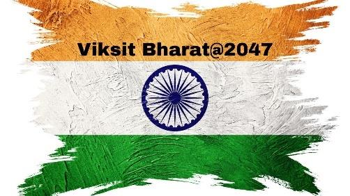
GS2-GOVE-0262 · Governance · Government Schemes and Policies
DR. CSE — REPLICA · INTRO TO CONCLUSION078 / 217
Dr. CSE — Replica
Government Welfare Schemes: Universal Evaluation Framework
GS2-GOVE-0264
Quote
"Most of our problems are due to poor implementation, wrong priorities and unattainable targets." — JRD Tata
Introduction
Public welfare schemes embody the constitutional mandate to establish a welfare state (Articles 38, 39, and 47). Evaluating any government scheme requires a systematic audit tracking its lifecycle from design and beneficiary identification to capacity-building, last-mile execution, and post-implementation outcome verification.
A government scheme must ultimately be judged by outcomes, not outlays. Shifting from top-down bureaucratic provisioning to data-backed convergence, participatory decentralized execution through PRIs, and real-time citizen grievance redressal turns public allocations into lasting grassroots empowerment (SDG 1 & 10).
Scheme-related issues
Targeted Beneficiary Identification: Inclusion and exclusion errors; low awareness.
Formulation: One-size-fits-all design; a top-down approach that ignores local self-government (LSG); low participation by communities and civil society; multiple schemes with poor convergence and overlapping jurisdiction.
Capacity (3F): Funds (low outlay or underutilisation); Functionaries (trained, committed staff); Functions (low coverage); and an infrastructure deficit.
Implementation: Corruption and leakages; poor quality; poor grievance redress mechanism (GRM); red tape and bureaucratic delay; socio-cultural barriers.
Post-Implementation: Poor monitoring and midcourse correction. Solution: technology, local self-government and ART.
Launched in Budget 2023, the Aspirational Blocks Programme (ABP) builds upon the success of the Aspirational Districts Programme (ADP), targeting 500 lagging administrative blocks across 329 districts to accelerate saturation across key development metrics: health, nutrition, education, agriculture, basic infrastructure, and social development.
Examples
Decentralised monitoring: Deploying Block Development Fellows and dynamic Key Performance Indicators (KPIs) to rank performance and spur inter-block competitive federalism.
Thematic convergence: Saturation campaigns (such as Chintan Shivirs and Sankalp Saptaah) focusing on institutional deliveries, supplementary nutrition, and soil health cards.
Community ownership: Utilizing Gram Sabhas and local Self-Help Group networks to co-create tailored block-level development blueprints.
Conclusion
By driving progressive decentralisation and granular target saturation, the ABP operationalizes citizen-centric micro-planning, proving that empowering sub-district administrative machinery is essential to bridging regional inequality and realizing inclusive Viksit Bharat goals.
SHGs
SELF HELP GROUPS (SHGs)
GS2-GOVE-0269
Quote
"Govt aims to create unicorns among SHGs."
Quote
"SHGs need to be transformed into National Help Groups."
Introduction
Self-Help Groups (SHGs) are voluntary, affinity-based collectives of 10–20 rural or urban women who pool savings and access bank credit to build livelihood enterprises, financial inclusion, and social solidarity—functioning as the bedrock of decentralized rural capitalism and women-led development.
Examples
DAY-NRLM mobilization: Over 10 crore rural women organized into 90 lakh SHGs, with cumulative bank credit linkage exceeding ₹8 lakh crore and Non-Performing Assets (NPAs) maintained below 2%.
Lakhpati Didi Initiative: Transforming SHG members into micro-entrepreneurs earning sustainable annualized incomes of over ₹1 lakh through agribusiness, drone tech (Namo Drone Didi), and local processing.
Market convergence: Connecting rural SHG craft clusters directly with consumers through ONDC (Open Network for Digital Commerce) and Government e-Marketplace (GeM).
Conclusion
SHGs represent an untapped powerhouse of enterprise that converts social capital into economic empowerment. Upgrading them from micro-credit consumers into viable producer cooperatives and nano-enterprises will make them the engine of self-reliant rural economic revival.
DR. CSE — REPLICA · INTRO TO CONCLUSION079 / 217
Dr. CSE — Replica
PART GS-2 · CHAPTER 06
International Relations
IR answers blend facts with a clear point of view. These cards carry the core relations, groupings, and doctrines with usable examples.
Economic diplomacy is the strategic deployment of diplomatic statecraft, multilateral negotiations, and international partnerships to secure a nation's core economic interests—advancing trade expansion, energy security, foreign direct investment, and critical technology transfers while shaping global economic governance rules.
Examples
Strategic Free Trade Agreements (FTAs): India's early-harvest trade deals (CEPA with UAE, ECTA with Australia, and TEPA with EFTA) secure preferential market access for labor-intensive exports and service professionals.
Energy and critical minerals statecraft: Bilateral sourcing pacts via KABIL (Khanij Bidesh India Ltd) in Australia and Argentina secure lithium and cobalt supplies for green transition industries.
Development partnership diplomacy: Concessional Lines of Credit (LoC) exceeding \$35 billion extended across Africa, South Asia, and Latin America through the Exim Bank of India, paired with digital public infrastructure exports (UPI, DigiLocker).
Conclusion
In an era of geoeconomic fragmentation and supply-chain "friend-shoring," Indian economic diplomacy must balance global market integration with strategic self-reliance (Atmanirbhar Bharat). Focusing on the 5Ts (Talent, Tradition, Technology, Tourism, and Trade) through Indian diplomatic missions positions the country as a trusted node in resilient global value chains.
Effect of Policies and Politics
GS2-INTE-0298
Quote
"In a globalised world, even sovereignty is influenced by decisions abroad." — Foreign Policy White Paper
Introduction
In a polycrisis world, what Washington, Brussels or Beijing decide is felt in New Delhi. Digital protectionism, tech decoupling and climate finance are examples. India must read these global shifts and match its interests with agility, sovereignty and strategic depth.
Examples
The EU’s CBAM policy raised concerns about India’s carbon trade.
The US CHIPS Act pushed India to work on semiconductor collaboration.
China’s rare-earth export controls led to an India-Australia critical minerals pact.
Conclusion
India’s external strategy needs both foresight and resilience, to protect sovereignty while helping to shape the global commons.
India's FOREIGN POLICY
GS2-INTE-0299
Quote
"FP is an exercise of forging convergences and managing divergences." — S. Jaishankar
Introduction
India’s foreign policy mixes strategic autonomy with omnidirectional diplomatic engagement. It aims to protect national interests and promote global stability through a balanced approach.
Conclusion
India’s energetic diplomacy and the rise of global heteropolarity can make India a Vishwaguru.
"There are no permanent friends and no permanent foes; only interests are permanent."
India must adapt to new realities as new challenges arise.
Art. 51
SSM: “Minimaxing” means minimising harms and maximising gains.
DR. CSE — REPLICA · INTRO TO CONCLUSION081 / 217
Dr. CSE — Replica
India's Changing Global Stature and Role
GS2-INTE-0300
Quote
"India is part of both global managers and the trade union." — Vivek Katju
Introduction
India’s foreign policy has transitioned from defensive non-alignment to confident, multi-aligned global leadership. Recognized as a pivotal swing state in a fragmented geopolitical order, India navigates competing power blocs to maximize national interest while serving as a responsible provider of global public goods and the foremost voice of the Global South.
Examples
Bridge-builder in multilateral crises: Spearheading the G20 New Delhi Leaders' Declaration with 100% consensus, integrating the African Union as a permanent G20 member.
Humanitarian First Responder: Executing swift HADR operations during the Turkey-Syria earthquake (Operation Dost) and conflict evacuations (Operation Kaveri in Sudan).
Proactive minilateralism: Simultaneous, constructive engagement across contradictory platforms—Quad and I2U2 on one hand, BRICS+ and SCO on the other.
Conclusion
Embodying the civilizational mantle of Vishwamitra (a friend to the world), India’s foreign policy reconciles strategic autonomy with global responsibility—leveraging its normative weight, economic momentum, and diplomatic agility to shape reformed multilateralism and promote a stable, multipolar world order.
Russia-ukraine CONFLICT
GS2-INTE-0302
Quote
"Today's era is not an era of war." — PM Narendra Modi to President Vladimir Putin
Introduction
The Russia-Ukraine conflict has accelerated structural geopolitical polarization, fracturing global energy, food, and fertilizer supply chains. Grounded in strategic autonomy and principled non-involvement, India has navigated Western diplomatic pressure and historic defense ties with Moscow by advocating dialogue, respect for the UN Charter, and immediate cessation of hostilities.
Examples
Pragmatic energy security: Procuring discounted Russian crude oil to insulate domestic consumers from inflationary shocks, subsequently refining and stabilizing European petroleum supplies.
Humanitarian assistance: Delivering consecutive consignments of essential medical supplies, pharmaceuticals, and disaster relief to Ukraine.
Diplomatic bridge-building: Facilitating backchannel consultations concerning the Black Sea Grain Initiative and safety protocols around the Zaporizhzhia nuclear power plant.
Conclusion
By maintaining diplomatic channels with both Moscow and Kyiv, India preserves its strategic independence while establishing credentials as a potential mediator. Its balanced stance reinforces that true non-alignment is not passive neutrality, but the active pursuit of global peace grounded in national interest and international law.
DR. CSE — REPLICA · INTRO TO CONCLUSION082 / 217
Dr. CSE — Replica
VOICE of GLOBAL SOUTH
GS2-INTE-0303
Quote
"The era of leader and led is over." — PM Modi
Quote
"The Global South expects India to play a stabilizing and bridging role, by derisking the global economy and depolarising the world." — S. Jaishankar
Introduction
The Global South encompasses nations of the developing world that share collective historical legacies of colonialism, economic marginalization, and systemic under-representation in post-WWII multilateral institutions. India has stepped forward as the foremost advocate and institutional bridge championing their developmental priorities on the global stage.
Examples
Convening multiple Voice of Global South Summits, mobilizing over 125 developing nations to unify demands on food, fertilizer, and energy security.
Securing permanent membership for the African Union in the G20 during the Indian Presidency, democratizing decision-making at the high table of global economic governance.
Championing the Global Biofuels Alliance and sharing digital public goods (UPI, CoWIN, DigiLocker) through open-source technology transfer frameworks.
Conclusion
By institutionalizing the aspirations of developing nations, India anchors its foreign policy in normative legitimacy—converting the collective weight of the Global South into tangible bargaining leverage to push for reformed multilateralism, climate finance equity, and sovereign debt restructuring.
"Africa is at the top of our priorities; we will continue to deepen our engagement with Africa." — 10 Guiding Principles for India-Africa Engagement
Introduction
The India-Africa partnership is rooted in shared anti-colonial struggles, deep civilizational ties across the Indian Ocean, and South-South solidarity. Guided by the philosophy of Ubuntu ("I am because we are"), India's developmental engagement emphasizes human resource development, capacity building, and digital empowerment without conditionalities or neo-colonial debt traps.
Examples
Institutional inclusion: Championing the African Union's historic induction into the G20 during India's 2023 Presidency.
Development partnerships: Extending concessional Lines of Credit (LoC) exceeding \$12 billion across 40+ African nations, constructing key public infrastructure and educational hubs.
Digital and health diplomacy: Expanding the e-VidyaBharati and e-ArogyaBharati (e-VBAB) tele-education and tele-medicine networks, alongside vaccine and generic pharmaceutical supply.
Conclusion
Aligning India's developmental assistance with the African Union's Agenda 2063 and the African Continental Free Trade Area (AfCFTA) creates mutual economic resilience—combining Africa's vast resource base with Indian technological innovation to build an equitable, multipolar global architecture.
DR. CSE — REPLICA · INTRO TO CONCLUSION083 / 217
Dr. CSE — Replica
Bilateral, Regional and Global Groupings
GS2-INTE-0308
Quote
"Strategic autonomy is not strategic isolation it is meaningful multialignment." — S. Jaishankar
Introduction
India can become a Vishwa Mitra only through active bilateralism and purposeful multilateralism. India is adjusting its groupings, from the Quad’s Indo-Pacific pivot to BRICS+ reform. It aims at value, norms and strategic hedging in a fluid global order, and not only at voice.
Examples
India chaired the Global South Summit to strengthen LDC voices.
BRICS took in new members, and India pushed for a balanced expansion.
India and the EU restarted FTA talks under the Trade and Tech Council.
Conclusion
India’s group diplomacy needs agility to match its aspirations, wherever global stakes meet national interest.
G20
GS2-INTE-0309
Quote
"Vasudhaiva Kutumbakam — One Earth, One Family, One Future." — G20 New Delhi Declaration
Introduction
At a critical juncture marked by geopolitical fracturing and economic polycrisis, India hosted the 18th G20 Summit in New Delhi (2023), transforming the economic steering committee into a catalyst for human-centric globalization, multilateral development bank reforms, and inclusive sustainable development.
Examples
Historic diplomatic consensus: Achieving 100% consensus on the New Delhi Leaders' Declaration despite acute polarization over the Ukraine conflict.
Institutional expansion: Inducting the African Union as a permanent G20 member, elevating Global South representation at the premier economic high table.
Landmark connectivity & climate initiatives: Launching the India-Middle East-Europe Economic Corridor (IMEC) and establishing the Global Biofuels Alliance (GBA).
Conclusion
India's G20 Presidency proved that reformed multilateralism is possible when diplomacy prioritizes shared civilizational solutions over geopolitical zero-sum competition—cementing India's global stature as an indispensable consensus-builder and strategic bridge.
BRICS+ Architecture & South-South Cooperation
GS2-INTE-0310
Introduction
BRICS is a premier multilateral platform of major emerging market economies seeking to foster South-South cooperation, democratize global economic governance, and provide an alternative to Western-dominated Bretton Woods institutions.
Following historic expansion (BRICS+), the bloc represents a formidable geopolitical and economic counterweight.
Data
Aggregate global weight of expanded BRICS:
Population: \~49.5% of the world population.
Geographic territory: \~30% of global landmass.
Economic output: \~40% of global GDP (PPP), surpassing the G7.
Global merchandise trade: \~26% of world trade.
Energy reserves: Controls over 42% of global crude oil production.
Conclusion
The BRICS+ framework widens the circle of friends, providing momentum for national currency trade settlement, rupee internationalisation, and alternative finance via the New Development Bank (NDB) and Contingent Reserve Arrangement (CRA).
For India, the strategic challenge is ensuring BRICS remains an inclusive, multipolar non-Western forum rather than drifting into an anti-Western axis dominated by any single power.
DR. CSE — REPLICA · INTRO TO CONCLUSION084 / 217
Dr. CSE — Replica
The Quad: Indo-Pacific Strategic Convergence
GS2-INTE-0311
Quote
"Quad is a force for global good." — PM Narendra Modi
Introduction
The Quadrilateral Security Dialogue (Quad)—comprising India, the United States, Japan, and Australia—is a premier plurilateral diplomatic and security partnership committed to supporting a Free, Open, Inclusive, and Resilient Indo-Pacific (FOIP) anchored in the rule of international law and freedom of navigation (UNCLOS).
Examples
Maritime Domain Awareness: Deploying the Indo-Pacific Partnership for Maritime Domain Awareness (IPMDA) to combat illegal, unreported, and unregulated (IUU) fishing and monitor grey-zone maritime activity.
Humanitarian public goods: Vaccine partnership, Quad Climate Working Group, and coordinated Humanitarian Assistance and Disaster Relief (HADR) frameworks.
Conclusion
By deliberately framing the Quad around the positive delivery of regional public goods rather than an exclusive military alliance, India leverages the partnership to balance regional security architectures, check coercive hegemony, and safeguard its vital Indian Ocean maritime lifelines without compromising its strategic autonomy.
ASEAN Centrality & Act East Corridor
GS2-INTE-0312
Quote
"ASEAN centrality is the cornerstone of India's Act East Policy and its Indo-Pacific vision." — PM Narendra Modi
Introduction
The Association of Southeast Asian Nations (ASEAN) forms the geographic and normative anchor of India's Act East Policy and wider Indo-Pacific maritime architecture. Bound by deep historical, cultural, and commerce corridors, the partnership is grounded in the convergence between India's Indo-Pacific Oceans Initiative (IPOI) and the ASEAN Outlook on the Indo-Pacific (AOIP).
Examples
Physical and digital connectivity: Accelerating the India-Myanmar-Thailand (IMT) Trilateral Highway and operationalizing digital cross-border payments (linking UPI with Singapore's PayNow).
Maritime security: Institutionalizing annual ASEAN-India Maritime Exercises (AIME) to protect critical sea lanes of communication through the Malacca Strait.
Trade architecture: Reviewing the ASEAN-India Trade in Goods Agreement (AITIGA) to ensure a more balanced, reciprocal, and resilient economic partnership.
Conclusion
India's engagement with Southeast Asia must continue through the "connecting the connectivities" paradigm—integrating physical infrastructure, digital rails, and civilizational people-to-people bonds to uphold ASEAN centrality in an open, rules-based Indo-Pacific.
Groupings involving Immediate and Extended neighbours
"We do not only see the SCO as an extended neighbourhood, but as an extended family." — PM Narendra Modi
Introduction
The Shanghai Cooperation Organisation (SCO) is an intergovernmental Eurasian political, economic, and security alliance spanning over 60% of the Eurasian landmass. For India, membership provides a vital diplomatic bridge into its extended neighbourhood of Central Asia, facilitating counter-terrorism cooperation, energy security dialogue, and continental trade corridors.
Examples
Regional Anti-Terrorist Structure (RATS-SCO): Institutional intelligence sharing and operational coordination to counter the "three evils" of terrorism, separatism, and religious extremism.
Strategic connectivity: Promoting regional trade through the International North-South Transport Corridor (INSTC), the Ashgabat Agreement, and the strategic operationalization of Iran's Chabahar Port.
India's SECURE framework: Security, Economic development, Connectivity, Unity, Respect for sovereignty, and Environmental protection.
Conclusion
India leverages the SCO to preserve its strategic autonomy in continental Eurasia, counter regional isolation, and prevent unilateral dominance of Central Asian corridors, while steadfastly asserting respect for territorial integrity and sovereign equality.
DR. CSE — REPLICA · INTRO TO CONCLUSION085 / 217
Dr. CSE — Replica
BIMSTEC vs SAARC: Sub-Regional Integration
GS2-INTE-0314
Introduction
South Asian regionalism operates under the structural tension between an institutionalized but paralyzed SAARC and an emerging, vibrant BIMSTEC. While SAARC remains immobilized by bilateral political disputes, the Bay of Bengal Initiative for Multi-Sectoral Technical and Economic Cooperation (BIMSTEC) serves as India's primary vehicle bridging its Neighborhood First and Act East policies.
Data
Comparative institutional analysis:
SAARC: Crippled by the consensus-paralysis rule and recurring cross-border security friction with Pakistan, leading to no summit since 2014.
BIMSTEC: Represents 170+ crore people (22% of global population) with a combined GDP exceeding \$4.5 trillion, free from bilateral veto points.
C. Rajamohan's framework: "Two-speed regionalism"—advancing sub-regional integration with willing partners (BBIN—Bangladesh, Bhutan, India, Nepal) when all-inclusive South Asian consensus fails.
Conclusion
BIMSTEC functions as a natural maritime bridge connecting South Asia with Southeast Asia. Realizing its economic potential requires concluding the long-pending BIMSTEC Free Trade Agreement, executing master plans for transport connectivity (Kaladan, IMT Highway), and establishing coastal shipping agreements to transform the Bay of Bengal into an integrated economic community.
Indian Diaspora
Role of Indian Diaspora
GS2-INTE-0315
Quote
"Our diaspora is not just an asset it is an amplifier of Bharat’s soft power." — PM Narendra Modi
Introduction
The diaspora is now more than a bridge for India. It is a lever of diplomacy, technology transfer and narrative-shaping. From Silicon Valley boardrooms to Gulf labour corridors, overseas Indians are strategic stakeholders in India’s foreign engagement.
Examples
Pravasi Bharatiya Divas saw the launch of the Global Diaspora Startup Connect.
Under the India-UAE labour mobility pact, welfare for blue-collar workers was digitised.
Diaspora diplomacy helped speed up the evacuation from Sudan (Operation Kaveri).
Conclusion
India should not only celebrate the diaspora but also co-create its global aspirations with it.
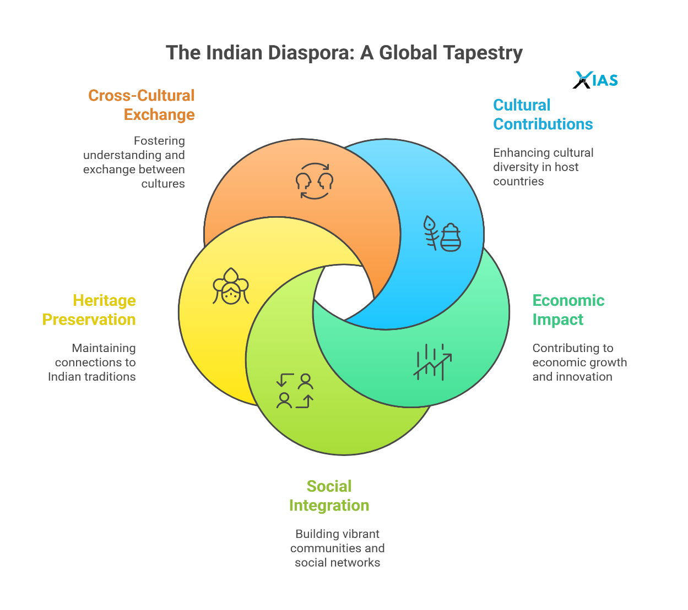
GS2-INTE-0315 · International Relations · Indian Diaspora
DR. CSE — REPLICA · INTRO TO CONCLUSION086 / 217
Dr. CSE — Replica
Indian Diaspora: Soft Power & Remittance Lifelines
GS2-INTE-0316
Introduction
Spanning Non-Resident Indians (NRIs) and Persons of Indian Origin (PIOs/OCIs), the Indian diaspora constitutes the world's largest overseas emigrant population (over 3.2 crore people across 130+ nations).
In political economy, Devesh Kapur's 4 Channels map diaspora contributions: Prospects (educational investment), Absence (wage gains), Diaspora (social remittances and philanthropy), and Return (technology transfer and human capital inflows).
Political & Corporate leadership: Indian-origin heads of government (UK, Mauritius, Guyana) and leadership across Fortune 500 tech conglomerates.
Conclusion
Engaging the diaspora requires implementing the Parliamentary Standing Committee on External Affairs recommendations: formulating a comprehensive National Diaspora Policy and extending consular grievance networks (Madad portal, Pravasi Bharatiya Sahayata Kendra).
Under the 4 Cs framework (Connect, Celebrate, Care, and Contribute), India treats its diaspora as living cultural ambassadors (Rashtradoots) and co-creators of Viksit Bharat @ 2047.
"Global governance must evolve or it will erode." — Antonio Guterres
Introduction
The post-war multilateral order has a legitimacy deficit. As India aims for Viksit Bharat@2047, it is pushing for reform of institutions from the UNSC to the WTO. The goal is to make global governance more democratic, so that “rules-based order” does not become a cover for the status quo.
Examples
India supported the Global Digital Public Infrastructure Framework at the G20.
The push for UN Security Council reform was revived at the South Summit chaired by India.
In WTO negotiations, India defended the Global South on agricultural subsidies.
Conclusion
Reimagining institutions is not disruption. It is inclusion, and it ensures equity in making global rules.
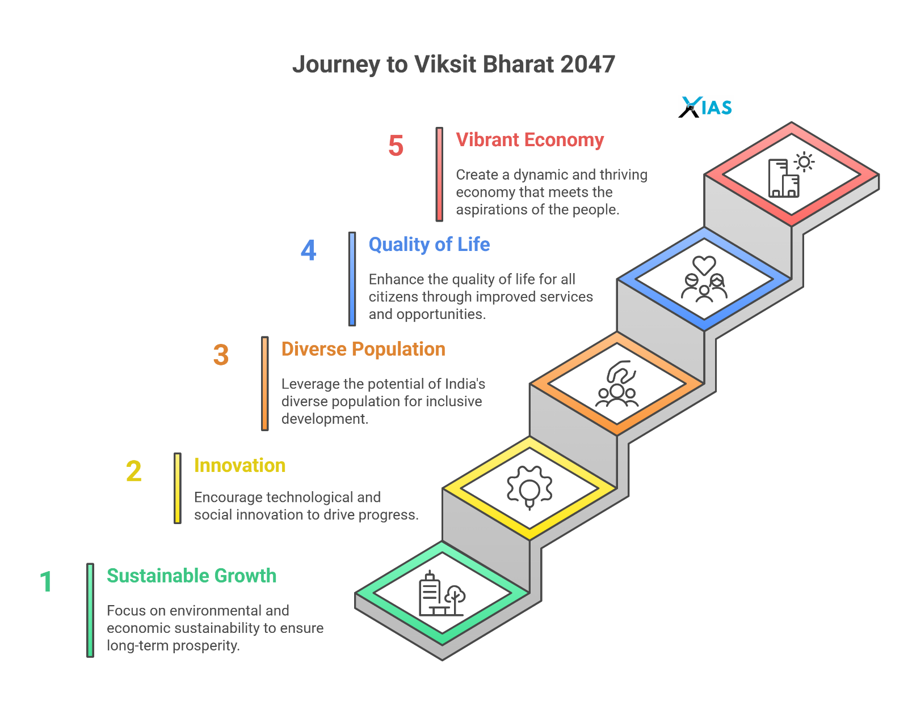
GS2-INTE-0317 · International Relations · United Nations and its Agencies
Reformed Multilateralism (UN, WTO, IMF)
GS2-INTE-0318
Quote
"Developing countries want human-centric globalization; therefore India must take a proactive role in pushing for reformed multilateralism." — PM Narendra Modi
Quote
"Trust, Transparency and Timeliness are the 3Ts essential for modern global institutions." — PM Modi
Introduction
The post-1945 multilateral architecture—centered on the UN Security Council, Bretton Woods financial institutions (IMF, World Bank), and the World Trade Organization—suffers from an acute representation and democracy deficit. It reflects an outdated 20th-century balance of power, unable to address contemporary polycrises spanning climate catastrophe, sovereign debt distress, and unilateral trade wars.
Examples
UN Security Council (UNSC) reform: India's call for expanding both permanent and non-permanent seats under the NORMS framework (New Orientation for a Reformed Multilateral System) alongside the G4 (India, Brazil, Germany, Japan) and L.69 groups.
WTO reform: Defending the public stockholding permanent solution for food security (Peace Clause) and demanding the urgent restoration of the paralyzed two-tier Appellate Body for dispute resolution.
Bretton Woods quota reform: Advocating for IMF 16th General Review of Quotas to shift voting shares in favor of dynamic emerging economies and establish accessible sovereign debt restructuring mechanisms.
Conclusion
Multilateralism without reform is an empty shell. By championing human-centric governance, India acts not as a revisionist disruptor, but as an indispensable architect of a democratic, rules-based international order that balances global responsibilities with equity for the Global South.
"India's ties with Bangladesh are a role model in international relations." — Harsh Vardhan Shringla
Introduction
India and Bangladesh share a 4,096-km border—India's longest with any neighbor—anchored in shared history, deep civilizational links, and India's decisive role in the 1971 Liberation War. Operating as the fulcrum of India's Neighborhood First and Act East policies, bilateral ties are driven by deep economic interdependence, transit corridors, and security cooperation.
Examples
Boundary & connectivity breakthroughs: Resolving the historic Land Boundary Agreement (LBA, 100th CAA 2015) and operationalizing inland waterway trade routes alongside the Maitri Setu bridge.
Energy cooperation: Commissioning the India-Bangladesh Friendship Pipeline for high-speed diesel transit and cross-border power transmission from the Godda thermal plant.
Sub-regional integration: Incorporating Bangladesh into the India-Myanmar-Thailand (IMT) highway corridor and the BBIN Motor Vehicles Agreement.
Conclusion
Preserving this strategic partnership amid shifting domestic political dynamics requires concluding equitable water-sharing treaties (Teesta river agreement), addressing minority protection concerns, ensuring border management with zero border fatalities, and signing a comprehensive Comprehensive Economic Partnership Agreement (CEPA).
India-Nepal Relations
GS2-INTE-0322
Quote
"The India-Nepal border should not be a barrier, but a bridge to bring prosperity to both sides." — PM Narendra Modi
Introduction
Bound by open borders, sovereign proximity, and deep-rooted civilizational ties of kinship and culture—traditionally described as "Roti-Beti ka Rishta"—India and Nepal share unique relations cemented by the 1950 Treaty of Peace and Friendship, serving as a critical strategic buffer along the Himalayan frontier.
Examples
Cross-border connectivity: Commissioning South Asia's first cross-border petroleum pipeline (Motihari-Amlekhgunj) and operationalizing cross-border passenger railway services (Jaynagar-Kurtha).
Hydro-power cooperation: Long-term bilateral power trade agreement committing India to import 10,000 MW of hydroelectricity from Nepal over 10 years.
Digital and financial integration: Interlinking UPI and Nepal's National Payments Interface (NPI) to facilitate instant, low-cost citizen remittances.
Conclusion
Sustaining mutual trust requires addressing sensitive irritants with mature statecraft—amicably settling border demarcations (Kalapani, Lipulekh, Susta) through established diplomatic commissions, updating the 1950 Treaty to reflect modern sovereign equality, and accelerating completion of high-impact infrastructure projects to prevent external strategic encroachment.
DR. CSE — REPLICA · INTRO TO CONCLUSION089 / 217
Dr. CSE — Replica
India-Bhutan Relations
GS2-INTE-0323
Quote
"Bhutan and India share an exemplary bilateral partnership, based on mutual trust, goodwill and shared values." — PM Narendra Modi
Introduction
Anchored in the 1949 Treaty of Friendship and Cooperation (updated in 2007), India and Bhutan share an exemplary relationship of trust, sovereign equality, and strategic harmony. Bhutan serves as an indispensable geopolitical buffer state insulating India's vulnerable Siliguri Corridor ("Chicken's Neck").
Examples
Clean energy symbiosis: Mutually beneficial development of major hydroelectric projects (Chukha, Kurichhu, Tala, Mangdechhu, and Punatsangchhu), providing clean baseload power to India and driving Bhutan's export revenue.
Development assistance: India remains Bhutan's primary development partner, supporting its Five-Year Plans and funding the pioneering Gelephu Mindfulness City Special Administrative Region.
Security comity: Close coordination on regional security, demonstrated during the 2017 Doklam standoff along the tri-junction.
Conclusion
Maintaining this model partnership demands expanding bilateral cooperation beyond traditional hydropower into digital connectivity, space exploration, and cross-border rail links (Kokrajhar-Gelephu), while supporting Bhutan's economic diversification and respecting its sovereign diplomatic boundary negotiations with China.
India-Sri Lanka Relations
GS2-INTE-0324
Quote
"Blood is thicker than water." — S. Jaishankar (on India's immediate crisis support to Sri Lanka)
Quote
"The focus must be on elevating bilateral ties from transactional cooperation to a strategic economic partnership." — Milinda Moragoda
Introduction
Separated by the narrow Palk Strait, India and Sri Lanka share deep-rooted civilizational, religious (Buddhist and Hindu), and commercial ties. Positioned at the crossroads of vital sea lanes of communication across the Indian Ocean, Sri Lanka holds pivotal maritime security significance for India's SAGAR vision (Security and Growth for All in the Region).
Examples
Crisis assistance: Extending unprecedented humanitarian and financial lifelines exceeding \$4 billion (currency swaps, credit lines for fuel, food, and fertilizer) during Sri Lanka's acute 2022 economic crisis.
Strategic infrastructure: Developing the West Container Terminal at Colombo Port and the Trincomalee Oil Tank Farms through public-private partnerships.
Connectivity & digital rails: Resuming ferry services, establishing cross-border electricity grid connectivity, and deploying India's UPI payments system.
Conclusion
Elevating bilateral ties requires resolving lingering friction: finding a humane, lasting solution to the Palk Bay fishermen dispute, implementing the 13th Constitutional Amendment to devolve meaningful political autonomy to Sri Lankan Tamils, and safeguarding regional maritime security by preventing foreign military bases in the Indian Ocean.
DR. CSE — REPLICA · INTRO TO CONCLUSION090 / 217
Dr. CSE — Replica
India-Myanmar Relations
GS2-INTE-0325
Quote
"Myanmar is the indispensable pillar and gateway of India's Act East Policy." — PM Narendra Modi
Introduction
Sharing a 1,643-km land border across four northeastern states and a maritime boundary in the Bay of Bengal, Myanmar is India's sole physical bridge connecting South Asia to Southeast Asia. It represents a vital strategic pivot where India's Neighborhood First and Act East policies seamlessly converge.
Examples
Strategic connectivity: Executing the Kaladan Multi-Modal Transit Transport Project (connecting Kolkata to Sittwe Port and Mizoram) and the India-Myanmar-Thailand Trilateral Highway.
Security cooperation: Joint border management to curb insurgent safe havens in the Naga and Chin hills, alongside calibrated management of the Free Movement Regime (FMR).
Humanitarian and capacity-building diplomacy: Supplying food aid, disaster relief, and development grants under the Rakhine State Development Programme.
Conclusion
Navigating complex internal conflicts following Myanmar's military coup requires balancing strategic imperatives—countering insurgent sanctuaries and checking Chinese strategic expansion—with principled advocacy for democratic restoration, humanitarian support for displaced civilians, and inclusive border management.
India-Afghanistan Relations
GS2-INTE-0326
Quote
"India's vision is a sovereign, united, stable, pluralistic and democratic Afghanistan." — Rakesh Sood
Introduction
Situated at the strategic crossroads of South Asia, Central Asia, and the Middle East, Afghanistan holds vital security, trade, and geopolitical significance for India. Bound by historical cultural affinity, India's approach prioritizes direct people-to-people ties, humanitarian assistance, and preserving regional counter-terrorism security.
Examples
Historic developmental legacy: Constructing the Afghan Parliament building, the Salma Dam (India-Afghanistan Friendship Dam), the Zaranj-Delaram highway, and over 400 community development projects.
Pragmatic humanitarian engagement: Re-establishing a technical diplomatic presence in Kabul to deliver continuous humanitarian aid—including wheat shipments, emergency medicines, earthquake relief, and polio vaccines.
Trade corridors: Bypassing Pakistani land denial through the operationalization of the Chabahar Port (Iran) and the India-Afghanistan air freight corridor.
Conclusion
India's Afghan policy must maintain pragmatic engagement with the de facto authorities while advocating for an inclusive government, women's educational rights, and strict enforcement of UNSC Resolution 2593 to prevent Afghan territory from being used as a staging ground for terrorism against India.
DR. CSE — REPLICA · INTRO TO CONCLUSION091 / 217
Dr. CSE — Replica
India-Pakistan Relations
GS2-INTE-0327
Quote
"You can choose your friends, but not your neighbours." — Atal Bihari Vajpayee
Introduction
India's relations with Pakistan remain burdened by the structural legacy of Partition, chronic cross-border terrorism, and disputed boundaries (Line of Control, Sir Creek). India maintains a firm, non-negotiable policy that "terror and talks cannot go together", requiring Pakistan to take verifiable, irreversible steps to dismantle state-sponsored terrorist infrastructure before substantive bilateral engagement can resume.
Data
Institutional flashpoints & trade suspension:
Complete suspension of bilateral trade and high-level political dialogue following the 2019 Pulwama terror strike and the constitutional reorganization of Jammu & Kashmir.
The Indus Waters Treaty (1960): India has sought formal modifications under Article XII(3) to address changed demographic, technological, and hydrological realities.
Pakistan's domestic polycrisis: Compounded by macroeconomic insolvency, military-civilian institutional imbalance, and acute internal security threats (TTP, Balochistan unrest).
Conclusion
While a peaceful, stable, and economically secure Pakistan is desirable for regional stability, normalization requires a fundamental strategic shift from Islamabad—ending its doctrine of using cross-border terrorism as an instrument of state policy, adhering to FATF anti-money laundering standards, and engaging in bilateral diplomacy governed strictly by the Simla Agreement and Lahore Declaration.
Neighborhood First Policy: Regional Architecture
GS2-INTE-0328
Quote
"In our neighborhood, we seek peace, prosperity, and shared progress through non-reciprocal partnership." — Gujral Doctrine legacy
Introduction
India's Neighborhood First Policy represents the core pillar of its external strategy, premised on the understanding that India's domestic growth, internal security, and global power aspirations are inextricably tied to peace, stability, and deep economic connectivity across the South Asian subcontinent.
Examples
Non-reciprocal development partnership: Extending over \$35 billion in concessional credit lines, grant assistance, and humanitarian relief across South Asian neighbors.
Seamless sub-regional integration: Operationalizing the BBIN (Bangladesh, Bhutan, India, Nepal) Motor Vehicles Agreement and energy grids (cross-border electricity transmission with Nepal, Bhutan, and Bangladesh).
Digital and financial connectivity: Exporting the India Stack (UPI integration in Nepal, Sri Lanka, Bhutan, and Mauritius) to create unified economic corridors.
Conclusion
Neutralizing external geopolitical encirclement (such as China's Belt and Road Initiative) requires executing infrastructure commitments with speed, respecting sovereign equality, and institutionalizing sub-regional frameworks (BIMSTEC, BBIN) to build deep, irreversible bonds of mutual dependency that transform South Asia into an integrated growth engine.
DR. CSE — REPLICA · INTRO TO CONCLUSION092 / 217
Dr. CSE — Replica
PART GS-2 · CHAPTER 07
Social Justice
Social Justice questions ask for schemes with purpose and gaps. These cards pair each theme with the right evidence for a balanced answer.
"Poverty is the worst form of violence." – Mahatma Gandhi
Quote
"Poverty anywhere is a threat to prosperity everywhere." — ILO Declaration
Introduction
India's battle against deprivation is pivoting from basic food security (caloric sufficiency) to comprehensive nutritional security and human capability building. Rooted in the constitutional mandate under Article 47 (raising nutrition and public health standards) and Article 21 (Right to Life with dignity), public policy integrates targeted welfare transfers with digital surveillance to eradicate hidden hunger and child malnutrition.
Examples
The Ministry of Women and Child Development (MoWCD) operationalized the Poshan Tracker, providing real-time biometric and anthropometric tracking of over 10 crore children and lactating mothers across 14 lakh Anganwadis.
The National Food Security Act (NFSA / PMGKAY) covers 81+ crore beneficiaries with digitized ration allocation, biometric e-PoS authentication, and dynamic Aadhaar-enabled inclusion.
Fortified rice distribution and millets promotion (Shree Anna) address widespread micronutrient deficiencies (anaemia) through school mid-day meals (PM POSHAN).
Data
Global Hunger Index (2025): India ranks 102nd out of 123 countries, highlighting acute child wasting (\~18.7%) and stunting challenges.
NITI Aayog MPI: Multidimensional poverty dropped to 11.28%, demonstrating rapid asset-poverty reduction alongside stubborn child malnutrition gaps.
Conclusion
Eradicating hunger requires moving beyond food provisioning to a lifecycle nutrition strategy—realizing the vision of "Sahi Poshan, Desh Roshan" through clean drinking water (Jal Jeevan Mission), sanitation (Swachh Bharat), dietary diversification, and community-led accountability through Panchayats and Self-Help Groups (SDG 2: Zero Hunger).
Poverty
Urban Poor and Informal Workers
GS2-SOCI-0276
Quote
"Cities must work for the ones who build them." — UN-Habitat
Introduction
India's urban economic dynamism relies upon over 15 crore informal workers, gig economy labourers, and migrant workers who power construction, transport, and municipal services while enduring acute spatial, social, and legal exclusion. Securing their welfare operationalizes the directive principles under Articles 41, 42, and 43 (living wage and decent working conditions).
Examples
The Ministry of Housing and Urban Affairs (MoHUA) converged PM SVANidhi with the Skill India Mission and local banking networks, providing collateral-free working capital and digital cashback to over 70 lakh street vendors.
The e-Shram portal has mapped over 30 crore unorganized workers, linking their Universal Account Numbers (UAN) with insurance coverage under PMSBY.
NITI Aayog's gig economy framework recommended universal social security boards and algorithmic grievance redressal to protect platform delivery workers.
Conclusion
Building resilient cities demands transitioning from "smart cities" to "just cities"—mandating portable social protection under the Code on Social Security (2020), establishing Affordable Rental Housing Complexes (ARHCs), and granting urban informal labor collective bargaining and legal dignity (SDG 11).
DR. CSE — REPLICA · INTRO TO CONCLUSION094 / 217
Dr. CSE — Replica
Multidimensional Poverty Alleviation
GS2-SOCI-0277
Quote
"Unleash the power of the poor and there will be no poverty. Hence the need for capacity building and gainful employment." — Muhammad Yunus
Quote
"Overcoming poverty is not a gesture of charity, but an act of justice." — Nelson Mandela
Introduction
Poverty is no longer conceptualized as mere income deprivation; per modern development economics, it represents the systemic failure of individuals to access basic capabilities, freedoms, and opportunities necessary to realize their human potential (Amartya Sen's Capability Approach).
Data
NITI Aayog National Multidimensional Poverty Index (MPI 2023):
India's multidimensional poverty headcount ratio plummeted from 24.85% (2015-16) to 11.28% (2019-21).
Over 24.82 crore people escaped multidimensional poverty over the past decade, driven by rapid improvements in electricity, cooking fuel, sanitation, and bank accounts.
Conclusion
Consolidating this historic escape from poverty requires building structural resilience against economic shocks—coupling targeted physical asset transfers (DBT, PMAY) with universal quality school education, accessible public healthcare, and formal industrial employment to eradicate multi-generational deprivation (SDG 1: No Poverty).
"Bridging the digital divide is the new freedom struggle." — PM’s Digital India Mission
Introduction
Digital inclusion is not only access to technology. It is about removing caste, gender and rural divides in opportunity. Article 21A’s right to education and SDG 9 (industry, innovation, infrastructure) come together in schemes like PM-WANI and BharatNet.
Examples
The MoE launched the National Digital University for underserved learners.
The MeitY took PMGDISHA (Digital Literacy Mission) to remote blocks.
UDISE+ data now includes internet access indicators in school rankings.
Conclusion
Technology is the new tool of social mobility. A digital Bharat must also be a dignified Bharat.
GS2-SOCI-0278 · Social Justice · Education
Education Reforms & National Education Policy (NEP)
GS2-SOCI-0279
Introduction
Education functions as the primary engine of social mobility, gender emancipation, and human capital formation. Anchored in the constitutional fundamental right under Article 21A and the transformative blueprint of the National Education Policy (NEP 2020)—with its 5+3+3+4 pedagogical structure and foundational literacy-numeracy mission (NIPUN Bharat)—education reforms seek to prepare India for a knowledge-driven century.
Data
Economic & Social Metrics:
One additional year of schooling increases individual earning potential by 10% for males and 20% for females.
Educating mothers to secondary school completion cuts the Maternal Mortality Ratio (MMR) and Infant Mortality Rate (IMR) by nearly 50%.
Public spending benchmark: NEP targets raising public education spending to 6% of GDP (currently fluctuating at \~3.1%).
Retention challenges: Over 60 lakh children remain out of school, with marginalized communities disproportionately impacted at secondary levels.
Conclusion
Realizing the demographic dividend requires embracing Education 4.0—prioritizing 21st-century competencies (the 4 Cs: Critical thinking, Communication, Collaboration, and Creativity), reforming vocational training under Samagra Shiksha, bridging digital disparities, and expanding research ecosystems (Anusandhan NRF) to transform India into a global talent and innovation superpower (SDG 4).
Health constitutes the foundational bedrock of economic productivity and human welfare. In alignment with the National Health Policy (NHP 2017) and the constitutional directive under Article 47, India's healthcare architecture is undergoing structural transformation—moving from fragmented tertiary care treatment to an integrated, continuum-of-care model under Ayushman Bharat (pairing PM-JAY secondary/tertiary insurance with 1.7+ lakh Ayushman Arogya Mandirs for primary healthcare).
Data
Healthcare indicators & fiscal data:
Public health expenditure: Increasing toward the NHP target of 2.5% of GDP (currently at \~2.1% of GDP per National Health Accounts 2021-22).
Out-of-Pocket Expenditure (OOPE): Declined significantly from 62.6% (2014-15) to 39.4% (2021-22) of total health expenditure.
Doctor-to-population ratio: Stands at 1:834 (surpassing the WHO benchmark of 1:1000, combining allopathic and AYUSH practitioners).
Conclusion
Securing universal health coverage demands operationalising the 5 Ps framework: Prevention, Primary healthcare, Public investment, Planetary health, and Patient-centric care. Scaling the One Health Approach, expanding the Ayushman Bharat Digital Mission (ABDM), and strengthening rural medical infrastructure will turn the constitutional vision of "Swasth Bharat, Samriddh Bharat" into a lived reality (SDG 3).
DR. CSE — REPLICA · INTRO TO CONCLUSION096 / 217
Dr. CSE — Replica
Mental Health: Rights, Stigma & Tele-MANAS
GS2-SOCI-0281
Introduction
Mental health represents an invisible public health emergency in India, historically compounded by cultural stigma, acute psychiatrist shortages, and low insurance coverage. With the enactment of the progressive Mental Healthcare Act, 2017—which legally guarantees the right to access mental healthcare and decriminalizes suicide—mental well-being is recognized as integral to the fundamental Right to Life under Article 21.
Data
Epidemiological & institutional burden:
UNICEF State of the World's Children Report: 1 in 7 Indian adolescents (10-19 years) experiences significant mental health disorders (depression, anxiety).
WHO estimate: The economic loss resulting from mental health conditions in India between 2012 and 2030 is projected to exceed \$1.03 trillion.
Severe human resource deficit: India has fewer than 0.75 psychiatrists per 100,000 population (recommended WHO ratio: 3 per 100,000).
Conclusion
De-stigmatizing and mainstreaming mental health requires scaling digital tele-consultations through the National Tele Mental Health Programme (Tele-MANAS), integrating psycho-social counselling into schools and primary Ayushman Arogya Mandirs, and training community frontline health workers (ASHAs) in early psychiatric screening to build resilient, community-centred mental healthcare ecosystems.
Miscellaneous (Social Sector)
Social Sector: Health, Education, HR
GS2-SOCI-0283
Quote
"Human development is the true index of national strength." — UNDP HDR
Introduction
Health and education are no longer extras of welfare. They are strategic investments, now guided by the Ayushman Bharat Digital Mission and NEP 2020 to build well-rounded human capital.
Examples
The MoE started an AI dashboard on UDISE+ for learning outcomes.
The MoHFW expanded digital health IDs under the ABDM.
NITI Aayog started the National Health Stack Sandbox.
Conclusion
To turn people into productive citizens, welfare, workforce planning and digital public goods must come together.
DR. CSE — REPLICA · INTRO TO CONCLUSION097 / 217
Dr. CSE — Replica
Social Justice: Universal Analytical Framework
GS2-SOCI-0284
Introduction
Universal analytical structure for social sector questions: Humanising baseline statistic → Vulnerability definition (socio-economic, demographic, regional) → Constitutional vision (Articles 14, 15, 21, 38, 46, and 47) → Scheme performance & institutional bottlenecks → Way forward.
Voice & choice: Citizen feedback, community ownership, social audits, and grievance exit mechanisms are essential to keep public services democratic and accountable.
Data
Universal statistical anchors: Multidimensional Poverty headcount (11.28%), female Labor Force Participation Rate (\~37%), Out-of-pocket health expenditure (39.4%), Gross Enrolment Ratio (GER in Higher Education \~28.4%).
Conclusion
Constitutional anchors:
Article 38: Mandate to secure a social order for the promotion of welfare and minimize inequalities.
Article 46: Promoting educational and economic interests of SCs, STs, and weaker sections.
Article 47: Primary duty of the State to raise nutrition, standard of living, and public health.
Global & national alignment: Fulfilling the Saptarishi vision of Inclusive Growth under Amrit Kaal aligns with SDG 1 (No Poverty), SDG 2 (Zero Hunger), SDG 3 (Good Health), SDG 4 (Quality Education), SDG 5 (Gender Equality), and SDG 16 (Peace, Justice and Strong Institutions) to realize "Sabka Saath, Sabka Vikas, Sabka Vishwas".
"Every child we fail is a future we weaken." — UN CRC Framework
Introduction
A just society is judged by how it looks after its children. Article 39(e)(f), the Juvenile Justice (Care and Protection of Children) Act and SDG 16.2 (end abuse, exploitation) together shape India’s child-centric legal framework.
Examples
The NCPCR launched the Baal Swaraj portal to track orphaned and abandoned children.
The MWCD linked Child Helpline 1098 with the Emergency Response Support System (ERSS).
The Juvenile Justice Act was amended to simplify the role of DMs in child adoption.
Conclusion
Justice for children must prevent harm, help rehabilitation and be rights-based. It should be not just a system, but a safety net.
Disabled
Disability Rights and Accessibility
GS2-SOCI-0286
Quote
"Inclusion is not a favor, it's a constitutional promise." — RPwD Act, 2016
Introduction
True accessibility means putting Article 41 and SDG 10 into practice through accessible infrastructure, digital tools and equal opportunity. This ensures that India’s 2.2% disabled population lives with dignity, not dependency.
Examples
The Sugamya Bharat App added grievance redress for persons with disabilities.
The UDI (Unique Disability ID) platform was made Aadhaar-compliant.
The SC directed that exam formats be made accessible for visually impaired UPSC aspirants.
Conclusion
Disability inclusion must move from assistance to agency, so that people can take full part in society.
Efficacy of Welfare and Development Schemes
Welfare Schemes for Vulnerable Sections
GS2-SOCI-0288
Quote
"The test of our progress is not whether we add to the abundance of those who have much, but whether we provide enough for those who have little." – Franklin D. Roosevelt
Introduction
Targeted welfare today is about dignity, not doles. It uses DBT, the JAM trinity and saturation-based coverage under “Antyodaya to Atmanirbharta.” The social contract now works through digital systems and grassroots reach.
Examples
The MoSJ&E added real-time scheme convergence to the UDID portal for PwDs.
The MoTA linked the Van Dhan Yojana with ONDC, to give tribals market access.
To reduce leakages, the Rural Development Ministry geo-tagged PMAY-G assets.
Conclusion
Welfare must grow into empowerment that is based on rights, improved by technology and responsive to voices from the margins.
DR. CSE — REPLICA · INTRO TO CONCLUSION099 / 217
Dr. CSE — Replica
Transgender Rights & Inclusion
GS2-SOCI-0290
Quote
"Everyone has the right to be who they are, without apology." — Supreme Court (NALSA, 2014)
Introduction
Legal recognition is only part of transgender justice. It also needs social acceptance, through rights, dignity and delivery. Laws like the Transgender Protection Act and schemes like SMILE take us closer to Nyay, not just Kanoon.
Examples
Garima Greh shelter homes were extended to all state capitals.
The National Portal for Transgender Persons allows self-ID and access to benefits.
The UGC made it compulsory for all central universities to have trans-inclusion policies.
Conclusion
Trans justice must move from the margins to the mainstream, led by empathy in law and equity in policy.
Intersectionality in Social Justice
GS2-SOCI-0291
Quote
"Justice is not blind it must be deeply seeing." — Kimberlé Crenshaw
Introduction
Social justice cannot have just one dimension. Caste, gender, disability and region overlap and deepen marginalisation. Article 15 and SDG 10 (reduce inequalities) need policies that look at all these layers, not at one line.
Examples
Transgender persons were brought under Ayushman Bharat coverage.
The SC directed that disabled women be given hostel access in public universities.
NITI Aayog argued for an intersectional approach in nutrition strategy.
Conclusion
True justice is not uniform. It is shaped to fit complexity and designed for inclusion.
Vulnerable Sections: Comprehensive Synthesis
GS2-SOCI-0292
Quote
"Educate, Agitate, Organise." — Dr. B.R. Ambedkar
Introduction
Welfare governance succeeds when it transitions from top-down provisioning to participatory empowerment—replacing Darwinian notions of "survival of the fittest" with the constitutional ideal of Antyodaya ("survival and flourishing of the weakest").
Conclusion
Realizing the constitutional mandate of a welfare state (Article 38) requires ensuring that schemes for SCs, STs, women, children, PwDs, and transgender persons move from programmatic outlays to verifiable outcomes.
Embodying Ambedkar's rallying call to "Educate, Agitate, and Organise", public policy must build institutional channels that empower marginalized communities to articulate their rights, claim administrative entitlements, and participate as equal stakeholders in national development.
DR. CSE — REPLICA · INTRO TO CONCLUSION100 / 217
Dr. CSE — Replica
GS-3
PART III OF IV
Technology, Economic Development, Bio-diversity, Environment, Security and Disaster Management
Ready cards for economy, security, agriculture, science, environment, and disasters. Click a subject to start revising.
SUBJECTS IN THIS PART — CLICK A SUBJECT OR SECTION TO OPEN IT
Economy answers reward structure: concept, evidence, and impact. These cards give you that structure across growth, fiscal, monetary, and external sectors.
"From red tape to red carpet is a journey of mindset and law."
Introduction
Reforms like the Insolvency & Bankruptcy Code, PLI schemes and faceless approvals improve the ease of doing business. They show a shift to a “compliance-light, trust-heavy” economy.
Examples
In major insolvency cases, the IBC helped recover ₹2.9 lakh crore.
PLI schemes across 14 sectors brought in investment and increased exports.
MCA21, GSTN and single-window clearances improved regulatory transparency.
Conclusion
India must carry reforms further in contract enforcement and informal sector inclusion, to make doing business easy for everyone.
FDI/FII Trends & Trade Policies
GS3-INDI-0330
Quote
"Capital follows clarity, consistency, and confidence."
Introduction
India is changing its FDI and trade policies and improving ease of doing business. The aim is to gain from “trust reshoring” and become a key node in global value chains.
Examples
\$80+ billion FDI came to India, led by renewables, electronics and services.
Caps were relaxed in insurance (74%) and defence (74% automatic, 100% via the government route).
100% FDI is permitted in the space sector under amended rules.
India signed FTA pacts with the UAE and Australia, to open up export markets.
Conclusion
Industry can grow strongly only if there is a balance between open markets and strategic safeguards.
LPG Reform and Impact
Disinvestment Policy & Asset Monetization
GS3-INDI-0331
Quote
"The government has no business to be in business." – NITI Aayog Vision Document
Introduction
Strategic disinvestment and asset monetisation let the state leave non-core sectors and free up capital. By “funding the future without expanding deficits,” they create more fiscal space.
Examples
There was progress on the strategic disinvestment of IDBI Bank.
The NMP monetised brownfield assets in highways and power.
The LIC IPO gave retail investors wider access to public wealth.
Conclusion
Efficiency and capital mobilisation depend on a transparent, time-bound disinvestment policy.
LPG Reforms
GS3-INDI-0332
Quote
"Economic reforms begin where control ends."
Introduction
LPG reforms transformed India. A closed, socialist economy became a competitive, market-led one. This laid the foundation for India@100 as a developed nation, with global integration and sectoral liberalisation.
Examples
For decades after the reforms, GDP growth averaged above 6%.
Industrial licensing was abolished in nearly all sectors.
IT and finance led services exports, which became a major growth driver.
Conclusion
To spread the benefits of liberalisation widely, future progress must combine continued reforms with inclusive safety nets.
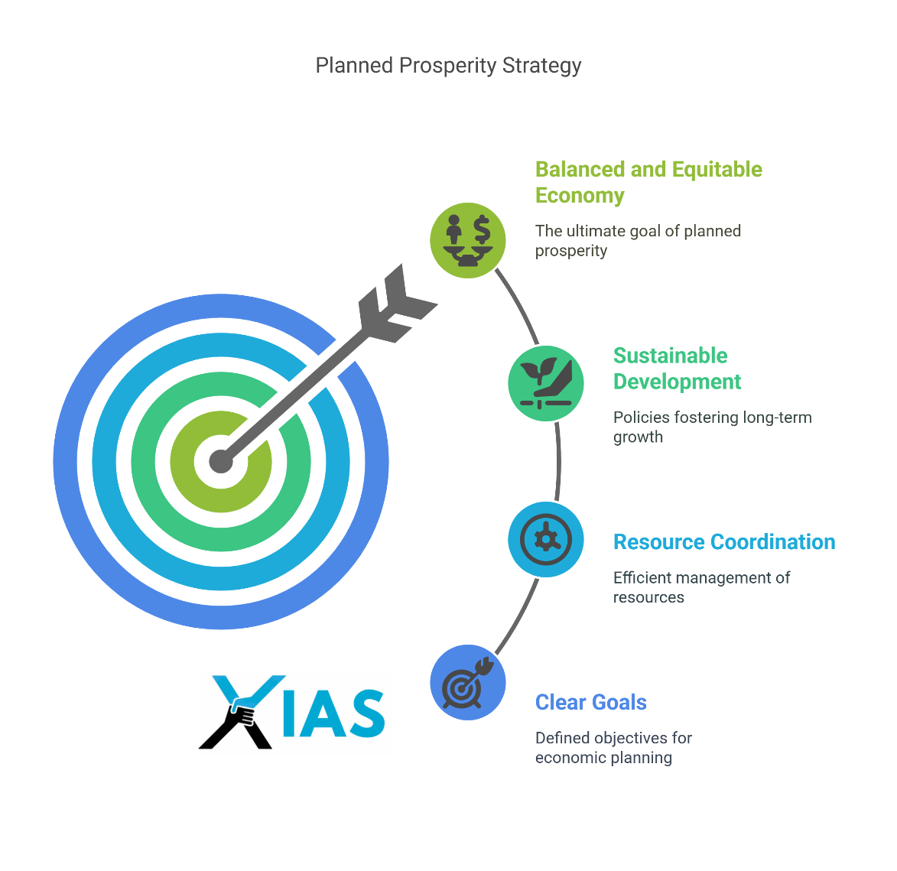
GS3-INDI-0332 · Indian Economy · LPG Reform and Impact
"You can’t manage what you can’t measure." – Peter Drucker
Introduction
India’s budgeting now measures impact, not just inputs: "from outlay to outcome". Performance-based indicators make it more transparent and accountable to the public.
Examples
The PMAY dashboard shows how many units are complete, unit by unit.
Rural Development and other ministries link funds to measurable outputs.
Fund allocations are shaped by NITI Aayog’s Performance Index.
Conclusion
Outcomes can match allocations if real-time tracking and performance-linked disbursal become standard practice.
Economic Growth
Growth vs Development
GS3-INDI-0343
Quote
"Growth is hollow if it doesn’t bridge the divide." — Inspired by the Human Development Report
Introduction
India’s development story balances GDP growth with better HDI, GDI and Multidimensional Poverty Index scores. This reflects the push towards “Sabka Saath, Sabka Vikas, Sabka Vishwas”.
Examples
NITI Aayog released an updated MPI report that identifies high-deprivation districts.
The government used the Aspirational Districts Programme to get equitable outcomes.
UNDP data showed progress in life expectancy and years of schooling.
Conclusion
India must give priority to inclusive indicators along with GDP, so that growth turns into real, measurable and people-centric development.
Fiscal Policy
Revenue & Capital Expenditure Trends
GS3-INDI-0335
Quote
"Capital expenditure is the soul of sustainable growth."
Introduction
India’s fiscal strategy is moving from revenue-heavy budgets to capex-led growth engines. This fits the aim of “spending less and building more.” It improves productivity, infrastructure and private investment.
Examples
More than ₹11 lakh crore was allocated to capex for infra.
High revenue outgo continued because of fertiliser and food subsidies.
PM Gati Shakti received more capital infusion for logistics.
Conclusion
Keep the focus on capex and add efficient monitoring, so that returns last and the fiscal position stays resilient.
Government Schemes vs Capital Creation
GS3-INDI-0336
Quote
"Schemes must not just spend, they must build."
Introduction
Welfare schemes should create productive assets, in line with the government’s “Minimum Government, Maximum Governance” philosophy. Welfare linked to capital delivers inclusion and economic growth together.
Examples
Rural infrastructure built under the Jal Jeevan Mission will last.
PM Awas Yojana-Urban gave a push to housing-linked capex.
MGNREGS outlay was rationalised and redirected to durable assets.
Conclusion
When welfare is linked with long-term capital assets, it gives economic multipliers without fiscal stress.
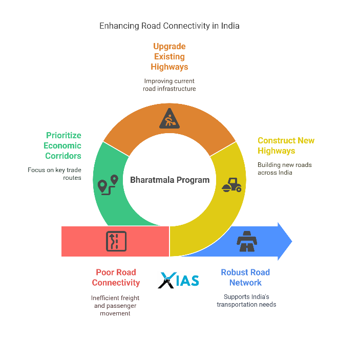
GS3-INDI-0336 · Indian Economy · Fiscal Policy
DR. CSE — REPLICA · INTRO TO CONCLUSION104 / 217
Dr. CSE — Replica
Central & State Budget Interface
GS3-INDI-0337
Quote
"Cooperative federalism must reflect in cooperative fiscalism."
Introduction
India’s public finance works well only when the Centre and states work together on finance (fiscal coordination). Here, “collaborative spending powers” help development move in step. The Union budget now gives states more incentives to create capital at the state level.
Examples
States are being offered 50-year interest-free loans for infra projects.
Compensation adjustments under GST helped the fiscal balance of states.
PM Gati Shakti brings planning together across levels of government.
Conclusion
Development across states can be equitable and outcome-driven only with a strong intergovernmental fiscal framework.
Inclusive Growth
Inclusive Growth
GS3-INDI-0338
Quote
"JAM is the highway to equity in a digital India." — Economic Survey
Introduction
The JAM Trinity, Direct Benefit Transfers and the Jan Dhan–Aadhaar–Mobile link drive inclusive growth. Together they make entitlements portable, paperless and person-centric, in line with SDG 1 & 10.
Examples
Through DBT, ₹30 lakh crore+ was sent straight to beneficiaries’ accounts across 400+ schemes.
PM Jan Dhan Yojana passed the milestone of 50 crore bank accounts.
UPI transactions went above ₹18 lakh crore a month, which promotes digital access.
Conclusion
India’s digital inclusion model shows that technology + trust = transformation, a mantra for closing developmental divides.
Inclusive Growth X Sustainable Development
Role of SHGs, Cooperatives & Skill Development
GS3-INDI-0339
Quote
"Self-help is the best help—especially when it builds an economy from below." — Inspired by grassroots movements
Introduction
Schemes like MUDRA, PM-SVANidhi and DAY-NRLM give strength to SHGs, nano-enterprises and informal vendors. They become catalysts of “Vocal for Local” and “Empower the last mile first”.
Examples
MUDRA loans passed ₹23 lakh crore, and most went to women and SC/STs.
PM-SVANidhi brought over 70 lakh street vendors on board, with microcredit and e-KYC.
Under PMKVY 4.0, the Skill India Mission trained over 1.5 crore youth.
Conclusion
India’s answer to inclusive capitalism is people-led micro-entrepreneurship, which brings dignity, credit and capacity to the grassroots.
Investment
Resource Mobilization
GS3-INDI-0340
Quote
"Revenue is the lifeblood of a government, transparency its heartbeat." — Inspired by the Kelkar Committee
Introduction
Make in India, Invest India and Digital India act as facilitators. Through them India wants to improve resource mobilisation, using efficient taxation, deeper capital markets and stable foreign investments.
Examples
The faceless tax regime and the Vivad Se Vishwas scheme improved tax compliance.
To improve market liquidity, SEBI introduced T+0 trade settlement.
FDI norms were relaxed in the space, semiconductor and green energy sectors.
Conclusion
A dynamic resource mobilisation strategy builds fiscal strength, wins global trust and drives inclusive and self-reliant growth.
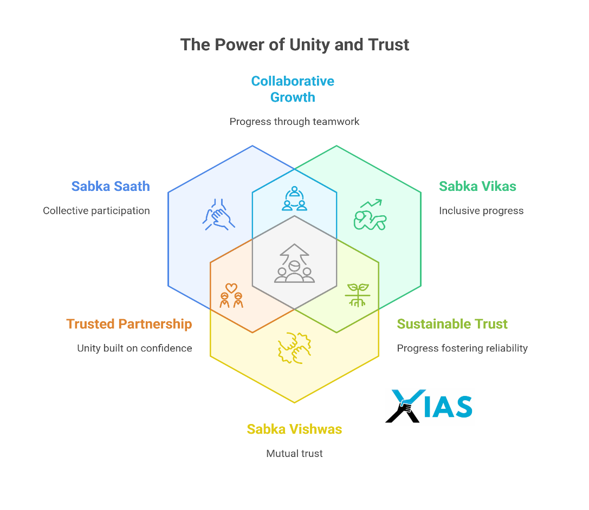
GS3-INDI-0340 · Indian Economy · Investment
Manufacturing Sector
Make in India & Start-Up India
GS3-INDI-0344
Quote
"India must become the factory of the world without losing its soul."
Introduction
Make in India, Start-Up India and industrial corridors share one aim: more domestic manufacturing, jobs and innovation. The destination is a “production-driven, globally integrated India.”
Examples
More than 1.4 lakh startups have been recognised, and they create employment across 700+ districts.
Mobile manufacturing exports went past ₹1.2 lakh crore.
DMIC and other corridors have started operating, with smart infrastructure nodes.
Conclusion
Design-led, tech-integrated industrialisation will make India’s production base ready for the future.
DR. CSE — REPLICA · INTRO TO CONCLUSION105 / 217
Dr. CSE — Replica
MSME Sector Reforms
GS3-INDI-0345
Quote
"Small businesses build big economies."
Introduction
Over 11 crore people work in the MSME sector, which is central to inclusive industrial growth. The Emergency Credit Line, Udyam portal and Credit Guarantee Schemes aim to build “formal strength from informal roots.”
Examples
Under ECLGS, ₹3.6 lakh crore was disbursed to 1.2 crore MSMEs.
The Udyam Assist Platform brought over 2 crore micro enterprises on board.
SIDBI started digitised loan pipelines for small-scale units.
Conclusion
MSME-led growth can be unlocked by targeted credit, digital skilling and cluster competitiveness.
Niti Aayog X Planning Commission
NITI Aayog Strategy & Viksit Bharat
GS3-INDI-0342
Quote
"What India does today will shape the world of tomorrow." — Viksit Bharat Vision
Introduction
Viksit Bharat@2047 imagines a prosperous, inclusive and climate-smart India. NITI Aayog’s thematic roadmaps guide it, and it links national ambitions with SDG 2030 and India@100 goals.
Examples
Viksit Bharat targets for MSMEs, health and innovation were released sector by sector.
Policy dialogues with states on export hubs and skilling were started by NITI Aayog.
A roadmap for Net Zero by 2070 came out in a paper on energy transitions.
Conclusion
By 2047, India can be a global model of development if strategic visioning becomes cohesive policy, cooperative execution and catalytic change.
"Speed and sustainability are the twin engines of modern mobility."
Introduction
Vande Bharat, UDAN and the Amrit Bharat Station Scheme are rebuilding India’s rail and air networks. They are part of the Amrit Kaal infrastructure push, which aims at fast, green and inclusive mobility solutions.
Examples
164 Vande Bharat services were operational by December 2025, carrying over 7.5 crore passengers [Source: Indian Railways].
500+ stations are part of the Amrit Bharat redevelopment plan.
UDAN has opened 480+ air routes.
Conclusion
The mobility transition across Bharat and India should be guided by smart design and affordability.
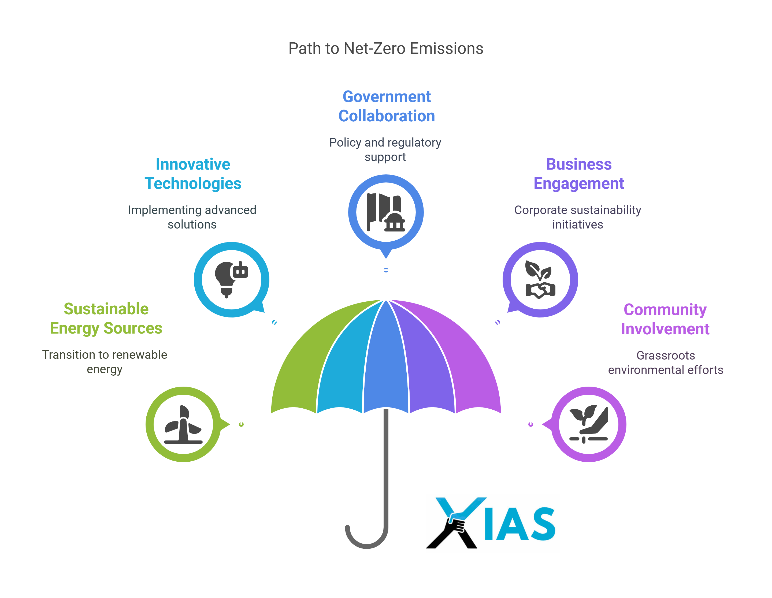
GS3-INDI-0348 · Indian Economy · Airports X Infrastructure
PPP X Infrastructure
Investment Models
GS3-INDI-0347
Quote
"Public-private synergy builds more than infrastructure—it builds trust."
Introduction
India’s infra push is led more and more by hybrid models like PPP, HAM, BOT and EPC, which help reduce financial risk. These models reflect the philosophy of “collaborative growth through shared responsibility.”
Examples
Bharatmala highways were built with a mix of HAM and EPC.
Solar parks used PPP together with Viability Gap Funding.
Vande Bharat trains were procured under an innovative PPP format.
Conclusion
Better risk-sharing frameworks and speedy dispute resolution will bring private investment in infra back to life.
Renewable Energy
Energy Infrastructure
GS3-INDI-0349
Quote
"Clean energy isn’t a luxury, it’s a national imperative."
Introduction
By investing in renewables, battery storage and green hydrogen, India is moving to become a Green Growth Leader. Infrastructure is being tied to the Panchamrit climate targets and a Net-Zero 2070 vision.
Examples
India’s solar capacity is now above 80 GW, among the world’s top 5.
With ₹20,000+ crore of support, the Green Hydrogen Mission targets 5 MMT production.
Gujarat and Rajasthan now have Hybrid RE parks.
Conclusion
Clean energy security needs stable policy, storage infrastructure and green finance.
DR. CSE — REPLICA · INTRO TO CONCLUSION107 / 217
Dr. CSE — Replica
ENERGY — General Overview & Power Sector Transition
GS3-INDI-0350
Introduction
Worldwide, India ranks as the third-largest energy consumer, with electricity demand expanding at \~11% annually (the highest growth rate among major economies). Sustaining rapid industrialisation requires resolving the Energy Trilemma—balancing Energy Equity, Energy Security, and Environmental Sustainability.
Data
Commercial energy consumption has expanded 25-fold since the mid-19th century.
Total installed utility power capacity exceeds 533 GW, with non-fossil sources comprising over 52% (271.9 GW).
CEA projections indicate that India's total energy demand will double by 2040.
Conclusion
Resolving the Energy Trilemma requires simultaneously decarbonising power generation while expanding baseload access. Accelerating the transition to round-the-clock (RTC) renewables, modernizing regional transmission grids via the Green Energy Corridor, and decoupling industrial GVA growth from fossil fuel intensity is indispensable to achieve India's Panchamrit goal of 500 GW non-fossil capacity by 2030 and net-zero emissions by 2070.
Natural Gas Transition & Gas-Based Economy
GS3-INDI-0351
Introduction
Natural gas represents the cleanest burning fossil hydrocarbon, serving as an indispensable transition fuel as India targets raising its share in the primary energy mix from the current \~6% to 15% by 2030.
Data
Natural gas constitutes \~3.9% of utility power capacity, with domestic demand heavily reliant on LNG imports (45–50%).
GAIL commands a \~70% market share in gas transmission infrastructure.
Key pipeline conduits: The transnational TAPI pipeline and the domestic Pradhan Mantri Urja Ganga network.
Conclusion
Positioning natural gas as an indispensable transition fuel supports India's climate goal of reducing carbon intensity by 45% by 2030. Implementing the Kirit Parikh Committee recommendations—granting complete marketing and pricing freedom, bringing gas under the unified GST regime, and expanding national pipeline infrastructure under Urja Ganga—is vital to unlocking a self-reliant gas-based economy.
Geothermal Energy Potential & Applications
GS3-INDI-0352
Introduction
Geothermal energy is clean, renewable thermal energy generated and stored in the Earth's crust. India's pioneering commercial geothermal development project is situated in the Puga Valley of Ladakh, managed by ONGC.
Data
The Geological Survey of India (GSI) has identified approximately 350 geothermal springs across 7 geothermal provinces with an estimated generation potential of 10 GW.
Key prospective geothermal fields: Puga and Chumathang (Ladakh), Manikaran (Himachal Pradesh), Tattapani (Chhattisgarh), and Surajkund (Jharkhand).
Conclusion
Geothermal energy offers an inexhaustible, weather-independent source of clean baseload power with a minimal surface footprint. Commercializing prospective geothermal provinces—such as the Puga field in Ladakh and Tattapani in Chhattisgarh—provides decentralized energy security to remote, high-altitude habitations while advancing India's renewable energy diversification goals.
DR. CSE — REPLICA · INTRO TO CONCLUSION108 / 217
Dr. CSE — Replica
The Methanol Economy & Fuel Substitution
GS3-INDI-0353
Introduction
The Methanol Economy denotes an alternative energy paradigm wherein synthetic methanol (CH₃OH) substitutes for conventional liquid petroleum fuels and coal feedstocks across transport, maritime shipping, and cooking sectors.
Data
Methanol has an octane rating superior to gasoline, though possessing slightly lower volumetric energy density.
NITI Aayog Roadmap: Substituting 10% of crude oil imports with methanol by 2030 can slash India's hydrocarbon import bill by over \$100 billion annually.
Conclusion
The Methanol Economy provides a practical, low-emission bridge toward energy sovereignty. By converting India's abundant high-ash domestic coal, agricultural biomass, and stranded natural gas into methanol, commercial blending (M15 for petrol and MD95 for heavy diesel) will dramatically reduce the national oil import bill, curb urban air pollution, and stimulate indigenous chemical manufacturing in line with Atmanirbhar Bharat.
Bio-Ethanol Blending (E20) & PM-JIVAN
GS3-INDI-0354
Introduction
Bio-ethanol is a renewable biofuel produced through the fermentation of biomass feedstocks. India achieved its ambitious 20% ethanol blending target (E20) ahead of schedule, with national blending averaging \~20% in the 2025–26 Ethanol Supply Year (ESY).
Data
Domestic ethanol distillation capacity expanded to nearly 20 billion litres, supported by guaranteed procurement prices and interest subvention schemes.
Policy framework: National Biofuel Policy (amended 2022) and the PM-JIVAN Yojana (Pradhan Mantri Jaiv Indhan-Vatavaran Anukool fasal awashesh Nivaran) supporting second-generation (2G) bio-refineries.
Conclusion
Building on the accelerated success of the Ethanol Blended Petrol (E20) Programme, the next frontier lies in scaling second-generation (2G) cellulosic ethanol under the PM-JIVAN Yojana. Sourcing ethanol from agricultural crop stubble and surplus biomass mitigates seasonal air pollution, safeguards food security against grain diversion, and generates vital supplemental rural income for farmers.
The PM-KUSUM (Pradhan Mantri Kisan Urja Suraksha evam Utthaan Mahabhiyan) scheme drives the comprehensive de-dieselisation and solarisation of Indian agriculture, providing energy and water security to farmers while creating decentralized clean energy capacity.
Data
Cumulative targeted solar capacity addition: 30.8 GW across three structural pillars:
Component A: 10,000 MW decentralized ground-mounted grid-connected solar power plants on barren farm lands.
Component B: Installation of 20 lakh standalone off-grid solar agricultural pumps.
Component C: Solarisation of 15 lakh grid-connected agricultural pumps, including agricultural feeder solarisation.
Conclusion
PM-KUSUM anchors the twin objectives of agricultural decarbonisation and rural prosperity—transforming the farmer from a passive energy consumer into an energy producer ("Urjadata"). Accelerating solar feeder segregation (Component C) and off-grid standalone pumps (Component B) eliminates agricultural diesel reliance, provides daytime irrigation power, and relieves the severe financial distress of state power distribution companies (DISCOMs).
DR. CSE — REPLICA · INTRO TO CONCLUSION109 / 217
Dr. CSE — Replica
National Green Hydrogen Mission: SIGHT & Net Zero
GS3-INDI-0356
Introduction
Definition: Producing H₂ from water using only green and renewable sources.
Types:
1. Black/Brown (coal).
2. Grey (natural gas).
3. Blue (carbon capture).
4. Green (renewable).
The Centre cleared the National Green Hydrogen Mission of ₹19,000 crore.
Goals by 2030:
1. 5 MMT of green hydrogen.
2. SIGHT (Strategic Interventions for Green Hydrogen Transition Programme), which gives financial incentives for electrolysers.
Advantages:
1. Reduces fossil fuel imports by ₹1 lakh crore.
2. Decarbonises industry, mobility and energy.
3. Makes India a global hub for derivatives.
Issues:
1. India produces less than 1% of global output.
2. The technology is immature.
3. 3× more expensive than Black H₂ (CEEW).
Data
The mission budget is ₹19,000 crore.
The target is 5 MMT by 2030.
India currently has <1% of global production.
Conclusion
It can be a game changer for the energy landscape, as it mitigates climate change and fuels economic progress.
Transport
Transport: Bharatmala, Sagarmala, Gati Shakti
GS3-INDI-0357
Quote
"Infrastructure is the foundation stone of a nation’s economic destiny."
Introduction
Bharatmala, Sagarmala and the PM Gati Shakti National Master Plan are helping India build unified transport systems and cut logistics bottlenecks. They mark a clear move towards a “One Nation, One Infrastructure” model for integrated growth.
Examples
Bharatmala Phase-I has approved 35+ logistics parks.
The Gati Shakti portal tracks 2,000+ infra projects digitally.
In coastal regions, Sagarmala helped create port-linked clusters.
Conclusion
Smooth connectivity and regional equity will come from faster multimodal infrastructure with digital governance.
Urban Infra: Smart Cities & Housing
GS3-INDI-0358
Quote
"Well-planned cities are not built overnight—they are coded into policy and design."
Introduction
India wants climate-resilient, tech-enabled and inclusive cities, and Smart Cities Mission, AMRUT 2.0 and PMAY-Urban are its tools. This matches the aspiration of India@100 as a sustainable urban civilisation.
Examples
Smart Cities has carried out 7,000+ smart infrastructure projects.
Through AMRUT, 500+ cities have reached water tap coverage.
PMAY-U has sanctioned over 1.3 crore houses.
Conclusion
The next generation of Indian cities will be shaped by a citizen-first approach and climate-smart design.
DR. CSE — REPLICA · INTRO TO CONCLUSION110 / 217
Dr. CSE — Replica
Logistics & Digital Infra
GS3-INDI-0359
Quote
"Connectivity is productivity in the Bharat of today."
Introduction
India is building last-mile assets that cut costs and reduce the rural-urban divide. These include PMGSY rural roads, Digital India fibre backbones and the National Logistics Policy. They drive the vision of a “Viksit Bharat powered by seamless access.”
Examples
Over 7.5 lakh km of all-weather rural roads were built under PMGSY.
BharatNet has connected 2.1 lakh Gram Panchayats.
The recent DPIIT-NCAER report (September 2025) says India’s logistics cost has fallen to 7.97% of GDP. This officially puts India in the single-digit category, like advanced economies.
Conclusion
Inclusive economic transformation depends on aligning physical and digital infrastructure.
DR. CSE — REPLICA · INTRO TO CONCLUSION111 / 217
Dr. CSE — Replica
PART GS-3 · CHAPTER 09
Internal Security
Security answers need current linkages and precise terms. These cards map threats, agencies, and laws in a way you can reproduce in the hall.
"Good fences make good neighbours." — Robert Frost
Introduction
India's land border stretches >15,000 km across 7 countries.
Every border brings its own unique challenges for internal security.
Data
>15,000 km of land border, shared with 7 countries.
Conclusion
Border security needs an all-round view: vibrant P2P exchanges, upgraded surveillance and robust bilateral cooperation.
China Border Management: Line of Actual Control (LAC)
GS3-INTE-0512
Introduction
India's border with China runs 3,488 km and is disputed at multiple locations.
Example: the recent Ladakh standoff.
The Vibrant Villages Programme — an initiative that develops border villages.
Issues: Cartographic and Nomenclatural aggression.
Data
The India-China border measures 3,488 km.
Conclusion
Given the unresolved LAC and repeated transgressions, India must combine infrastructure build-up (Vibrant Villages Programme), military modernisation, and sustained diplomatic engagement via mechanisms like the WMCC to manage this complex, disputed frontier.
Nepal & Bhutan Frontiers: Open Borders & Security
GS3-INTE-0513
Introduction
Nepal has an open border with India — citizens of either country travel without restrictions, a legacy of the 1950 Treaty of Peace and Friendship.
The Bhutan border follows a similar open-border arrangement rooted in close bilateral ties.
Examples
Open borders have historically been exploited for fake Indian currency notes (FICN) routed via Nepal, and by criminal/militant elements seeking safe passage.
The Doklam standoff (2017) highlighted trilateral sensitivities near the Bhutan-China-India tri-junction.
Conclusion
While the open border reflects deep people-to-people ties, it also poses challenges of infiltration and smuggling — necessitating calibrated intelligence-led surveillance without undermining the goodwill central to India's "Neighbourhood First" policy.
Myanmar Frontier: Fencing & Security Architecture
GS3-INTE-0514
Introduction
The border with Myanmar cuts across 4 states in Northeast India.
The Free Movement Regime (FMR) previously permitted border residents to travel up to 16 km without visas; the Government of India officially scrapped the FMR in February 2024 and approved comprehensive smart fencing of the entire 1,643 km border to enhance national security while transitioning to strictly regulated, biometric-permit movement.
Data
The FMR (16 km) was scrapped in Feb 2024; the 1,643 km border is being fenced.
Conclusion
The FMR has, however, also been exploited by insurgent groups and traffickers, and after the 2021 Myanmar coup and ethnic unrest in Manipur the Government announced (Feb 2024) that the FMR would be ended and the border fenced. India must balance cross-border ethnic affinities with tighter fencing and surveillance along this frontier.
Pakistan, India's northwestern neighbour: the Radcliffe Award of 1947 demarcated their land boundary (the maritime boundary at Sir Creek remains unresolved).
Border management was reviewed by the Madhukar Gupta Committee.
Cross-border terrorism, infiltration, and smuggling of arms and narcotics remain persistent threats along this frontier. Full operationalisation of CIBMS and sustained vigilance by the BSF are vital to secure India's western flank.
Along India's east and northeast region lies a long porous border with Bangladesh — land, riverine and maritime — posing distinct management challenges compared to India's western frontier.
Data
Key challenges: unfenced riverine and char (river-island) stretches, illegal migration, cattle smuggling, and counterfeit currency rackets.
Conclusion
Measures like floodlighting, smart fencing, and the India-Bangladesh Coordinated Border Management Plan (CBMP) aim to curb infiltration, though riverine and char areas remain especially vulnerable and demand technology-driven surveillance.
Universal Strategy Blueprint: Border Security & Frontier Challenges PRACTICE SKELETON
GS3-INTE-0517
Quote
"Good fences make good neighbours." — Robert Frost
Fill-in-the-Blank Intro
"India's border with ___ poses unique challenges to internal security on account of its [length / terrain / disputed status / porousness / open-border arrangement], making it a critical frontier requiring tailored management."
Tactical Strategy Guide: Use this plug-and-play blueprint for lesser-discussed or sudden current-affairs border management questions. Substitute the target country or border sector into the blank (___) to generate a comprehensive national security synthesis.
Fill-in-the-Blank Conclusion
"Managing the ___ border effectively requires a mix of technological surveillance (CIBMS/drones), bilateral cooperation mechanisms, and community-level vigilance — reinforcing India's vision of SUSI (Sovereignty, Unity and Strategic Autonomy) alongside a cooperative neighbourhood."
Maritime Security challenges
Maritime Security: Indian Ocean Commons & SAGAR
GS3-INTE-0518
Introduction
India has a 7,516 km coastline and >1,200 islands — highly exposed to maritime threats.
India's vision: SAGAR (Security and Growth for All in the Region), upgraded to MAHASAGAR (2025), alongside the Blue Economy push.
The threat from China in the IOR keeps rising.
Data
Coastline: 7,516 km; islands: >1,200.
Conclusion
India needs to build capacity at home along with an International push. Russia, for one, has proposed a dedicated maritime security body in the UN Security Council.
DR. CSE — REPLICA · INTRO TO CONCLUSION114 / 217
Dr. CSE — Replica
Maritime Piracy: Sea Lanes & Naval Operations
GS3-INTE-0519
Introduction
Definition: criminal acts — robbery, hijacking or hostage-taking — aimed at ships in international waters.
Examples
Somali piracy in the Gulf of Aden has historically threatened Indian-flagged vessels and energy shipments.
The Indian Navy conducts regular anti-piracy patrols under UN-mandated frameworks.
Conclusion
India's Navy's anti-piracy role in the Gulf of Aden reflects its standing as a net security provider in the Indian Ocean Region. Continued international coalition-building remains key to securing vital sea lanes of communication (SLOCs).
Organized Crime and Terrorism
Counter-Radicalisation: Community & Rehabilitation Models
GS3-INTE-0505
Introduction
Definition: the process through which a person takes up extreme political or religious ideas and aspirations.
Best Practices:
1. Aqaba Process (Jordan).
2. Maharashtra Model — counselling through 3 prongs (family + clergy + professionals), plus reintegration.
Conclusion
Since radicalisation feeds future terrorism and extremism, India must scale community-based counselling (the Maharashtra Model) alongside multi-stakeholder frameworks like the Aqaba Process. A preventive, rehabilitative strategy — rather than a purely punitive one — upholds India's pluralistic social fabric (Art. 51A(e)).
Over-Ground Workers (OGW) — they move militants, supply ammunition and arrange accommodation.
Hybrid militants — absent from ultras lists, but radicalised enough to strike and then fade back into daily life (sleeper cells).
Keywords:
1. Faceless militancy.
2. Mission Pehal.
3. Lone wolf.
Best Practice: the SL Restorative Justice Model — LTTE militants are rehabilitated vocationally, spiritually, socially and psychologically into the mainstream.
Conclusion
As hybrid militancy and OGW networks blur the line between civilian life and insurgency, intelligence-led policing and community engagement (e.g., Mission Pehal) are vital. The Sri Lankan restorative-justice model shows that rehabilitation can complement security operations to achieve lasting peace.
Organised Crime Syndicates & Statutory Deterrence
GS3-INTE-0507
Introduction
Definition: structured groups running coordinated criminal activities — extortion, smuggling, trafficking, cyber-fraud — for financial gain. The new Bills replacing the IPC, CrPC contain separate provisions on organised crime, a move in the right direction.
Examples
Common forms: extortion rackets, arms/wildlife/narcotics smuggling, human trafficking, cyber-enabled financial fraud.
Example: the D-Company network spans narcotics, real estate and terror financing across borders.
Conclusion
The Bharatiya Nyaya Sanhita's dedicated organised-crime provisions mark a shift from the fragmented IPC-era response. Effective enforcement will, however, depend on inter-state coordination, financial intelligence sharing, and robust witness-protection mechanisms.
DR. CSE — REPLICA · INTRO TO CONCLUSION115 / 217
Dr. CSE — Replica
Counter-Terrorism Architecture & CONTEST Model
GS3-INTE-0508
Introduction
Definition: using violence or threats unlawfully to frighten civilians or governments and so advance political or ideological goals.
India has suffered as a victim for decades, especially of state-sponsored terrorism.
The UK's CONTEST Strategy — 4Ps:
1. Prevent — work against radicalisation.
2. Pursue — detect, disrupt and prosecute (e.g., NATGRID, NIA).
Technology grows more sophisticated by the day. The "War on Terror" therefore demands cooperation beyond borders, suffocating terror finance, and the building of resilient societies and robust institutions.
Organised crime (OC) and terrorism converge through resource sharing and mutual facilitation, and this poses a serious threat to internal security and global stability.
Examples
D-Company's arms-smuggling network has long been linked to terror financing.
Golden Crescent narcotics routes fund groups like LeT and JeM.
Left-Wing Extremist cadres resort to extortion ("taxation") to finance arms procurement.
Conclusion
The crime-terror nexus is one war on many fronts: intelligence fusion, financial chokepoints (PMLA, FATF standards), global cooperation (UNTOC) and development in the war economy's catchments — all stakeholders, one platform.
Terror Financing: Choke Points & FATF Standards
GS3-INTE-0510
Introduction
Definition: money or financial support that reaches individual terrorists or groups.
New Delhi recently hosted the "No Money for Terror" conference.
Steps:
1. UAPA Amendments.
2. Crypto KYC.
3. The NIA has a dedicated cell.
4. Soft Demonetisation.
5. FCRA was amended (NGOs).
6. FATF + PMLA.
Conclusion
Suffocating finance matters, yet by itself it cannot defeat the hydra-headed menace of terrorism.
"A secure cyberspace is non-negotiable in a digital republic."
Introduction
The CERT-In directives and the Digital Personal Data Protection Act (DPDPA) show India's resolve to guard its digital sovereignty. Together they anchor the vision of a "cyber-resilient Bharat" amid rising global threats.
Examples
Under CERT-In norms, breaches must be reported within 6 hours.
The DPDPA set up the Data Fiduciary & Principal framework.
Cyber Surakshit Bharat trained 300+ officers in data governance.
Conclusion
India must build capacity and ensure compliance so that data protection becomes both enforceable and equitable.
"I dream of a digital India where cyber security becomes an integral part of national security."
Introduction
Definition: keeping digital systems, networks and data safe from cyber threats, so their confidentiality and integrity hold.
Data
India consistently ranks among the most targeted countries for cyber threats (Symantec Internet Security Threat Report).
NCRB (Crime in India 2024): cybercrime cases rose by about 17%, with financial fraud the dominant motive.
Conclusion
Strengthening CERT-In's incident-response capacity and mainstreaming cyber hygiene through programmes like Cyber Surakshit Bharat are essential, given that financial fraud dominates India's rapidly rising cybercrime caseload.
Digital Media and Security Threats
Disinformation & Fake News: Media Literacy & Regulation
GS3-INTE-0522
Introduction
Definition: information made up on purpose to deceive people into believing something false.
Best Practice: the KL Model of school education for media literacy.
Data
IT Rules 2023 created a government Fact-Check Unit (FCU) for misinformation on official business — but the provision was challenged in court (the Bombay High Court struck it down in 2024).
WhatsApp-forwarded rumours have repeatedly triggered mob violence incidents across India.
Conclusion
Platforms must be made accountable under the IT Rules while media-literacy programmes (on the Kerala/KL Model) build long-term societal resilience against disinformation that threatens social harmony and internal security.
DR. CSE — REPLICA · INTRO TO CONCLUSION117 / 217
Dr. CSE — Replica
Social Media & Hybrid Psychological Warfare
GS3-INTE-0523
Quote
"The new frontiers of war is the civil society which can be manipulated to hurt a nation's interests." — Ajit Doval
Introduction
Media and social networking platforms are a double-edged sword for internal security — they enable rapid information flow and civic mobilisation, but are equally exploited for propaganda, radicalisation and psychological warfare against the state.
Examples
Social media has been used for extremist recruitment propaganda targeting vulnerable youth.
Fake narratives and deepfakes have been used to incite communal tension and violence.
Positive role: crowd-sourced disaster response coordination and grievance redressal via platforms like CPGRAMS.
Conclusion
A calibrated approach — combining platform accountability under the IT Rules, counter-narrative campaigns, and digital literacy — is needed to harness media's positive potential while neutralising its use as a tool of hybrid warfare.
Drug trafficking
Narcotics Trafficking: Golden Crescent & Golden Triangle
GS3-INTE-0525
Introduction
Flanked by the Golden Triangle and Golden Crescent and ringed by porous borders, India is highly vulnerable to drug trafficking.
Steps:
1. Nasha Mukt Bharat.
2. NIDAAN portal.
3. NAPDDR (National Action Plan for Drug Demand Reduction).
4. NDPS Act and NCB.
Operation Samudragupt (NCB + Navy, launched 2022) — \~2,500 kg of methamphetamine seized off Kerala (May 2023), valued at ₹15,000 crore at first (NCB later put it at ₹25,000 crore).
Best Practice:Mansa Village (Punjab) — it turns youth energy toward community work — "Mera Pind Mera Maan".
3-pronged reduction: Demand + Supply + Harm.
Data
Operation Samudragupt seizures: \~2,500 kg in one haul (estimates ₹15,000–25,000 crore).
Conclusion
Under Article 47, the state is duty bound to prohibit drug consumption, to protect the social fabric, public health and internal security.
Definition: an extra-judicial killing — a mob takes a person's life outside the courts (e.g., Udaipur, the Una flogging).
The SC recently sought updates on the action taken by the government.
Steps:
1. IT Rules 2021, 2023.
2. Amendment to the IPC, CrPC.
3. Rajasthan (RJ) Protection from Lynching Bill 2019.
4. UAPA amendments.
The Tehseen Poonawalla case — the state must protect citizens and the country's "pluralistic social fabric".
Conclusion
The Tehseen Poonawalla verdict casts a positive obligation on states to prevent vigilantism and uphold India's pluralistic ethos (Art. 21, 51A(e)). Effective implementation of state-specific anti-lynching laws and swift prosecution remain the real tests of this commitment.
"Money laundering is a heinous crime which not only affects the socio-economic fabric of a nation but promotes other heinous crimes." — Vijay Mohanlal Choudhary vs UOI
Introduction
Definition: the process that lets illegally earned money pose as income from a legitimate source.
Stages:Placement → Layering → Integration.
Steps:
1. PMLA Rules 2023 (stringent KYC).
2. Benami Transactions Prohibition Act.
3. PMLA Act 2003 (cognisable and non-bailable + confiscation).
4. Black Money Act.
5. Shell companies deregistered.
Data
IMF / UNODC estimate:2–5% of world GDP is laundered every year.
Conclusion
Strengthening inter-agency coordination between the ED, FIU-IND and international bodies like FATF, alongside faster asset confiscation under PMLA, is essential to choke the illicit financial flows that fund organised crime and terrorism alike.
DR. CSE — REPLICA · INTRO TO CONCLUSION118 / 217
Dr. CSE — Replica
Financial Action Task Force (FATF): Compliance Standards
GS3-INTE-0527
Introduction
FATF is the world's watchdog against dirty money. It secures international cooperation and frames the international standards used to fight ML & TF (Money Laundering & Terrorist Financing).
Examples
India was placed in the "regular follow-up" category — FATF's highest compliance rating — in its 2024 Mutual Evaluation Report.
Pakistan has repeatedly featured on FATF's "grey list" over lapses in curbing terror financing.
Conclusion
India's continued engagement with FATF — including diplomacy around the "grey-list" status of state sponsors of terror financing — strengthens the global architecture against money laundering, reinforcing commitments made at the "No Money for Terror" initiative.
Left-Wing Extremism (LWE): Security & Development Nexus
GS3-INTE-0529
Quote
"Poverty is the mother of crime." — Marcus Aurelius
Introduction
Definition: extremism denotes pushing radical ideologies or actions that defy established norms and institutions, using unconstitutional and violent methods. As UN Secretary-General Antonio Guterres observes, "Poverty, inequalities and social exclusion give terrorism fuel" — a linkage starkly visible in India's Left-Wing Extremism (LWE)-affected regions.
Examples
LWE-affected districts have historically overlapped with low human development indicators — poor infrastructure, land alienation, and tribal exclusion (e.g., the Bastar region).
The government's National Policy and Action Plan (2015) on LWE explicitly links security operations with a "development" pillar to address root causes.
Conclusion
Tackling extremism requires a twin-track approach — firm security responses alongside accelerated development (health, education, livelihoods) in affected regions. As Guterres argues, investing in fighting poverty is as vital as investing in fighting conflict — a principle central to India's SAMADHAN strategy against LWE.
N-E Insurgency
Northeast Insurgency: Peace Accords & Development
GS3-INTE-0531
Introduction
Definition: armed conflicts and movements still running in India's Northeast, seeking political and social change.
Data
Key peace milestones: the Bodo Peace Accord (2020) and ongoing NSCN-IM Naga peace talks.
AFSPA has been progressively withdrawn from several Northeast districts since 2022 as the security situation has improved.
Conclusion
Peace in the NE is key to safeguarding India's SUSI.
It also serves the PM's vision of "Act East, Act first through North East".
"A more secure world begins by investing at least as much in fighting poverty as we do in fighting wars." — Antonio Guterres
Threat from External state and Non-state actors
Hybrid Warfare: Asymmetric Threat & Grey-Zone Ops
GS3-INTE-0532
Introduction
Definition: a state strikes through unconventional methods across many domains, yet stops short of open hostilities.
Examples:
1. Chinese apps harvesting sensitive information.
2. Lone wolf attacks.
3. Cyber warfare.
Conclusion
Countering hybrid warfare demands a whole-of-government response — cyber resilience, media literacy, and economic security screening (e.g., scrutiny of adversarial investments/apps) — since such operations are deliberately designed to stay below the threshold of conventional conflict and existing international law.
DR. CSE — REPLICA · INTRO TO CONCLUSION120 / 217
Dr. CSE — Replica
External State & Non-State Threats to Sovereignty
GS3-INTE-0533
Introduction
State actors = foreign governments that indulge in terrorism against another state (e.g., ISI, the Syrian war).
Non-state actors = extended arms of the state, providing plausible deniability (e.g., JeM, LeT in relation to ISI).
Through conventional and unconventional warfare, Pakistan- and China-linked state and non-state actors have been posing multifaceted security challenges for India — from cross-border terrorism to cyber intrusions and economic coercion.
Conclusion
A layered response — diplomatic isolation of state sponsors, robust counter-terror architecture (NIA, UAPA), and technological vigilance against cyber and economic infiltration — is essential to safeguard India's Sovereignty, Unity and Strategic Autonomy (SUSI).
Universal Strategy Blueprint: External State & Non-State Threats PRACTICE SKELETON
GS3-INTE-0534
Fill-in-the-Blank Intro
"Through conventional and unconventional warfare, ___ has been posing multifaceted security challenges for India."
Tactical Strategy Guide: Use this plug-and-play blueprint when addressing emergent or asymmetrical national security adversaries. Substitute the specific hostile actor into the blank (___) to execute an authoritative, layered counter-threat analysis.
Fill-in-the-Blank Conclusion
"Countering the threat posed by ___ requires a layered response — diplomatic isolation of state sponsors, a robust counter-terror architecture (NIA, UAPA), and technological vigilance against infiltration — to safeguard India's Sovereignty, Unity and Strategic Autonomy (SUSI)."
India is highly vulnerable to security threats: it sits at the epicenter of terrorism and instability, serves as a drug transit nation, has a long vulnerable coastline and porous and contested borders.
Solutions mnemonic — SECURITY:
S — Security forces capacity building, fencing.
E — Economy/Finance.
C — Cooperation (bilateral/international).
U — Upgraded surveillance.
R — Regional development / Good governance.
I — Intelligence (locals), Infra, PPP.
T — Trade/tech.
Y — Youth / WHAM.
Conclusion
Chanakya — need 3 S for all-round national power: Shastra (military prowess), Shaastra (academia/civil-military fusion), Sanskriti (ideals and principles).
Multi-domain operations / Whole of Government and society approach.
The fight against terrorism, extremism and organised crime requires all nations and stakeholders to come on the same platform — a coordinated, whole-of-government approach that should go a long way in tackling India's multifaceted internal security challenges.
DR. CSE — REPLICA · INTRO TO CONCLUSION122 / 217
Dr. CSE — Replica
National Defence Capability & Strategic Deterrence
GS3-INTE-0537
Quote
"Need National Security Strategy, National Defense Strategy, Higher Defense Organization in place." — General Manoj Naravane
Introduction
India spends the 5th largest defence budget in the world.
Examples
Critical deficiencies, force multiplier, combat edge remain key capability concerns.
Defence exports hit a record ₹38,424 crore in FY 2025-26 (up 62.66% from ₹23,622 crore), to 80+ countries.
Conclusion
Bridging critical capability gaps while scaling indigenous defence manufacturing (Atmanirbhar Bharat, Make in India) is vital to close India's trade deficit in arms and build genuine deterrence against a potential two-front threat.
Armed Forces Modernisation & Jointness
GS3-INTE-0538
Introduction
A recent wave of reforms aims to sharpen the coordination, operational readiness and combat edge of the Indian Armed Forces.
Examples
Creation of the CDS post (2020) and the Department of Military Affairs.
The Agnipath Scheme (2022) for short-tenure recruitment.
Ongoing formation of Integrated Theatre Commands.
Conclusion
The goal is a comprehensive National Security Strategy built on Chanakya's 3 S — Shastra, Shaastra, Sanskriti. Implementation will be key.
NIA (National Investigation Agency)
GS3-INTE-0539
Quote
"The implementation is more important than their legislation."
Introduction
The NIA is India's Central Counter-Terrorism Law Enforcement Agency.
The NIA must be strengthened — forensic capacity, inter-state coordination, speedy trials and legal backing — to protect SUSI.
Data
Established under the NIA Act, 2008, in the aftermath of the 26/11 Mumbai attacks.
The NIA (Amendment) Act, 2019 expanded its jurisdiction to cyber-terrorism, human trafficking, and offences against Indians abroad.
Conclusion
As India's apex counter-terror agency, the NIA's expanding mandate (post-2019 amendment) must be matched with greater forensic capacity, inter-state coordination, and speedy trials to ensure deterrence and justice converge effectively.
CDS (Chief of Defence Staff)
GS3-INTE-0540
Introduction
The CDS is the highest-ranking military officer in India; the job is to coordinate and streamline overall military strategy and operations.
>70 countries have a CDS equivalent.
Roles:
1. Principal military advisor.
2. Chairman COSC.
3. Head of the Dept of Military Affairs.
4. Member of the DAC & Defence Planning Committee.
5. Advisor to the NCA (nuclear).
The post rests on the Kargil Review Committee + Shekatkar Committee recommendations.
Data
>70 countries — each has a CDS-equivalent post.
Conclusion
The 21st-century security challenges of a two-front war demand a proactive CDS. It must drive jointness and integration across the forces, plus a cohesive National Security Strategy.
Definition: pooling the capabilities and potential of the 3 services for greater integration and resource optimisation.
The Kargil Review Committee recommended it.
Examples
Proposed commands include a Maritime Theatre Command and an Air Defence Command, modelled on unified command structures used by the US and China.
Conclusion
It will work only when backed by military modernisation and a comprehensive National Security Strategy.
Agnipath Scheme: Military Recruitment Reforms
GS3-INTE-0542
Introduction
Through the Agnipath Scheme, young people are recruited into the armed forces by the government for a short duration of 4 years.
Data
The service period lasts 4 years.
Conclusion
While aimed at creating a younger, tech-savvy fighting force and rationalizing defense pensions, concerns over post-service absorption of Agniveers are addressed through a 10% horizontal reservation in Central Armed Police Forces (CAPFs) and Assam Rifles along with upper-age relaxations and dedicated state police recruitment quotas.
Universal Strategy Blueprint: General Internal Security Operations PRACTICE SKELETON
GS3-INTE-0543
Fill-in-the-Blank Intro
"The fight against ___ is not that of any one government or agency but requires all nations & stakeholders to come on the same platform and make coordinated efforts with equal intensity & seriousness."
Tactical Strategy Guide: Use this plug-and-play blueprint as an all-purpose anchor for overarching internal security challenges. Substitute the specific threat domain into the blank (___) to frame a whole-of-government and whole-of-society response.
Fill-in-the-Blank Conclusion
"If implemented well, the ___ step should go a long way in tackling the issue of ___ — reflecting the whole-of-government and whole-of-society approach central to India's national security doctrine."
DR. CSE — REPLICA · INTRO TO CONCLUSION124 / 217
Dr. CSE — Replica
PART GS-3 · CHAPTER 10
Agriculture
Agriculture questions connect schemes, ecology, and markets. These cards join those threads so one example can serve many answers.
"Farmer incomes rise not just from what they grow, but how and where they sell."
Introduction
Reforms in agricultural marketing are needed to move from price support to price realisation.e-NAM, Model APMC Acts and GrAMs aim to build a “One Nation, One Market” ecosystem.
Examples
More than 1,400 mandis are linked with e-NAM to allow inter-state trade.
Madhya Pradesh and other states adopted APMC Act reforms to allow private markets.
GrAMs have started working, with digital kiosks and warehousing linkages.
Conclusion
India needs a unified agri-market architecture, with strong logistics, digital access and transparent pricing.
Post-Harvest Infrastructure & Cold Chains
GS3-AGRI-0369
Quote
"A farm’s true value is realized only after the harvest."
Introduction
Nearly 15–20% of India’s agri produce is lost after harvest, because of gaps in cold chains and logistics. Fixing this is key to “farm to fork efficiency.”
Examples
Under PMFME, Mega Food Parks received fresh capital for cold storage and processing.
A pilot of ONDC integration was run for direct farm-to-retail logistics.
NABARD backed warehouse projects through agri infra funds.
Conclusion
Post-harvest infrastructure should be local, tech-integrated and linked to farmer producer organisations.
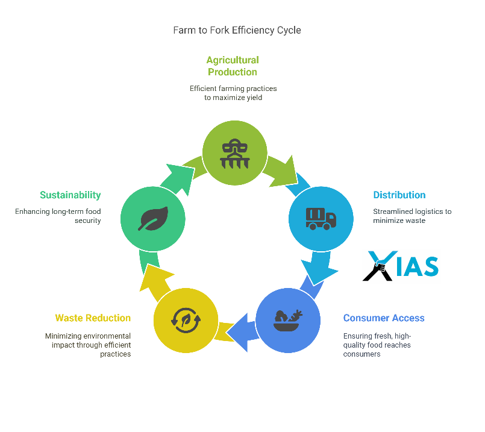
GS3-AGRI-0369 · Agriculture · Agri-Marketing
FPOs & Agri Startups
GS3-AGRI-0370
Quote
"From marginal farmers to market makers—FPOs are rural India’s startups."
Introduction
FPOs and agri startups strengthen smallholders by improving their bargaining power, market access and scale. They show a shift towards “cooperative enterprise for competitive advantage.”
Examples
Under the Central Sector Scheme, over 10,000 FPOs have been registered.
Startups like Agrowave and DeHaat have built end-to-end digital platforms.
FPOs in Bihar and MP have started contract farming for organic exports.
Conclusion
With supportive policy and a digital ecosystem, FPOs and startups can become the backbone of rural industrial revival.
Definition: A sustainable food system delivers food security and nutrition for all, and it is:
Economically sustainable: profitable.
Socially sustainable: gives broad-based benefits to society.
Environmentally sustainable: has a positive or neutral impact.
Efforts:
1. NMSA.
2. Per Drop More Crop.
3. Paramparagat Krishi Vikas Yojana.
Conclusion
Precision agriculture + agro-climatic agriculture + use of technology.
Cropping pattern
Major Crops & Cropping Patterns
GS3-AGRI-0363
Quote
"Agriculture is not just a means of livelihood, it’s the backbone of Bharat."
Introduction
India has diverse agro-climatic zones, and its cropping patterns reflect that. But the patterns no longer fit water and soil sustainability. A move towards “agro-ecological planning for nutritional security” is now crucial.
Examples
Under diversification schemes, paddy area in Punjab has fallen and been replaced by maize and pulses.
After the push of the International Year of Millets, millet cultivation rose sharply in dry zones.
Oilseed promotion spread in arid zones through targeted cluster development.
Conclusion
To keep agriculture resilient and sustainable, cropping choices must match climate, soil and market linkages.
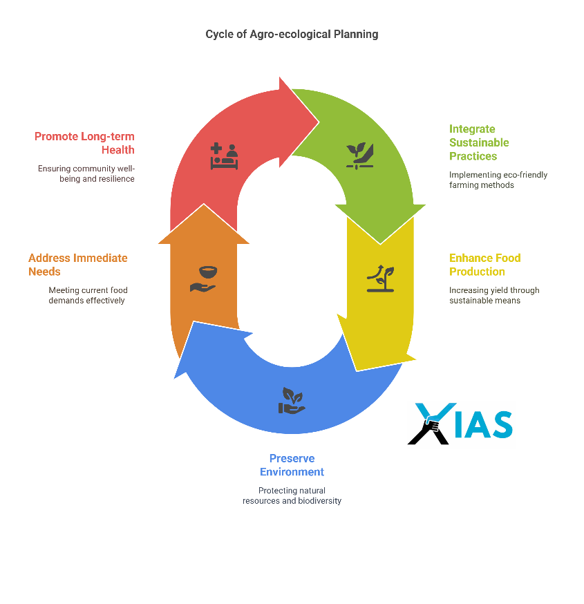
GS3-AGRI-0363 · Agriculture · Cropping pattern
Irrigation system
Irrigation & Watershed Development
GS3-AGRI-0360
Quote
"More crop per drop is not just a slogan, it's a necessity."
Introduction
Irrigation is the key to Indian agriculture, yet only about 50% of gross cropped area is irrigated. Schemes like PMKSY and watershed development try to close this "irrigation inclusion gap."
Examples
Micro-irrigation coverage grew under PMKSY-Per Drop More Crop.
The Watershed Development Component helped with drought-proofing in Bundelkhand.
KUSUM brought in solar-powered pumps for off-grid irrigation.
Conclusion
Priority must go to scaling up micro and climate-resilient irrigation, along with tech-driven water budgeting at the local level.
MSP
MSP & Farm Subsidies
GS3-AGRI-0362
Quote
"MSP is not a price, it’s a promise of protection."
Introduction
Input subsidies and MSP give farmers a safety net. But there are concerns about their fiscal sustainability and crop bias. Reforms must ensure “support without distortion.”
Examples
MSP is declared for 23 crops, but procurement leans heavily towards paddy and wheat.
PM-KISAN gave direct cash support to over 11 crore farmers.
The fertiliser subsidy moved to a nutrient-based model, with a DBT pilot.
Conclusion
Subsidies should become targeted, direct support that is tied to crop diversification and soil health.
Non-Farm Activities (Livestock)
Animal Rearing & Livestock Economics
GS3-AGRI-0366
Quote
"The strength of rural India lies beyond crops—in hooves, fins, and wings."
Introduction
Over 30% of agri-GVA comes from animal husbandry, which is key for income diversification and nutritional security. The new focus is “blue, white, and pink revolutions 2.0.”
Examples
Under the Rashtriya Gokul Mission, dairy cooperatives were modernised digitally.
PM Matsya Sampada Yojana expanded fishery clusters in coastal belts.
Through the NLM, livestock insurance cover was extended in high-risk states.
Conclusion
A vibrant allied agri-economy needs stronger value chains, veterinary access and insurance.
Organic Farming
Organic & Natural Farming: Agro-Ecological Models
GS3-AGRI-0364
Introduction
Organic and natural farming are sustainable, agro-ecological cultivation methods that eliminate synthetic chemical fertilizers and pesticides, prioritizing soil biological health, biodiversity conservation, and closed-loop nutrient cycles.
Data
India ranks 1st globally in total number of organic producers and 8th in certified organic agricultural land area (over 4.7 million hectares under certified management).
Organic food exports surged by over 51% in value, with major demand across the US, EU, and Canada.
Certified organic farming currently covers approximately \~2% of India's 140 million hectares net sown area.
Key government schemes: Paramparagat Krishi Vikas Yojana (PKVY), Mission Organic Value Chain Development for North Eastern Region (MOVCDNER), and Participatory Guarantee System for India (PGS-India).
Conclusion
Mainstreaming organic and natural farming demands moving from niche production to mainstream market competitiveness. Aligning the Paramparagat Krishi Vikas Yojana (PKVY) with the Bhartiya Prakritik Krishi Paddhati (BPKP), streamlining Participatory Guarantee System (PGS-India) certification, and establishing dedicated organic export clusters under One District One Product (ODOP) will restore soil microbiomes and enhance farm income resilience (SDG 12).
PDS
Food Security & PDS
GS3-AGRI-0367
Quote
"No one should go hungry in the land that grows food."
Introduction
India’s food security system, built on NFSA, PDS and buffer norms, ensures inclusive access. But leakages and overstocking challenge the vision of a “hunger-free, waste-free Bharat.”
Examples
One Nation One Ration Card now works fully across states (full portability).
Digitising the PDS cut the number of ghost beneficiaries in high-leakage districts.
Buffer stock norms were reset to deal with seasonal and climate shocks.
Conclusion
Reforming the PDS through technology, Aadhaar and community audit can make food security efficient and demand-based.
Tech in Agri Production and Marketing
Agri-Tech & Digital Farming
GS3-AGRI-0371
Quote
"From bullock carts to drones—Indian farming is flying into the future."
Quote
"Agriculture suffers from technological fatigue — the national goal must be to grow smarter and more sustainably, not just grow more." — Dr. Manmohan Singh
Introduction
New technologies like Kisan drones, AI, precision sensors, and AgriStack are driving the transition to “smart agriculture”. They raise crop productivity, optimize chemical input utilization, and empower farmers with predictive weather and market intelligence.
Examples
Kisan Drones deployed for precision pesticide spraying and crop health mapping across 80,000+ hectares.
AgriStack and the Digital Agriculture Mission deploy digital public goods for farm-level advisories and verifiable farmer IDs.
AI-based IoT soil sensors and micro-weather stations deployed under ICAR cluster demonstrations.
Conclusion
Inclusive, future-ready farming requires democratizing technology—delivering affordable, vernacular, and accessible agri-tech at scale through Farmer Producer Organisations (FPOs) and Primary Agricultural Credit Societies (PACS) to achieve SDG 2.
Water Conservation
Integrated Watershed Management & Water Security
GS3-AGRI-0361
Introduction
Definition: Watershed development means conserving, regenerating and wisely using all the natural resources of a watershed.
Schemes:
1. MGNREGA.
2. Neeranchal.
3. PMKSY.
4. Jal Shakti Abhiyan.
Best Practices:
1. Hiware Bazar.
2. Ralegaon Siddhi.
3. Jal Swavalamban (RJ).
4. Jalgaon model of Pani Panchayat.
Integrated Watershed Management: NGOs include Pani Foundation, Sujala (KN).
Micro-watershed Atlas of India 2019.
Mihir Shah Committee:
1. Demand management: crop diversification.
2. RRR (repair, renovation, restoration of water bodies).
3. Supply side: nature-based solutions.
4. Dam and river management.
Water governance: a multi-stakeholder National Water Commission.
Conclusion
Way forward: Use agroforestry, ZBNF and sub-surface irrigation.
"Turning grain into gain—food processing multiplies farm value."
Introduction
Food processing can double farmer incomes, create rural jobs and reduce wastage. It is the missing link between farms and formal markets, and it strengthens the “value from the village” model through local entrepreneurship.
Examples
Over 10% of manufacturing GVA comes from the food processing sector.
Mega Food Parks have given over 60,000 rural jobs directly.
More demand for processed millets and organic produce has helped rural enterprise grow.
Conclusion
To unlock the sector’s potential, India needs a rural-centric industrial policy and skill-linked infrastructure.
Pradhan Mantri Kisan SAMPADA Yojana
GS3-AGRI-0374
Quote
"From field to factory to fork—SAMPADA builds the bridge."
Introduction
The PM Kisan SAMPADA Yojana aims to build a strong processing ecosystem. It promotes value addition and cluster-based growth and reduces agri-waste. It reflects the spirit of “processing-led prosperity.”
Examples
Over 900 processing units across states have received financial assistance.
Agro Processing Clusters have been approved in Maharashtra and Assam.
Targeted zones have reported waste reduction of up to 10–15%.
Conclusion
The scheme will have more impact if it focuses on ease of credit, backward linkages and export integration.
Supply Chain Management & Logistics
GS3-AGRI-0375
Quote
"A strong supply chain is the artery of agro-industrial India."
Introduction
Efficient logistics, from the farm gate to the processing hub, is essential to reduce spoilage and keep quality. Agri supply chains should follow the approach of “From surplus to seamless.”
Examples
ONDC connected farmer produce with retail logistics networks.
Railways started Kisan Rails to move perishables faster.
Logistics hubs funded by NABARD supported FPO-led aggregation.
Conclusion
Cold-logistics and multimodal supply networks, working together, are critical for rural industrialisation.
Upstream & Downstream Linkages
GS3-AGRI-0376
Quote
"The strength of a food economy lies in its entire chain, not just one link."
Introduction
Through good upstream and downstream linkages, producers are joined to processors, and processors to markets. This creates a “farm-to-factory-to-market” continuum that multiplies rural incomes.
Examples
Downstream tie-ups with global retailers were created by agri export hubs.
Primary collection centres connect farmer groups to Mega Food Parks.
Blockchain helped startups give traceable supply chain assurance.
Conclusion
A competitive rural value chain needs stronger last-mile aggregation and first-mile distribution.
DR. CSE — REPLICA · INTRO TO CONCLUSION127 / 217
Dr. CSE — Replica
Challenges in Food Processing Sector
GS3-AGRI-0377
Quote
"An unprocessed crop is an opportunity lost."
Introduction
Rural processing is held back by gaps in cold chains, complex licensing and weak access to finance. Removing these hurdles is key to a “farm-to-fork without friction” ecosystem.
Examples
The FSSAI made compliance norms easier for micro food enterprises.
Cold chain capacity still meets less than 15% of demand in perishables.
Under CGTMSE, more credit support is now available for agri-processing units.
Conclusion
Simpler regulations, customised rural finance and targeted infra support can unlock growth in the sector.
Modern land leasing frameworks protect landowners and tenant cultivators alike, institutionalizing “ownership without alienation.” On just 2.5% of global land area, India supports 16% of the world's population and 20% of its livestock, making land productivity and secure tenancy essential for agrarian justice.
Data
Average operational landholding size has declined to 1.08 hectares (86%+ small and marginal farmers).
According to NITI Aayog, resolving land title and property disputes in Indian courts takes an average of 20 years.
The T. Haque Committee formulated the landmark Model Agricultural Land Leasing Act (2016) to formalize tenancy.
Examples
States like Andhra Pradesh, Madhya Pradesh, and Uttarakhand adopted leasing policies modeled on the Model Land Leasing Act.
Digitized lease registries provide sharecroppers and tenant cultivators with institutional credit, crop insurance (PMFBY), and disaster compensation.
Standardized lease agreements incorporate climate risk clauses to equitably share crop loss liabilities between owners and tenants.
Conclusion
Unlocking land productivity and attracting private capital into agriculture requires a uniform, flexible, and legally secure leasing architecture. Implementing the T. Haque Committee guidelines eliminates fear of land loss among owners while investing tenant farmers with creditworthiness, legal dignity, and operational scale.
Land Reforms
Zamindari Abolition & Tenancy Reforms
GS3-AGRI-0379
Quote
"The land question is the heart of rural justice."
Introduction
Zamindari abolition, tenancy regulation and ceiling limits were land reforms meant to spread land ownership more widely and “redistribute dignity” in rural India. But implementation gaps remain in several states.
Examples
Land redistributed under ceiling laws is still below 2% of net sown area nationally.
Odisha and UP updated their tenancy laws to make sharecropping legal.
Land rights of forest dwellers have been regularised in tribal belts.
Conclusion
Future reforms must keep a balance between social equity and agricultural viability, with legal clarity and inclusiveness.
Digital Land Records
GS3-AGRI-0380
Quote
"Jo zameen ka malik, wahi vikas ka adhikari."
Introduction
SVAMITVA and DILRMP digitise land records. This improves ownership, dispute resolution and the flow of rural credit, in line with the vision of “smart villages with secure titles.”
Examples
SVAMITVA has issued over 2 crore rural property cards.
Karnataka and Maharashtra have fully digitised their land records.
In hilly regions, GIS mapping has been used to settle claims by many parties.
Conclusion
To keep up the momentum, India must build land records systems that are interoperable, tamper-proof and citizen-friendly.
DR. CSE — REPLICA · INTRO TO CONCLUSION129 / 217
Dr. CSE — Replica
Agrarian Structure & Farmer Ownership
GS3-AGRI-0381
Quote
"True empowerment is tilling your own land with your own rights."
Introduction
Small and marginal holdings dominate India’s agrarian structure, which makes scale and investment difficult. Empowering farmers through land ownership and collective models is key to rural transformation.
Examples
Small and marginal farmers hold 86.2% of total operational landholdings. They control only about 47% of the total crop area (10th Agriculture Census / 2024 DIU Estimates).
In Kerala, SHG federations have started community farming on pooled land.
Joint land titles under PMAY-Gramin gave women better access to land.
Conclusion
The rural landscape can change if India moves towards secure tenure, group farming and women’s land rights.
Miscellaneous
Urbanisation & Land Use Policy
GS3-AGRI-0383
Quote
"Land is not just for farming—it’s the foundation of rural futures."
Introduction
Pressure from urbanisation is changing rural land use. A land use policy that is balanced, zoned and inclusive must tie rural growth to the idea of “planned prosperity.”
Examples
The National Geo-Spatial Policy brought in tools for planning rural land use.
Gujarat and some other states used village land use zoning for agro-processing clusters.
Urban clusters and MSME hubs now have land banks.
Conclusion
India must plan land use smartly (smart land-use planning), so that agri-ecosystems are preserved and rural industrialisation is encouraged.
DR. CSE — REPLICA · INTRO TO CONCLUSION130 / 217
Dr. CSE — Replica
PART GS-3 · CHAPTER 11
Science & Technology
S&T answers reward simple explanations of complex ideas. These cards carry space, defence, biotech, and digital themes with exam-ready data.
"Science is not only a tool for discovery—it is a lever for national development."
Introduction
India is applying science in a planned way in sectors like defence, healthcare, education and energy. This strengthens governance and citizen services and builds a “Techade-ready Bharat” that links knowledge with national priorities.
Examples
The i-Drone platform was used to deliver vaccines in remote areas.
BrahMos-NG and indigenous radar systems increased self-reliance in defence.
AI-based models were added to the DIKSHA and NPTEL platforms.
Conclusion
Innovation across sectors and citizen-centric applications are key to spreading the benefits of scientific progress.
General S&T: Analytical Framework & Emerging Technologies
GS3-SCIE-0385
Quote
"The future depends on what we do in the present." — Mahatma Gandhi
Quote
"Jai Jawan, Jai Kisan, Jai Vigyan, Jai Anusandhan." — PM Narendra Modi
Introduction
Science and technology operate as transformative socio-economic equalizers and geopolitical multipliers in the era of the Fourth Industrial Revolution (IR 4.0). Leveraging India's deep scientific human capital and expanding startup ecosystem requires balancing aggressive technological adoption with stringent ethical, environmental, and data privacy safeguards.
Data
The IMF (2024) estimates that almost 40% of global employment is exposed to AI (rising to 60% in advanced economies).
India ranks 3rd globally in scientific publications and hosts the 3rd largest tech startup ecosystem.
The 8D Analytical Framework
S — Skills: Continuous technical reskilling and STEM capacity building.
M — Money/Funding: Raising gross expenditure on R&D (GERD) toward 2% of GDP (currently \~0.7%).
I — IPR Sovereignty: Transitioning from tech consumption to domestic intellectual property ownership.
S — Security: Robust cybersecurity and critical information infrastructure resilience.
P — Privacy: Stringent data protection under the DPDP Act.
D — Digital Divide: Bridging urban-rural and gender technology disparities.
E — Ethics: Human-centric, transparent algorithmic governance.
E — Environment: Circular lifecycle management and e-waste containment.
Conclusion
"Balasya Mulam Vigyanam" (Science is the root of strength). Translating laboratory innovations into population-scale grassroots impact demands robust industry-academia collaboration, public-private co-investment under the Anusandhan National Research Foundation (ANRF), and agile regulatory sandboxes to ensure technology advances human dignity and constitutional welfare (SDG 9).
Innovative Technologies
Role of Startups & R&D
GS3-SCIE-0387
Quote
"The next trillion-dollar ideas will come from India’s labs and lanes."
Introduction
India has an abundance of STEM talent, and policies like Startup India and Anusandhan NRF support it. By bringing together academia, private capital and grassroots startups, India wants to become a “global R&D powerhouse by 2047.”
Examples
National Quantum Mission hubs have started at IISER and the IITs.
DST-BIRAC accelerators have supported over 1000 DeepTech startups.
Private labs have helped with mRNA and AI diagnostics in public health.
Conclusion
A risk-tolerant, innovation-friendly ecosystem is essential to keep R&D going for the long term.
DR. CSE — REPLICA · INTRO TO CONCLUSION132 / 217
Dr. CSE — Replica
Emerging Frontier Technologies
GS3-SCIE-0388
Quote
"Emerging tech is the infrastructure of the invisible."
Introduction
India is using AI, IoT, Blockchain and Quantum to power the next generation of governance and innovation. This marks a shift to a “Techade of Trust and Transformation”, where data drives delivery and inclusion.
Examples
The IndiaAI Mission was launched with an outlay of ₹10,000 crore.
A Quantum Simulator was unveiled at IISc to give access for research.
IoT sensors are used in the Jal Jeevan Mission for real-time monitoring.
Conclusion
India’s leap into leadership in emerging technology must rest on scalable pilots and ethical frameworks.
"In the fourth industrial revolution, it's not about the big eating the small, it's about the fast eating the slow." — Klaus Schwab
Introduction
The Fourth Industrial Revolution represents an ongoing technological paradigm shift marked by the seamless fusion of physical, digital, and biological domains—driven by the "disruptive dozen" technologies including AI, IoT, additive manufacturing, robotics, and cloud computing.
Conclusion
Navigating the disruption of Industry 4.0 requires transitioning from labor-cost arbitrage to high-value technological innovation. Harmonizing cyber-physical systems with human capital development through SAMARTH Udyog Bharat 4.0, national AI skilling initiatives, and localized smart manufacturing clusters will secure India's competitive position in tomorrow's automated global industrial supply chains.
DRONES (Unmanned Aerial Vehicles)
GS3-SCIE-0390
Introduction
An Unmanned Aerial Vehicle (UAV) or drone is an aircraft operating without a human pilot onboard, controlled autonomously via onboard computers or remotely by a pilot on the ground.
Data
Policy initiatives: Drone Rules 2021/2022 (liberalized single-window approvals via Digital Sky platform, abolished remote pilot license for non-commercial micro drones), Production Linked Incentive (PLI) scheme for drones, Mission Drone Shakti (Drone-as-a-Service / DrAAS).
Multi-sectoral applications:
1. Agriculture: Kisan Drones for precision spraying and soil monitoring.
2. Healthcare: "Medicine from the Sky" initiative for remote vaccine/blood delivery.
3. Land administration: High-resolution cadastral mapping under SVAMITVA.
4. Law enforcement & Disaster management: Surveillance of illegal mining, flood damage assessment (Assam floods).
5. Strategic defence: Swarm drones, loitering munitions, and counter-drone systems by DRDO.
Conclusion
By democratizing airspace access through the liberalized Drone Rules and the PLI scheme, India is positioning itself as a global drone hub by 2030. Unlocking this multi-billion dollar economic potential demands pairing commercial innovation with robust airspace security—deploying indigenous counter-drone shields and real-time Unmanned Traffic Management (UTM) to safeguard critical infrastructure.
Policies like the National Data Governance Framework and IndiaAI aim to open up datasets to all while protecting privacy. This builds a “Digital Democracy with Responsible Intelligence.”
Examples
Open innovation got a boost with the launch of the India Datasets Platform.
Tier-II cities have been approved for AI Centres of Excellence.
Health analytics has seen pilots of data anonymisation protocols.
Conclusion
India’s digital capital can be used well only by balancing open access with secure boundaries.
The ASILOMAR Principles guide the development of AI.
AI for ALL principle.
Data
AI could add \$450-500 Bn to India's GDP by 2025 — about 10% of the \$5 tn economy target [Source: NASSCOM AI Adoption Index, 2022].
Conclusion
AI could add \$450-500 Bn to India’s GDP by 2025 — about 10% of the \$5 Trillion target (NASSCOM). Regulation needs to balance innovation and unintended consequences (privacy, digital divide).
Generative AI: Innovation & Ethical Frontiers
GS3-SCIE-0393
Introduction
Definition: A type of AI that produces realistic content (text, images, audio) based on its training data.
It is powered by GAN (Generative Adversarial Networks), Transformers, LLMs and Deep Learning.
Examples: ChatGPT and DALL·E.
Applications:
1. ChatBots.
2. DeepFakes.
3. Dubbing.
4. Product demonstration.
5. Designing.
India Inequality Report (CMIE): In the IAMAI-Kantar 2024 Report, urban internet penetration is 72% against 53% in rural areas.
Data
Internet penetration is 72% in urban areas and 53% in rural areas.
Conclusion
"Tech is a double-edged sword." — Alan Moore. Clerical jobs face the greatest risk. This calls for discussion at the international high table.
Bio-Technology
Biotechnology: National Strategy & Bioeconomy
GS3-SCIE-0416
Introduction
Definition: Biotechnology means using biological systems and living organisms to develop products.
India:
1. India has administered 220 crore vaccines.
2. India has eliminated smallpox and polio.
Best Practice: The COVID Suraksha Program produced the world’s first COVID nasal vaccine (BB), which shows the success of state-led R&D.
Steps:
1. BIRAC.
2. National Biotech Development Strategy 2015–2020.
3. National Biopharma Mission.
Applications:
1. Agriculture (GM, sex-sorted semen).
2. Nutrition (bio-fortification).
3. Environment (bioremediation, Biodigestor).
4. Industry (biodegradable plastics, biofuels, enzymes).
5. Health (vaccines, ELISA, stem cell therapy, recombinant DNA tech).
Issues:
1. Biological weapons/bioterrorism.
2. Biopiracy.
3. Biosafety.
4. Patents.
Data
220 crore vaccines have been administered in India.
India’s bioeconomy reached \$150 Bn in 2023, and the target is \$300 Bn by 2030.
Conclusion
Even with this growth, India’s share is only 3% of the global biotech industry, which shows huge potential.
DR. CSE — REPLICA · INTRO TO CONCLUSION134 / 217
Dr. CSE — Replica
GM CROPS (Genetically Modified Crops)
GS3-SCIE-0417
Introduction
Genetically Modified (GM) crops are plants whose genetic material (DNA) has been modified through recombinant DNA technology to introduce desired agronomic traits—such as pest resistance, drought tolerance, enhanced yield, or enhanced micronutrient value—that do not occur naturally.
Data
Regulatory status in India: Commercial cultivation permitted for Bt Cotton (2002); environmental release granted by GEAC for transgenic hybrid mustard DMH-11 (2022) to reduce India's heavy cooking oil import bill.
Global footprint: India holds the 5th largest area under GM cultivation (\~11 million hectares of Bt cotton), though 90% of global GM cultivation is concentrated in just 5 countries (USA, Brazil, Argentina, Canada, India).
Yield & chemical impact: Bt Cotton historically cut chemical insecticide usage by over 50%, while hybrid DMH-11 demonstrates 20–25% higher yields over conventional varieties.
Conclusion
Evaluating genetically modified crops requires balancing agricultural yield enhancement and cooking oil import substitution with strict fidelity to the Precautionary Principle. Transparent biosafety testing under the Genetic Engineering Appraisal Committee (GEAC), continuous monitoring for secondary pest emergence, and safeguarding farmer seed sovereignty ensure biotechnology advances food security without destabilizing agro-biodiversity.
Defence Technology
Defence Indigenisation: Atmanirbhar Armed Forces
GS3-SCIE-0406
Introduction
Definition: Developing and producing essential military capabilities inside the country’s own borders.
SIPRI: India is still the world’s largest arms importer (SIPRI 2024). Even so, domestic defence exports reached a record ₹21,083 crore in FY2023-24.
According to the CAG, 60% of weapons are of foreign origin.
Steps:
1. Defence Corridors (Brahmos in Lucknow).
2. AK-203 MII.
3. DPEPP 2020 (Defence Production and Export Promotion Policy).
4. DAC.
5. FDI 74% automatic.
Issues:
1. INS Vikrant delay (2009–2021).
2. DRDO lacks specialisation.
3. Acquisition Trilemma (time, cost, quality).
4. The private sector has only a 20% share, against 80% for DPSUs.
5. Capex is only 25% of the defence budget.
Solutions:
1. Dhirendra Singh Committee: Give priority to Buy (Indian IDDM).
2. Make long-term perspective plans.
Data
Domestic defence exports hit a record ₹21,083 crore in FY2023-24, even though India remains the world’s largest arms importer (SIPRI 2024).
Conclusion
India faces a looming two-front war threat, so Atmanirbharta in defence is an urgent necessity. The balance to strike is urgency vs autonomy.
DR. CSE — REPLICA · INTRO TO CONCLUSION135 / 217
Dr. CSE — Replica
Space Defence & Weaponisation of the Commons
GS3-SCIE-0407
Introduction
The recently launched Mission DefSPACE brings in private participation in space defence.
The USA already has a dedicated Space Force.
Conclusion
India should build credible defensive and offensive capabilities. It should also push for a comprehensive and binding international agreement on the peaceful use of Outer Space.
Governance is becoming faceless, paperless and cashless through Digital India, DBT and e-Gov platforms like UMANG. “Minimum government, maximum governance” is thus becoming a lived reality.
Examples
Through DBT, ₹30+ lakh crore has reached over 90 crore beneficiaries.
DigiLocker has made 230+ crore document issuances possible.
Hundreds of central and state citizen services have been integrated under the UMANG app.
Conclusion
As digital public infrastructure grows, interoperability and citizen trust must stay at the centre.
Semiconductor Ecosystem: India Semicon Mission
GS3-SCIE-0395
Introduction
Definition: Materials whose conductivity lies between conductors and insulators. They are the heart and brain of all modern electronics.
Currently, India imports all its chips.
Steps:
1. India Semicon Mission.
2. PLI and DLI schemes.
Issues: The global supply chain is highly concentrated (47% with the US).
Suggestions:
1. BEL and HAL can work as fab foundries.
2. Focus on ATP (Assembly, Testing and Packaging).
3. Use the QUAD semiconductor supply chain initiative for technology transfer.
Data
The India Electronics and Semiconductor Association projects that India’s semiconductor market will reach \$109 Bn by 2030.
Conclusion
India has taken steps like the India Semicon Mission and PLI and DLI schemes, and implementation will be key.
Cyber-Physical Systems (CPS) & Smart Infrastructure
GS3-SCIE-0396
Introduction
Definition: In these systems, computer-based algorithms control or monitor mechatronic systems.
Features:
1. Miniaturisation.
2. Communication networks (devices talking).
3. Computation ability.
4. IoT.
Examples:
1. Autonomous cars (collision avoidance).
2. Robotic surgery (precision).
3. Smart grids.
Conclusion
The National Mission on Interdisciplinary Cyber Physical Systems will help extend human capabilities (prosthetics) and bring efficiency at scale.
DR. CSE — REPLICA · INTRO TO CONCLUSION136 / 217
Dr. CSE — Replica
5G and 6G Wireless Telecommunications
GS3-SCIE-0397
Introduction
Definition:5th/6th generation wireless communication technology built to link everyone and everything.
Steps:
1. National Digital Communication Technology Policy 2018.
2. NOFN.
Applications:
1. Smart cities.
2. EGov.
3. Automated factories.
4. Seamless coordination (NATGRID).
5. Entertainment and multimedia (Immersive Multiverse).
Issues:
1. Weak fibre backhaul (80% of towers rely on microwave backhaul).
2. IPR restricts access to technology.
3. Hardware depends on imported phones.
4. Security concerns.
Data
The cost of data has fallen from ₹300 to ₹10 per GB.
Conclusion
Success depends on whether the government can bridge the digital divide and whether telecom companies are financially able to invest.
Quantum Computing: National Quantum Mission
GS3-SCIE-0398
Introduction
Quantum computing harnesses the fundamental, non-classical principles of quantum mechanics—primarily superposition and quantum entanglement—utilizing quantum bits (Qubits) to perform complex computational simulations exponentially faster than classical supercomputers.
Data
Quantum Supremacy benchmark: Google Sycamore processor resolved a target calculation in 200 seconds that would require classical supercomputers an estimated 10,000 years.
National initiatives:National Quantum Mission (₹6,003 crore outlay), Quantum research facility at Mhow, Quantum-Enabled Science & Technology (QuEST) program.
Core applications (SSSP):
Speed: Accelerating high-performance material modeling.
Storage: Ultra-dense information architectures.
Simulation: Complex chemical simulation for drug and vaccine discovery (Genome India).
Privacy: Quantum Key Distribution (QKD) for unhackable satellite and terrestrial military communications.
Conclusion
Operating at the bleeding edge of computational physics, quantum technology will redefine national cybersecurity, pharmaceutical discovery, and material science. Executing the National Quantum Mission—developing 50–1000 physical qubit systems, establishing nationwide QKD networks, and nurturing quantum hardware startups—is essential to build sovereign cryptographic resilience and secure India's strategic autonomy.
DR. CSE — REPLICA · INTRO TO CONCLUSION137 / 217
Dr. CSE — Replica
Blockchain Technology: Applications & Governance
GS3-SCIE-0399
Introduction
Blockchain is a decentralized, distributed, and cryptographically immutable digital ledger that records transactions across a peer-to-peer network, ensuring tamper-proof trust, consensus, and transparency without reliance on a centralized intermediary.
Data
Institutional steps: National Strategy on Blockchain (MeitY, 2021), IndiaChain framework by NITI Aayog, and state-level pilots in digital land and certificate registries.
Governance and industrial applications:
1. Public administration: Verifiable land record maintenance under DILRMP.
2. Healthcare: Secure, interoperable electronic health records under the Ayushman Bharat Digital Mission (ABDM).
3. Agri-food supply chains: Seed traceability and farm-to-fork quality verification.
4. Public procurement & DBT: Eliminating ghost beneficiaries and preventing corruption in contracting.
5. Digital rights: Authentication of creative works and Non-Fungible Tokens (NFTs).
Conclusion
Beyond speculative cryptocurrency, blockchain provides an unalterable architecture of institutional trust capable of eliminating bureaucratic friction in public governance. Operationalizing permissioned, interoperable blockchain frameworks across land registries, educational credentials, and pharmaceutical supply chains will entrench administrative probity and realize transparent, citizen-centric statecraft.
Web 3.0 & the Metaverse: Decentralised Networks
GS3-SCIE-0400
Introduction
Web 3.0 represents the next generation of the World Wide Web—transitioning from centralized platform control (Web 2.0) to a decentralized, semantic, and user-owned internet built on blockchain, open protocols, and tokenized incentives.
The Metaverse denotes an immersive, persistent 3D virtual environment integrating physical, augmented, and virtual reality (AR/VR) into a shared interactive space.
Data
Economic projections: Global Metaverse and Web 3.0 market is projected to reach \$1.3 trillion by 2030, with transformative applications in medical education, engineering simulation, and virtual commerce.
Key structural pillars: Decentralized Autonomous Organizations (DAOs), smart contracts, digital asset ownership, and spatial computing.
Conclusion
The convergence of Web 3.0 and the Metaverse will fundamentally transform digital identity, economic transactions, and educational pedagogy. Ensuring that India leads this digital revolution demands establishing open-source public standards, protecting sovereign data ownership, and enforcing robust child-safety, consumer protection, and anti-fraud guardrails across virtual spatial domains.
Cryptocurrency Regulation & Digital Assets
GS3-SCIE-0401
Introduction
Definition: Money in digital or virtual form that is secured by cryptography and does not depend on traditional financial institutions (e.g., Bitcoin).
Features (ABCDEF):Anonymous, Blockchain-based, Cross-border, Decentralised, Encrypted, Fast.
Suggestions:
1. Regulatory sandbox.
2. Stablecoin.
3. FSB international collaboration.
Data
The RBI says the next global crisis may start from crypto.
Conclusion
Regulation must strike a balance between innovation and investor protection, and the CBDC is heading in the right direction.
DR. CSE — REPLICA · INTRO TO CONCLUSION138 / 217
Dr. CSE — Replica
NFT (Non-Fungible Token) & Digital Intellectual Property
GS3-SCIE-0402
Introduction
A Non-Fungible Token (NFT) is a cryptographic, non-interchangeable digital asset recorded on a blockchain that verifies unique ownership and authenticity of a specific digital or tokenized real-world item (art, music, intellectual property, academic credentials, or virtual real estate).
Data
Key distinction: Unlike fungible cryptocurrencies (where 1 Bitcoin = 1 Bitcoin), each NFT has unique cryptographic metadata and contract addresses that make it indivisible and non-replicable.
Empowering creative economy: Smart contracts embedded within NFTs enable artists and creators to receive automatic, perpetual royalty percentages on secondary market resales.
Conclusion
While NFTs empower creators by cutting out monopolistic intermediaries and establishing transparent intellectual property provenance, sustainable mainstreaming requires resolving acute regulatory and legal ambiguities—enacting clear copyright and digital title laws, mitigating high speculative volatility and wash-trading fraud, and transitioning to energy-efficient, proof-of-stake blockchain protocols.
CBDC (Central Bank Digital Currency)
GS3-SCIE-0403
Introduction
Definition: A CBDC is legal tender that the Central Bank issues in digital form on a blockchain platform.
Applications:
1. Financial inclusion.
2. Smart contracts.
Conclusion
The RBI should involve more stakeholders in a careful analysis of the pilot project outcomes. This will help CBDC become fully operational in the near future.
Information Technology & Digital Empowerment
GS3-SCIE-0404
Introduction
Information Technology (IT) encompasses the development, maintenance, and use of computer systems, software, and networks for data processing and transmission. Anchored in the national vision "IT + IT = IT" (Indian Talent + Information Technology = India Tomorrow), the IT sector functions as the prime engine of export earnings, high-skill employment, and digital statecraft.
Data
The Indian IT-BPM industry contributes \~7.5% of national GDP, generating annual revenues exceeding \$250 billion and employing over 54 lakh professionals directly.
India accounts for \~55% of the global sourcing market, transitioning rapidly from cost-arbitrage IT support into Global Capability Centres (GCCs) for AI and cloud architecture.
Conclusion
Realizing the vision of a developed and digitally empowered nation by 2047 (Viksit Bharat) demands transitioning the IT industry from service outsourcing to indigenous product engineering and deep-tech intellectual property. Concurrently, closing the domestic digital divide through digital literacy (PMGDISHA) and high-speed rural connectivity (BharatNet) will ensure technology serves as an instrument of universal democratic empowerment.
Intellectual Property Rights
IPR & Deep Tech Regulation
GS3-SCIE-0418
Quote
"Innovation without regulation is chaos; regulation without trust is paralysis."
Introduction
India is updating its IPR, localisation and deep tech frameworks so that creators stay protected and new technology remains safe to build. The aim is a “sandbox governance model” suited to AI, blockchain and the tech frontiers of the future.
Examples
In the Global Innovation Index (GII) 2025, India placed 38th of the 139 economies ranked.
Fintech and health apps must follow India's data localisation norms.
To prepare the policy roadmap, DPIIT has formed a DeepTech Task Force.
Conclusion
For India’s digital rise to last, agile rules, global alignment and innovation autonomy must move forward together.
DR. CSE — REPLICA · INTRO TO CONCLUSION139 / 217
Dr. CSE — Replica
IPR (Intellectual Property Rights)
GS3-SCIE-0419
Introduction
Definition: Legal rights that give protection to original creations, inventions and ideas.
Conclusion
IPR reform should strike a balance between incentives for advanced research and the larger public good.
Nano Technology
Nanotechnology Applications & Nano Mission
GS3-SCIE-0420
Introduction
Definition:
1. A field of research at the scale of atoms and molecules, in the nanometre range (1–100 nm).
2. Healthcare (controlled drug delivery, remote monitoring, nanobots).
3. Space applications.
4. Energy needs (solar paints, nanogenerators).
5. Building construction.
6. Electronics (nano batteries).
7. Defence (stealth).
Conclusion
A lab to field approach is what will carry this research to the ground.
Space Technology
Indian Space Sector & Space Policy 2023
GS3-SCIE-0408
Introduction
India's space sector is undergoing a structural transformation—moving from a state-monopolized scientific program to an open, private-sector-led commercial space ecosystem formalized under the Indian Space Policy 2023 to make India the "launchpad of the world."
Data
India's space economy stands at \~\$8 billion (\~2% of the $450B global space market), with IN-SPACe targeting an expansion to \$44 billion by 2033 and \$60 billion by 2030.
Global market composition: Over 95% of global space economy revenue lies in ground-based operations, satellite communications, and downstream geospatial applications, with manufacturing and launch accounting for only 5%.
Institutional tripartite architecture:
1. IN-SPACe: Autonomous single-window regulatory agency for non-government private space entities.
2. NSIL: Commercial arm responsible for commercializing launch vehicles and operational space assets.
3. ISRO: Refocused on high-end research, deep-space science, and manned space exploration.
Conclusion
Realizing the Indian Space Policy 2023 goals requires capturing the lucrative downstream geospatial and satellite communications market. Enacting a dedicated, comprehensive Space Activities Act, establishing predictable intellectual property and liability frameworks, and supporting private launch infrastructure will enable Indian space startups to compete as global tier-1 space innovators.
DR. CSE — REPLICA · INTRO TO CONCLUSION140 / 217
Dr. CSE — Replica
Commercial Space Sector & Non-Government Entities
GS3-SCIE-0409
Introduction
ISRO’s 2% share (\$5 Bn) of the global space economy of \$450 Bn is small, which shows huge potential for private participation.
Example: Agnikul, a private space startup.
Draft Space Activities Bill 2017.
1. INSPACE is the interface between private players, ISRO and the regulator.
2. NSIL (aggregator).
ISRO Budget: just \$1.5 Bn.
Data
1. There are currently 30K satellites in orbit.
2. The number is projected to be 80K by 2032.
ISRO costs \$50K/kg, against \$3K/kg for SpaceX.
The private sector has had access since 2000.
Conclusion
India’s space economy will grow to \$60 Bn by 2030, which is a golden opportunity.
Space Debris & Sustainable Orbital Management
GS3-SCIE-0411
Introduction
Space debris refers to non-functional, human-made artificial objects—including defunct satellites, spent rocket stages, and fragmentation fragments—orbiting the Earth in Low Earth Orbit (LEO) and Geostationary Orbit (GEO).
Data
Over 100 million debris fragments larger than 1 mm travel at orbital speeds (exceeding 27,000 km/hr), where a collision with even a paint fleck can disable an operational spacecraft (Kessler Syndrome risk).
Strategic monitoring initiatives: ISRO's Project NETRA (Network for Space Objects Tracking and Analysis) and IS4OM (System for Safe and Sustainable Space Operations Management).
International benchmarks: Active debris removal technologies like the UK's RemoveDEBRIS and the Inter-Agency Space Debris Coordination Committee (IADC) guidelines.
Conclusion
Mitigating orbital debris hazards requires proactive technological and multilateral vigilance: advancing autonomous collision-avoidance maneuver algorithms, mandating "design-for-demise" satellite protocols, and actively enforcing international space traffic management norms to preserve the space commons as a sustainable frontier for future generations.
Aditya-L1: Solar Heliophysics Observatory
GS3-SCIE-0412
Introduction
Aditya-L1: India's space-based solar observatory, stationed at Lagrange Point L1.
Payloads:
1. SUIT (Solar Ultraviolet Imaging Telescope).
2. ASPEX.
Applications:
1. Nuclear energy.
2. GPS.
3. Satellite radio communication (solar storm monitoring).
Conclusion
The mission is about more than unravelling cosmic mysteries. It is also important for India’s vision of space leadership.
DR. CSE — REPLICA · INTRO TO CONCLUSION141 / 217
Dr. CSE — Replica
Chandrayaan-3 & Polar Lunar Exploration
GS3-SCIE-0413
Introduction
On 23 August 2023, India scripted space history by achieving a successful soft landing near the lunar South Pole, making India the fourth nation to land on the Moon (after the US, Russia, and China) and the very first near the South Pole. As Prime Minister Modi noted, it stood as a "victory for humanity and global science."
Data
Scientific payloads on Vikram Lander & Pragyan Rover:
1. ChaSTE (Chandra's Surface Thermophysical Experiment): Recorded unexpected sharp thermal gradients on the lunar surface.
3. ILSA (Instrument for Lunar Seismic Activity): Detected lunar seismic activity and rover movement impacts.
4. APXS & LIBS: Unambiguously confirmed the presence of Sulphur, Iron, and other elements in the polar regolith.
Engineering shift: Transitioning from "success-based design" (Chandrayaan-2) to "failure-based design" (widened landing site, strengthened legs, enhanced propellant margin).
Conclusion
Chandrayaan-3 proved the world-class excellence of India's frugal, high-reliability engineering. Validating polar ice presence and regolith chemistry establishes India as a pivotal player in the Artemis Accords, provides vital empirical baselines for the upcoming Indo-Japanese LUPEX mission, and accelerates India's roadmap toward the Bharatiya Antariksh Station (2035) and an Indian astronaut on the Moon by 2040.
Gaganyaan: Human Spaceflight Programme
GS3-SCIE-0414
Introduction
Gaganyaan is India's human spaceflight programme; it is to make India the 4th nation to independently send humans to space (after Russia, the USA and China).
Features:
1. Circle the Earth for 5–7 days at LEO (300–400 km).
2. 3 flights in total (2 unmanned + 1 human with 3 astronauts).
3. Crew, habitable orbital module, life support, Human-rated GSLV Mk 3, and a re-entry, recovery and escape/abort system.
Data
The orbit is 300–400 km LEO.
Conclusion
Gaganyaan is capability-building as much as spaceflight — a human-rated launch vehicle, crew-escape and life-support systems built at home, with spillovers into materials, medicine and robotics, and the road ahead to the Bharatiya Antariksh Station (2035) and an Indian on the Moon (2040).
"Aatmanirbharta in science is the cornerstone of strategic autonomy."
Introduction
DRDO, ISRO and CSIR are leading India toward indigenous R&D ecosystems. Their innovations serve both security needs and society — a shift toward “lab-to-field” excellence for a self-reliant India.
Examples
DRDO's Agni-5 MIRV missile strengthens the country's credible deterrence.
ISRO's INSAT-3DS gives advanced weather data.
Bio-based nanofertilizers developed at CSIR make farming more sustainable.
Conclusion
When these institutions work in step with each other, and tech-commercial linkages grow, India’s standing in global science will rise.
Indigenisation of Technology
GS3-SCIE-0422
Quote
"Innovation isn't just imitation with delay—it is ownership with intent."
Introduction
The push for tech indigenisation now covers semiconductors as well as defence platforms. It runs through Make in India, Strategic Technology Boards and FDI-linked innovation hubs. The goal matches the vision of “design in India, for the world.”
Examples
Semiconductor fabs with a \$10B outlay have been approved under the Digital India push.
IoT agriculture pilots now run on indigenous LoRa-based chips.
HAL has been cleared to produce Tejas Mk-1A fighter jets.
Conclusion
Real tech sovereignty will rest on strong IP ecosystems and capacity built within the country.
Government R&D Policies
GS3-SCIE-0423
Quote
"Good science needs great policy to thrive."
Introduction
India’s STI Policy, National R&D Policy and rising budget support show a clear commitment to science-led governance. The push is toward “Jan Bhagidari in Innovation” and fairness in research opportunity.
Examples
STIP 2020 draft: it makes science more inclusive and backs open-access platforms.
The Union Budget has doubled the money for R&D in clean energy.
Innovation Clusters have begun under State S&T councils.
Conclusion
R&D policy should combine public accountability with private agility so that the benefits reach the real world.
DR. CSE — REPLICA · INTRO TO CONCLUSION143 / 217
Dr. CSE — Replica
Cryogenic Propulsion & Indigenous Mastery
GS3-SCIE-0424
Introduction
Cryogenics is the science and engineering of materials and systems operating at temperatures below –153°C (120 K). In aerospace, cryogenic propulsion involves utilizing liquefied gases—specifically liquid hydrogen (fuel at –253°C) and liquid oxygen (oxidizer at –183°C)—providing maximum specific impulse and thrust efficiency for heavy-lift orbital rocket engines.
Data
Strategic significance: Born out of geopolitical technology denial in the 1990s, India mastered the indigenous Cryogenic Upper Stage (CUS), successfully flight-tested on GSLV-D5 (2014) and powering the heavy-lift LVM3 (GSLV Mk-III).
Dual-use civilian and industrial applications:
1. Healthcare: Superconducting magnets in Magnetic Resonance Imaging (MRI) and cryosurgery for tumor ablation.
2. Food & Biotechnology: Cryo-preservation of biological germplasm, stem cells, and freeze-drying pharmaceuticals.
3. Metallurgy: Cryogenic hardening of machine tools to dramatically extend wear life.
4. Clean energy: Bulk liquid hydrogen storage and transport for green hydrogen fuel cell ecosystems.
Conclusion
India's mastery of cryogenic technology stands as an inspiring triumph of indigenous scientific resilience over international sanctions and technology denial. Today, indigenous cryogenic engines power India's deep-space missions (Chandrayaan, Aditya-L1) and human spaceflight (Gaganyaan), anchoring strategic autonomy in heavy satellite launch capabilities while generating vital spillovers across medicine, clean energy, and materials science.
Women in STEM & Scientific Luminaries
GS3-SCIE-0425
Quote
"Our thinking is not merely to empower women through science, but also to empower science through the contribution of women." — PM Narendra Modi
Introduction
Gender parity in Science, Technology, Engineering, and Mathematics (STEM) is both an imperative of social justice and a strategic necessity for national innovation. Indian women scientists—from historic pioneers like Janaki Ammal (botany) and Asima Chatterjee (chemistry) to modern mission leaders like Ritu Karidhal ("Rocket Woman" of Chandrayaan) and Tessy Thomas ("Missile Woman of India")—have shattered glass ceilings across cutting-edge strategic disciplines.
Data
While women represent \~43% of total STEM graduates in India (one of the highest ratios in the world), they constitute only \~14% of the active scientific research workforce and faculty—a systemic disparity known as the "leaky pipeline."
Examples
KIRAN (Knowledge Involvement in Research Advancement through Nurturing) providing career re-entry and fellowship opportunities for women scientists.
Vigyan Jyoti and GATI (Gender Advancement for Transforming Institutions) creating institutional mentorship and gender-audit benchmarks in universities.
CURIE funding advanced research infrastructure across women's universities.
Conclusion
Dismantling the structural barriers causing the STEM "leaky pipeline" requires institutionalizing flexible career re-entry pathways, transparent research grant allocation, and gender-equal laboratory leadership. Unlocking the full creative genius of women scientists is indispensable to transforming India into a premier global innovation and knowledge powerhouse (SDG 5 & SDG 9).
DR. CSE — REPLICA · INTRO TO CONCLUSION144 / 217
Dr. CSE — Replica
Deep Ocean Mission & Samudrayaan Project
GS3-SCIE-0153
Quote
"The declaration of 2021-2030 as the decade of ocean sciences shows the need to harness ocean resources responsibly and collaboratively for a resilient and prosperous future."
Introduction
The Ministry of Earth Sciences (MoES) launched the multi-disciplinary Deep Ocean Mission (DOM) to explore deep-sea resources and anchor India's blue economy, complemented by the indigenous Samudrayaan Mission for manned deep-submersible exploration.
Data
Components of the DOM:
Technological development for deep-sea polymetallic nodule mining
Ocean climate change advisory services
Deep-sea bioprospecting (marine flora & fauna)
Ocean Thermal Energy Conversion (OTEC)-powered desalination
Other schemes: OMSART, Sagarmala, India-Norway Task Force on Blue Economy, ICZMP.
Samudrayaan specifications:
Crewed submersible 'MATSYA 6000' taking 3 researchers to a 6,000 m depth
12 hours of operational endurance (up to 72 hours emergency)
Indigenously designed by the National Institute of Ocean Technology (NIOT).
Conclusion
"Neel Kranti se Arth Kranti" — unlocking deep-sea polymetallic mineral wealth and biological resources responsibly through the Samudrayaan submersible (MATSYA 6000) advances blue-economy self-reliance while securing vital climate advisory services and technological sovereignty.
DR. CSE — REPLICA · INTRO TO CONCLUSION145 / 217
Dr. CSE — Replica
PART GS-3 · CHAPTER 12
Environment
Environment is the widest GS-3 subject. These cards cover ecology, laws, climate, and governance with figures you can quote safely.
Cryosphere: the frozen parts of the Earth system, found on land and under the ocean surface — glaciers, ice sheets, sea ice and permafrost.
Permafrost holds 2× as much carbon as the atmosphere holds — thaw turns a carbon sink into a carbon source.
Glaciers in danger: Thwaites (Antarctica), Larsen C, Okjökull (Iceland).
Ocean Acidification: ocean pH falling below 8 as the seas take up CO₂.
AMOC (Atlantic Meridional Overturning Circulation) is the Atlantic arm of the global ocean conveyor belt, which carries heat and nutrients across the seas.
Data
10% of the world’s people live in high mountain areas.
Per the IPCC, 80% of glaciers could vanish by 2100.
The IPCC finds the AMOC "very likely to decline" as the 21st century moves ahead.
Conclusion
The cryosphere and the oceans are the planet's thermostat and carbon bank; their tipping points — permafrost carbon release, ice-sheet loss, AMOC slowdown — are irreversible on human timescales. For India, the Himalayan "Third Pole" and a 7,500 km coastline make this a question of water, food and coastal security. The answer lies in holding warming near 1.5°C under the Paris Agreement, delivering Panchamrit targets, strengthening glacier and ocean monitoring (NCPOR, INCOIS), and protecting SDG 13 (Climate Action) and SDG 14 (Life Below Water).
DR. CSE — REPLICA · INTRO TO CONCLUSION147 / 217
Dr. CSE — Replica
CLIMATE CHANGE — Overview & India's Commitments
GS3-ENVI-0430
Quote
"If solutions within the system are so impossible to find, we should change the system itself." — Greta Thunberg
Quote
"IPCC reports are code red for humanity." — Antonio Guterres
Introduction
Definition: Long-term changes in the world's temperature, rainfall and wind patterns, unfolding over several decades.
Panchamrit (India’s 5 commitments):
1. Reach net zero by 2070.
2. 500 GW of non-fossil energy by 2030.
3. Renewables to meet 50% of energy by 2030.
4. Cut total carbon emissions by 1 bn tonnes by 2030.
5. Cut carbon intensity by 45% by 2030.
Climate Paradox: China emits the most, yet sits in the G77.
Energy Trilemma: Energy equity + Energy security + Environmental sustainability.
Key Keywords:
1. 6th mass extinction.
2. DALY.
3. Degrowth.
4. LiFE.
5. Circular economy.
6. Carbon colonialism.
7. Climate denialism.
8. Greenwashing.
9. Hothouse.
10. Tipping point.
Data
Atlas of Energy:
1. China — 10 Gt CO₂.
2. USA — 5 Gt.
3. India — 2.3 Gt.
Per capita:
1. US — 14 MT.
2. China — 7 MT.
3. India — 1.78 MT.
India ranks 23rd in the Climate Change Performance Index (CCPI) 2026 (Germanwatch) — down from 10th in 2025 — rated a "medium" performer mainly due to coal dependence.
1. The Climate Risk Index (CRI) puts India 7th among the most vulnerable countries.
2. #1 in fatalities, #2 in monetary losses.
1 person in the USA emits as much as 108 people in Ethiopia.
Carbon-negative countries: Bhutan.
IPCC: for the 1.5°C goal, GHG emissions must fall 43% by 2030 (from 2019 levels).
MoES Assessment:
1. Heatwaves could turn 3–4× more common by 2100.
2. Droughts could double in frequency within the next decade.
3. The sea level could climb at 3.3 mm/year.
The healthcare cost of climate change: 8.5% of GDP.
ILO: productivity losses equal 34 million full-time jobs.
Rising seas expose 20% of global assets.
Best Practice — Meenangadi Village (KL)
1. A panchayat that is carbon-neutral.
2. A GHG inventory.
3. Tree Bank Project — loans are given against the trees a person plants, with no collateral.
4. Interest is paid by the panchayat.
Adaptation at mega-scale — the NEED proposal: the North European Enclosure Dam — closing the North Sea against sea-level rise.
Conclusion
Climate change is a threat multiplier that strikes the poorest hardest. India's response rests on CBDR-RC and climate justice — low per capita emissions (1.78 MT) yet ambitious action: Panchamrit (net zero by 2070, 500 GW non-fossil by 2030, 45% carbon intensity cut), the International Solar Alliance, CDRI and Mission LiFE. Anchored in Article 48A and 51A(g) and SDG 13, the way ahead is growth that is low-carbon and equitable — "think global, act local."
DR. CSE — REPLICA · INTRO TO CONCLUSION148 / 217
Dr. CSE — Replica
NET ZERO & LT-LEDS (India's 2070 Roadmap)
GS3-ENVI-0431
Introduction
Definition: Net zero is the point where GHG put into the air are absorbed back in equal measure.
India’s net zero deadline:2070.
New NDCs:
1. Emission intensity to fall at least 45%.
2. 50% non-fossil fuel energy.
3. An added carbon sink of 2.5–3 bn tonnes.
Steps:
1. OSOWOG.
2. IRIS (Infrastructure for Resilient Island States).
3. CDRI.
LT-LEDS (Long-Term Low Emission Development Strategy) sets out the path to net zero by 2070 (submitted at COP27):
1. Low carbon electricity: 50% from non-fossil sources; RPOs; nuclear capacity up 3× by 2032.
2. Transport: 20% ethanol blending; railways net zero by 2030.
3. Urban efficiency: via the National Urban Policy Framework.
4. Innovation and low emission industry: Green H₂; National Mission for Enhanced Energy Efficiency.
5. CO₂ removal: through CCUS.
6. Forest cover: NDC target — 2.5–3 bn tonnes CO₂ equivalent by 2030; Green India Mission.
7. Economic and financial: low-carbon strategies for business.
Data
The net zero year for India: 2070.
Conclusion
Net zero by 2070 is a just-transition pathway, not a mere deadline: it must protect coal-dependent regions and livelihoods, scale up green hydrogen, nuclear, storage and CCUS, and be financed by developed countries in line with CBDR-RC. With LT-LEDS as the roadmap and Mission LiFE as the people's pillar, India can turn Panchamrit into Amrit Kaal growth that is clean, secure and equitable.
Irrigation alone takes 70% of the energy used in agriculture.
Per the Economic Survey 2018, climate change could cut farmer incomes by 15–18% in irrigated areas and 20–25% in unirrigated ones.
GM Crops context:
1. Only 29/170 countries grow GM crops.
2. 90% of the area lies in 5 countries (USA, Canada, Brazil, Argentina, India).
3. India holds the 5th largest area under GM cultivation — 11 mn ha.
Data
Farming’s share of GHG emissions: 18%.
Climate change (CC) may cut farm incomes by 15–25%.
Conclusion
Farming is both a victim and a contributor to climate change, so the answer is climate-smart agriculture: climate-resilient varieties (ICAR/NICRA), micro-irrigation under PMKSY — "per drop more crop", solar pumps (PM-KUSUM), crop insurance (PMFBY), millet promotion and soil carbon farming. Aligning farmer incomes with SDG 2 (Zero Hunger) and SDG 13 will secure food security without raising emissions.
DR. CSE — REPLICA · INTRO TO CONCLUSION149 / 217
Dr. CSE — Replica
Carbon Trading Market: Cap-and-Trade Architecture
GS3-ENVI-0434
Introduction
Definition: A market-based way to cut GHG emissions — industries get an economic reason to keep their emissions down.
Issues:
1. Double counting.
2. Poor transparency in the market.
3. Greenwashing.
India:
1. REC (Renewable Energy Certificates).
2. Energy Saving Certificates under PAT (Perform Achieve Trade).
Conclusion
India should shift step by step from PAT to a Cap and Trade system. The Energy Conservation (Amendment) Act 2022 provides the legal base for an Indian Carbon Market, but it needs robust MRV (monitoring, reporting, verification), no double counting, transparent pricing and alignment with Article 6 of the Paris Agreement — so that it supports net zero 2070 while keeping industry competitive against CBAM.
IPCC Reports
IPCC REPORT — Key Findings
GS3-ENVI-0435
Introduction
Yearly emissions in 2010–19 were higher than in any decade before — but the speed of growth has come down.
The urban share of world emissions keeps rising.
Suggestions:
1. Place mitigation within the wider development context.
2. Form equitable partnerships — civil society, political actors, businesses and youth.
3. Avoid Maladaptation — through inclusive planning, biodiversity and autonomous adaptation.
4. Work toward climate resilient development.
Impact on food production:
1. CC affects 69% of Indian marine fisheries.
2. Rice output could fall 10–30%.
3. Maize output could fall 25–70%.
Data
2019 — India:4 mn people displaced by disasters.
Crop yield falls:
1. Rice: 10–30% decline.
2. Maize: 25–70% decline.
Conclusion
The IPCC's own warning sets the deadline: "A brief and rapidly closing window of opportunity to secure a liveable and sustainable future for all."
UNFCCC
Climate Agreements & UNFCCC
GS3-ENVI-0436
Quote
"Climate action is not charity—it is enlightened self-interest."
Introduction
Through its Panchamrit pledges, its role in COPs and the LiFE Mission, India is pointing toward “pro-planet lifestyles”. Its climate diplomacy stands for climate justice for the Global South.
Examples
The International Solar Alliance took shape with India as a co-leader, alongside the CEM missions.
Schools and colleges now run LiFE campaigns.
A 45% emissions intensity cut was added when the INDCs were updated.
Conclusion
In the decades to come, low-carbon growth must stay at the heart of India’s development-climate alignment.
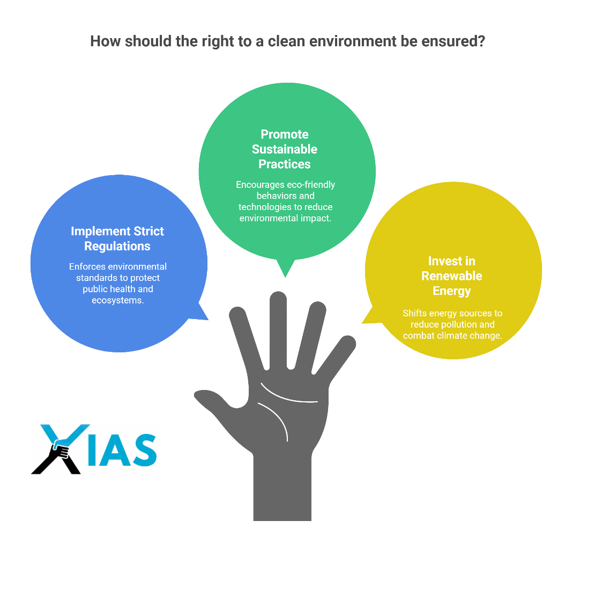
GS3-ENVI-0436 · Environment · UNFCCC
DR. CSE — REPLICA · INTRO TO CONCLUSION150 / 217
Dr. CSE — Replica
CLIMATE JUSTICE & COP 27 — Sharm El-Sheikh
GS3-ENVI-0437
Introduction
Climate Justice: those who contribute least to climate change suffer most — the basis of CBDR-RC, Polluter Pays and intergenerational equity.
Pakistan floods — the bill crossed \$30 billion, and 1,700 casualties were counted.
58 climate-vulnerable countries — together they cause 5% of global emissions.
Sharm El-Sheikh Implementation Plan:
1. A breakthrough on L&D (Loss and Damage).
2. A proposal to cover the whole population with the EWS.
3. FAST — Food and Agriculture for Sustainable Transformation.
4. Koronivia Joint Work for Agriculture.
5. ENACT — Enhancing Nature-based Solutions for Accelerated Climate Transformation.
6. Mangrove Breakthrough — protect 15 mn ha by 2030.
7. Called the "African COP".
Contentions:
1. No promise to phase out all fossil fuels.
2. Climate finance falls short.
3. L&D still lacks clarity.
4. Greenwashing.
5. Fossil fuel lobby.
Indian Concerns:
1. A gap in equity and climate justice.
2. The global carbon budget keeps shrinking.
3. Development needs of developing countries.
4. CBAM (discriminatory).
5. Scope of mitigation in agriculture.
6. A shortage of climate finance.
Data
Pakistan floods: a cost of more than \$30 billion, with 1,700 casualties.
The 58 vulnerable countries put out 5% of emissions.
Conclusion
Climate justice demands that responsibility follows emissions and capacity. COP27's Loss and Damage breakthrough, operationalised at COP28 (Dubai, 2023), is a step toward that — but it must be matched with predictable finance, technology transfer and rejection of unilateral measures like CBAM. India's call for "climate justice for the Global South", backed by Mission LiFE, keeps equity at the centre of global climate action.
DR. CSE — REPLICA · INTRO TO CONCLUSION151 / 217
Dr. CSE — Replica
Climate Finance: New Collective Quantified Goal & GCF
GS3-ENVI-0439
Introduction
Definition: Funding from local, national or transnational sources — public, private and alternative — for climate change mitigation and adaptation.
Keywords:
1. Carbon leakage.
2. Coal cess.
3. CBAM by EU.
4. CBDR.
5. Zero-sum game.
Efforts:
1. GEF.
2. GCF.
3. Adaptation Fund.
4. Catastrophe bonds.
RBI Deputy Governor suggestions:
Set up GIIT — Green Infrastructure Investment Trust (on the lines of REIT/InvIT).
A taxonomy for green finance so that greenwashing can be avoided.
Expert input to judge climate risks in green loan portfolios.
Data
Developing countries will need \$70–100 bn/yr for adaptation (2010–2050).
Copenhagen Accord:\$100 bn p.a. by 2020 — but under 2% of the promised funds arrived in the last 10 years.
India will need \$10 trillion of investment to reach net zero by 2070.
Opportunities:
1. Every \$1 invested brings a $4 return.
2. 65 mn new green jobs could be created.
3/4th of adaptation projects show no direct correlation.
Conclusion
Climate finance is the make-or-break issue of climate diplomacy. The \$100 bn promise was not met; COP29 (Baku, 2024) set a \$300 bn/year by 2035 goal under the New Collective Quantified Goal, far below developing countries' needs. Finance must be new, additional and grant-based under Article 9 of the Paris Agreement and CBDR-RC. At home, India must deepen a green taxonomy, sovereign green bonds, the proposed GIIT and climate risk disclosure — so that money flows without greenwashing.
3. Invasive species — for example, lantana; 10 invasive species in India — damage above ₹8 trillion.
4. Co-extinction.
ESZ (Eco-Sensitive Zones) — ecologically fragile areas that ring protected areas, under the EPA 1986.
India's conservation thinking has moved to "coexistence over conflict" — through the Wildlife Protection (Amendment) Act, eco-sensitive zones and corridor connectivity.
Data
IUCN:1/3rd of species face the threat of extinction.
Living Planet Report:70% of wildlife populations have declined since 1970.
Examples
Eco-Sensitive Zones stand notified around many protected areas.
After 70+ years of extinction, Project Cheetah has rewilded the species.
Riverine and forest corridors are being linked under the Kaziranga landscape project.
Conclusion
Human survival rests on biodiversity, so conservation must pair community stewardship with scientific planning. The Kunming-Montreal Global Biodiversity Framework (30×30 target), the Wildlife Protection (Amendment) Act 2022, the Biological Diversity (Amendment) Act 2023 and corridor-based landscape approaches give India the tools. Anchored in Article 48A and 51A(g) and SDG 15 (Life on Land), the goal is a "coexistence over conflict" model that protects species and livelihoods together.
DR. CSE — REPLICA · INTRO TO CONCLUSION153 / 217
Dr. CSE — Replica
FORESTS — Cover, Diversion & CAMPA
GS3-ENVI-0441
Quote
"We have a choice — collective action or collective suicide." — Antonio Guterres
Quote
"Forests are not just carbon sinks—they are cultural lifelines."
Introduction
FSI (ISFR 2023): forest cover stands at 21.76% (forest cover only; with tree cover it is 25.17%), against the NFP 1988 target of 33%.
3 lakh ha of forest land was diverted over 15 years — mostly for mining, roads, irrigation.
Best Practices:
Eco-feminism: the Piplanatri model.
JFM (Joint Forest Management) — Maldharis.
India pursues forest conservation through the State of Forest Reports (ISFR), CAMPA Funds and afforestation schemes — a balance between development and natural wealth ("green GDP").
Data
The Earth lost 45% of its original forest within the last century.
UNFCCC: agriculture drives 80% of deforestation in tropical countries.
Forest cover per FSI (ISFR 2023): 21.76%, against the 33% NFP target.
Examples
CAMPA has been allotted more than ₹60,000 crore for compensatory afforestation.
Nagar Van Yojana has created forests inside cities.
Conclusion
Green cover must grow in quality and support local livelihoods, not just in numbers. Closing the gap to the 33% NFP target needs natural-forest-first compensatory afforestation under CAMPA, the Green India Mission, the Bonn Challenge commitment (26 mn ha by 2030) and Gram Sabha-led governance under the Forest Rights Act. It serves Article 48A, SDG 15 and India's 2.5–3 bn tonne carbon sink target.
Coral Reef Ecosystems: Bleaching & Protection
GS3-ENVI-0443
Introduction
Definition: Large underwater ridges of calcium carbonate built up from coral skeletons — the "tropical rainforests of the oceans".
Map: Malvan, Mannar, Kutch, A&N, Lakshadweep.
Key bodies:
1. ICMAM (Integrated Coastal and Marine Area Management).
2. INCOIS — Coral Bleaching Alert System.
3. BioRock.
4. Reefwatch.
Best Practice:Cryomesh technology used to restore corals.
Data
1. Reefs cover under 1% of the seabed yet support about 25% of marine species.
2. Globally, about 50 crore (500 million) people depend on coral reefs for food, livelihoods and coastal protection.
The 6th Status of the Corals of the World Report says 14% of coral reefs have been lost since 2010.
Conclusion
Coral reefs are the "canaries of the ocean": they shield coasts, sustain fisheries and tourism, and house a quarter of marine life. Protecting them needs emission cuts (the root of bleaching and acidification), early-warning and restoration (INCOIS alerts, Cryomesh, bio-rock), strict CRZ enforcement and local participation. It directly advances SDG 14 (Life Below Water) and SDG 13.
DR. CSE — REPLICA · INTRO TO CONCLUSION154 / 217
Dr. CSE — Replica
The Western Ghats: Gadgil vs Kasturirangan Paradigms
GS3-ENVI-0444
Introduction
Western Ghats — older than the Himalayas, a UNESCO World Heritage Site (2012) and one of the world's "hottest" biodiversity hotspots; it regulates the monsoon and feeds the peninsular rivers.
Gadgil Committee (WGEEP, 2011): recommended 100% of it as ESA (Ecologically Sensitive Area), with graded zones.
Kasturirangan Panel (HLWG, 2013): recommended 37% as ESA, with a ban on mining, quarrying and large-scale development there.
Landslides and floods in Kerala and Karnataka have re-opened the debate.
Conclusion
The Western Ghats need a balance of ecology and livelihoods: ESA demarcation with Gram Sabha consent, a ban on mining and quarrying in sensitive zones, carrying-capacity-based tourism and infrastructure, and community-led restoration. Protecting this water tower of peninsular India serves Article 48A, SDG 15 and the 30×30 biodiversity target.
EIA
Environmental Impact Assessment (EIA) & Eco-Sensitive Zones
GS3-ENVI-0445
Quote
"Environment regulation is not anti-growth—it is pro-survival."
Introduction
Through its EIA notifications, CRZ rules and eco-zonal buffers, India takes a calibrated approach to development. The idea: “green clearance, not green compromise” in project governance.
Definition:
1. A process/study that predicts the impact a proposed project will have on the environment.
2. It stops approval when the impact has not been considered.
3. It compares alternatives so that harm stays minimal.
2. Vadvan Port EIA — considered only 1 season's data.
Kasturirangan Committee:
1. GRM for violation compliance.
2. Capacity building.
3. No activity in ESZ.
Way Forward:SEA (Strategic Environment Assessment).
Data
Faulty EIA lies behind 41% of the cases in the NGT.
Examples
Revised CRZ norms allow coastal tourism within ecological safeguards.
The online PARIVESH portal has made EIA clearances faster while keeping the scrutiny.
Conclusion
EIA must be transparent and science-led everywhere, not just in a few cases: independent, accredited consultants, full-year baseline data, genuine public hearings, post-clearance monitoring and cumulative impact / Strategic Environment Assessment. Grounded in the Precautionary Principle and Article 21 (right to a healthy environment), this is how India keeps "green clearance, not green compromise" while meeting SDG 11, 13 and 15.
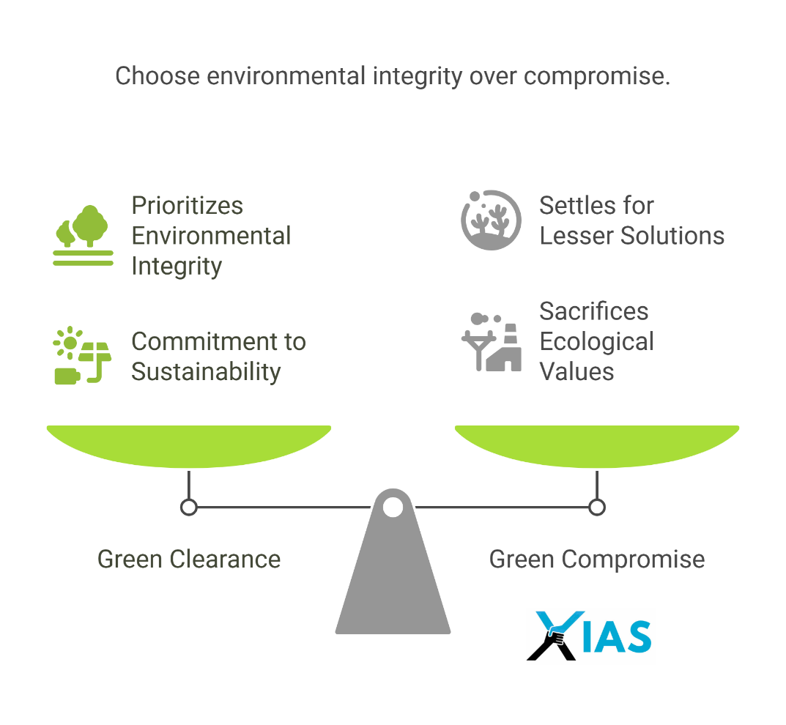
GS3-ENVI-0445 · Environment · EIA
Environment
ENVIRONMENT — Importance
GS3-ENVI-0447
Introduction
Highly productive — it supports Biodiversity and gives shelter to many species.
Works as a carbon sink.
Regulating services: purification, micro climate, control of soil and coastal erosion, biogeochemical cycles and nutrient recycling, disease regulation.
Provisioning services: fuelwood, local economy — Fisheries, eco-tourism.
Cultural services: aesthetic, recreational, spiritual, tribal identity.
Serves as natural barriers against disasters.
Functions as a Bioindicator of ecosystem health.
Conclusion
A healthy environment is the natural capital on which the economy and society rest. Protecting ecosystem services advances Article 48A and 51A(g), SDG 13, 14 and 15, and the idea of trusteeship — nature gives enough for everyone's need, not everyone's greed.
DR. CSE — REPLICA · INTRO TO CONCLUSION155 / 217
Dr. CSE — Replica
ENVIRONMENT — Challenges (Threats)
GS3-ENVI-0448
Introduction
Natural Threats: Cyclone, Forest fire, Floods, El Niño / Land use change.
5. Runaway urbanisation — population explosion, consumerism, concretisation, linear economy.
6. Over-harvesting / tragedy of commons.
7. Climate change.
8. Invasive species.
Conclusion
These threats are interlinked and feed the Triple Planetary Crisis — climate change, biodiversity loss and pollution. They need an integrated response: strict EIA in MATTIE sectors, Polluter Pays and EPR, nature-based solutions, a circular economy and community participation — development without destruction.
ENVIRONMENT — Impact (All Spheres)
GS3-ENVI-0449
Introduction
Impact on the hydrosphere:
Surface water: eutrophication, dead zones, contamination.
Groundwater: depletion.
Open oceans: sea level rise, acidification, de-oxygenation, temperature rise, stratification, pollution, increased cyclones, AMOC disruption.
Food security, loss of livelihood, disaster (GLOF), pandemics/diseases, permafrost, refugee crisis.
Social — PHEE WASH, agri distress, loss of productivity, human health, water security.
Conclusion
Impacts cascade through the hydrosphere, atmosphere, biosphere, lithosphere and anthroposphere and ultimately reach human health, food and security. A One Health / planetary health approach, early warning systems, Mission LiFE and action on SDG 3, 6, 13, 14 and 15 can break the cascade — protecting nature is protecting ourselves.
DR. CSE — REPLICA · INTRO TO CONCLUSION156 / 217
Dr. CSE — Replica
ENVIRONMENT — Solutions & General Remedies (All Ecosystems)
GS3-ENVI-0450
Introduction
One remedy set for all ecosystems:
Policy level:
1. Paris Agreement.
2. Landscape approach.
3. Secure Himalayas.
People-centred: ESZ, eco-tourism, community participation, Kasturirangan Committee, sustainable agriculture.
1. It keeps the continent free of military activity and nuclear weapons, and freezes territorial claims.
2. Scientific research allowed.
The Madrid Protocol (1991) adds environmental protection and bans mineral resource activity.
India's own domestic law: the Indian Antarctic Act 2022 (introduced as the Bill in 2021).
Indian research stations: Dakshin Gangotri, Maitri, Bharati.
Data
90% of the world's ice and 70% of its freshwater sit in Antarctica.
Conclusion
Antarctica is a global commons and a climate archive. Its ice melt drives sea-level rise, so its protection is a shared duty. India must balance science diplomacy (Maitri, Bharati, the Indian Antarctic Act 2022) with stewardship under the Antarctic Treaty System and Madrid Protocol — keeping the continent a zone of peace and science for intergenerational equity.
The Forest (Conservation) Act 1980 was amended in 2023 (renamed Van (Sanrakshan Evam Samvardhan) Adhiniyam), while the Forest Rights Act 2006 recognises the rights of forest dwellers, with Gram Sabha consent.
2023 Amendment:
1. It gives an objective definition of forest.
2. No prior approval needed for strategic/security/defence projects within 100 km of the international border.
Supporters: the act, as it stood, created hurdles in the way of development.
Critics: it narrows the Godavarman (1996) "dictionary meaning" of forest and dilutes community consent.
Even so, any change must respect the symbiotic relationship between forest, biodiversity and stakeholders.
Conclusion
National security and development needs are legitimate, but they must not erode ecological safeguards and tribal rights. Reconciling the amended forest law with the FRA 2006 — Gram Sabha consent, compensatory afforestation and the precautionary principle — will keep faith with Article 48A, Article 21 and SDG 15, and with the symbiosis of forest, biodiversity and stakeholders.
DR. CSE — REPLICA · INTRO TO CONCLUSION157 / 217
Dr. CSE — Replica
ENVIRONMENTAL LAWS — NGT & FRA (Role of Tribunals)
GS3-ENVI-0454
Quote
"Justice delayed in ecology is extinction in slow motion."
Introduction
The National Green Tribunal (NGT Act 2010) is a specialised body for speedy disposal of environmental cases, standing on the Principle of Natural Justice (PoNJ) and applying sustainable development, precautionary and polluter pays principles. The National Green Tribunal and the Forest Rights Act have grown into key institutions that balance ecology with equity. Together they carry forward India's vision of “Green Governance with Tribal Inclusion.”
Criticisms:
1. Green hurdle — seen as blocking development.
2. Selective adjudication.
3. Vacancies and weak compliance monitoring.
Examples
Illegal mining near critical elephant corridors was stayed by the NGT.
Over 25 lakh land titles (comprising individual and community forest rights across more than 1.8 crore acres) now stand recognized under the FRA (Ministry of Tribal Affairs), providing statutory livelihood security.
Several states faced NGT penalties over solid waste non-compliance.
In the Ennore Oil Spill, more than 1 lakh fishermen were hit; the NGT made the shipping company pay ₹240 crore as compensation.
Conclusion
Environmental justice needs stronger institutional capacity — filled benches, expert members, compliance monitoring — while the NGT avoids both the "green hurdle" and judicial-overreach critiques. Together with Gram Sabha-based rights under the FRA, this carries justice to the last forest-dweller, in line with Article 21, 48A and 51A(g).
BIODIVERSITY LAWS — BDA 2002 & PPV&FR Act 2001
GS3-ENVI-0455
Introduction
Biological Diversity Act 2002 (BDA):
The Act was enacted to conserve India's biodiversity and allow its sustainable use, with benefit sharing. This aligns with the CBD and its protocols — Cartagena (biosafety) and Nagoya (ABS).
Issues:
1. Commerce gets priority over conservation.
2. The Act allows too many exceptions.
3. ABS — the Divya Pharmacy case controversy.
BDA (Amendment) Act 2023: replaced imprisonment with penalties (decriminalisation) and exempted codified traditional knowledge and AYUSH practitioners from ABS, to ease industry and research.
PPV&FR Act 2001: India's own (sui generis) plant variety law that recognises farmers as cultivators, conservers and breeders.
The PepsiCo case is the landmark instance here — it set farmers' rights against corporate IP.
Conclusion
Biodiversity keeps humanity alive. India must balance ease of doing business with Access and Benefit Sharing (Nagoya Protocol), farmers' rights and the role of Biodiversity Management Committees. Alignment with the Kunming-Montreal Global Biodiversity Framework (30×30, benefit-sharing targets) will turn these laws into real protection for biodiversity and the communities who conserve it — Article 48A, SDG 15.
India has been the cradle of wildlife since IVC times — people worshipped wild animals as gods and goddesses.
WPA 1972 came into being to preserve and promote wildlife of India, through Schedules, protected areas (National Parks, Sanctuaries, Conservation and Community Reserves) and bodies like the NTCA.
WPA Amendment Act 2022: rationalised the Schedules (6 → 4), gave effect to CITES and added provisions on invasive alien species.
Conclusion
The WPA should evolve from protection to coexistence: scientific management of human-wildlife conflict, community and Community Reserve models, flagship efforts like Project Tiger and Project Cheetah, and alignment with CITES and the Global Biodiversity Framework — fulfilling Article 48A and 51A(g) and SDG 15.
Sustainable Development
Sustainable Development & Global SDG Indicators
GS3-ENVI-0460
Quote
"The greatest threat to our planet is the belief that someone else will save it." — Robert Swan
Quote
"We won't have a society if we destroy the environment." — Margaret Mead
Introduction
Sustainable development means a balanced relationship between development, social equity and the environment.
At the UNGA, India voted to recognise the right to a clean, healthy and sustainable environment as a human right.
Triple Emergency: CC + biodiversity loss + pollution.
Brundtland Report (1987): development that meets today's needs without compromising future generations' ability to meet theirs; the 2030 Agenda carries it through 17 SDGs.
India's pillars: Panchamrit, Mission LiFE, the NITI Aayog SDG India Index and Saptrishi — Green Growth (Budget 2023-24).
Data
On the 2026 SDG Index, India ranks 94th out of 167 countries (its best ever; 99th in 2025).
India ranked 176th among 177 countries in the 2026 Environmental Performance Index (also 176th of 180 in 2024).
Conclusion
Sustainable development is not just an option but a necessity for a sustainable future — it links economic growth, social equity and ecological balance (SDG 12, 13, 15).
Collective action vs collective suicide — Antonio Guterres.
Saptrishi — Green Growth: growth that is low-carbon, inclusive and resilient is India's Amrit Kaal path.
DR. CSE — REPLICA · INTRO TO CONCLUSION159 / 217
Dr. CSE — Replica
MISSION LiFE
GS3-ENVI-0461
Quote
"LiFE does not look at which country is in coalition but brings everyone together."
Quote
"Mission LiFE is an important step towards renewed and reimagined multilateralism."
Introduction
Objective: an environmentally conscious way of life, with "mindful & deliberate" utilisation replacing "wasteful & mindless" consumption.
India leads this global mass movement, which nudges both individual and collective action.
Over 80% of all RLB and ULB (rural and urban local bodies) are to become environment-friendly by 2028.
Change in demand → Change in supply → Change in policy.
Best Practice: the solar-powered village of Modhera.
Data
Over 80% of RLB and ULB (rural and urban local bodies) to become environment-friendly by 2028.
Conclusion
Mission LiFE turns climate action from a government agenda into a people's movement: individual choices (P3 — Pro-Planet People) shift demand, supply and then policy. First introduced by India at COP26 (Glasgow, 2021), it embodies "mindful and deliberate utilisation" and strengthens Panchamrit, SDG 12 (Responsible Consumption) and Article 51A(g).
Universal Strategy Blueprint: Environmental Challenges & Ecology PRACTICE SKELETON
GS3-ENVI-0462
Fill-in-the-Blank Intro
"___ is a critical dimension of India's environmental and sustainable-development agenda — linking ecology, economy and equity, and anchored in Article 48A, 51A(g) and the SDGs."
Tactical Strategy Guide: Use this plug-and-play blueprint for unexpected or niche environmental questions (an unstudied species, pollutant, or local crisis). Substitute the topic into the blank (___) to produce an instant, high-scoring answer grounded in constitutional articles and global climate goals.
Fill-in-the-Blank Conclusion
"___ is not just an option but a necessity for a sustainable future."
Collective action vs collective suicide. — Antonio Guterres
Saptrishi — Green Growth.
Wetlands
Mangrove Ecosystems & MISHTI Conservation
GS3-ENVI-0463
Introduction
Definition: vegetation that tolerates salt and grows in intertidal estuaries.
Key initiatives:
1. Mangroves for Future.
2. Mangroves Atlas.
Map: Sunderbans, A&N, Cauvery, KG basin, Mahanadi basin, Ratnagiri, Goa, Kori Creek, Kutch.
SAMIE Initiative — Sustainable Aquaculture in Mangrove Ecosystem. Mangroves are planted around shrimp ponds, so no fish feed is needed and conservation stays active.
Data
ISFR 2019: mangrove cover in the Indian subcontinent is \~5,000 sq km (a rise of 1.1%).
Conclusion
Mangroves are coastal guardians and blue-carbon sinks: they buffer cyclones and tsunamis, nurse fisheries and sequester carbon. Scaling the MISHTI scheme and the Mangrove Breakthrough, with strict CRZ-I protection and community co-management (SAMIE), will serve SDG 13, 14 and 15 and India's 2.5–3 bn tonne carbon sink goal.
DR. CSE — REPLICA · INTRO TO CONCLUSION160 / 217
Dr. CSE — Replica
Wetland Ecology: Ramsar Sites & Wise Use
GS3-ENVI-0464
Introduction
Definition (RAMSAR): submerged lands — marshes, swamps, bogs and fens — usually up to 6m water depth.
India has 7 lakh wetlands.
Deepor Beel — 1/3rd of it is encroached.
Key Principle:Wise Use.
Best Practice:Keshopur Maini Community Reserve.
Way Forward: wetlands need scientific criteria for identification, a data bank, and cooperative, decentralised efforts.
Data
65% of wetlands have disappeared over the past 100 years.
India's wetland count stands at 7 lakh.
Conclusion
Wetlands are the "kidneys of the landscape" — they recharge groundwater, buffer floods and sustain biodiversity. Their survival depends on the Wise Use principle: a scientific inventory and data bank, enforcement of the Wetlands (Conservation and Management) Rules 2017, growth of the Ramsar network and community-led reserves like Keshopur Maini. It serves SDG 6, 13 and 15 and Article 48A.
"What we breathe and drink today decides who we become tomorrow."
Introduction
India fights pollution in mission mode through the National Clean Air Programme, Namami Gange and Soil Health Cards. The guiding vision: “right to life is a right to clean environment”.
Examples
Under NCAP (2019), 130+ non-attainment cities prepared city action plans, targeting a 40% PM10 reduction by 2025-26.
Sewerage projects were launched under Namami Gange as well.
The Soil Health Card scheme has crossed 23 crore+ cards.
Conclusion
Only decentralised monitoring and changed behaviour will give pollution control its deep-rooted impact.
Air Pollution Mitigation: NCAP & Airshed Approach
GS3-ENVI-0466
Introduction
India stands 5th among the most polluted countries.
WHO:14 of the 15 cities ranked most polluted in the world sit in India.
Steps taken:
1. NCAP.
2. CAQM.
3. EPCA.
4. Smog towers.
5. Fly Ash Management Rules / 2021 Notification (fly ash utilisation has surged from 63% to over 96%, driven by mandatory use in road construction and cement manufacturing).
Best Practices: the London and Beijing models.
Transport sector:
1. The sector emits 23% of CO₂.
2. It ranks 3rd among CO₂-emitting sectors.
3. Road transport accounts for 90% of these emissions.
4. The vehicle fleet should double to 200 million by 2030.
5. Supporting schemes — FAME, BS-VI.
Agriculture and livestock: together 18% of GHG.
Cities add 60% of GHGs while generating 70% of GDP.
Data
CSE: air pollution has cut India's life expectancy by 2.5 years.
As of 2020:
1. 90% of TPPs do not meet the sulphur standards.
2. More than 51% do not meet the PM standards.
Conclusion
Clean air is a part of the right to life under Article 21. The NCAP (revised target: 40% PM10 cut by 2025-26) needs a regional airshed approach via CAQM, cleaner transport (BS-VI, EVs, public transport), stubble management, clean cooking and industry norms, backed by Polluter Pays and decentralised monitoring. Mission LiFE and SDG 3 and 11 complete the vision of "breathe easy, live long."
Mining and Erosion
LAND DEGRADATION — Desertification & Land Subsidence
GS3-ENVI-0467
Introduction
Desertification is the decline in the quality and productivity of land, caused by climatic variation and human activity.
Key frameworks:
1. UNCCD.
2. 30×30 target.
3. Bonn Challenge.
Government schemes:
1. CAMPA.
2. Green India Mission.
3. Urban Forestry — the Pune Wajre Forest Model.
4. iForest Model.
International initiative: the Great Green Wall — Sahel region.
Best Practice:Project BOLD / Bamboonomics — a bamboo oasis on arid and semi-arid lands that supports tribal livelihoods and checks erosion.
Land subsidence: the ground shrinks when underground material moves — a gradual settling or a sudden sinking (Joshimath, 2023).
The Mishra Committee 1976 is the key committee on land subsidence.
Best Practice: the Vetiver system to control soil erosion.
Data
30% of total land faces the threat of degradation — ISRO.
MoEFCC: desertification has already cost 2.5% of GDP.
Since the 1850s, land under cultivation has grown 3×.
Conclusion
Land is a finite resource: the goal is Land Degradation Neutrality by 2030 (UNCCD, SDG 15.3), through the Bonn Challenge (India's 26 mn ha restoration pledge), the Green India Mission, watershed and agroforestry programmes and the Great Green Wall model. For fragile mountain towns like Joshimath, carrying-capacity studies, hazard zoning and the old Mishra Committee advice must be enforced — development within ecological limits.
Solid wastes
SOLID WASTE MANAGEMENT — General
GS3-ENVI-0469
Introduction
Waste generated:
1. 65 MT/year at present.
2. It could touch 165 MT by 2030.
Of this 65 MT (NITI Aayog/CPCB estimate):
1. 43 MT gets collected.
2. A mere 13 MT gets treated.
Principle: Waste to Wealth.
Best Practices (Waste Water):
1. Kolkata Sewage-Fed Aquaculture.
2. Avadi Sewage Plant (Tamil Nadu).
Data
1. 65 MT/yr is generated.
2. The 2030 projection is 165 MT.
Conclusion
Waste must be seen as a resource, not a liability: source segregation, decentralised processing and waste-to-wealth under the Solid Waste Management Rules 2016 and Swachh Bharat Mission 2.0, scaling models like Indore with Polluter Pays and EPR. Moving from linear to circular consumption advances SDG 11 and 12 and Article 48A.
Definition: covers every item of electric and electronic equipment (EEE) and its parts once discarded.
1. India holds the 3rd spot among e-waste generators, producing roughly 4.1 MT in 2023.
2. Formal collection and recycling stays below 25%.
Best Practices:
1. LIAM (Apple recycling robot).
2. EU Right to Repair.
3. Bhopal eWaste Clinic.
4. EPR (Extended Producer Responsibility).
Under the Basel Convention, the transboundary movement of hazardous waste — e-waste included — is controlled.
Data
As an e-waste generator, India ranks 3rd — roughly 4.1 MT in 2023.
Formal channels collect and recycle under 25%.
Conclusion
E-waste is both a hazard and an "urban mine" of metals. The E-Waste (Management) Rules 2022 with EPR targets, the Right to Repair portal, formal recycler linkage, consumer awareness and Basel Convention compliance can lift formal collection beyond 25% — advancing SDG 12 and a circular economy.
Plastic Pollution: Single-Use Ban & Circularity
GS3-ENVI-0471
Introduction
1. India's plastic waste output is 9.3 MT/year.
2. 43% of it comes from Single-Use Plastic (SUP).
Recycling covers only 30%.
China and Malaysia no longer take illegal plastic imports from the USA, Canada and the UK.
Steps:
1. Plastic Waste Management Amendment Rules 2021.
2. India Plastic Challenge Hackathon 2021.
3. Puneet Sagar Abhiyan.
4. EPR on plastic packaging.
Best Practices:
1. Andhra Pradesh — Rice for Plastic.
2. Ireland — the Plas Tax.
3. Precycling.
4. South Korea — reusables.
5. Madhya Pradesh — Bhartan Bhandar.
6. Wayanad — plastic used in road construction.
7. Main Indoori Jholadhari.
Data
1. Plastic waste in India: 9.3 MT/yr.
2. Share of SUP: 43%.
OECD Global Plastics Outlook: plastic waste will go up 3× by 2060.
Conclusion
Plastic pollution must be tackled at source: the ban on identified single-use plastics (2022), EPR on plastic packaging, affordable alternatives (jute, bamboo, bio-plastic), better collection and recycling, and behaviour change under Mission LiFE ("Beat Plastic Pollution", India's World Environment Day 2018 theme). A binding global plastics treaty and SDG 12 and 14 complete the response.
5. Digital India (with an e-waste recycling component).
International:
1. China has a Circular Economy Promotion Law.
2. Germany and Japan follow binding principles.
3. SDG 12.
Conclusion
The "Take, Make, Dispose" mindset must give way to the 6R approach. Backed by EPR, NITI Aayog-led Circular Economy action plans, vehicle scrappage and Right to Repair, a circular economy cuts waste, creates green jobs and secures resources — turning waste into wealth under SDG 12 and Mission LiFE.
Bio-Medical Waste Management & One Health
GS3-ENVI-0473
Introduction
Bio-medical waste (BMW): waste generated during diagnosis, treatment or immunisation of humans or animals, or in related research.
Definition:
1. Human and animal anatomical waste.
2. Treatment apparatus such as needles and syringes.
COVID-19 showed that BMW is a public-health and environmental risk. The BMW Rules 2016 need strict segregation at source, barcode tracking, Common Bio-medical Waste Treatment Facilities (CBWTFs), training of health workers and enforcement of Polluter Pays. Safe disposal protects One Health and SDG 3 and 12.
Water Pollution and Related Issues
Coastal Ecosystems, Vulnerabilities & Erosion
GS3-ENVI-0474
Introduction
Indian coastline:
1. 7,500 km plus 1,200+ islands.
2. 1/5th of the population and 3 metro cities.
Coastal Erosion is the wearing away of land by high winds, drainage, wave action and tidal currents.
The Kerala Coastal Zone Management Project takes up integrated coastal zone management for erosion control, sustainable development and conservation.
Technology: geo-textiles for stabilisation.
Climate Action Plan: a detailed framework to measure, plan and reduce GHG emissions, along with preventive measures.
The BMC is drafting the Mumbai Climate Action Plan (MCAP).
Government steps:
1. NAPCC.
2. CRZ.
3. National Coastal Mission.
Data
As per the MoEFCC, 40% of the Indian coastline faces erosion — high, medium or low.
Conclusion
Climate change strikes coastal areas with strategic, economic and political repercussions. A mix of ICZM, CRZ enforcement, bio-shields (mangroves), soft and hard engineering, city climate action plans and the Blue Economy vision can protect the 7,500 km coastline and coastal communities — SDG 13 and 14.
DR. CSE — REPLICA · INTRO TO CONCLUSION164 / 217
Dr. CSE — Replica
WATER — Overview & Jal Jeevan Mission
GS3-ENVI-0475
Quote
"We never know the worth of water until the well is dry." — Thomas Fuller
Introduction
Of the world's freshwater, India holds only 4%, yet it holds 17% of the population.
Per capita availability:
1. 1951 — 5177 m³.
2. 2011 — 1545 m³.
3. 2030 projected — 1300 m³.
70% of water is contaminated with heavy metals.
Pakistan — domestic violence has grown with water insecurity and heat-led aggression.
Sahel — conflicts arise as water stress reduces the land's fertility.
Social issue: the water wives phenomenon.
Government steps:
1. Jal Shakti Mission.
2. MGNREGA (recharging aquifers).
3. Atal Bhujal.
4. River Interlinking.
5. Water Act.
Jal Jeevan Mission (JJM, 2019):"Har Ghar Jal" — functional tap water for every rural household, community-managed (extended to 2028 in Budget 2025-26).
Its budget allocation rose 23%; hitting its target would avert 4 lakh diarrhoea deaths (WHO).
Data
NITI Aayog: supply will fall short of demand by 2030.
Conclusion
Water security needs a shift from supply-side to demand-side and participatory management: the Mihir Shah Committee (a unified National Water Commission, aquifer-based governance), Atal Bhujal Yojana, Jal Jeevan Mission, "per drop more crop" and "Catch the Rain". Anchored in Article 21 (right to water) and SDG 6, water must be treated as a shared, sacred resource for future generations.
Groundwater Extraction & Aquifer Management
GS3-ENVI-0476
Introduction
World Bank:0.4 m of groundwater is lost in India every year.
It supplies 80% of rural domestic water needs; for urban water needs, the share is 50%.
Agriculture takes 90% of it.
Government efforts:CGWB / CGWA.
Data
World Bank: India's groundwater table drops 0.4 m each year.
Conclusion
Groundwater needs community-led, aquifer-based management: NAQUIM mapping, Atal Bhujal Yojana, the Model Groundwater Bill, crop diversification away from water-intensive crops, efficient irrigation and MGNREGA-based recharge, as the Mihir Shah Committee recommends. It advances SDG 6 and the Article 21 right to water.
DR. CSE — REPLICA · INTRO TO CONCLUSION165 / 217
Dr. CSE — Replica
Marine Litter, Eutrophication & Coastal Commons
GS3-ENVI-0478
Introduction
Definition: excessive plant and algal growth caused when sunlight, CO₂ and nutrients — the growth-limiting factors photosynthesis needs — become more available.
Causes: agricultural run-off (fertilisers), sewage, detergents. Effects: algal blooms, hypoxia, dead zones, fish kills.
8 million tonnes of plastic flow into the oceans every year.
Plastic makes up 80% of all marine debris.
Bioaccumulation and biomagnification — microbeads have shown up in newborns' blood.
Cocos Keeling Island — an example of the impact marine litter can have.
Data
Every year, the ocean takes in 8 million tonnes of plastic.
Of all marine debris, plastic is 80%.
Conclusion
Marine pollution is land-based in origin, so it needs land-based solutions: balanced fertiliser use, sewage treatment, SUP bans, EPR and Puneet Sagar Abhiyan, with MARPOL (Annex V), GloLitter and a global plastics treaty at sea. SDG 14.1 aims to prevent and significantly reduce marine pollution — a clean ocean is common heritage.
DR. CSE — REPLICA · INTRO TO CONCLUSION166 / 217
Dr. CSE — Replica
PART GS-3 · CHAPTER 13
Disaster Management
Disaster answers follow a fixed drill: hazard, vulnerability, response, resilience. These cards give you that drill for every major theme.
The NDMP (2016, revised 2019) brings India in line with the Sendai Framework.
1. NDRF.
2. National Disaster Response Fund.
3. National Calamity Contingent Duty.
The SENDAI Framework — reduce 4, increase 3:
Reduce:
1. Mortality.
2. Affected people.
3. Economic loss.
4. Damage to critical infrastructure.
Increase:
1. Countries with DRR strategies.
2. International cooperation.
3. Access to multi-hazard EWS.
Keywords:
1. DRR, Vulnerability mapping, Prevention and Mitigation, Emergency response, L&D, Local genius, First responders.
2. 3R's (Relief, Rehabilitation, Reconstruction).
3. BBB (Build Back Better).
Conclusion
"Disasters are inevitable, but their impact is not." With robust DM, risks can be mitigated, lives saved and communities made resilient.
Tehri Dam case — SC: DM forms part of the right to sustainable development.
"Prepare and prevent, not repair and repent" — this should become second nature everywhere.
EXTREME WEATHER EVENTS (EWEs)
GS3-DISA-0481
Introduction
Definition (IPCC): Extreme Weather Events (EWEs) are occurrences that are rare at a particular place and time — heatwaves, cold waves, cloudbursts, cyclones, and unseasonal rainfall being common Indian examples. Climate change is increasing both their frequency and intensity, making EWEs a central concern for India's disaster-management planning.
Data
CSE Report 2022: EWEs showed up on 241/273 days of the year.
2022 gave India its warmest, driest and wettest days.
75% of districts felt EWEs.
Conclusion
Rising EWE frequency underscores the urgency of embedding climate adaptation into the NDMP 2019 and strengthening multi-hazard Early Warning Systems per the Sendai Framework.
A shift from reactive relief to proactive, science-based resilience — in line with Mission LiFE and the right to life (Article 21) — is essential to limit future losses.
2. Decentralised, pro-active, preventive, community resilience, self-sufficiency.
3. A parallel rather than sequential approach.
4. Equitable.
Funding: catastrophe bonds.
Resilient Infra:
1. SDG 9.
2. CDRI.
EWS: the Odisha SATARK Mobile App.
WF mnemonic — RW wants LES VAT LSD:
1. R — Risk coverage.
2. W — Women role.
3. L — Leadership.
4. E — EWS.
5. S — Sendai.
6. V — Vulnerability mapping.
7. A — Academia.
8. T — Tech.
9. L — Local capacity.
10. S — Social media.
11. D — DRR.
Data
ROI on mitigation: \$1 → $7 saved.
Conclusion
"Every \$1 spent on mitigation saves $7 on response and recovery" — the Sendai Framework logic.
Aim for the Zero Casualty Approach.
Tehri Dam Case — the SC held that DM is part of the right to sustainable development.
Universal Strategy Blueprint: Disaster Risk Management PRACTICE SKELETON
GS3-DISA-0483
Fill-in-the-Blank Intro
"___ poses acute disaster vulnerabilities across [socio-economic / infrastructure / environmental / psychological / governance] domains, requiring an integrated disaster management response under the DM Act, 2005 and NDMP 2019."
Tactical Strategy Guide: Use this plug-and-play blueprint for unforeseen or multi-hazard disaster scenarios. Substitute the specific hazard into the blank (___) to immediately deploy the Sendai Framework and Disaster Management Act architecture.
Fill-in-the-Blank Conclusion
"Disasters are inevitable, but their impact is not: managing ___ demands proactive risk reduction, community first-responders, and building back better under the Sendai Framework."
Prepare and prevent, not repair and repent.
WF Mnemonic — RW wants LES VAT LSD
1. R — Risk coverage.
2. W — Women role.
3. L — Leadership.
4. E — EWS.
5. S — Sendai.
6. V — Vulnerability mapping.
7. A — Academia.
8. T — Tech.
9. L — Local capacity.
10. S — Social media.
11. D — DRR.
Vulnerability and Risk Assessment
DISASTER — Definition & Vulnerability
GS3-DISA-0484
Introduction
Definition (DM Act, 2005): a disaster is a catastrophe, mishap, calamity or grave occurrence — natural or man-made — in any area, which affects the capacity of society to cope using its own resources, causing substantial loss of life, property or environment. India's multi-hazard profile makes vulnerability assessment central to planning.
Data
30 different types of disasters threaten India.
1. EQ — \~59% of land (moderate to high intensity).
2. Cyclones — \~8% of land.
3. Floods — 12%.
4. Drought — 68% of the cultivable area is vulnerable.
\~5,700 km of the 7,516 km coastline sits in the cyclone and tsunami zone (NDMA).
Conclusion
Given that 30 distinct hazards threaten India and much of its area faces drought or seismic risk, a shift from hazard-specific to vulnerability-based planning is vital.
This aligns with the Sendai Framework's risk-reduction targets and the constitutional vision of a secure right to life (Article 21) for all citizens.
Definition: intense rain falling over a short span — 100 mm/hour on a small area.
Best Practice:
1. The Copenhagen Cloudburst Formula — blue-green infrastructure.
2. City planning.
Hotspots: Himalayan states (Uttarakhand, Himachal Pradesh, J&K) and the Western Ghats, where moist air is forced up steep slopes.
Data
Intensity: 100 mm/hr on a small area.
Examples:
1. UK, 2021.
2. Jammu and Kashmir, 2010.
Terrain at risk: mountains, deserts, interiors of landmass.
Conclusion
Since cloudbursts are hyper-localised and hard to predict with conventional radar, India is rapidly expanding its Doppler Weather Radar (DWR) network (surpassing 51 operational DWRs covering over 87% of India's landmass under Mission Mausam) alongside blue-green urban infrastructure (Copenhagen model) to manage flash flooding in vulnerable Himalayan and northeastern terrain.
This directly supports the Sendai Framework's target of expanding access to multi-hazard EWS.
Cyclone
CYCLONES — Types, Causes, Impact & Management
GS3-DISA-0486
Introduction
Definition: rapid inward circulation of air around a low-pressure area; a perennial hazard for India, often called the "silent killer".
Types:
1. Tropical cyclones — form over warm tropical oceans; India's primary threat (Bay of Bengal & Arabian Sea).
2. Temperate/extratropical cyclones — develop in middle and high latitudes (35°–65° N&S), explained by the Polar Front Theory.
3. Bomb Cyclone (Bombogenesis) — a rapidly intensifying extratropical storm where pressure drops ≥24 mb within 24 hours, often linked to blizzards/snowstorms.
4. Storm Surge — an abnormal rise in sea level when a cyclone crosses the coast, inundating the coastal strip; often the deadliest component of a cyclone.
Early Warning & Institutions: colour-coded warnings by IMD; RIMES (Regional Integrated Multi-Hazard Early Warning System); the Odisha Model is the best-practice for cyclone preparedness.
Data
10% of the world's tropical cyclones occur in India; 13 states and UTs are affected.
Economic cost: \~2% of GDP; e.g., Cyclone Nivar damaged 23,000 acres of crops.
Rising Arabian Sea cyclogenesis: linked to IOD heating, GHG emissions, El Niño, a weakening monsoon, and reduced wind shear from CO₂ buildup.
Robust early warning (IMD, RIMES) and community preparedness (Odisha Model) have sharply cut cyclone mortality in India over two decades — a model cited globally under the Sendai Framework's EWS target.
Going forward, mangrove restoration, coastal zoning, and cyclone-resilient infrastructure (aligned with CDRI) must complement forecasting to address the compounding risks of storm surges and rapid intensification under climate change.
Drought
Drought Vulnerability & Crisis Management
GS3-DISA-0490
Introduction
Definition: a period of abnormally dry weather that causes serious hydrological imbalances in the area.
Note: the DM Act does not define it as a disaster.
The Drought Crisis Management Plan 2015 exists.
Government steps:
1. MGNREGA (employment).
2. Recharging groundwater.
3. Compensation for crop loss.
Schemes:
1. PMGSY.
2. Soil Health Card.
3. PM Fasal Bima Yojana.
4 Types:
1. Meteorological.
2. Hydrological.
3. Agricultural.
4. Ecological.
Data
68% of the cultivable area is vulnerable to drought (NDMA).
Drought-like conditions prevail over 20% of India's land.
Conclusion
Since the DM Act, 2005 does not formally classify drought as a disaster, gaps persist in relief mobilisation.
Strengthening the Drought Crisis Management Plan, micro-irrigation under PMKSY, and groundwater recharge are essential for long-term resilience, aligned with SDG 6 and SDG 13.
DR. CSE — REPLICA · INTRO TO CONCLUSION170 / 217
Dr. CSE — Replica
Flash Droughts: Rapid Onset & Agro-Planning
GS3-DISA-0491
Introduction
Definition: drought that sets in with a rapid and intense onset — over a few weeks or months, unlike the traditional kind. Behind it: high temperatures, reduced precipitation, low soil moisture and increased evaporation.
Best Practices:
1. The Seechwal Model.
2. The Israel case study.
3. Agro-climatic agriculture.
Data
A study warns of more flash droughts in India by end of century.
Conclusion
As flash droughts are projected to rise with climate change, India must integrate soil-moisture monitoring and sub-seasonal forecasting into its drought-management framework.
Drawing on the Israeli drip-irrigation model and agro-climatic zone planning can help safeguard farm livelihoods and support SDG 2 (Zero Hunger).
Earthquake
Earthquake Resilience & Seismic Micro-Zonation
GS3-DISA-0492
Introduction
Definition: shaking of the Earth's surface when seismic waves arrive after energy is suddenly released in the Earth's crust or upper mantle.
Way Forward: an EIA should precede mining and dam construction.
Best Practices:
1. Bhungas (Kutch).
2. Ikra Bamboo Houses (Sikkim).
Steps:
1. National Retrofit Program 2014.
2. National EQ Risk Mitigation Project.
3. EQ Disaster Risk Indexing.
Best Practice (International): Japan — 80% compliance with quake-resistant buildings.
Data
Major EQs:
1. Gujarat, 2001.
2. Nepal, 2015.
3. Sikkim, 2011.
60% of India's land is vulnerable, covering 80% of population.
Conclusion
With 60% of India's landmass in seismic zones III–V, enforcing the National Building Code and retrofitting critical infrastructure are non-negotiable.
Adopting Japan's 80% compliance benchmark for quake-resistant construction, alongside traditional techniques like Bhungas, can substantially reduce the human and economic toll of future earthquakes.
Earthquake Swarms: Dynamics & Preparedness
GS3-DISA-0493
Introduction
Definition:
1. Many low-magnitude earthquakes strike one localised region over days to months — no clear foreshock/main shock/aftershock sequence appears.
2. Difficult to predict.
Causes:
1. Hydro-seismicity.
2. Magnetic activity.
3. Weak crust.
Example: Palghar, Maharashtra — 30 low-intensity EQs in 2 months.
Conclusion
Because earthquake swarms lack a clear precursor pattern, continuous seismic monitoring (via the National Seismological Network) and public risk communication in affected micro-regions like Palghar are critical.
Precise prediction remains scientifically elusive, reinforcing the need for preparedness over forecasting, in line with the Sendai Framework's DRR approach.
Landslide
Landslide Hazards: Mitigation & Slope Engineering
GS3-DISA-0494
Introduction
Definition: the downward and outward movement of slope material — rock, debris, earth — under gravity.
2. The National Landslide Risk Mitigation Project.
Steps:
1. GSI hazard zonation maps using UAV.
2. Microzonation.
3. Capacity building.
Best Practices:
1. Maharashtra — geo-textile.
2. Uttarkashi — EWS + stabilisation.
70 HEPs in Himalayan states carry the risk of EQ-triggered landslides.
Data
GSI:12% of land area is prone to landslides.
Vulnerable areas: the Himalayas, the Northeast and the Western Ghats.
182 landslides hit 10 states in 2022.
Conclusion
With climate change intensifying extreme rainfall in landslide-prone Himalayan and Western Ghats terrain, scaling up NDMA's National Landslide Risk Mitigation Strategy, slope stabilisation, and community-based EWS (as in Uttarkashi) is vital.
This protects both lives and the hydropower infrastructure central to India's clean-energy transition.
Miscellaneous (Disasters)
Heatwaves: Public Health Vulnerability & Action Plans
GS3-DISA-0495
Introduction
Definition: a spell of abnormally high temperature — it kills humans and animals.
Way Forward:
1. NDMA guidelines.
2. A sensitive approach — find the most vulnerable first.
Best Practices:
1. Nagpur — a Heat Action Plan plus a Heat Wave Index.
2. Ahmedabad — Cool Roofs Program for slums, plus colour-coded heat alerts.
Data
IMD:
1. Above 40°C in plains.
2. Above 27°C on the coast.
3. Above 30°C in hills, with 5–6° above normal.
2015 heat wave (Andhra Pradesh and Telangana): over 2,300 deaths.
Summer 2022: an estimated \~61,000 heat-related deaths in Europe (ISGlobal study, Nature Medicine).
World Bank:
1. 75% of Indian labour force faces heat exposure.
2. The situation could break the human survivability limit.
Conclusion
As heatwaves increasingly threaten outdoor workers and push regions toward the human survivability limit (per World Bank projections), scaling up City Heat Action Plans (Ahmedabad, Nagpur models) is essential.
Urban cool-roof programmes directly further the right to life (Article 21) amid a warming climate.
DR. CSE — REPLICA · INTRO TO CONCLUSION171 / 217
Dr. CSE — Replica
Cold Wave Dynamics & Homeless Protection
GS3-DISA-0496
Introduction
Definition: temperature falls rapidly within 24 hours; farming, industry and social activity then need much more protection.
Best Practice:Rain Basera (night shelters) in Delhi.
The need: an action plan for cold wave management.
Data
Conditions: plains below 10°C, plus 4.5° below normal, for 2 days running.
IMD: a 3× increase in cold wave days (2017–20).
Conclusion
With IMD recording a threefold rise in cold wave days, expanding night-shelter networks like Delhi's Rain Basera is a necessary short-term response.
Issuing localised Cold Wave Action Plans — on the lines of Heat Action Plans — can better protect the urban homeless and vulnerable populations each winter.
Definition: the Earth's crust has an opening; through it, molten rock (magma), gases and debris erupt.
Positive effects:
1. Soil fertility.
2. Geothermal energy and hot springs.
3. Minerals.
4. Cooling effect.
Examples
Barren Island (Andaman & Nicobar) is India's only confirmed active volcano.
Negative effects: can also trigger tsunamis, acid rain, and climate cooling (volcanic winter) alongside the positive effects above.
Conclusion
While volcanic eruptions are a rare hazard for India compared to floods or cyclones, monitoring active zones like Barren Island remains important for regional shipping and ecological safety.
This reflects the broader disaster-management principle of all-hazard preparedness embedded in the NDMP 2019.
Definition: unpredictable major fires in combustible settings (dry forests); they burn over a large area for a long time.
Steps:
1. National Action Plan on Forest Fires 2018.
2. FF Alert System.
3. i-Forest initiative.
Data
ISFR 2021: about 22% of forest cover is highly to extremely fire-prone; Uttarakhand, Odisha and Chhattisgarh recorded the most fire incidents in 2023-24 (ISFR 2023).
Example: Kullu Valley forest fire, 2021.
Conclusion
With FSI estimating about a fifth of India's forest cover highly to extremely fire-prone, and climate change lengthening dry spells, scaling up early-warning systems (FF Alert), community fire-watcher networks, and controlled burns is essential.
This supports both Article 48A's environmental mandate and India's carbon-sink commitments under its NDCs.
DR. CSE — REPLICA · INTRO TO CONCLUSION172 / 217
Dr. CSE — Replica
Flood Hazards: Riverine Zoning & Sponge Cities
GS3-DISA-0499
Introduction
Definition: high water along a river or the coast that ends in inundation of land.
NDMA guidelines cover two kinds of measures — Structural (reservoirs, desilting, afforestation) and Non-structural (flood plain zoning, EWS).
Best Practices:
1. Buoyant buildings (Netherlands).
2. Bamboo houses (NE India).
3. Rain gardens.
4. Sponge Cities.
5. Jabalpur — a property tax rebate for RWH.
Data
National Flood Commission:
1. 40 mn ha of land is flood-prone.
2. Cost — \$7 Bn.
80% of the rain falls in 3 months, plus cloudbursts.
12% of India is vulnerable to floods.
India sees 1/5th of global flood deaths.
Conclusion
As floods account for a disproportionate share of global disaster deaths borne by India, a shift from purely structural measures toward flood-plain zoning, wetland restoration and sponge-city design is critical.
This aligns with the Sendai Framework's Build Back Better principle and the NDMP 2019's non-structural mitigation focus.
Lightning Hazards & Early Warning Systems
GS3-DISA-0500
Introduction
LRIC (Lightning Resilient India Campaign) — a joint effort of IMD, NDMA and others; aim: deaths below <1,200/annum.
"Damini" app — from IITM Pune — warns 3 hours ahead.
Data
Between 2020–21, 1.85 crore lightning strikes were on record.
Conclusion
Wider dissemination of the Damini app, lightning arrestors, safe-shelter drills and community awareness can help India approach the LRIC's target of under 1,200 annual deaths.
This is a low-cost, high-impact intervention in last-mile disaster risk reduction.
GLOF (Glacial Lake Outburst Flood)
GS3-DISA-0501
Introduction
Definition: flooding that follows when a glacial moraine wall breaches, as the water behind it grows beyond what the wall can hold.
Vulnerability:
1. India — the "3rd pole".
2. 2,431 glacial lakes (>10 ha) mapped by ISRO — 676 have expanded since 1984, 130 of them in India.
3. Climate change.
4. Tectonically active region.
Data
The Kedarnath tragedy of 2013.
The Chamoli disaster in Uttarakhand (UK), 2021.
South Lhonak Lake GLOF (Sikkim), October 2023 — a recent event.
Conclusion
Following the 2021 Chamoli disaster, India has strengthened glacial lake monitoring, but climate-driven glacial retreat in the fragile Himalayan "Third Pole" demands continuous satellite surveillance and automated early warning.
Cautious hydropower siting, per NDMA's GLOF risk mitigation guidelines (2020), remains central to reducing future risk.
DR. CSE — REPLICA · INTRO TO CONCLUSION173 / 217
Dr. CSE — Replica
Nuclear Disaster Preparedness & SHANTI Act 2025
GS3-DISA-0502
Introduction
The SHANTI Act, 2025 (which repealed the Atomic Energy Act 1962 and the Civil Liability for Nuclear Damage Act 2010) now governs nuclear regulation and liability — operator liability is capped, backed by a Nuclear Liability Fund, and AERB has statutory status.
Vulnerability:
1. 24 operating nuclear reactors (≈8,780 MW).
2. It borders 2 nuclear states.
3. The coastline hosts reactors (the Kalpakkam NPP was flooded by the 2004 tsunami).
Data
India runs 24 operating nuclear reactors at 7 sites.
Conclusion
Given India's expanding nuclear capacity and coastal reactor sites exposed to tsunami risk (as at Kalpakkam in 2004), strict adherence to AERB safety protocols and periodic disaster mock drills are essential safeguards.
The liability framework under the SHANTI Act 2025, with its Nuclear Liability Fund, must keep pace with capacity expansion and private entry.
Tsunami
Tsunami Hazards: ITWEC & Ocean Observation
GS3-DISA-0503
Introduction
Definition: a series of extremely long waves created when ocean water is displaced on a large scale and suddenly — by EQ/volcanoes.
Way Forward:DOARS (Deep Ocean Assessment and Reporting System).
INCOIS (under MoES) set up ITWEC (Indian Tsunami Early Warning Centre).
The Sagar Vani app sends alerts to communities.
Data
2004 Tsunami:2.3 lakh people lost their lives.
Conclusion
Since the 2004 tsunami exposed India's lack of preparedness, the establishment of ITWEC under INCOIS has made India a regional tsunami early-warning provider for the Indian Ocean Rim.
Continued investment in DOARS and last-mile alert dissemination (Sagar Vani) is vital to safeguard coastal populations.
Definition: urban floods occur when intense rainfall overwhelms a city's drainage capacity, leading to inundation of roads, homes and critical infrastructure. Unlike riverine floods, they are driven by unplanned urbanisation, encroachment on natural drains, and impervious surfaces.
Examples
iFLOWS-Mumbai — an integrated flood warning system for early alerts.
Rainwater Harvesting (RWH) mandates as a mitigation measure.
Hamburg Sponge City model (Germany) — permeable surfaces and green infrastructure to absorb excess run-off.
Conclusion
With urban flooding recurring in Mumbai, Chennai and Bengaluru, India must mainstream sponge-city principles, drain desilting, and stricter wetland protection into urban planning.
Missions like AMRUT 2.0 can anchor this shift, ensuring climate-resilient cities in line with SDG 11.
DR. CSE — REPLICA · INTRO TO CONCLUSION174 / 217
Dr. CSE — Replica
GS-4
PART IV OF IV
Ethics, Integrity and Aptitude
Ready cards for ethics, integrity, and aptitude. Click the subject below to open its full card index.
SUBJECTS IN THIS PART — CLICK A SUBJECT OR SECTION TO OPEN IT
GS-4 rewards clarity, not memorised theory. These cards cover terms, thinkers, case approaches, and governance themes with a shared answer grammar — the largest part of this book.
IN THIS SUBJECT — CLICK ANY CARD TITLE TO OPEN IT · CARD INDEX 1 OF 2
Environmental ethics asks whether humans owe moral duties to nature itself, beyond self-interest. Aldo Leopold's Land Ethic (1949) is a foundational answer to this question in applied ethics.
Concept
Leopold's Land Ethics — humans cannot regard themselves as dominators of nature; they are citizens of a larger biotic community.
Conclusion
This vision underlies India's constitutional mandate under Article 48A and Article 51A(g) to protect and improve the natural environment — recasting development as stewardship, not domination.
Environmental Ethics Theories: Ecocentrism to Sentientism
GS4-ETHI-0545
Introduction
Environmental ethics offers multiple theoretical lenses on how much moral weight nature and non-human life deserve — ranging from human-centred to nature-centred worldviews.
Concept
Stewardship
Anthropocentrism
Biocentrism
Sentientism
Eco-centrism
Conclusion
A civil servant familiar with these frameworks can better balance development imperatives with ecological responsibility, in the spirit of Article 48A and the SDGs.
Sentientism & Non-Violence in Environmental Ethics
GS4-ETHI-0546
Introduction
Sentientism extends moral consideration to all beings capable of suffering — grounding environmental ethics in the civilisational principle of non-violence.
Concept
The environment covers everything; non-violence as a principle reaches all beings — Sentientism (Jain and Buddhist roots).
Conclusion
This ethic resonates with Article 51A(g)'s duty of compassion for living creatures, reinforcing a holistic, non-anthropocentric approach to policy-making.
Consequences of Ethics
Consequences of Ethics in Human Actions
GS4-ETHI-0547
Quote
“Ethics and equity and the principles of justice do not change with the calendar.” – Dr. B.R. Ambedkar
Introduction
An ethical act does more than produce an immediate result. Its long-term ripples run through society — strengthening trust, institutions, and justice — or eroding them when ethical principles give way.
Examples
Durga Shakti Nagpal enforced the law against illegal mining even under political threats.
The Vaccine Maitri initiative won India global goodwill through value-driven diplomacy.
SEBI's regulatory actions pushed ethical practices in financial markets forward.
Consequences of a Short-Term View
Short term view — the road to climate change and environmental destruction.
Materialism, consumerism.
Selfishness over altruism.
When ends matter more than means, the result is corruption, crony capitalism, scams, inequality, crimes.
Self-centredness — atomism.
Conclusion
An action's moral weight shows in its long-term impact — it builds trust, justice, and sustainable legitimacy, while a short-term, ends-justify-means mindset corrodes exactly the same institutions.
Crisis of Ethical Values
Value Conflicts in Public and Private Life
GS4-ETHI-0569
Quote
“Your beliefs become your thoughts, your thoughts become your words… your destiny.” – Mahatma Gandhi
Introduction
Value conflict is the ethical friction between personal beliefs and professional expectations. It tests moral clarity, emotional courage, and ethical prioritisation — conscience versus convenience.
Examples
An IAS officer who exposes corruption may face backlash from inside the system.
Ratan Tata's refusal to bribe put value above profit.
In corporate scams, whistleblowers uphold public ethics over private loyalty.
Conclusion
Resolving a value conflict calls for principled balance: hold the ethical high ground without abandoning role-responsibility or human dignity.
DR. CSE — REPLICA · INTRO TO CONCLUSION178 / 217
Dr. CSE — Replica
Institutional Decay & the Erosion of Role Models
GS4-ETHI-0570
Introduction
Institutions meant to inculcate values can themselves erode them when those in authority fail to model ethical behaviour — a crisis that begins with poor role models.
Examples
When school teachers join students in cheating in CBSE exams, they become poor role models.
Conclusion
Restoring trust in educational institutions requires accountability mechanisms and a renewed emphasis on teachers as custodians of character, not just curriculum.
Social Morality: The Complicity of Silence
GS4-ETHI-0571
Introduction
The decline of social morality is often marked not by overt wrongdoing but by the silence of those with authority and wisdom who fail to intervene.
Examples
Example: the disrobing of Draupadi met with silence from elders like Bhishm Pitamah — Social morality itself degrading.
Conclusion
This enduring lesson warns that institutional and societal elders bear a special duty to speak up against injustice, lest their silence legitimise it.
The Cost of Trust Deficit in Public Institutions
GS4-ETHI-0572
Introduction
A society's moral health can be gauged by its levels of trust — and the consequences of a trust deficit ripple from the individual to the collective.
Concept
What follows when the trust deficit grows:
Personal level: Ethical compromise; Suspicion in relationships; Loneliness and rootlessness feeding mental health disorders; Fear and paranoia. Emotional breakdowns follow once trust breaks.
Societal level: Unsafe space for weak, vulnerable; Increased exploitation — workers, trafficking; Breakdown of social contract. Cooperation becomes hard even on vital issues; violence and intolerance rise.
Conclusion
Rebuilding trust — through transparent institutions, fair enforcement, and ethical leadership — is essential to restoring the social contract that underpins constitutional democracy.
Determinants of Ethics
Determinants of Ethics
GS4-ETHI-0549
Quote
“A life of integrity is the most fundamental source of personal worth.” – A.P.J. Abdul Kalam
Introduction
The determinants of ethics are the inner and external factors that shape the moral worth of human action. They include intentions, motives, consequences, culture, upbringing, and reason — and they matter most in ethically conflicting situations.
Examples
Lal Bahadur Shastri resigned after a train mishap — motive-led moral responsibility in action.
The Swachh Bharat Abhiyan began with the ethical intent to restore dignity to sanitation work.
S. Manjunath, an IOCL officer, fought corruption and gave his life for integrity.
Conclusion
Knowing the determinants of ethics helps one choose in ways that protect both personal integrity and public interest.
DR. CSE — REPLICA · INTRO TO CONCLUSION179 / 217
Dr. CSE — Replica
Moral Relativism vs Universalism
GS4-ETHI-0550
Quote
“Let us pick up our books and pens; they are our most powerful weapons.” – Malala Yousafzai
Introduction
Moral relativism accepts that ethical norms differ across societies. Moral universalism holds that timeless values — human dignity, justice, equality — apply everywhere, in every culture and context.
Examples
The abolition of Sati showed universal human rights outweighing cultural practice.
At the UN, India's stand on gender rights reflects ethical universalism.
Through the Triple Talaq verdict, universal gender justice prevailed over traditional custom.
Conclusion
The balance is to respect culture while never letting tradition override universal moral principles.
Essence of Ethics
Essence of Ethics
GS4-ETHI-0551
Quote
“Ethics is doing the right thing, even when no one is watching.”
Quote
"Army of principles can go where an army of men can not."
Introduction
Ethics is the architecture of inner conviction. This silent force turns action into duty. It ties action to universal values — justice, compassion, integrity, and self-restraint — with no need for external compulsion or law.
Examples
IAS Armstrong Pame built a 100-km road through crowdfunding, moved purely by moral duty.
ISRO scientists toil relentlessly, often past the call of duty — silent ethical commitment.
Sanitation workers kept serving through COVID-19 amid personal risk, without complaint or recognition.
Conclusion
Ethics humanises authority and roots public behaviour in moral legitimacy, so that decisions are not just lawful but righteous.
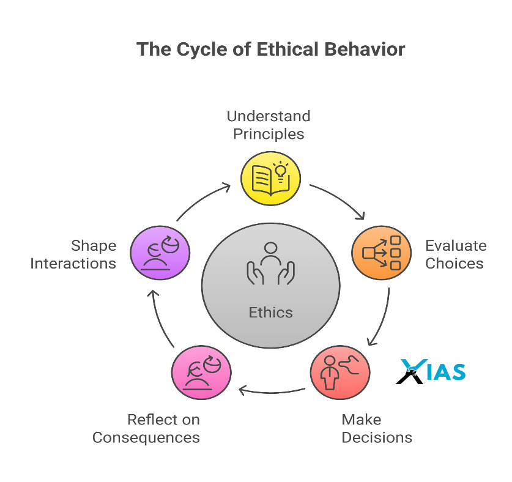
GS4-ETHI-0551 · Ethics, Integrity & Aptitude · Essence of Ethics
The Concept of a Good Life & Human Flourishing
GS4-ETHI-0552
Introduction
Philosophers across traditions have asked what constitutes a "good life" — a question central to ethics, going beyond material success to holistic human flourishing.
Concept
Good life — to realise every aspect of it: material, social, psychological, aesthetic, moral, ethical, human values.
Conclusion
A life lived well across these dimensions reflects the constitutional vision of dignity under Article 21, where material progress is matched by moral and social well-being.
Matsya Nyaya: Ancient State of Nature & Rule of Law
GS4-ETHI-0553
Introduction
Ancient Indian political philosophy used vivid metaphors to describe the state of anarchy — Matsya Nyaya remains one of the most cited in ethics and governance discourse.
Concept
Matsya Nyaya (Sanskrit: मात्स्यन्याय; IAST: mātsyanyāya) — an ancient Indian philosophy. It stands for the principle of the Law of Fish.
It is the fundamental law of nature. The proverb explains it: the big fish devouring the smaller fish — the strong devour the weak.
Conclusion
This concept underlines why a just, rule-of-law-based state is essential to prevent the strong from preying on the weak — a rationale embedded in India's constitutional commitment to equality and justice.
DR. CSE — REPLICA · INTRO TO CONCLUSION180 / 217
Dr. CSE — Replica
Values vs Ethics: Conceptual Distinction
GS4-ETHI-0554
Introduction
Though often used interchangeably, values and ethics are conceptually distinct — one is a personal belief, the other a reasoned social framework.
Concept
Values — the important, lasting beliefs a person holds about good/ bad, desirable/ undesirable.
Ethics — a reasoned framework of principles built to govern human conduct; it looks at the good of individual and society.
Conclusion
Understanding this distinction helps a civil servant recognise when personal values must yield to the broader ethical and constitutional framework of public duty.
Indian Philosophical Perspectives on Life & Experience
GS4-ETHI-0555
Introduction
Indian philosophical traditions offer rich metaphors for understanding the purpose and texture of human life, shaping indigenous approaches to ethics.
Concept
For the Hindu texts, life itself is 'Anubhav Dhara' — a series of experiences.
Conclusion
Such traditional wisdom continues to inform India's ethical discourse, complementing modern constitutional values with timeless civilisational insight.
Righteousness and Character: Societal Harmony Chain
GS4-ETHI-0557
Introduction
Classical Indian thought links individual character to societal and even global order, visualised here as a chain running from personal righteousness to world peace.
Concept
The diagram shows the linkages: Righteousness leading to World Peace, Order in Nation, Harmony in Home, and Good Character.
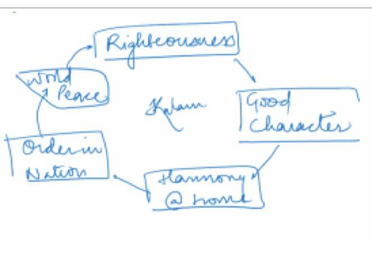
GS4-ETHI-0557 · Ethics, Integrity & Aptitude · Essence of Ethics
Conclusion
This chain of righteousness mirrors the constitutional aspiration that individual integrity (Art. 51A) ultimately sustains social harmony and national order.
Dimensions of Ethics
GS4-ETHI-0563
Quote
“Ethics is nothing but a sense of responsibility that extends beyond oneself.” – S. Radhakrishnan
Introduction
Ethics operates across personal, interpersonal, societal, professional, and global domains. Each domain demands the same consistent values; together they shape one's moral reasoning and conduct in diverse situations.
Examples
Irom Sharmila's fast was personal ethics in action against perceived state violence.
President Rajendra Prasad's neutrality in office was a lesson in institutional ethics.
India's global climate stance carries ethical responsibility at the international level.
Conclusion
When these dimensions work in harmony, personal virtue and social duty coexist — that is ethical maturity.
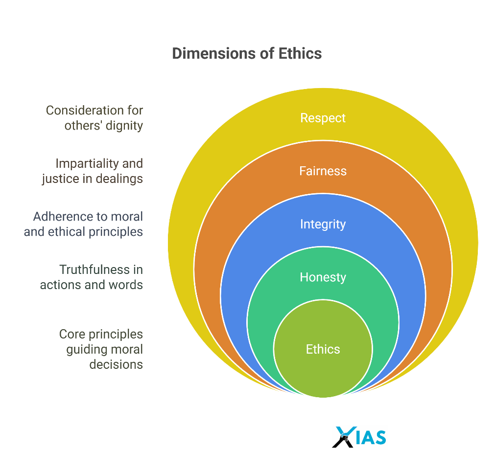
GS4-ETHI-0563 · Ethics, Integrity & Aptitude · Essence of Ethics
Ethics in Private and Public sphere
Ethics in Private Relationships
GS4-ETHI-0559
Quote
“Values must be practiced first in the home, then in society.” – Dr. A.P.J. Abdul Kalam
Introduction
Private relationships train us in moral values — trust, empathy, loyalty, and responsibility. Later, these same values show up in a person's public conduct and character.
Examples
Gandhi's confession to his father showed the deep-rooted honesty and guilt possible in personal relationships.
Sonu Sood's humanitarian work grew out of familial values and upbringing.
PM Modi's devotion to his mother reflects humility and rooted ethics.
Conclusion
Private morality forms the core of public ethics: a strong personal value system feeds stronger social and institutional ethics.
DR. CSE — REPLICA · INTRO TO CONCLUSION181 / 217
Dr. CSE — Replica
Ethics in Public Relationships
GS4-ETHI-0560
Quote
“Public service must be more than doing a job efficiently; it must be a complete dedication to the people.” – Margaret Chase Smith (U.S. Senator, 1897–1989)
Introduction
Public relationships demand fairness, transparency, impartiality, and responsiveness. With these, public servants exercise their duties with integrity and accountability.
Examples
E. Sreedharan's leadership on metro projects showed honesty and public dedication.
S. R. Sankaran's service to bonded labourers kept empathy in governance alive.
COVID-19 frontline officials put their own safety at risk — duty-bound ethics in action.
Conclusion
Ethical public conduct builds institutional trust and keeps governance citizen-centric and morally accountable.
Private Morality vs Public Integrity: Consistency
GS4-ETHI-0561
Introduction
Ethical conduct expected in public office does not always carry over into a person's private life — a gap that raises hard questions about the true test of integrity.
Examples
Example: an IPS officer of the MP cadre was video-recorded beating his wife. His professional integrity — not harming the vulnerable section — becomes highly doubtful despite his public role.
Concept
Adherence to laws may not be followed in the private sphere of life.
Conclusion
True integrity demands consistency between private conduct and public duty — a civil servant's character cannot be compartmentalised, since both reflect the same moral core.
Normative Ethics (Deontology vs Teleology)
Consequentialism vs Deontology in Administrative Decisions
GS4-ETHI-0564
Introduction
Normative ethics is broadly divided between consequentialist theories, which judge actions by their outcomes, and deontological theories, which judge actions by adherence to duty or rules.
Concept
Deontological theory — Kant.
Consequentialism (JS Mill, Bentham) — covers utilitarian and common-good thinking.
Conclusion
Most governance decisions require balancing both lenses — weighing outcomes while respecting non-negotiable rights, a synthesis visible in India's rights-based Constitution (deontological) alongside its welfare-oriented DPSPs (consequentialist).
Means and Ends in Historical Perspective
GS4-ETHI-0565
Introduction
The freedom struggle offers a classic illustration of how differing ethical approaches — moderate and revolutionary — can be judged by their shared outcome rather than their differing methods.
Examples
Moderates vs Extremists / Revolutionary Movement — all paths led to Independence.
Here the ends justify the means; every set of freedom fighters is equally respected.
Conclusion
This plurality of method under one goal shows that consequentialist reasoning can accommodate diverse moral paths, provided the end served is just and widely legitimate.
DR. CSE — REPLICA · INTRO TO CONCLUSION182 / 217
Dr. CSE — Replica
Consequentialist Reasoning in Statecraft & Security
GS4-ETHI-0566
Introduction
Consequentialist reasoning often underlies hard state decisions, where outcomes for the collective are weighed above the ethics of any single act in isolation.
Examples
Consequentialism: keeping nuclear weapons as a deterrent.
Going to war for national interest.
Welfare of the state comes first — our constitution says so (unity, integrity in the Preamble).
Conclusion
While consequentialism justifies difficult state choices, it must still be checked by constitutional limits, lest "national interest" become a cover for unchecked power.
Deontological Principles in Human Rights Policy
GS4-ETHI-0567
Introduction
Deontological ethics insists that certain duties and rights must be honoured regardless of outcome — a principle that has shaped some of India's most significant policy choices.
Examples
Deontology: upholding human rights, as the work of the UNHCR does.
Why India has not jumped straight from socialism to capitalism — the justice approach.
Gandhi's withdrawal of the NCM.
Conclusion
Grounding policy in deontological respect for rights and due process safeguards against the excesses that pure outcome-based reasoning can sometimes justify.
Role of Educational institutions
Role of Educational Institutions in Inculcating Values
GS4-ETHI-0573
Quote
“Education must build character before it builds careers.” – Swami Vivekananda
Quote
"Gandhi: real education is not packing the brain with info, facts, figures or passing exams by reading the prescribed number of books, but by developing the right character." "Swami Vivekananda: we must have life-building, man-making, character-building education."
Introduction
The classroom is where ethical citizenship first grows — educational institutions turn intelligence into wisdom. With curriculum, mentorship and peer culture, they plant empathy, service, and moral reasoning in the next generation.
Examples
CBSE uses value education modules to build life skills, empathy, and ethics.
At TISS, field immersion and reflection push students toward ethical public engagement.
Navodaya Vidyalayas pass on discipline, fraternity, and national integration.
Conclusion
When education is rooted in values, it gives society more than professionals — it gives public-spirited individuals, rich in both knowledge and character.
Pedagogical Mechanisms for Value Inculcation
GS4-ETHI-0574
Introduction
Value education is not transmitted through lecture alone — it relies on structured mechanisms that reinforce desired behaviour over time.
Concept
Value education — works through a reward and punishment mechanism, and through teachers of impeccable character.
Conclusion
Embedding such mechanisms across the schooling system can help bridge the gap between knowing values and living them.
DR. CSE — REPLICA · INTRO TO CONCLUSION183 / 217
Dr. CSE — Replica
Moral Narratives & International Soft Power
GS4-ETHI-0575
Introduction
Stories and restraint — rather than coercion — often carry the deepest ethical lessons, a truth visible both in childhood education and in the conduct of nations.
Examples
Ordinary Citizens and Values — moral stories teach children life lessons.
Soft power — the 1971 Bangladesh war: India did not overtake the new nation. That restraint added to our moral power and our adherence to the Panchsheel principles.
The PM's gift of the GITA — a dialogue on ethics more than religion.
Japan's soft power — the teachings of Taoism and Buddhism.
Confucian thought sits behind Chinese diplomacy.
Conclusion
Just as moral stories shape individual character, a nation's ethical restraint on the world stage becomes a form of soft power rooted in principle rather than force.
Transformative Role Models in Education
GS4-ETHI-0576
Introduction
Positive role models in education demonstrate that true teaching lies in adapting methods to the learner, not discarding the learner who struggles.
Examples
Positive: a teacher who does not shun a student but finds innovative ways to teach — Sonam Wangchuk.
Conclusion
Such educators embody the ethical core of teaching — patience, innovation, and faith in every student's potential.
Term Based
Ethics and Law Interface
GS4-ETHI-0568
Quote
“Law and order are the medicine of the body politic and when the body politic gets sick, medicine must be administered.” – Dr. B.R. Ambedkar
Introduction
Law draws the external boundaries of behaviour; ethics rules the internal compass. Ethics reaches for the ideal and often asks for more than the law does — the two reinforce each other.
Examples
Ashok Khemka's transfer history stands as ethical resistance to legal misuse.
Gandhi's Civil Disobedience put ethical pressure on legally valid but unjust laws.
Through PILs, judicial activism often reads law through ethical reasoning.
Conclusion
Law without ethics is coercion; ethics without law is vulnerability. Together they deliver justice with conscience and accountability.
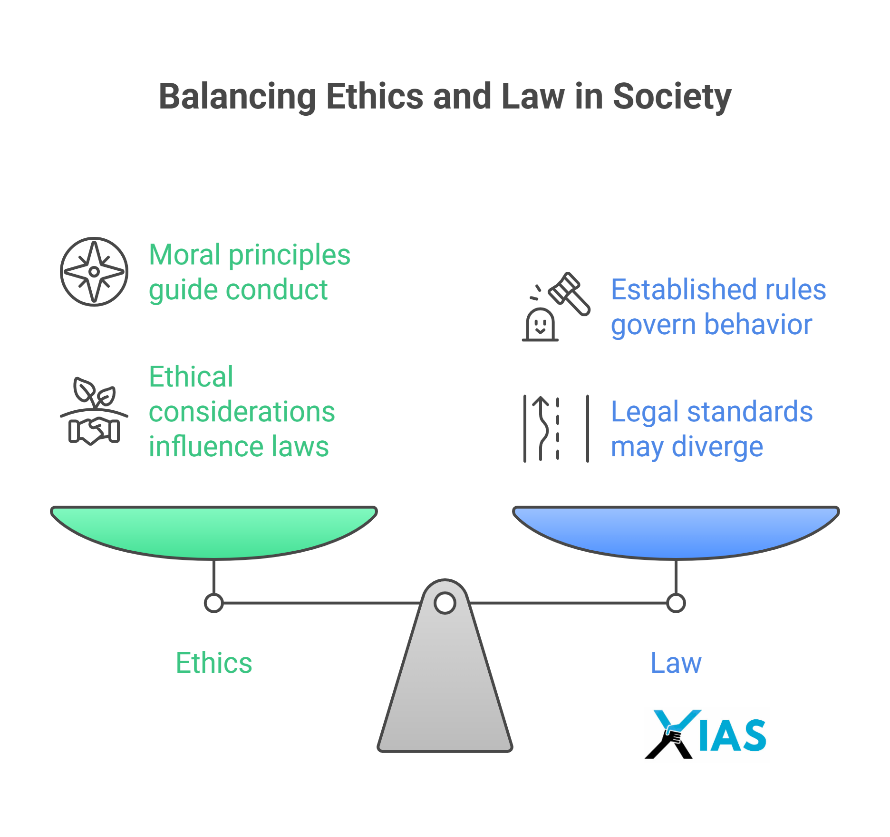
GS4-ETHI-0568 · Ethics, Integrity & Aptitude · Term Based
Value Based Questions
Meaning and Scope of Human Values
GS4-ETHI-0578
Quote
“Where there is righteousness in the heart, there is beauty in the character.” – Dr. A.P.J. Abdul Kalam
Introduction
Human values are the invisible architecture of human dignity and ethical purpose. They are inner moral ideals that lift behaviour from instinct to intention, from habit to humanity — the moral base on which civilisation stands.
Examples
Raja Ram Mohan Roy's reformist zeal grew from the value of human dignity.
Gandhi's Satya and Ahimsa gave the non-violent struggle its spiritual core.
Through the Aspirational Districts Programme, NITI Aayog pushes equity and justice for the most underserved.
Conclusion
Human values grow the soul of a just society — development then rests on compassion, fairness, and dignity for all.
DR. CSE — REPLICA · INTRO TO CONCLUSION184 / 217
Dr. CSE — Replica
Role of Family in Inculcating Values
GS4-ETHI-0579
Quote
“The family is the first school of social and moral learning.” – Jawaharlal Nehru
Quote
"Winston Churchill has rightly said, 'There is no doubt that it is around the family that all the greatest institutions are created, strengthened and maintained'."
Introduction
Family is the crucible where the first moral impressions are forged. It teaches less by rules than by example, steering a child's compass through unspoken lessons in empathy, honesty, and discipline.
Examples
Gandhi's respect for truth took root in his mother's spiritual discipline.
Dr. Kalam credited his father with teaching him honesty and austerity.
Many civil servants trace their service ethics to family role-modelling.
Conclusion
A family rich in values raises ethical citizens — public integrity is laid on the foundation of private morality.
Role of Society in Inculcating Values
GS4-ETHI-0580
Quote
“Society is the mirror where we refine our character.” – Dr. S. Radhakrishnan
Quote
"Plato has correctly said, 'What is honoured in a society is cultivated there'."
Introduction
Society works as a collective moral ecosystem: it shapes ethics through traditions, culture, peer behaviour, and collective narratives. On its stage, personal values are either reinforced or resisted.
Examples
LGBTQ+ rights find growing societal acceptance — a sign of inclusivity and empathy.
Environmental and indigenous values powered the movement called Narmada Bachao Andolan.
Solidarity and compassion marked the COVID-19 community kitchens.
Conclusion
A just society nurtures ethical reflexes — moral action becomes the norm, not the exception, in public and private life.
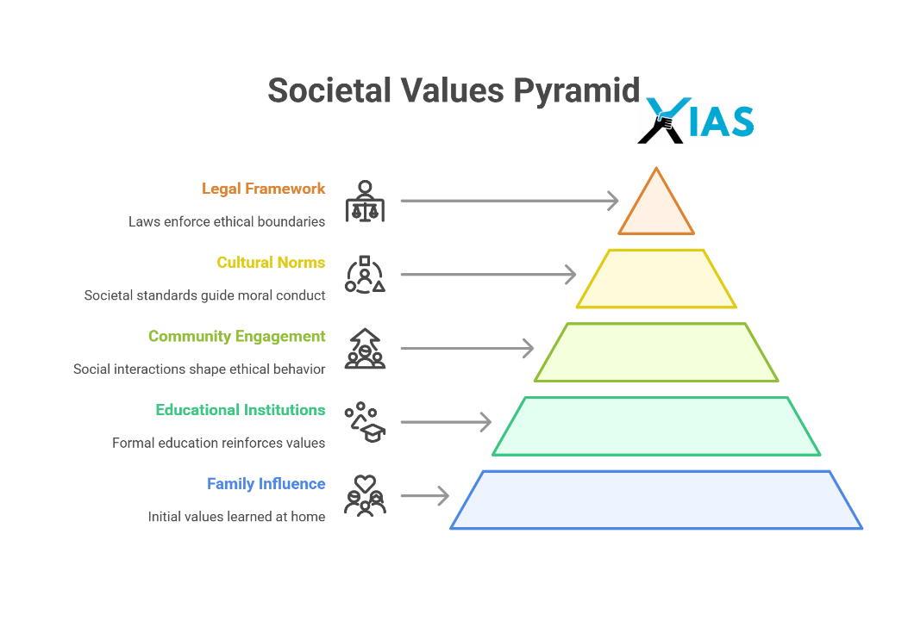
GS4-ETHI-0580 · Ethics, Integrity & Aptitude · Value Based Questions
Positive attitude is an optimistic, constructive and solution-oriented disposition towards people, situations and challenges.
For civil servants operating under resource constraints, political pressures and administrative complexity, a positive attitude supports resilience, innovation and effective public-service delivery.
Concept
Role of positive attitude in a civil servant.
Helps one stay optimistic.
Treats problems as challenges, not insurmountable barriers.
Lifts productivity and efficiency.
Resilience.
Motivates; makes one visionary.
Teaches valuable lessons from problems.
Opens up new possibilities.
Ego-defensive function.
Significance: conflicting goals; lack of resources; political interference; delays; time-taking procedures.
Constructively engaging with difficult stakeholders.
Learning from policy failures rather than avoiding responsibility.
Encouraging teamwork and citizen participation.
Caution: optimism must remain grounded in evidence and accountability rather than becoming unrealistic confidence.
Conclusion
A constructive attitude helps civil servants transform administrative obstacles into opportunities for improvement.
Positive behaviour also creates spillover effects across teams and institutions — demonstrating that attitude defines one's altitude in ethical public service.
The CAB Framework for Cultivating Constructive Attitudes
GS4-ETHI-0618
Introduction
A positive attitude is neither entirely innate nor permanently fixed. It develops through learning, socialisation, emotional experiences and repeated behaviour.
The Cognitive-Affective-Behavioural (CAB) framework helps explain how civil servants can consciously cultivate constructive attitudes.
Concept
Factors of positive attitude — happiness curriculum, mindfulness, family conditioning, communication and cooperation.
Cognitive: life and work of role models; Happiness curriculum; Mindfulness; Communication; Philosophical knowledge; Life wisdom; Skill levels. Add to these an attempt to look for overt and hidden benefits in every situation.
Affective: happiness tied to duty; alignment with personal beliefs/ethics; Family conditioning.
Behavioural: past experience proving one can handle things well.
Cognitive interventions: reflective learning, exposure to ethical role models and evidence-based thinking.
Affective interventions: emotional regulation, empathy, mindfulness and positive workplace relationships.
Behavioural interventions: repeated problem-solving, teamwork, successful public engagement and constructive feedback.
Institutional application: training programmes can combine knowledge-building, emotional intelligence and practical field exposure.
Conclusion
Developing positive attitudes requires simultaneous attention to thoughts, feelings and actions.
Continuous learning, supportive institutions and reflective practice can help civil servants sustain motivation while delivering empathetic and effective governance.
Attitude for Individuals
Content of Attitude
GS4-ETHI-0620
Quote
“Watch your thoughts, they become words... your destiny.” – Frank Outlaw (1977)
Introduction
Attitude is a structured mental orientation toward a person, object, or idea — built from beliefs, emotions, and behavioural intentions. It acts as the psychological filter through which a person reads and reacts to the world.
Examples
A positive attitude towards public service led IAS officer Arunraj K to teach underprivileged students voluntarily.
Social media trolling often grows out of negative attitudes built on bias and misinformation.
The Swachh Bharat campaign aimed to change public attitudes towards cleanliness, not just build infrastructure.
Conclusion
Understanding attitude content helps shape constructive behaviour; it feeds rational thinking, empathy, and proactive public engagement.
DR. CSE — REPLICA · INTRO TO CONCLUSION186 / 217
Dr. CSE — Replica
Structure of Attitude
GS4-ETHI-0621
Quote
“What we think, we become.” – Gautama Buddha
Introduction
Attitude has a tripartite structure: cognitive (belief), affective (feeling), and behavioural (intention). Working together, these components form a stable psychological disposition — the lens through which people judge and react to stimuli.
Examples
In hiring, gender bias usually grows from cognitive stereotypes, emotional discomfort, and discriminatory behaviour.
The Clean Ganga Mission rests on belief in sacredness, emotional attachment, and volunteering actions.
Public attitude towards disability is moving from sympathy to inclusion — across all three dimensions.
CAB Model for Attitude Formation
Cognitive (C): beliefs, perceptions, knowledge, and stereotypes.
Affective (A): emotional responses such as fear, attraction, or resentment.
Behavioural (B): intended or observed actions shaped by beliefs and emotions.
Everyday Superstition Illustration: In traditional social norms, attitudes often follow the CAB triad — Cognitive (cultural myth), Affective (fear of misfortune), and Behavioural (avoidance habit). A person may avoid a particular activity because of an inherited myth (cognitive), anxiety over negative outcomes (affective), and past conditioning (behavioural).
Policy Application: Effective behavioural-change campaigns must address all three components concurrently rather than relying solely on informational dissemination.
Conclusion
Dissecting the structure of attitude enables targeted reforms — reaching what people think, and also how they feel and act.
This integrated approach is particularly relevant to behavioural-change initiatives such as Swachh Bharat Mission and public-health awareness campaigns.
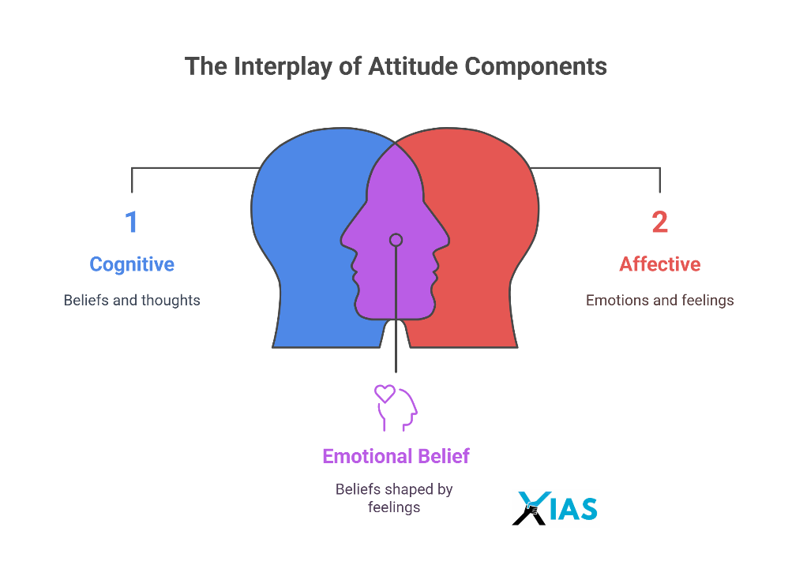
GS4-ETHI-0621 · Ethics, Integrity & Aptitude · Attitude for Individuals
Functions of Attitude
GS4-ETHI-0622
Quote
“We are kept from our goal not by obstacles, but by a clear path to a lesser goal.” – Robert Brault
Introduction
Attitudes serve key functions — adaptive, ego-defensive, value-expressive, and knowledge-based. These help people move through complex environments while keeping psychological stability and social identity.
Examples
Caste prejudices work as ego-defensive functions, justifying inherited privilege.
During disaster relief, patriotism in national service plays a value-expressive function.
Voting choices often follow the knowledge function — a shortcut through political complexity.
Conclusion
Recognising attitude functions enables tailored policy interventions — resistance turns into acceptance, apathy into participation.
For public administrators, understanding these functions supports behavioural-change strategies that respect autonomy while promoting constitutional values.
DR. CSE — REPLICA · INTRO TO CONCLUSION187 / 217
Dr. CSE — Replica
Formation of Attitude
GS4-ETHI-0623
Quote
“Man is by nature a social animal.” – Aristotle, Politics
Introduction
Attitudes take shape through socialisation, experience, conditioning, role models, and media exposure. Over time they evolve, shaped by family, culture, institutions, and life events.
Examples
Children often absorb stereotypes about manual labour from family and societal messaging.
Positive attitudes form early when school campaigns push gender equality.
When media glorifies violence, aggressive or insensitive attitudes can take root in the young.
Conclusion
Early and ethical attitude formation matters greatly for raising citizens who are socially conscious and emotionally intelligent.
Families, educational institutions and public authorities must collectively promote attitudes consistent with fraternity, equality and constitutional morality.
Attitude-Behaviour Relationship
GS4-ETHI-0624
Quote
“Action is the real measure of intelligence.” – Napoleon Hill
Introduction
Attitudes influence behaviour, but social pressure, opportunity, and perceived consequences moderate that link. When belief and action align, a person shows authenticity and ethical consistency.
Examples
A civil servant may prize honesty, yet stay silent amid corruption out of fear or peer pressure.
RTI activists act on attitudes of transparency, turning belief into action.
Plastic bans often fail: attitudes are positive, but behaviour does not change because convenience wins.
Conclusion
Bridging the attitude-behaviour gap takes more than awareness — it needs supportive environments, courage, and value reinforcement.
Behavioural interventions should therefore combine ethical education with enabling institutions, incentives and accountability.
EI X Crisis of Conscience
Resolving Crises of Conscience in Public Duty
GS4-ETHI-0634
Introduction
A crisis of conscience arises when personal values clash with duty, expediency, or external pressure, demanding ethical introspection. Diverse moral traditions — from the Bhagavad Gita to Baha'i teachings — offer complementary pathways to resolve such dilemmas.
Concept
Mahabharata — the best way through a crisis of conscience: follow dharma without attachment to the fruits of one's actions — karmanyevaadhikaaraste
To resolve a crisis of conscience, the Baha'i teachings point to:
Equity and justice
Mercy and kindness
Compassion for all of humankind
Conclusion
Civil servants facing a crisis of conscience can draw on both dharmic detachment and universal values of equity, mercy, and compassion to arrive at decisions that are duty-bound yet humane.
EI in Administration
Application of EI in Administration
GS4-ETHI-0636
Quote
"Man becomes great exactly in the degree in which he works for the welfare of his fellow men." – Mahatma Gandhi
Introduction
In administration, emotional intelligence shows up as the use of emotional insight — to manage people, defuse tensions, and resolve conflicts. All of it rests on ethical composure and social awareness.
Examples
In protests, Collectors who choose dialogue over force display EI in crisis.
Juvenile justice boards choose emotional restoration rather than punishment.
Public grievance cells call for calm, tactful engagement.
Conclusion
With EI, the emotional architecture of governance grows stronger; decisions turn humane, not merely procedural.
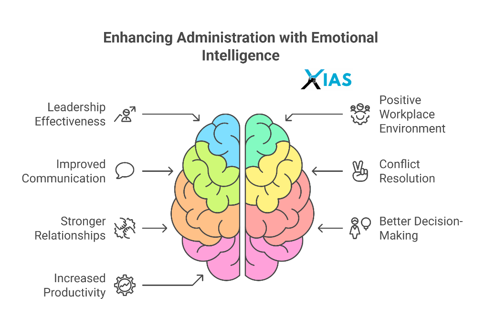
GS4-ETHI-0636 · Ethics, Integrity & Aptitude · EI in Administration
DR. CSE — REPLICA · INTRO TO CONCLUSION188 / 217
Dr. CSE — Replica
Building EI in Civil Services
GS4-ETHI-0637
Quote
"Character is the foundation upon which leadership is built." – Dr. S. Radhakrishnan
Introduction
Civil servants can build EI by methodically training emotional competencies — self-awareness, empathy, and social sensitivity. The tools: coaching, honest feedback, and learning by doing.
Examples
LBSNAA runs role-play, feedback, and mindfulness modules.
360-degree reviews build self-insight for leadership roles.
Peer learning on the Bharat Darshan builds empathy and cultural sensitivity.
Conclusion
Emotionally intelligent civil servants uphold ethics with compassion, enriching both policy and people through value-based conduct.
Emotional Intelligence in Public Administration: Real-Life Case Studies
GS4-ETHI-0638
Introduction
Emotional Intelligence (EI) equips civil servants to perceive, regulate, and apply emotions constructively while managing people, crises, and public sentiment — turning empathy and self-awareness into administrative effectiveness.
Examples
"Eg: IAS Divya Devarajan learnt the language of Gonds to solve their concerns."
Edison hired scientists — awareness in action
Wilma Rudolph — motivation against all odds
Geeta Phogat - won in 3rd round — regulating her emotions under pressure
Empathy — Kalam's team built light-weight prosthetics for patients
Social skill — Anna Hazare rallied Ralegan for water harvesting
During tense student protests in Aligarh, SSP Aakash Kulhari served hot tea and engaged in direct patient dialogue with protesting students, defusing communal flashpoints through emotional de-escalation rather than aggressive force.
PM declared lockdown — the tough call of lives over livelihood
Concept
"EI enables one to be empathetic and solve the problem constructively."
Conclusion
Across awareness, motivation, empathy, and social skill, EI consistently separates effective administrators from merely competent ones — reinforcing Goleman's insight that technical skill alone cannot substitute for emotional maturity in governance.
EI: Concept and utility
Definition and Relevance of Emotional Intelligence
GS4-ETHI-0641
Quote
"To handle yourself, use your head; to handle others, use your heart." – Jawaharlal Nehru
Introduction
Emotional Intelligence blends emotional awareness with cognitive regulation. It lets a person understand, manage, and applyemotions well — for ethical judgment, adaptive behaviour, and constructive human interaction.
Examples
IAS officers during COVID-19 responded with empathy to public panic.
The Chandrayaan-3 team managed emotional highs and lows with composure.
Police handling farmers' protests relied on emotional balance over force.
Conclusion
Emotional intelligence buildsemotionally stable institutions — empathy and ethics guide governance past rigid procedures.
"The first step in solving a problem is to recognize your role in creating it." – Dr. A.P.J. Abdul Kalam
Introduction
Self-awareness is the capacity to look inward at one's emotional states, values, and impulses. From it grow emotional self-regulation, authenticity, and ethical alignment, in personal and administrative life.
Examples
Dr. Kalam's humility grew out of conscious self-understanding.
Ira Singhal's resolve showed clarity of purpose and emotional identity.
LBSNAA's feedback exercises push introspection and ethical grounding.
Conclusion
Self-awareness cultivates moral clarity — public servants can then lead with inner balance and transparent intentions.
Self-regulation
GS4-ETHI-0643
Quote
"Calmness is the cradle of power." – Jawaharlal Nehru
Introduction
Self-regulation is the inner capacity to manage emotions, delay impulses, and hold equilibrium — above all under stress. It produces measured, ethical, and policy-aligned responses in public life.
Examples
During violent protests, IPS officers acted with restraint despite provocation.
Judges decline to react to public pressure, keeping courtroom neutrality.
Civil servants under political heat pick silence over reactive statements.
Conclusion
Self-regulation stabilises public authority — dignity, legality, and maturity hold even in emotionally charged situations.
Motivation
GS4-ETHI-0644
Quote
"Dreams are not what you see in sleep; dreams are those that do not let you sleep." – Dr. A.P.J. Abdul Kalam
Introduction
In emotional intelligence, motivation is the inner emotional drive toward meaningful goals. Purpose, resilience, and moral conviction sustain it — not external rewards.
Examples
Kiran Bedi's prison reforms grew out of an inner ethical passion.
Long-term goal commitment shows in ISRO scientists' perseverance.
In remote tribal areas, officers endure extreme hardship, driven by inner dedication.
Conclusion
Motivated public servants turn vision into action, keeping reforms alive despite adversity or institutional inertia.
"The best way to find yourself is to lose yourself in the service of others." – Mahatma Gandhi
Introduction
Empathy is the cognitive-emotional ability to understand others' emotions as if they were one's own. It grounds inclusive, sensitive, and dignity-driven governance in lived human realities.
Examples
Rohini Sindhuri stood by manual scavengers — an empathetic intervention.
The emotional distress of the displaced found an answer in COVID migrant camps.
Institutional empathy is visible in disability-inclusive designs across administration.
Conclusion
Empathy brings humanity into statecraft — delivery becomes dignity-based service.
DR. CSE — REPLICA · INTRO TO CONCLUSION190 / 217
Dr. CSE — Replica
Social Skills
GS4-ETHI-0646
Quote
"The art of communication is the language of leadership." – Dr. A.P.J. Abdul Kalam
Introduction
Social skills cover the emotionally intelligent behaviours of communication, collaboration, and conflict resolution — the base for trust-building, participatory governance, and effective team functioning.
Examples
Inter-agency coordination and clarity carry disaster response teams through.
Communication and persuasion decide how well Gram Sabha engagement works.
Mann Ki Baat is political outreach with emotional resonance.
Conclusion
Social skills make governance accessible and participatory — state and citizen start working together.
Ethics of Emotion: Seneca on Anger & Twain on Patriotism
GS4-ETHI-0647
Quote
"Anger, if not restrained, is frequently more hurtful to us than the injury that provokes it." – Seneca, De Ira (On Anger) "Patriotism is supporting your country all the time, and your government when it deserves it." – Mark Twain
Introduction
Self-regulation of emotions like anger, and the capacity for principled patriotism, are core dimensions of Emotional Intelligence relevant to a public servant's conduct and unswerving fidelity to constitutional values.
Conclusion
Mastering destructive anger (as Seneca counseled) and distinguishing enduring loyalty to the nation from uncritical obedience to transient political regimes reflect the emotional maturity and integrity essential to public office.
Theories of Emotional Intelligence: Goleman & Mayer-Salovey
GS4-ETHI-0648
Introduction
Psychologists have proposed multiple frameworks to explain emotional and cognitive intelligence, moving beyond a single IQ score to richer models of human capability relevant to leadership and administration.
Concept
Daniel Goleman's EI
Mayer and Salovey model
Gardner's Theory of Multiple Intelligences
Other views of intelligence have come up in recent years. Harvard psychologist Howard Gardner's theory of multiple intelligences is one such view.
5 components of EI according to Goleman — Self awareness; Self regulation; Motivation; Empathy; Social skill
Mayer and Salovey's 4-branch model: Perceiving emotions; Using them to facilitate thought; Understanding them; and finally Managing emotions
Goleman's components and the Mayer & Salovey model can both be drawn as diagrams.
Whether through Goleman's five components, Mayer & Salovey's four-branch model, or Gardner's multiple intelligences, these frameworks converge on one theme — effective public service demands emotional competence alongside cognitive skill.
DR. CSE — REPLICA · INTRO TO CONCLUSION191 / 217
Dr. CSE — Replica
The Dual Nature of Emotions: Rational Regulation
GS4-ETHI-0653
Introduction
Emotions can empower or undermine administrative judgement, depending on how they are managed. Recognising this dual nature — emotions working for us, and us becoming captive to emotions — is central to applying Emotional Intelligence in public life.
Concept
Emotions working for us: they resolve stress and depression; build a Positive attitude - 'it is possible'; power Empathy, bonding, understanding. They also balance work and leisure, make us role models, and aid conflict resolution. Criticism becomes constructive feedback for growth; mental health stays stable; Intrinsic motivation grows.
Us working for emotions: a poor work environment from workplace politics; communal tensions; reactionary policies; falling for propaganda; vulnerability to manipulation
Dark side of EI: Manipulation for self interest; adding to offence; Self interest over public interest
Conclusion
Too little emotion and too much emotion are both harmful; EI balances these extremes, creates steadiness, and helps one follow the Aristotelean mean of virtue ethics. EI forges a path not by removing emotions but by sifting out the ones irrelevant to the task or decision at hand.
Five Pillars of Personal Emotional Intelligence
GS4-ETHI-0655
Introduction
At an individual level, Emotional Intelligence can be broken down into five foundational pillars that together enable sound personal and professional functioning.
Concept
At the personal level, EI rests on 5 pillars:
knowing oneself (Self perception)
expressing oneself (Self expression)
relating to others (Interpersonal/ Relationship management)
sound Decision making
Stress management
Conclusion
These five pillars — self-perception, self-expression, interpersonal skill, decision-making, and stress management — form the bedrock on which Goleman's and Mayer-Salovey's broader EI models build, and are directly transferable to effective public administration.
EQ vs IQ
Intellect Combined with Emotional Discipline
GS4-ETHI-0656
Quote
"Warren Buffett: 'only when you combine sound intellect w/ emotional discipline do you get rational behaviour'"
Introduction
The EQ–IQ debate contrasts cognitive ability with emotional regulation; most thinkers today agree that neither alone suffices for sound judgement in complex, high-pressure roles like public administration.
Conclusion
As Buffett's observation suggests, rational and ethical decision-making emerges only when intellect is disciplined by emotional maturity — a lesson as relevant to civil servants as to investors.
Empathy and Compassion
Empathy
GS4-ETHI-0583
Quote
“Leadership is not about being in charge. It is about taking care of those in your charge.” – Narendra Modi
Introduction
Empathy — the ability to understand and share what others feel: their emotions, experiences and struggles. It bridges the gap between policy intent and lived realities, above all for the vulnerable.
Examples
IAS officer Rohini Sindhuri's work for manual scavengers showed deep human empathy.
During the lockdowns, district-level helplines for migrant workers grew from empathetic governance.
The PM's 'Mann Ki Baat' often shares stories that build public emotional connect.
Conclusion
Empathy creates emotionally intelligent leadership, so the state acts not like a machine but like a moral organism.
DR. CSE — REPLICA · INTRO TO CONCLUSION192 / 217
Dr. CSE — Replica
Compassion toward the Weaker Sections
GS4-ETHI-0584
Quote
“A nation's greatness is measured by how it treats its weakest members.” – Mahatma Gandhi
Introduction
Compassion is not charity; it is moral responsiveness. The inner call is to uplift the vulnerable with dignity. Governance must never neglect those most in need of care and protection.
Examples
During the pandemic, the PM Garib Kalyan Yojana brought the poor quick support.
Mission Antyodaya and DAY-NRLM are development models driven by compassion.
With tribal communities, IAS officers practise administration that is culturally sensitive and inclusive.
Conclusion
Compassion ensures justice reaches the last citizen — welfare turns from a policy on paper into a promise kept with empathy.
Administrative Empathy in Conflict Zones
GS4-ETHI-0585
Introduction
Empathy finds its sternest test in conflict and crisis zones, where officials must serve vulnerable populations despite personal risk.
Examples
A hospital for adivasis in Maoist areas — Eg: Tamboli Ayyaj.
Conclusion
Such acts of service in hostile environments embody empathy as duty, not mere sentiment — a hallmark of ethical public leadership.
Empathy as a Catalyst for Institutional Reform
GS4-ETHI-0586
Introduction
Empathy is not only a personal virtue but a driver of institutional reform, when officials translate compassion into systemic change.
Examples
To bring reform — empathy at work: Eg. IPS Kiran Bedi's prison reforms in Tihar jail.
Conclusion
Reform driven by empathy humanises institutions that might otherwise become mechanical or indifferent to those they are meant to serve.
Humanitarian Compassion in Cross-Border Crises
GS4-ETHI-0587
Introduction
Compassion in governance is tested most sharply in refugee crises, where states must choose between security concerns and humanitarian obligation.
Examples
Bangladesh helped the Rohingyas rather than condemning them.
Conclusion
Such gestures of compassion, even amid resource constraints, reflect the universal ethical principle that human dignity transcends national boundaries.
Grassroots Administrative Interventions for De-Notified Tribes
GS4-ETHI-0588
Introduction
Civil servants often become agents of social transformation when they direct administrative energy toward historically marginalised communities.
Examples
Nagendra Prasad, Rural Dept of UP — uplifted the Bawariya community out of poverty and prejudice.
Conclusion
Such grassroots interventions embody the constitutional promise of social justice (Art. 46) for the most excluded sections of society.
Altruism as a Public Service Duty
GS4-ETHI-0589
Introduction
Altruism — acting for the welfare of others without expectation of return — finds both philosophical and constitutional expression in Indian public life.
Concept
Altruism — treating help to others as a moral obligation; reflected in DPSP, surrogacy, Art 15(2).
Conclusion
When altruism is institutionalised through law and policy, individual virtue becomes systemic protection for the vulnerable.
Foundational values
Aptitude – Meaning and Relevance
GS4-ETHI-0590
Quote
“Excellence happens not by accident. It is a process.” – Dr. A.P.J. Abdul Kalam
Introduction
Aptitude — an ability, inborn or learnt, to understand, act, and adapt well in a given context. It combines mental sharpness, emotional regulation, and ethical clarity, the base of sound public decision-making.
Examples
Consistent preparation made IAS topper Pradeep Singh a case of analytical aptitude with emotional discipline.
In disaster zones, District collectors show crisis aptitude along with empathetic field leadership.
Under pressure, Aptitude tests in UPSC exams measure problem-solving, comprehension, and judgment.
Conclusion
Aptitude keeps efficiency tied to integrity — civil servants stay competent, sensitive and ethically balanced as governance settings change.
DR. CSE — REPLICA · INTRO TO CONCLUSION193 / 217
Dr. CSE — Replica
Objectivity
GS4-ETHI-0591
Quote
“Facts are sacred; opinion is free.” – C. P. Scott (1921)
Introduction
Objectivity is the ability to decide on evidence, logic, and fairness — not on emotions, bias, or external pressures. Equitable governance and rational public service delivery depend on it.
Examples
Evidence-based decision-making got a permanent place through the Right to Information (RTI).
Objective and neutral by design — the standard for UPSC interview panels.
With e-governance tools such as the JAM trinity, subjectivity in welfare distribution falls.
Conclusion
Objectivity lets fairness prevail over favouritism, giving public institutions credibility and predictability.
Dedication to Public Service
GS4-ETHI-0592
Quote
“The best way to find yourself is to lose yourself in the service of others.” – Mahatma Gandhi
Introduction
Where there is dedication to public service, collective welfare comes before personal gain. Duty becomes devotion; the office becomes an instrument of justice and compassion.
Examples
IAS Armstrong Pame built roads in Manipur out of selfless administrative commitment.
During COVID-19, healthcare workers embodied sacrifice for public well-being.
Under constant risk, civil servants in LWE regions provide unwavering service.
Conclusion
With dedication comes ethical resilience — the quality that makes civil servants true agents of inclusive and responsive governance.
Tolerance & Multiple Truths: Anekantavada
GS4-ETHI-0594
Introduction
Tolerance is the willingness to respect beliefs, perspectives and practices different from one's own. In India's pluralistic society, tolerance is essential for peaceful coexistence, democratic dialogue and ethical public administration.
Indian philosophy offers the ideas of Anekantavada and Sarva Dharma Sama Bhava as foundations for intellectual humility and mutual respect.
Concept
'Ekam sat viprah Bahudha vadanti' — Truth is one; the learned interpret it differently.
Hence we should nurture the Sarva dharma sam bhava spirit.
Anekantavada — multiple truths lead to tolerance.
Anekantavada, a Jain philosophical doctrine, emphasises the many-sided nature of reality and the limitations of any single viewpoint.
Administrative application: respecting diverse community perspectives during public consultations, conflict resolution and policy implementation.
Ethical significance: encourages open-mindedness, dialogue, non-discrimination and freedom from dogmatism.
Quote
"Truth alone triumphs in long run (Mundaka Upanishad)."
Conclusion
Tolerance should not imply acceptance of injustice; it must operate within the boundaries of constitutional morality. By combining Anekantavada with Articles 14, 25 and 51A(e), civil servants can promote fraternity, religious harmony and inclusive governance.
DR. CSE — REPLICA · INTRO TO CONCLUSION194 / 217
Dr. CSE — Replica
THE 5 E's OF CIVIL SERVICE
GS4-ETHI-0596
Introduction
Civil service requires more than administrative competence. Effective governance must combine professional capability with human sensitivity and moral responsibility.
The 5 E's of Civil Service provide a practical framework for evaluating the quality of public administration and ethical decision-making.
Efficiency: optimal utilisation of public resources, minimising waste and delays.
Empathy: understanding citizens' difficulties, particularly those of vulnerable groups.
Ethics: maintaining honesty, accountability, transparency and integrity.
Equity: ensuring fairness and addressing disadvantages faced by marginalised communities.
Effectiveness: achieving intended policy outcomes and measurable public welfare.
Application: A district collector implementing welfare schemes must ensure timely delivery (Efficiency), understand beneficiaries' difficulties (Empathy), prevent corruption (Ethics), prioritise vulnerable groups (Equity), and achieve actual improvements in living standards (Effectiveness).
Conclusion
The 5 E's transform administration from a procedural exercise into citizen-centric public service.
Their integration supports the Second Administrative Reforms Commission's emphasis on ethics in governance and advances the constitutional objectives of justice, equality and dignity.
Constitutional Values & Fundamental Duties (Article 51A)
GS4-ETHI-0597
Introduction
Constitutional values represent the moral foundations of India's democratic republic, including justice, liberty, equality and fraternity.
While Fundamental Rights protect individual freedoms, Fundamental Duties under Article 51A remind citizens of their ethical responsibilities towards society and the nation.
Concept
Constitutional values: FD (Fundamental Duties) — to promote harmony and the spirit of common brotherhood.
FD — strive towards excellence in all spheres of individual and collective activity.
Article 51A(e): promote harmony and the spirit of common brotherhood transcending religious, linguistic and regional diversities.
Article 51A(j): strive towards excellence in all spheres of individual and collective activity.
Article 51A(h): develop scientific temper, humanism and the spirit of inquiry and reform.
Public-service application:
Impartial administration promotes harmony.
Professional competence reflects the duty of excellence.
Fundamental Duties convert constitutional ideals into everyday ethical responsibilities.
For civil servants, adherence to Article 51A strengthens constitutional morality and promotes governance rooted in excellence, fraternity and public welfare.
DR. CSE — REPLICA · INTRO TO CONCLUSION195 / 217
Dr. CSE — Replica
Philosophical Foundations of Selfless Service
GS4-ETHI-0599
Introduction
Selfless service is the ethical principle of placing collective welfare above personal rewards. Indian philosophical traditions have consistently associated moral excellence with compassion, duty and service to humanity.
For civil servants, these ideals provide the moral foundations of dedication to public service.
Keywords
Nishkaam karma, Altruism/sewa, Compassion, Trusteeship, Antyodaya, Dedication to public service.
Kautilya's Yogakshema (welfare of all).
Buddha's 8-fold path to end suffering.
Vivekananda's Daridra Narayan (serve the divine in the poor).
Concept
The common thread in philosophers' inquiry: understanding one's purpose and one's true nature.
They have recommended religion, education, experimentation; Gandhi recommends selfless service.
Nishkama Karma: performing one's duty without attachment to personal rewards, as emphasised in the Bhagavad Gita.
Antyodaya: prioritising the welfare of the last and most disadvantaged person.
Trusteeship: Gandhi's idea that wealth and resources should be used responsibly for society's benefit.
Examples
Spirit of service.
An IAS officer who went and lived with the Naxalites.
IAS G Rajamanikyan and IAS NSK Umesh carried rice bags to flood-hit remote areas.
Such actions demonstrate how ethical convictions can translate into personal sacrifice and responsive administration.
Conclusion
The shared message of Kautilya, Buddha, Vivekananda and Gandhi is that public authority gains legitimacy through service.
Embedding Nishkama Karma, Antyodaya and compassion in administration advances the constitutional promise of social justice and citizen-centric governance.
Spirit of Duty & Professional Fortitude
GS4-ETHI-0601
Introduction
Spirit of duty refers to fulfilling professional responsibilities despite personal discomfort, while fortitude is the moral courage to withstand adversity, pressure and hardship.
Together, they enable civil servants to uphold public interest even when circumstances are personally demanding.
Examples
IAS Ashok Khemka was transferred over 55 times across a 33-year career for uncovering land scams and corruption, while IPS D. Roopa faced over 40 transfers in 20 years for unyielding, fearless enforcement.
Spirit of duty: civil servants who rejoin duty immediately after medical or family crises to manage emergencies.
Resilience against political or institutional pressure.
Willingness to prioritise public service during emergencies.
Maintaining integrity despite personal inconvenience.
Important distinction: dedication should not require sacrificing legitimate health, maternity or family rights; ethical administration must also respect human dignity.
Conclusion
Professional fortitude gives meaning to the civil-service ideal of service before self, but must remain compatible with humane working conditions.
Institutional protection against arbitrary transfers and respect for constitutional dignity under Article 21 can help officials perform their duties with independence and integrity.
Impartiality and Non-Partisanship
Impartiality & Public Integrity: Conflict of Interest
GS4-ETHI-0603
Introduction
Impartiality means performing public duties without favouritism, prejudice or personal bias. Integrity requires consistency between moral principles and actual conduct.
These foundational civil-service values are especially tested when professional obligations conflict with personal relationships.
Examples
As DCP Traffic, Kiran Bedi ordered the towing of Prime Minister Indira Gandhi's official car for a parking violation, establishing that the rule of law applies equally to all without VIP favouritism.
Lal Bahadur Shastri voluntarily reimbursed the state for personal miles driven in his official car and cancelled his own son's out-of-turn promotion, subordinating familial interests to public duty.
Ethical principle: equality before law must prevail over familial or political loyalty.
Conflict of interest: personal relationships must never compromise official impartiality.
Rule of law: administrative authority must be exercised fairly, regardless of social or official status.
Institutional safeguard: where personal ties create a conflict, voluntary disclosure and recusal protect institutional credibility.
Conclusion
Impartiality becomes meaningful when civil servants apply the same standards to themselves and their associates as to ordinary citizens.
Such conduct strengthens Article 14, reinforces public trust and advances the Second Administrative Reforms Commission's vision of ethical governance.
Integrity
Leadership by Example in Public Administration
GS4-ETHI-0605
Introduction
Leadership by example means demonstrating through personal conduct the values that one expects others to follow.
In public administration, such leadership strengthens credibility because citizens judge officials not merely by their statements but by their everyday choices.
Examples
"Eg: IAS Pankaj Jain sent his daughter to local Anganwadi, instead of private school."
Ethical significance:
Demonstrates personal confidence in public institutions.
Reduces the gap between policy-makers and ordinary beneficiaries.
Encourages accountability for service quality.
Reflects consistency between public advocacy and private behaviour.
Administrative application: officials who personally use public services can better understand delivery gaps and encourage improvements.
Conclusion
Leadership by example transforms authority into moral influence and inspires trust without coercion.
When civil servants demonstrate personal commitment to public institutions, they reinforce integrity, accountability and the constitutional ideal of equality.
DR. CSE — REPLICA · INTRO TO CONCLUSION196 / 217
Dr. CSE — Replica
Integrity as the Indispensable Foundation of Competence
GS4-ETHI-0606
Introduction
Integrity is the consistent adherence to moral principles across thoughts, words and actions, even without external supervision.
It is the foundation of ethical leadership because intelligence and energy, when separated from moral responsibility, can become instruments of exploitation rather than public welfare.
Concept
Integrity is the foundation of all ethical values.
Success needs intelligence and energy; yet the discipline and consistency to act in the right direction stay guarded by integrity.
Integrity + Intelligence + Energy: competence becomes socially beneficial only when guided by ethical judgment.
Integrity without competence: good intentions may fail to deliver results.
Competence without integrity: technical knowledge can facilitate sophisticated wrongdoing.
Integrity in educational settings: students who never cheat, even on high-stakes exams where they could otherwise fail.
Examples
Josef Mengele - Auschwitz camp doctor — his medical training was put to use in unethical human experimentation on prisoners.
Kalam (the Missile Man) put his emphasis on education and public service, showing competence guided by integrity.
Muhammad Yunus on one side, Harshad Mehta on the other.
On the wrong side: technical frauds, governance frauds.
Ethical lesson: scientific and professional abilities must be judged not only by technical achievement but also by the moral purposes they serve.
Conclusion
Integrity ensures that intelligence and energy remain directed towards the public good rather than narrow self-interest.
For civil servants, the combination of competence, integrity and dedication is essential for fulfilling constitutional responsibilities and sustaining public trust.
Integrity X Intelligence X Energy
Integrity, Intelligence, and Energy: Triad Model
GS4-ETHI-0612
Introduction
Integrity, intelligence and energy are complementary qualities of ethical leadership.
Intelligence enables effective problem-solving, energy supports determined action, and integrity ensures that both are directed towards morally legitimate objectives.
Examples
When all 3 values align positively: IIT and IIM students designed a low cost ventilator.
During the 26/11 attack, Taj Mahal Palace staff risked their lives to help guests escape.
Integrity: commitment to doing what is right.
Intelligence: identifying practical and effective solutions.
Energy: persistence in implementing solutions despite obstacles.
Administrative relevance: an officer tackling a public-health emergency requires scientific judgment, sustained effort and fairness in resource allocation.
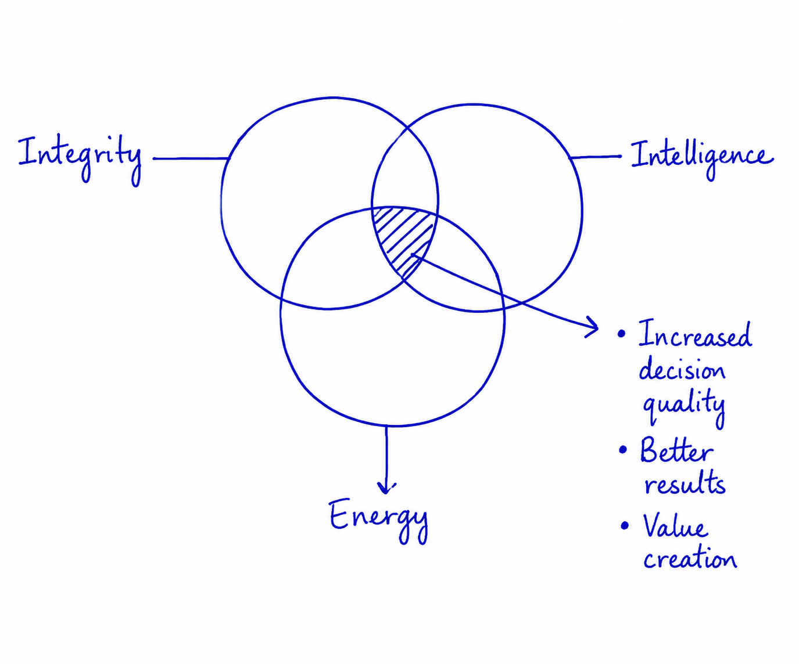
GS4-ETHI-0612 · Ethics, Integrity & Aptitude · Integrity X Intelligence X Energy
Conclusion
When integrity, intelligence and energy reinforce each other, administrative competence becomes ethical effectiveness.
This combination is essential for citizen-centric governance and the constitutional commitment to protecting life and dignity under Article 21.
Moral and Political Attitude
Moral and Political Attitudes
GS4-ETHI-0626
Quote
“Politics without principles is a sin.” – Mahatma Gandhi
Introduction
Moral attitude is a person's internalised sense of right and wrong; political attitude speaks to views on power, authority, and governance. Together they mould civic conduct and public reasoning.
Examples
Manjunath and Satyendra Dubey acted against corruption — their moral attitude led the way.
In elections, youth participation mirrors political attitudes moving towards empowerment.
Both moral clarity and political tolerance can be blurred by polarised media.
Conclusion
A balance between moral and political attitudes is what lets participative democracy and ethical governance grow.
Civil servants must maintain political neutrality while remaining firmly committed to constitutional morality, public welfare and democratic accountability.
DR. CSE — REPLICA · INTRO TO CONCLUSION197 / 217
Dr. CSE — Replica
Shaping Ethical Political & Civic Attitudes
GS4-ETHI-0627
Introduction
Political attitudes — citizens' predispositions toward government, parties, and civic duty — can be reshaped through cognitive, affective, and behavioural interventions, a useful framework when an answer calls for a change in attitude.
Concept
Ways to bring them (use when a change in attitude is needed)
Cognitive: try Internships to meet politicians; push Electoral reforms that cut the role of money and muscle power. Build Awakened citizens who vote on real issues, not vote banks. Design Curriculums that carry the good parts of domestic politics and of other countries; demand Transparency from the government.
Affective: Sense of duty — deontology; Patriotism; As service to society — utilitarian
Behavioural: Role models; Better incentives for ethical behaviour and stronger disincentives for unethical behaviour in politics; Engagement through youth parliament and university
Conclusion
A citizenry with informed, issue-based political attitudes strengthens democratic accountability — aligning individual civic conduct with the constitutional duty under Art. 51A(a) to abide by the Constitution and its ideals.
Social influence and persuasion
Persuasion & Rhetoric: Ethos, Pathos, Logos & Kelman Model
GS4-ETHI-0630
Introduction
Persuasion is the process of influencing how others think and consequently decide, using compelling arguments and appeals. Classical rhetoric and modern social-influence models together explain how administrators, campaigns, and advertisers shape public opinion and behaviour.
Concept
Ethos (Credibility and Ethics) — appeal to credibility
Pathos (Emotions and Feelings) — appeal to emotion
Logos (Logic and Reason) — appeal to logic
Telos — appeal to purpose
Kairos — appeal to timeliness
Ethos, pathos and logos are the three classical categories of persuasive advertising techniques; telos and kairos extend these into the fuller set of rhetorical appeals.
Influence works through three processes (Kelman): Compliance → Identification → Internalisation
Examples
The Swachh Bharat Mission deployed the Darwaza Band campaign and village Nigrani Samitis, using social proof and community encouragement rather than coercion to end open defecation.
The Beti Bachao Beti Padhao campaign uses emotional resonance (Pathos) alongside village celebrations for newborn girls to overcome deep-seated patriarchal mindsets.
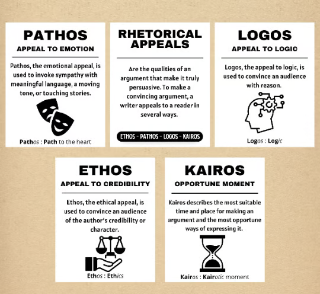
GS4-ETHI-0630 · Ethics, Integrity & Aptitude · Social influence and persuasion
Conclusion
Ethical persuasion — not manipulation — should guide public communication, ensuring that nudges and rhetorical appeals serve citizens' genuine interests and uphold the trust essential to democratic governance.
Trustworthiness and Fortitude
Fortitude & Professional Resilience in Crises
GS4-ETHI-0613
Quote
"Frank Crane - 'you may be deceived if you trust too much, but you will live in torment if you don't trust enough'"
Introduction
Fortitude is the moral and psychological strength to withstand hardship while remaining committed to one's principles.
In public service, fortitude must be accompanied by trustworthiness, empathy and resilience so that personal adversity does not undermine professional responsibility.
Examples
With ALS, Stephen Hawking still lived 76 years.
2 transgenders found place in her office — Ira Singhal, the 1st IAS officer to do so.
S.R. Sankaran (IAS) lived with austere simplicity and walked unarmed into Naxalite-affected tribal villages to secure Adivasi land rights and deliver welfare, earning the enduring trust of marginalized communities.
Sharing meals with Dalits — Rahul Kumar.
Ethical lessons:
Stephen Hawking — perseverance despite severe physical limitations.
Ira Singhal — inclusive leadership and overcoming prejudice.
Crisis administrators — resilience under uncertainty.
Social inclusion — courage to challenge discriminatory practices.
Conclusion
Fortitude transforms adversity into purposeful action, while trustworthiness sustains cooperation during difficult circumstances.
Cultivating these qualities through ethical leadership and institutional support strengthens inclusive governance, social justice and Article 21's protection of dignity.
DR. CSE — REPLICA · INTRO TO CONCLUSION198 / 217
Dr. CSE — Replica
Personal Trustworthiness & Public Faith
GS4-ETHI-0615
Introduction
Trustworthiness is the quality of being reliable, honest and consistent in fulfilling responsibilities.
It is developed through repeated ethical conduct rather than declarations of good intentions. In civil service, personal trustworthiness forms the foundation of institutional credibility.
Concept
Initiatives at personal level: a strong personal code of ethics; Harmony among thoughts, words and actions; Transparent and accountable conduct; Keep confidences safe. Set boundaries and respect them; Serve others with no expectation of rewards; Show reliability in action; Keep every commitment.
Practical principles:
Consistency between promises and actions.
Respect for confidentiality and privacy.
Accountability for mistakes.
Fairness in interpersonal relationships.
Avoidance of conflicts of interest.
Reliability during emergencies.
Examples
Ways to prove trustworthy.
Kautilya's 2 lamps — one lamp for the state's work, one for personal work (popular anecdote).
Mother Teresa, serving selflessly.
Sachin — present at work even when a close relative or friend had died.
Administrative application: maintaining a clear separation between public resources and private interests.
Conclusion
Trust grows when ethical intentions are consistently translated into accountable behaviour.
By cultivating honesty, reliability and selfless service, civil servants can strengthen public confidence and fulfil the constitutional ideals of integrity and responsible governance.
Moral Leadership: Universal Fraternity & Generational Sacrifice
GS4-ETHI-0657
Quote
"We must learn to live together as brothers, or die together as fools." — Martin Luther King Jr. "Let us sacrifice our today so that our children can have a better tomorrow." — A.P.J. Abdul Kalam
Introduction
Moral thinkers across contexts converge on the themes of unity and sacrifice for future generations — ideas as relevant to civil rights movements as to nation-building in India.
Conclusion
Whether urging solidarity across divides or selfless sacrifice for posterity, these words call public servants to transcend narrow self-interest in service of the collective good.
A.P.J. Abdul Kalam: Ethical Foundations of Leadership
GS4-ETHI-0658
Introduction
A.P.J. Abdul Kalam, India's "People's President," is widely cited in GS4 as a model of integrity, humility, and visionary leadership — his life offers numerous illustrations of ethical public conduct.
Quote
"Where there is righteousness in the heart, there is beauty in the character. When there is beauty in the character, there is harmony in the home. When there is harmony in the home, there is order in the nation. When there is order in the nation, there is peace in the world." – Dr. A.P.J. Abdul Kalam (Address to the European Parliament, 2007)
Examples
Kalam led with one rule — praise in public, criticise in private
Kalam did not accept personal gifts during his tenure as President
Conclusion
Kalam's insistence on conscience-driven conduct, constructive leadership, and personal austerity in high office exemplifies the probity and simplicity expected of public servants under the Civil Services Conduct Rules.
Aristotle
Contributions of Aristotle
GS4-ETHI-0661
Quote
"Moral excellence is not an act, but a habit." – Will Durant (1926, paraphrasing Aristotle)
Introduction
Aristotle's virtue ethics centred on forming character through habituated excellence. His 'Golden Mean' steered moral action between deficiency and excess in real-life situations.
Examples
Courage and caution stay in balance inside civil servant neutrality.
When honesty is practised with discretion, virtue sits in equilibrium.
Moral habit, not just knowledge — that is what ethics training in the services aims at.
Conclusion
Aristotle made ethics a lived craft — moral maturity becomes a matter of trained disposition.
DR. CSE — REPLICA · INTRO TO CONCLUSION200 / 217
Dr. CSE — Replica
Aristotle: Virtue Ethics & the Doctrine of the Mean
GS4-ETHI-0662
Introduction
Aristotle's virtue ethics occupies a middle path between deontology and consequentialism, locating moral judgement and the good life in reasoned balance rather than rigid rules or pure outcomes.
Quote
"Virtue is a state of character concerned with choice, lying in a mean... between two vices, that which depends on excess and that which depends on defect." – Aristotle, Nicomachean Ethics (Book II) "Happiness is an activity of the soul in accordance with complete excellence." – Aristotle, Nicomachean Ethics
Conclusion
Aristotle's doctrine of the mean — balancing principle and consequence, pleasure and purpose — remains a foundational reference point for evaluating ethical dilemmas in the GS4 paper.
Immanuel Kant
Contributions of Immanuel Kant
GS4-ETHI-0664
Quote
"Act only on that maxim which you can will to become a universal law." – Immanuel Kant
Introduction
Kant's deontological ethics placed morality in rational autonomy. Ethical action flows not from outcomes but from duty governed by reason and universalizability.
Examples
Whistleblowers like Satyendra Dubey acted on duty, not utility.
Kant's respect for moral law echoes today in rule-following across public institutions.
The right to dignity in constitutional law carries Kantian influence.
Conclusion
Kant's rational ethics safeguards dignity; law becomes a servant of reason and conscience.
Immanuel Kant: Deontological Ethics & Categorical Imperative
GS4-ETHI-0665
Introduction
Immanuel Kant's deontological ethics grounds morality in duty and universalisable principles rather than consequences, offering public servants a rule-based compass for action.
Quote
"Information filtered through wisdom becomes knowledge." — attributed to Immanuel Kant "Following Kant's dictum, one must not be pessimistic - as 'what one ought to do, one can always do'."
Concept
Categorical imperative test — ask what would happen if everyone else did the same
Conclusion
The categorical imperative — asking whether an action could be willed as a universal law — along with Kant's insistence that moral duty implies capability, together anchor a duty-based approach to ethical decision-making in governance.
John Rawls's concept of social Justice
John Rawls: Justice as Fairness & Individual Inviolability
GS4-ETHI-0669
Introduction
John Rawls's theory of justice as fairness underpins modern social justice discourse, resting on the idea that every individual possesses basic entitlements that even collective welfare cannot override.
Concept
Rawls — natural justice gives every human being an inviolability of their own
Conclusion
Rawls's insistence on the inviolability of the individual resonates with India's constitutional guarantees under Art. 14 and 21, reminding policymakers that distributive justice (DPSPs) cannot come at the cost of basic individual rights.
Kautilya
Kautilya's Arthashastra: Yogakshema & Rajadharma
GS4-ETHI-0670
Introduction
Kautilya's Arthashastra weaves diplomatic strategy, materialist political economy, and welfare-oriented governance into a single vision of statecraft — one where the ruler's power is ultimately justified by the people's welfare.
Concept
Kautilya — saam, daam, dand, bheda — all for the happiness of the people
"In the happiness of his subjects lies his happiness; in their welfare his welfare." — Kautilya, Arthashastra (1.19.34).
"Material well-being is supreme, for dharma and pleasure depend upon artha." — Kautilya, Arthashastra (1.7).
Machiavelli also puts material and political strength first, but for the prince's power and the state's security, not subjects' welfare — the two agree on the primacy of artha/power, and differ on its purpose.
In short, 'Yogakshema' — the welfare of the people — was the ultimate goal of any ruler or government. Good governance was the means to reach it.
Yet Yogakshema, and good governance with it, was not limited to material welfare of the people — the social, political, and economic side. It took in spiritual and moral well-being as well.
Conclusion
Kautilya's vision of statecraft as the pursuit of yogakshema anticipates the modern welfare state, echoing India's Directive Principles (Art. 38, 39) that direct the state toward the material and moral well-being of its citizens.
Mahatma Gandhi
Contributions of Mahatma Gandhi
GS4-ETHI-0673
Quote
"In matters of conscience, the law of the majority has no place." – Mahatma Gandhi
Introduction
Gandhi's moral philosophy fused ethical absolutism with spiritual activism. For him, truth (Satya) and non-violence (Ahimsa) were not just ideals — they were working instruments of civil resistance and human dignity.
Examples
The Salt March was ethical protest in place of violent agitation.
Trusteeship theory pointed towards compassionate capitalism.
His influence on civil rights movements worldwide gave Indian values their global ethical resonance.
Conclusion
Gandhi turned morality into mass action — values became the driving force of national and global change.
DR. CSE — REPLICA · INTRO TO CONCLUSION201 / 217
Dr. CSE — Replica
Mahatma Gandhi: Purity of Means, Conscience & Swaraj
GS4-ETHI-0674
Introduction
Mahatma Gandhi's philosophy fused personal ethics with public life, insisting that just means, inner conscience, and holistic education together define true service and self-rule (swaraj).
Quote
"Means are, after all, everything. As the means, so the end... There is no wall of separation between the means and the end." – Mahatma Gandhi (Young India, 1924) "There is a higher court than courts of justice, and that is the court of conscience. It supersedes all other courts." – Mahatma Gandhi "The best way to find yourself is to lose yourself in the service of others." – Mahatma Gandhi
Concept
What we need, as Gandhi stressed, is schooling that educates mind, body, and soul — physical, mental and spiritual development. This is his 'NAI TALIM' concept.
Ram Rajya idea of Gandhi — self-regulation, so the state becomes unnecessary
Conclusion
From Nai Talim's holistic education to Ram Rajya's vision of self-regulated citizenship, Gandhi's teachings call public servants to let conscience and principle — not expediency — guide the means of governance.
Plato
Plato: Rational Virtue & Moral Knowledge
GS4-ETHI-0680
Introduction
Plato's philosophy ties knowledge, virtue, and rational governance together, arguing that true wisdom naturally inclines one toward right action and that just societies need fewer external constraints on virtuous citizens.
Concept
Plato — held that rational beings can do no wrong.
Plato's 'Knowledge is the true virtue' needs to be carried over to social media.
Quote
"The measure of a man is what he does with power." – Plato "Good people do not need laws to tell them to act responsibly, while bad people will find a way around the laws." – attributed to Plato
Conclusion
For Plato, knowledge and virtue are inseparable — a principle civil servants can apply today by pairing rational judgement with ethical restraint, especially in new arenas like social media conduct.
Socrates
Socrates: Moral Courage, Integrity & the Examined Life
GS4-ETHI-0685
Quote
"The fear of death is indeed the pretense of wisdom, and not real wisdom, being the appearance of knowing the unknown." – Socrates (Plato, Apology 29a) "No evil can happen to a good man, either in life or after death." – Socrates (Plato, Apology 41d)
Introduction
Socrates' willingness to face death rather than renounce his principles (as recorded in Plato's Apology) is the classical reference point for moral courage in the face of mortal or professional risk.
Conclusion
True wisdom, for Socrates, lay in valuing truth and principle above self-preservation — a standard civil servants are often called to live up to when integrity collides with personal or career risk.
Swami Vivekananda
Contributions of Swami Vivekananda
GS4-ETHI-0686
Quote
"They alone live who live for others." – Swami Vivekananda
Introduction
Vivekananda's moral philosophy wove Vedantic spirituality into social uplift.Service, strength, and self-mastery became tools of national regeneration and ethical self-realisation alike.
Examples
Ramakrishna Mission lives his "service as worship" doctrine.
In his Chicago address he pressed for unity beyond religion.
Youth empowerment campaigns draw from his vision: inner character over outer achievement.
Conclusion
Vivekananda woke India's moral confidence up; ethics turned into an instrument of national and individual excellence.
DR. CSE — REPLICA · INTRO TO CONCLUSION202 / 217
Dr. CSE — Replica
Swami Vivekananda: Karmayoga & Daridra Narayana
GS4-ETHI-0687
Introduction
Swami Vivekananda envisioned public service as spiritual practice, blending selfless action (Karmayoga) with service to the poor (Daridra Narayana) as the highest expressions of duty.
Quote
"Civil servant as per Vivekananda should be blend of saintlihood & manhood."
Concept
Vivekananda's Karmayoga
Daridra Narayana — also written Daridranarayana or Daridra Narayan — is a phrase associated with and popularised by the late-19th-century Indian sage Swami Vivekananda. It espouses that service to the poor equals service to God in importance and piety.
The idea grew out of Vivekananda's wanderings across India, where he witnessed widespread poverty.
Conclusion
Vivekananda's fusion of saintly detachment with worldly action, and his call to see God in the poor, together offer civil servants a spiritually-grounded model of selfless public service.
Teachings of Great Leaders
Lessons from Great Leaders
GS4-ETHI-0690
Quote
"Be the change you wish to see in the world." – Mahatma Gandhi
Introduction
The lives of great leaders are living texts of values in motion. Such leadership commands no power; it persuades through virtue, showing how character fused with courage drives lasting change.
Examples
Gandhi's Dandi March lived out truth and non-violent resistance.
Dr. Kalam's humility and scientific pursuit showed service over self.
Nelson Mandela's forgiveness after release proved restorative justice and healing possible.
Conclusion
Great leaders stretch the moral imagination; they show values under pressure — a compass for citizens and statesmen alike.
Lessons from Reformers
GS4-ETHI-0691
Quote
"Educate, agitate, organize." – Dr. B.R. Ambedkar
Introduction
Reformers are society's moral engineers. They fight entrenched injustice from universal values — liberty, equality, rationality — and turn tradition towards a moral and constitutional lens.
Examples
Dr. Ambedkar's fight for Dalit rights carried forward dignity and social justice.
Raja Ram Mohan Roy's campaign against Sati defended women's rights and reason.
Vidyasagar's push for widow remarriage embodied compassion and gender equality.
Conclusion
Reformers inject ethics into history — values-driven activism turns personal conviction into collective transformation.
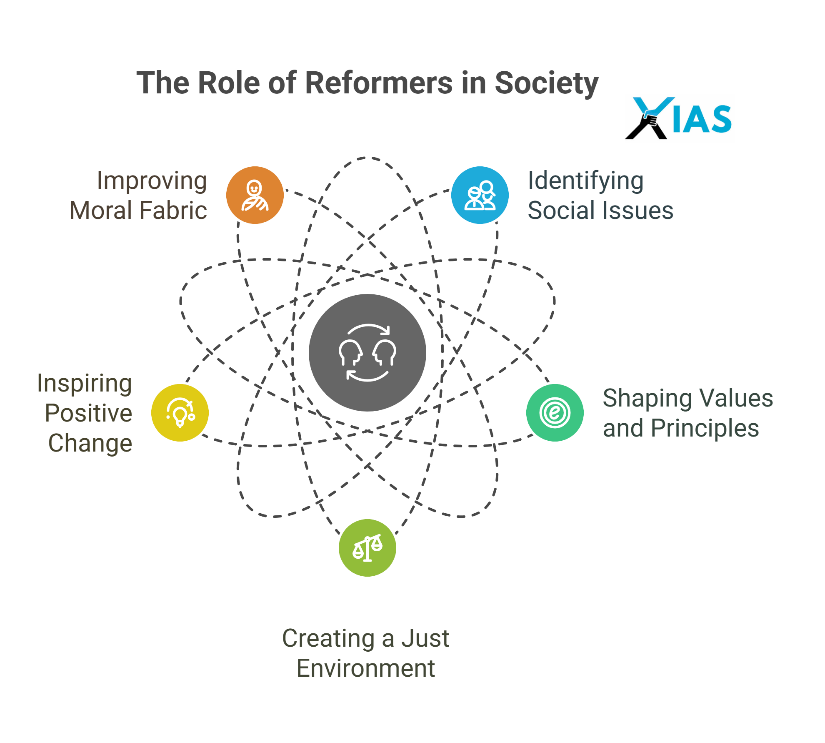
GS4-ETHI-0691 · Ethics, Integrity & Aptitude · Teachings of Great Leaders
Lessons from Administrators
GS4-ETHI-0692
Quote
"A civil servant's greatest asset is the trust of the people." – T.N. Seshan
Introduction
Ethical administrators are an institution's conscience-keepers. More than rule-enforcers, they embed values like fairness, empathy, and integrity into governance, so policy becomes ethical public service.
Examples
In public institutions, T.N. Seshan's electoral reforms reset accountability and fearlessness.
Kiran Bedi's prison reforms in Tihar grew from dignity and rehabilitation.
IAS officer Pradeep Singh's work in Naxal areas reflects commitment to inclusive development.
Conclusion
Values-driven administrators win public trust; governance then holds both efficiency and ethical legitimacy.
DR. CSE — REPLICA · INTRO TO CONCLUSION203 / 217
Dr. CSE — Replica
Contributions of Dr. B.R. Ambedkar
GS4-ETHI-0693
Quote
"I measure the progress of a community by the degree of progress which women have achieved." – Dr. B.R. Ambedkar
Introduction
Ambedkar's moral vision aimed at pulling down inherited hierarchies — through rationality, equality, and constitutional ethics. For him dignity and justice were non-negotiable principles of public morality.
Examples
Gender justice moved forward with the Hindu Code Bill.
Social morality entered legal order through drafting the Constitution.
Caste became morally illegitimate in his eyes — hence conversion to Buddhism.
Conclusion
Ambedkar gave modernity a moral spine, so the Indian state's ethical architecture rests on liberty, justice, and equality.
Contributions of Rabindranath Tagore
GS4-ETHI-0694
Quote
"The highest education is that which does not merely give us information but makes our life in harmony with all existence." – Rabindranath Tagore
Introduction
Tagore's ethics grew from aesthetic humanism. In it, freedom, creativity, and universal compassion merge into a moral vision above borders, religions, and narrow nationalisms.
Examples
Value-based creative education was the hallmark of Santiniketan.
Ethical universalism powered his critique of hyper-nationalism.
Gitanjali blends individual conscience with cosmic empathy in poetic morality.
Conclusion
For Indian ethics, Tagore was the global voice — beauty, freedom, and emotional universality at its root.
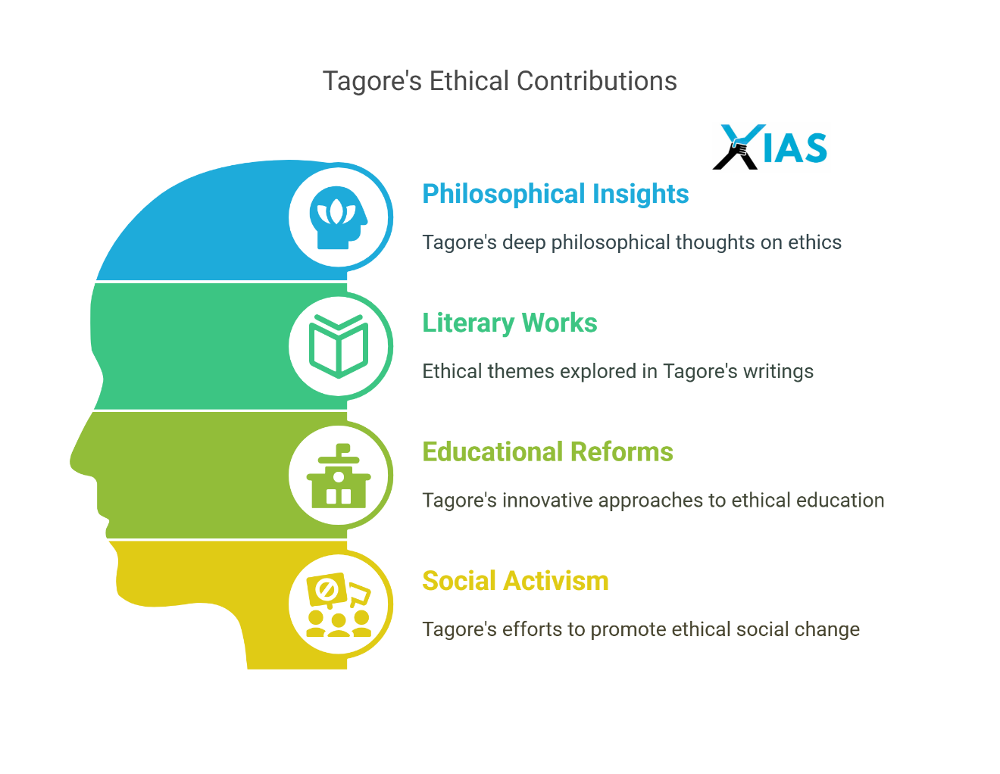
GS4-ETHI-0694 · Ethics, Integrity & Aptitude · Teachings of Great Leaders
Contributions of Gautama Buddha
GS4-ETHI-0695
Quote
"Hatred does not cease by hatred, but only by love—this is the eternal rule." – Gautama Buddha
Introduction
Buddha's moral thought was psychological, experiential and pragmatic — it centred on suffering, mindfulness, and ethical causality. To him, morality sprang from awareness and right action, not divine command.
Examples
Ethical living through mindfulness — that is the prescription of the Eightfold Path.
Buddhist ethics became state policy through Ashoka's Dhamma.
Inner moral reform in Indian prisons today runs on his method — Vipassana.
Conclusion
Buddha offered a self-cultivated ethics — transformation starts within, then radiates into society.
Contributions of John Stuart Mill
GS4-ETHI-0696
Quote
"A person may cause evil to others not only by his actions but by his inaction." – J.S. Mill
Introduction
Mill's utilitarianism tied morality to consequences: ethical action works to maximize happiness and minimize harm. Individual liberty stays safe under his famous 'harm principle'.
Examples
Greatest-good logic drives public health campaigns.
Mill's liberty ethics underpins free speech jurisprudence.
Welfare schemes — each weighs a cost-benefit ethical calculus.
Conclusion
Utility became ethically respectable with Mill — modern governance now joins liberal freedoms with collective welfare.
The Buddhist Madhyamarga (Middle Path) counsels moderation between extremes — a principle that finds a direct echo in the modern constitutional test for restricting fundamental rights.
Concept
Thus Buddha's 'Madhyamarga' — the middle path — should guide us, and restrictions must stay reasonable. The Puttaswamy (2017) test for restricting rights — legality, legitimate aim and proportionality — reflects this.
Conclusion
The Middle Path's enduring relevance is evident in the Supreme Court's proportionality doctrine (Puttaswamy, 2017), reminding administrators that even legitimate state action must avoid both excess and inaction.
Moral and Physical Fortitude in High-Risk Administration
GS4-ETHI-0698
Introduction
Courageous leadership in administration often means standing firm against intimidation or vested interests to uphold the rule of law, even at personal risk.
Examples
Leadership and Courage in one frame: Sanjukta Parashar (IPS) taking on Bodo militants.
Conclusion
Officers like Sanjukta Parashar demonstrate that moral and physical courage together are indispensable to effective and fearless public administration in challenging terrains.
Empathetic leadership can transform entire sectors by aligning policy design with the lived realities of the most vulnerable stakeholders.
Examples
Improve quality of life of people - Eg — V. Kurien empathised with farmers and women alike, and the milk revolution succeeded.
Conclusion
Kurien's White Revolution shows how empathy, translated into institutional design (dairy cooperatives), can deliver inclusive and sustainable development.
J.S. Mill on the Immorality of Inaction
GS4-ETHI-0700
Quote
"Bad men need nothing more to compass their ends, than that good men should look on and do nothing." – John Stuart Mill, Inaugural Address at St Andrews (1867)
Introduction
John Stuart Mill's warning against passive indifference (often misattributed to Edmund Burke) underscores the ethical duty of public servants to actively resist wrongdoing rather than remain silent bystanders.
Conclusion
For a civil servant, Mill's maxim translates into a duty of proactive integrity — silence or inaction in the face of corruption is itself a moral failure.
Muhammad Yunus: Opportunity, Microfinance & Structural Emancipation
GS4-ETHI-0701
Introduction
Muhammad Yunus's microfinance model reframed poverty as a problem of access rather than character, placing opportunity at the heart of inclusive development.
Quote
"Poverty is the absence of all human rights... It is not created by poor people, but by the institutions and policies that we have designed." – Muhammad Yunus, Nobel Peace Prize Lecture (2006)
Concept
the Bangladeshi economist who pioneered microfinance (Grameen Bank)
Conclusion
Yunus's insight that opportunity — not inherent worth — separates rich and poor resonates with India's own self-help-group-based poverty alleviation efforts.
DR. CSE — REPLICA · INTRO TO CONCLUSION205 / 217
Dr. CSE — Replica
Desmond Tutu on the Fallacy of Neutrality in Injustice
GS4-ETHI-0702
Quote
"Desmond Tutu - If you are neutral in situations of injustice, you've taken the side of the oppressor."
Introduction
Desmond Tutu's moral clarity on neutrality speaks directly to the ethical obligation of public institutions to actively protect the vulnerable rather than remain officially "impartial" in the face of injustice.
Conclusion
True impartiality in public administration must not collapse into passive neutrality — officials are ethically bound to act against injustice, not merely observe it.
Leo Tolstoy: Moral Principle vs Majoritarian Consensus
GS4-ETHI-0703
Introduction
Tolstoy's critique of majoritarianism warns that democratic consensus does not automatically confer moral legitimacy on a decision or practice.
Quote
"Tolstoy - Wrong does not cease to be wrong because the majority share in it."
Concept
a warning against orthodoxy and the ills of democracy
Conclusion
Tolstoy's caution is a reminder that constitutional morality and fundamental rights must sometimes override majoritarian impulses — a principle at the heart of judicial review in India.
Jean-Jacques Rousseau: The General Will vs Episodic Freedom
GS4-ETHI-0704
Quote
"True freedom is achieved only when the state is run according to the general will of the people." — Rousseau "Man is born free, and everywhere he is in chains." — Rousseau, The Social Contract "The English people thinks it is free; it is free only during the election of members of parliament." — Rousseau, The Social Contract (Bk III) — often paraphrased as "free only at elections"
Introduction
Jean-Jacques Rousseau's social contract theory distinguishes genuine popular sovereignty, expressed through the "general will," from merely episodic, formal participation in governance.
Conclusion
Rousseau's distinction between the general will and periodic electoral participation challenges democracies, including India's, to deepen citizen engagement beyond the ballot box.
Sun Tzu: Strategic Restraint & Deterrence in Statecraft
GS4-ETHI-0705
Quote
"Sun Tzu - The supreme art of war is to subdue the enemy without fighting"
Introduction
Sun Tzu's Art of War privileges strategic restraint and deterrence over direct conflict, an insight with relevance beyond the battlefield to diplomacy and negotiation.
Conclusion
In governance and diplomacy alike, Sun Tzu's wisdom suggests that the most effective victories are those achieved through strategy, deterrence, and dialogue rather than force.
Rosa Parks: Moral Conviction Overcoming Fear
GS4-ETHI-0706
Quote
"I have learned over the years that when one's mind is made up, this diminishes fear; knowing what must be done does away with fear." – Rosa Parks, Quiet Strength (1994)
Introduction
Rosa Parks's quiet act of defiance against segregation is often invoked to illustrate the power of individual moral courage in sparking systemic social change.
Conclusion
Parks's stand reminds public servants that steadfast adherence to one's values, even in small individual acts, can catalyse large-scale social and institutional reform.
DR. CSE — REPLICA · INTRO TO CONCLUSION206 / 217
Dr. CSE — Replica
Theodore Roosevelt: Decisiveness in Ethical Dilemmas
GS4-ETHI-0707
Introduction
Decisiveness — the moral courage to choose and act under uncertainty — is a core trait of ethical leadership. Indecision itself can cause harm, since inaction allows problems to fester while a wrong decision can at least be corrected.
Quote
"Roosevelt: In any moment of decision, the best thing you can do is the right thing. The worst thing you can do is nothing"
Conclusion
For a civil servant facing an ethical dilemma, this teaches that "paralysis by analysis" is itself a moral failure — timely, conscience-guided action is preferable to safe inaction, in the spirit of Article 51A(j)'s call to strive for excellence in individual and collective activity.
Tulsidas: Compassion as the Root of Dharma
GS4-ETHI-0708
Introduction
Indian ethical thought roots Dharma (righteous duty) not in rigid rule-following but in compassion — rules and norms are secondary branches growing from a compassionate core.
Quote
"Tulsidas: compassion is the root of a tree called Dharma and its branches are rules and norms."
Conclusion
For governance, this means rules and procedures should always be interpreted and applied in the service of compassion — a reminder that administrative dharma is ultimately about human welfare, not mechanical compliance.
John Stuart Mill: The Harm Principle & State Intervention
GS4-ETHI-0709
Introduction
John Stuart Mill's harm principle, from his essay On Liberty (1859), is a foundational idea in liberal ethics about the limits of individual freedom and state intervention.
Concept
JS Mill on liberty — people may act as they wish unless they harm someone (the 'harm principle').
Conclusion
The harm principle underlies India's constitutional scheme of liberty under Article 19, where freedoms are guaranteed but subject to "reasonable restrictions" precisely when exercise of one's liberty would harm others or public order.
Amartya Sen's Capability Approach reframed development ethics by asking not merely what people possess, but what they are genuinely free and able to do and become.
Concept
Amartya Sen's — Capability Approach.
Development is judged by the real freedoms and capabilities people have to achieve valuable "functionings" (such as being educated, healthy, or politically free), not merely by income or resources.
Conclusion
Sen's framework underpins the UNDP's Human Development Index and resonates with India's rights-based welfare approach — treating citizens as ends with capabilities to expand, not merely as recipients of aid.
Ethical Egoism vs Public Interest Administration
GS4-ETHI-0711
Introduction
Ethical egoism stands at the opposite pole from altruism in moral philosophy, holding that individuals are not morally obligated to serve others' interests.
Concept
Ethical egoism — no moral obligation towards others; Ayn Rand's position.
Conclusion
While ethical egoism explains purely self-interested market behaviour, public administration must reject it in favour of altruism and public interest, as embodied in India's Directive Principles and the civil services Conduct Rules.
DR. CSE — REPLICA · INTRO TO CONCLUSION207 / 217
Dr. CSE — Replica
Baruch Spinoza: Emotional Mastery & Moral Freedom
GS4-ETHI-0712
Introduction
The philosopher Spinoza linked moral autonomy to emotional self-mastery — true freedom requires governing one's own passions rather than being governed by them.
Quote
"Spinoza: 'A man who is prey to his emotions is not his own master.'"
Conclusion
For civil servants facing provocation, pressure or temptation, this underlines the importance of emotional intelligence as a foundation of ethical, composed decision-making in high-stakes administrative situations.
Epictetus: Stoic Composure in the Face of Provocation
GS4-ETHI-0713
Introduction
The Stoic philosopher Epictetus taught that losing control of one's emotions amounts to surrendering control of oneself to external provocation.
Quote
"Epictetus: 'any person capable of angering you becomes your master'"
Conclusion
This Stoic insight is directly relevant to public servants who face hostile crowds, abusive complainants, or political pressure — maintaining composure protects both personal integrity and the dignity of the office.
Buddha: Compassion & Tolerance as Pathways to Harmony
GS4-ETHI-0714
Introduction
In Buddhist ethics, inner liberation (Nirvana) is inseparable from one's conduct towards others — spiritual growth and social virtue are two sides of the same path.
Quote
"Buddha - if you want to achieve nirvana, you must have tolerance and compassion in your life"
Conclusion
This reflects the Indian civilisational consensus — echoed later in Sarva Dharma Sama Bhava — that personal ethical growth and the practice of tolerance and compassion toward others are mutually reinforcing, not separate pursuits.
Thomas Hobbes: Liberty Protected by the Rule of Law
GS4-ETHI-0716
Introduction
Thomas Hobbes offered a minimalist, legalistic definition of liberty — freedom exists precisely in the space the law chooses not to regulate.
Quote
"Hobbes: liberty is where law is silent"
Conclusion
This view underscores why the rule of law matters: liberty is not anarchic freedom but a space carved out and protected by law, making well-drafted, minimal and clear regulation essential to genuine individual freedom.
Karma Yoga, as taught by Lord Krishna in the Bhagavad Gita, is one of Indian philosophy's most practical ethical doctrines for anyone engaged in active duty or public service.
Concept
According to Lord Krishna in the Bhagavad Gita, Karma yoga is the spiritual practice of 'selfless action performed for the benefit of others'.
Karma yoga is a path to moksha (spiritual liberation) reached through work.
It is rightful action without attachment to fruits — a dedication to one's duty. Give one's best, and stay neutral to outcomes like success or failure.
[Vivekananda's Karmayoga philosophy]
Conclusion
Karma Yoga offers civil servants a practical ethic for high-pressure roles: perform one's duty with full commitment, but without being destabilised by praise, blame, success or failure — a template for resilience and detachment in public office.
DR. CSE — REPLICA · INTRO TO CONCLUSION208 / 217
Dr. CSE — Replica
The Hobbesian Social Contract & Modern Constitutional Order
GS4-ETHI-0718
Introduction
Thomas Hobbes's social contract theory explains the moral basis of state authority — citizens surrender certain natural rights to the state in exchange for order and protection.
Concept
Hobbes frames the social contract between citizens and the state this way.
Government <-> Citizens (Powers <-> Rights).
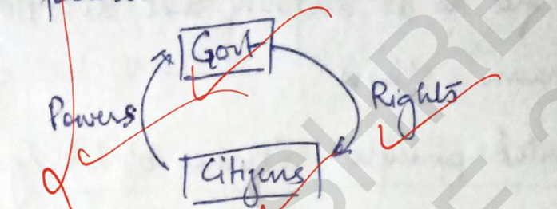
GS4-ETHI-0718 · Ethics, Integrity & Aptitude · Teachings of Great Leaders
Conclusion
This reciprocal exchange — power granted to government in return for rights guaranteed to citizens — is the philosophical ancestor of modern constitutionalism, where the Indian Constitution similarly balances state power with Fundamental Rights.
Exemplars of Selfless Service in Modern India
GS4-ETHI-0719
Introduction
Across different eras and walks of life, certain individuals exemplify selfless service — placing the welfare of others above personal comfort, recognition or gain.
Examples
Savitribai Phule — pioneered girls' education against fierce social resistance.
Mother Teresa — devoted her life to the destitute and dying.
Chhavi Rajawat — an MBA-qualified former corporate professional who became Sarpanch of Soda village (Rajasthan), working to improve village infrastructure.
Gandhi in the Noakhali riots — worked to restore communal peace even while the rest of the country celebrated independence.
Volunteers who fed the poor during COVID — selfless service at the grassroots level.
Conclusion
These figures demonstrate that selfless service is not confined to any one profession or era; from educated elites choosing grassroots roles to ordinary citizens as volunteers, selfless action remains the surest marker of ethical greatness.
Strengthening Ethical and Moral Values in Governance
GS4-ETHI-0757
Quote
“Morality cannot be legislated, but behavior can be regulated.” – Dr. Martin Luther King Jr.
Introduction
Strengthening values in governance means making virtues like integrity, compassion, and impartiality routine — through systemic reform, ethical leadership, and norm-setting public behaviour.
Examples
Mission Karmayogi brings ethics modules into training.
Ethics audits in government bodies check the moral climate.
Role models like Vinod Rai spur ethical emulation.
Conclusion
Ethics in governance should grow like a habit, not sit enforced like a rule.
Public Accountability: Answerability, Enforceability & Social Audits
GS4-ETHI-0758
Introduction
Accountability is the obligation of public officials and institutions to answer for their actions, decisions, and use of authority — ensuring power is exercised responsibly within a democratic framework.
In its broader sense, accountability should be cultivated both outward (answerability to citizens/institutions) and inward (responsibility/conscience).
It is institutionally secured through laws, rules, and oversight bodies.
Examples
Institutional mechanisms: CAG audits, CVC, and CBI enquiries enforce accountability.
Institutional social audits in Andhra Pradesh (pioneered by the Society for Social Audit, Accountability and Transparency - SSAAT under MGNREGA) uncovered widespread procedural leakages across thousands of gram panchayats, prompting recoveries and disciplinary proceedings and setting a national benchmark for grassroots accountability.
Accountability converts authority into trust — when answerability, enforcement, and conscience align, governance becomes both effective and legitimate, fulfilling the constitutional promise of responsible government.
Challenges of Corruption
Challenges of Corruption
GS4-ETHI-0721
Quote
"CORRUPTION IS PAID BY THE POOR. - Pope Francis" "Results in collusive corruption paid for by the poor. - Pope Francis"
Introduction
Corruption is the unethical use of entrusted power for private gain. It eats away trust, weakens institutions, and bends the moral foundation of public service and development.
Examples
The 2G and coal scams damaged transparency in resource allocation.
PDS and MGNREGA leakages broke last-mile trust.
PC Act (1988) amendments and the Lokpal work towards checking corruption.
Defining Corruption
Corruption is a blanket term for malpractices tied to abuse or misuse of the position, power, or authority reposed in an individual or entity.
Commonly expressed as an equation: Monopoly + Discretion − Accountability = Corruption, highlighting that unchecked discretion without accountability is the structural root of corrupt practice.
Conclusion
Corruption is not just a legal failure — it is a moral collapse, calling for reform, transparency, and inner restraint. Reducing monopoly, limiting unchecked discretion, and strengthening accountability — as Pope Francis notes, its real cost is paid by the poor — must therefore anchor any anti-corruption strategy.
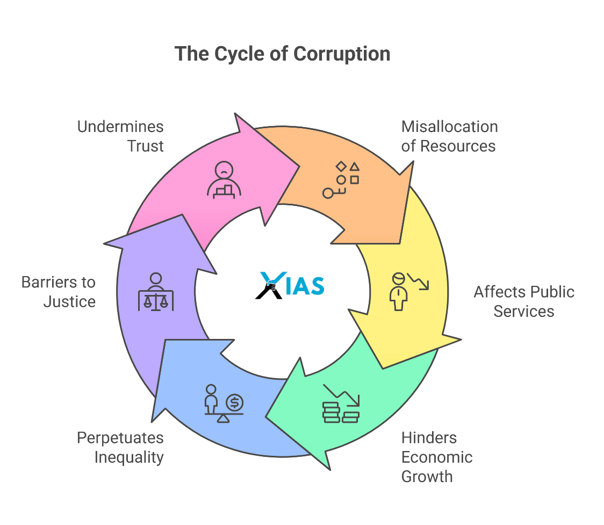
GS4-ETHI-0721 · Ethics, Integrity & Aptitude · Challenges of Corruption
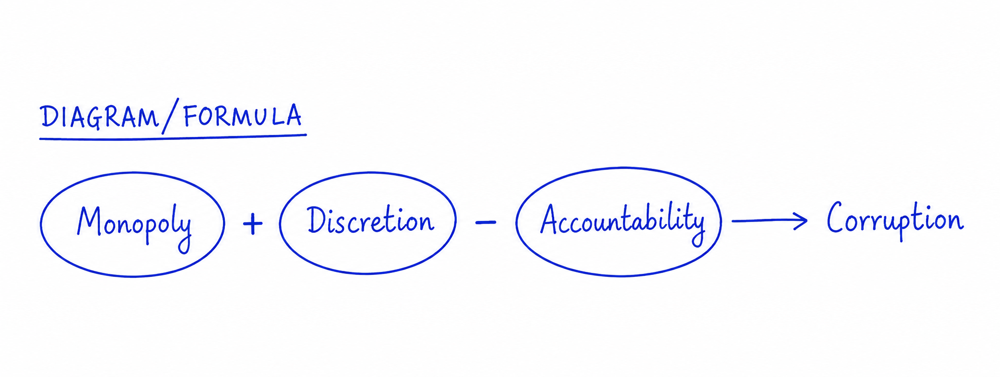
GS4-ETHI-0721 · Ethics, Integrity & Aptitude · Challenges of Corruption
DR. CSE — REPLICA · INTRO TO CONCLUSION210 / 217
Dr. CSE — Replica
Probity in Governance: Financial Safeguards for Public Office
GS4-ETHI-0723
Introduction
Eligibility rules for public and constitutional office often include financial-integrity safeguards, recognising that personal financial distress can create vulnerability to corrupt inducements.
Concept
Eg: for public or constitutional offices, persons facing bankruptcy / Insolvency are barred, since they may be tempted into bribery.
Conclusion
Such disqualifications reflect the broader principle of probity in public life — that safeguarding the integrity of office sometimes requires proactive eligibility conditions, not just after-the-fact punishment of corrupt conduct.
Civic Vigilance vs Indifference: Combating Systemic Graft
GS4-ETHI-0724
Introduction
Corruption rarely persists without a permissive social environment; citizen apathy toward everyday graft is itself a contributing cause.
Quote / Data
'People's indifference is best breeding ground for corruption' — our CPI (TI) rank stands at 91/182 (CPI 2025). That is why this matters to us.
Conclusion
Citizen vigilance and active civic participation — not just institutional reform — are essential to improving India's standing on indices such as the Corruption Perceptions Index, since apathy itself sustains corrupt practice.
The Sanskritisation of Corruption & Entrenched Social Norms
GS4-ETHI-0725
Introduction
The idea of the "sanskritisation of corruption", attributed to economist Kaushik Basu, captures how certain corrupt practices become so normalised in society that they cease to provoke moral outrage.
Concept
Sociologists use the metaphor of the sanskritisation of corruption (drawing on M.N. Srinivas) when lower administrative tiers emulate the corrupt lifestyles of senior officials, while economists like Kaushik Basu note that systemic corruption persists as an entrenched "equilibrium social norm" where individuals pay or demand bribes because they expect everyone else to do so.
Conclusion
When corruption is normalised rather than condemned, legal deterrents alone cannot work — this calls for a renewed societal ethic of zero tolerance, reinforced through education and public discourse, not merely stricter laws.
The Vohra Committee: Countering the Politician-Criminal-Bureaucrat Nexus
GS4-ETHI-0726
Introduction
The Vohra Committee (1993) was a landmark official inquiry into the shadowy links between organised crime, business and the political-bureaucratic establishment in India.
Concept
The Vohra Committee report highlighted the ethical tangle between bureaucrat, politician and businessman.
Favouritism — one such issue.
Conclusion
Though the report's findings were never fully made public, its warning about this "unholy nexus" remains central to India's anti-corruption discourse, underscoring the need for institutional firewalls between administration, politics and business interests.
The Vicious Cycle of Corruption: Institutional Interventions
GS4-ETHI-0728
Introduction
Corruption and weak probity do not exist in isolation — they feed each other in a self-reinforcing cycle that only sustained political will can break.
Concept
What the diagram captures: a vicious cycle running between corruption, probity, and political will.
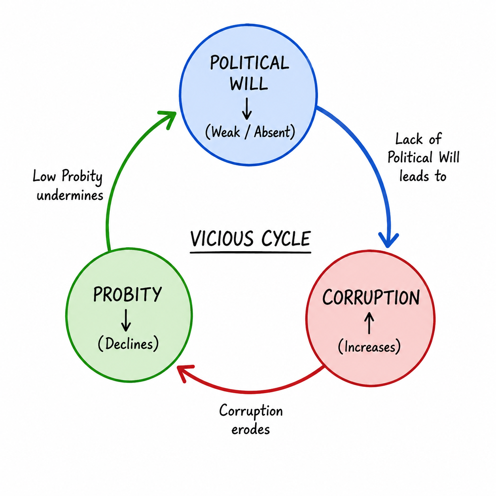
GS4-ETHI-0728 · Ethics, Integrity & Aptitude · Challenges of Corruption
Conclusion
Breaking this cycle requires sustained political will at every level, since piecemeal reform without consistent enforcement allows corruption and eroded probity to simply regenerate each other over time.
Unchecked electoral spending and a growing preference for protest over institutional engagement both signal deeper ethical strains in India's political culture.
Data
CMS (Centre for Media Studies) estimate — about ₹55,000–60,000 cr was spent in the 2019 general elections.
Orb media survey: the country's youth lean more towards protest culture than institutional politics.
Conclusion
Opaque, high-cost elections create fertile ground for quid-pro-quo corruption once in office, while a shift toward protest over institutional politics suggests declining youth trust in governance channels — both trends call for electoral-funding reform and renewed institutional credibility.
Citizen's Charter
Citizens' Charters: The CSAT QV Implementation Model
GS4-ETHI-0731
Introduction
A Citizens' Charter is a public-service accountability tool that makes an organisation's service promises explicit, measurable and enforceable, converting vague expectations into a transparent commitment.
Concept
The citizens' charter: an organisation's written promise to the clients/citizens it serves.
6 Principles: CSAT QV
C-Choice — wherever possible.
S-Standards — spelling out what to expect and what to do if standards are not met.
A - Accountability.
T-Transparency.
Q- Quality.
V-Value for taxpayers' money.
Keep it simple. Framing should involve not just senior experts but the staff too.
Conclusion
When drafted with front-line staff input and enforced through grievance redress, Citizens' Charters convert administrative promises into citizen entitlements — a practical embodiment of accountable, service-oriented governance.
Codes of Ethics and Codes of Conduct
Codes of Ethics and Codes of Conduct
GS4-ETHI-0732
Quote
“Ethics is knowing the difference between what you have a right to do and what is right to do.” – Potter Stewart
Introduction
Codes of Ethics give aspirational moral standards; Codes of Conduct set enforceable behavioural rules. Together they build an ethical infrastructure for professional accountability in public service.
Examples
All India Services Conduct Rules (1968) govern civil servant behaviour.
The Model Code of Conduct during elections secures fairness and neutrality.
Many PSUs keep internal Codes of Ethics for managing conflicts.
Conclusion
Ethical codes turn values into action — they give public functionaries clarity, consistency, and institutional conscience.
DR. CSE — REPLICA · INTRO TO CONCLUSION212 / 217
Dr. CSE — Replica
Second ARC: Institutionalizing Codes of Ethics & Civil Service Reform
GS4-ETHI-0733
Introduction
The Second Administrative Reforms Commission (2nd ARC), in its report "Ethics in Governance", proposed structural and legal reforms to institutionalise ethical conduct among both civil servants and elected legislators.
Concept
Mentions of a Code of Ethics for MPs/MLAs appear in ARC-II.
The 2nd ARC recommended legislation like a Civil Services Bill, to fix the tenure of senior civil servants. It also proposed monitoring their ethical conduct through a Central Civil Services Authority (CCSA), so that postings and transfers stay objective.
Improving ethics through: passing a Code of Ethics, and deleting Article 311 (with a law under Article 309 protecting honest officials from arbitrary action) so that quick disciplinary action is possible against delinquent civil servants.
A Code of Ethics for Politicians, to clean up the politician-bureaucrat nexus.
Conclusion
Institutionalising fixed tenures, an independent CCSA, and codified ethics for both bureaucrats and legislators would reduce arbitrary transfers and politically-driven postings — strengthening a politically neutral, merit-based civil service, with Article 311 replaced by a statutory safeguard under Article 309 to enable quicker action against the corrupt.
Codes of Conduct: Enforceable Administrative Discipline
GS4-ETHI-0735
Introduction
Unlike an aspirational Code of Ethics, a Code of Conduct is a specific, enforceable set of behavioural rules binding on employees of an organisation.
Examples
Eg: the Central Civil Services (Conduct) Rules, 1964.
Concept
A Code of conduct states the behaviour an organisation expects from its employees.
Conclusion
Codes of Conduct like the 1964 Rules give disciplinary teeth to ethical expectations — translating the broad moral aspirations of a Code of Ethics into specific, actionable, and enforceable standards of behaviour.
Conflict of Interest
Conflict of Interest: Transparency, Disclosure & the 4R Model
GS4-ETHI-0762
Introduction
A conflict of interest arises when an official's duties to profession, community, and self stop pointing to one coherent answer — the available options instead favour some stakeholders at the cost of others, compromising impartiality in decision-making.
Resolution Framework
4 Rs: Register the issue; Restrict the official's involvement; Recruit a 3rd party to oversee the process; Remove, or voluntary recusal.
Alternative — Steps approach: Recognise the potential for conflict; keep a clear policy on disclosure; disseminate relevant information to all stakeholders; keep consequences proportionate in policy; have a clear arrangement to deal with non-disclosure.
Guiding principle: "Sunlight is the best disinfectant."
Examples
Personal vs public interests — in the TV series Panchayat: should a streetlight go near one's own home or at a genuinely public spot?
Justice Kurian skipped a lunch hosted by the Italian government while hearing the case against the Italian marines, avoiding any conflict.
Chanda Kochhar gave personal interest primacy while lending to Videocon (ICICI Bank case), a textbook conflict-of-interest failure.
Conclusion
Managing conflict of interest through transparency, disclosure, and recusal safeguards institutional integrity — echoing the constitutional ideals of equality and impartial public service (Arts. 14 and 16).
Corporate Governance
Corporate Governance and Ethics
GS4-ETHI-0765
Quote
"No success or achievement in material terms is worthwhile unless it serves the needs or interests of the country and its people and is achieved by fair and honest means." – J.R.D. Tata
Introduction
Corporate ethics is the moral framework governing business conduct. It demands transparency, accountability, and stakeholder equity — beyond mere legal compliance or shareholder gain.
Examples
The Tata Group's ethical legacy pairs values with value creation.
The Infosys whistleblower case showed internal ethical vigilance.
CSR mandates under the Companies Act gave business social responsibility a legal form.
Satyam Computers' balance-sheet fudging led to its collapse and takeover by Tech Mahindra — a landmark corporate governance failure in India.
LG Polymers operated with hazardous gases without proper clearance; the resulting leak harmed public trust alongside physical damage.
Volvo opened the patent on its three-point seat belt to all manufacturers, prioritising public safety over commercial exclusivity.
As India's Finance Minister remarked, "wealth creators are the nation's wealth" — ethical enterprise itself serves nation-building.
Conclusion
Ethical corporates build moral ecosystems, not just markets — growth there includes governance and conscience.
Ethical Issues in International Relations and Funding
Ethical Issues in International Relations and Funding
GS4-ETHI-0770
Quote
"Vasudhaiva Kutumbakam — the world is one family. India's quest has always been for peace, human dignity, and international equality." – Atal Bihari Vajpayee, UN General Assembly Address (1977)
Introduction
Ethics in international relations reconciles national interest with global justice. Foreign aid, diplomacy, and negotiations all pass through principles of fairness, sovereignty, and human dignity.
Concept
Machiavelli's realpolitik: a nation's foreign policy follows sovereign interest alone, often in tension with ethical universalism.
Global governance can drift into anarchism absent binding law — e.g., the weaponisation of space, permitted only because no explicit law forbids it.
Vaccine nationalism: countries with only about 16% of the world's population cornered about 60% of vaccine supply, making it essential to question the ethicality of vaccine passports.
Examples
India's Vaccine Maitri was compassion-driven diplomacy at work.
The IMF loan conditions debate raises the ethics of debt and sovereignty.
On the Russia–Ukraine war, India's stance held neutrality alongside humanitarian concerns.
The Oromo–Tigray conflict in Ethiopia shows violence feeding a vicious cycle of more violence.
China vs India — hard power reads as threat; India's soft power is celebrated.
Countries maintaining nuclear cooperation with India despite it staying outside the NPT reflect faith in India's No-First-Use (NFU) policy.
Brazil thanked India for COVID vaccines with a Hanuman illustration — soft power through cultural resonance.
Conclusion
Ethical diplomacy earns global trust — most of all when morality matches strategic clarity.
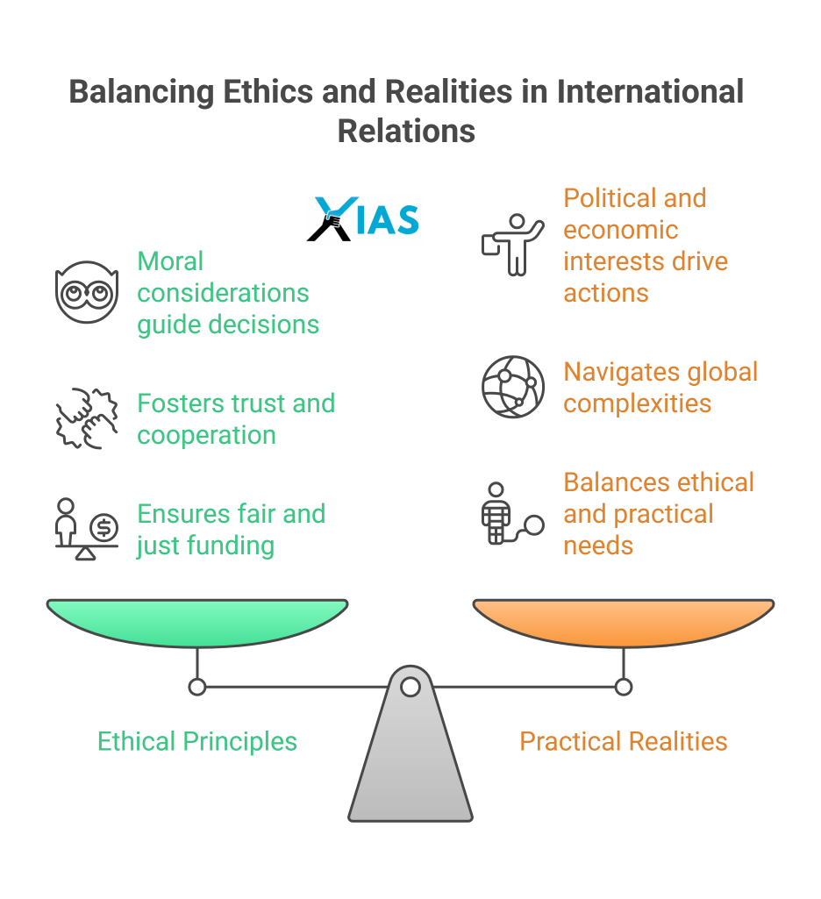
GS4-ETHI-0770 · Ethics, Integrity & Aptitude · Ethical Issues in International Relations and Funding
Laws, Rules, Regulations and Conscience as Ethical Guidance
Sources of Ethical Guidance: Law vs Ethics
GS4-ETHI-0777
Quote
"Rights are protected not by law, but by the social and moral conscience of society." – Dr. B.R. Ambedkar, Annihilation of Caste "In civilized life, law floats in a sea of ethics." – Earl Warren, Chief Justice of the United States (1962)
Introduction
Ethical guidance flows from codified rules, constitutional ideals, social norms, and inner conscience. Together they give external direction and internal restraint when decisions get ambiguous, though law and ethics do not always align.
Law vs Ethics
Law clearly states right and wrong; Ethics stays vague.
Law brings punishment on violation; Ethics works by social sanction.
Law is fixed for a given society (e.g., IPC in India); Ethics may vary with person and time (e.g., lying).
Law evolves through legislation and judicial pronouncements (e.g., Sec. 377 IPC, adultery); Ethics evolves organically with society (e.g., Sati).
Law gives the basic minimum of behaviour (don't kill); Ethics enshrines the highest ideals one must strive for (always be truthful).
However, law and ethics are often inconsistent with each other.
Examples
Unethical and illegal: taking or giving dowry (Dowry Prohibition Act, 1961).
Unethical, but not illegal: marital rape (exception to S.375 IPC, now Exception 2 to S.63 BNS, 2023; the issue is before the courts).
Not permitted by regulation: adoption of a girl child by a single male (CARA eligibility rules).
Legal but unethical: denying PDS ration over a failed biometric authentication alone.
Legal but unethical: leaving an accident victim behind and rushing to one's own commitments.
The All India Services Conduct Rules put ethical standards in writing.
Judicial calls to constitutional morality rise above mere legality.
Grassroots movements like RTI voice the public's moral expectations.
Conclusion
Law, role, and inner conscience — when they converge, ethics becomes sustainable, steering action under uncertainty.
Probity in Governance
Concept of Public Service
GS4-ETHI-0736
Quote
“Public service must be more than doing a job efficiently and honestly. It must be a complete dedication to the people.” – Margaret Chase Smith
Introduction
Public service is the ethical obligation to use state authority for collective welfare. It rests on duty, neutrality, compassion, and responsible stewardship of public trust.
Examples
Lal Bahadur Shastri's resignation after a train accident was moral accountability in action.
Ashok Khemka's frequent transfers mirror his unwavering dedication to integrity.
In aspirational districts, civil servants show mission-mode selflessness.
Conclusion
Public service turns office into obligation — power becomes a moral commitment to lifting the weakest, without bias or fear.
DR. CSE — REPLICA · INTRO TO CONCLUSION213 / 217
Dr. CSE — Replica
Philosophical Basis of Governance and Probity
GS4-ETHI-0737
Quote
"Recall the face of the poorest and the weakest man whom you may have seen, and ask yourself if the step you contemplate is going to be of any use to him." – Mahatma Gandhi (Talisman, August 1947)
Introduction
Probity is the philosophical face of moral uprightness in public life. Where virtue, truth, and transparency converge, governance becomes not just lawful but ethically legitimate.
Examples
In the Arthashastra, Kautilya pressed for the ethical conduct of rajadharma (king's duty).
Sardar Patel's stress on impartial civil services showed value-centric governance.
Anti-corruption laws make ethical behaviour a normative expectation.
Eg: the Singapore model — political will and probity together drove corruption down dramatically within a generation.
Conclusion
Governance without probity breeds legalism without legitimacy — compliance remains, conscience collapses. Singapore's experience shows that sustained political will, paired with institutional probity, can transform a nation's governance culture within a single generation.
Public/Civil Service Values
Values in Public Administration
GS4-ETHI-0783
Quote
“The end of all education, all training, should be man-making.” – Swami Vivekananda
Introduction
Public service values are abstract ethical benchmarks; they turn bureaucratic power into moral authority. They steer officials towards duty, fairness, empathy, and institutional loyalty in complex governance settings.
Concept
Reform measures: a Code of Ethics for Politicians to improve the politician–bureaucrat relationship; stronger institutions to enforce ethical behaviour (e.g., a committee system to select the CEC); better accountability through 360° performance appraisal, strengthened RTI, and e-governance.
Sant Balbir Singh Seechewal mobilized thousands of volunteers in community kar sewa to clean and rejuvenate the 160-km polluted Kali Bein river in Punjab, proving the transformative power of citizen-led environmental values.
Conclusion
Values are administration's ethical compass: efficiency never outpaces accountability, and authority stays anchored in legitimacy.
Quality of Service Delivery
Quality of Service Delivery
GS4-ETHI-0739
Quote
“The customer is the most important visitor on our premises.” – Kenneth B. Elliott (1941)
Introduction
Quality of service delivery asks how effectively, fairly, and empathetically public goods and services reach beneficiaries. It measures both procedural efficiency and moral inclusiveness.
Examples
Mohalla Clinics in Delhi bring accessible and timely health services.
The Jan Dhan-Aadhaar-Mobile (JAM) trinity keeps benefit transfers leakage-free.
One Nation One Ration Card adds portability to delivery.
Eg: the Hyderabad Municipal Corporation compensates citizens when electricity or water supply is disrupted, treating service guarantees as enforceable commitments rather than best-effort promises.
Conclusion
Service quality turns citizens from beneficiaries into stakeholders — inclusion and trust deepen together, especially when institutions like Hyderabad's municipal corporation back their service promises with real accountability.
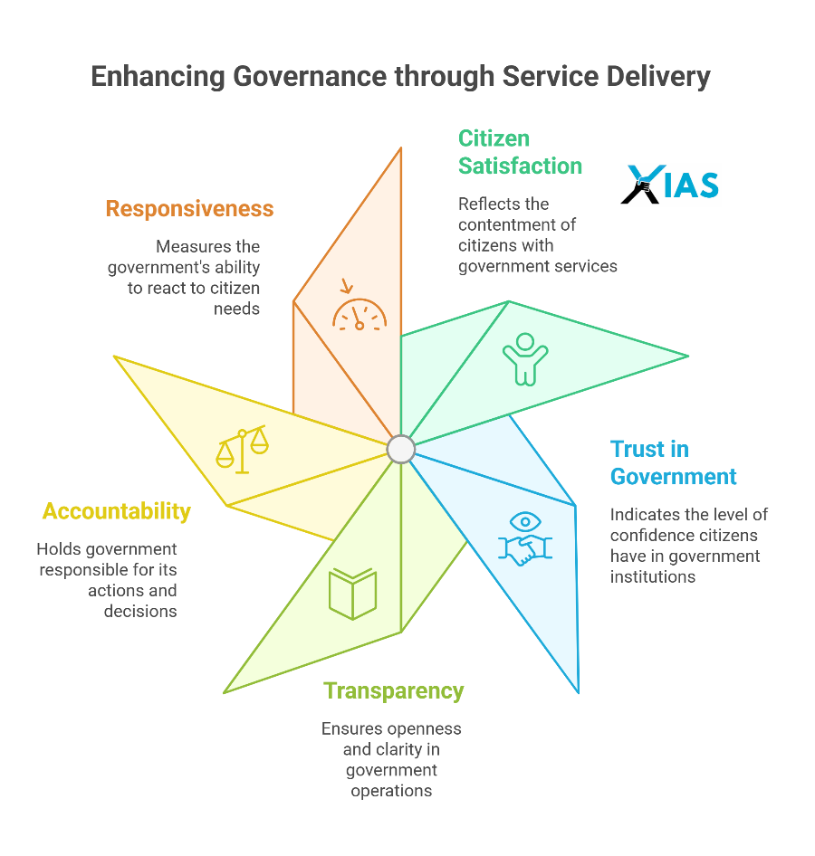
GS4-ETHI-0739 · Ethics, Integrity & Aptitude · Quality of Service Delivery
Transparency X RTI
Information Sharing and Transparency in Government
GS4-ETHI-0741
Quote
“Sunlight is said to be the best of disinfectants.” – Justice Louis Brandeis, Other People’s Money (1914)
Quote
"Thus, the solution suggested by Kofi Annan holds ground. 'If corruption is disease, transparency is the best treatment available!'"
Introduction
Transparency in governance means proactively disclosing institutional processes, decisions, and performance. Through openness, visibility, and participative accountability, the public can scrutinise and trust.
Examples
The RTI Act gave citizens access to decision-making.
Digital dashboards (e.g., PM Gati Shakti) sharpen real-time transparency.
The e-Samiksha portal tracks government work with inter-ministerial openness.
Tools and Institutionalisation of Transparency
Transparency and accountability stand institutionalised through self-disclosure under RTI, Citizens' Charters, and digital governance tools.
Other tools: Jan Sunwai (public hearings), which bring community scrutiny directly into administrative decisions.
Where probity is upheld as an institutional value, transparency naturally prevails as its outward expression.
Conclusion
Transparency turns secrecy into service — state power then works under the light of public awareness. As the diagram sequence suggests, communication, openness and accountability feed transparency, which in turn drives ethical and participative governance toward the larger goal of good governance.
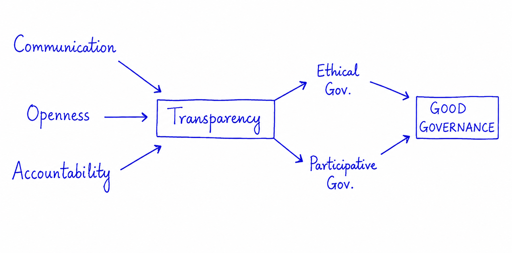
GS4-ETHI-0741 · Ethics, Integrity & Aptitude · Transparency X RTI
DR. CSE — REPLICA · INTRO TO CONCLUSION214 / 217
Dr. CSE — Replica
Right to Information (RTI)
GS4-ETHI-0742
Quote
“When the people are well informed, they can be trusted with their own government.” – Thomas Jefferson
Introduction
The Right to Information is a legal and ethical tool: it turns passive subjects into active citizens. People can then question, audit, and engage with the machinery of governance.
Examples
RTI laid bare the Adarsh housing scam and many recruitment irregularities.
RTI filings revealed Public Distribution System leakages.
Whistleblowers like RTI activist Amit Jethwa exposed environmental violations.
The Mazdoor Kisan Shakti Sangathan (MKSS) in Rajasthan pioneered public hearings (Jan Sunwai) and used early RTI disclosures to expose ghost workers and fraudulent payments on drought-relief and MGNREGA muster rolls, igniting India's national transparency movement.
Concept
When the public demands information, corruption becomes far harder to sustain — RTI thus acts as a continuous, decentralised check on administrative conduct.
Conclusion
RTI makes democratic ethics institutional — governance shifts from monologue to monitored dialogue, as demonstrated in early grassroots RTI audits and public hearings (Jan Sunwai), where citizen disclosures exposed ghost workers and unworked MGNREGA muster-roll wages.
Utilization of Public Funds
Utilization of Public Funds
GS4-ETHI-0748
Quote
"All undertakings depend upon finance. Hence foremost attention shall be paid to the treasury." – Kautilya, Arthashastra (Book II, Chapter 8)
Introduction
Utilizing public funds means allocating, spending, and monitoring taxpayer resources ethically — securing efficiency, equity, and integrity in financial stewardship.
Examples
CAG audits have exposed misuse in MPLADS and MNREGA.
Direct Benefit Transfers cut leakages in subsidies.
The PFMS platform follows fund flows in real time.
Conclusion
Fiscal probity holds up public faith — every rupee spent should reflect responsibility, not recklessness.
Work Culture
Work Culture
GS4-ETHI-0749
Quote
“Culture eats strategy for breakfast.” – Peter Drucker
Introduction
Work culture in governance is the shared values and behavioural norms that shape how public duties are performed. It drives the efficiency, accountability, and ethical climate of institutions, ranging from rigid bureaucratic models to collaborative, professional ones.
Concept
Professional work culture ensures democratic decision-making, a flatter hierarchy, self-accountability, and effectiveness.
Max Weber's markers of a bureaucratic work culture: (1) division of work; (2) hierarchy of authority; (3) rule-based order; (4) merit-based succession; (5) top-down structure.
Interventions to build a professional work culture: ethical competency training (recommended by the Kiran Aggarwal Committee).
Examples
Kerala's decentralised planning grows from a collaborative and responsive work culture.
E. Sreedharan's Metro team lived professional punctuality.
Citizen feedback on the SPARSH platform lifts the service attitude.
Japan's post-WW2 reconstruction — human capital driven by extra working hours and strict punctuality.
IAS officer Pulkit Singh upheld discipline through a carrot-and-stick approach, turned punctual himself, and innovated by uploading a photo with the day's newspaper on reaching office.
Conclusion
Work culture is governance's silent ethic — it shapes daily performance more than any rule, and reforms like Mission Karmayogi aim to institutionalise this shift from rule-bound bureaucracy to a responsive, citizen-centric service ethos.
Statutory Law vs Bodily Autonomy: The Ethics of Marital Rape
GS4-ETHI-0787
Quote
"A rapist remains a rapist subject to the criminal law, irrespective of his relationship with his victim." – House of Lords in R v R (1991), affirmed by the European Court of Human Rights (1995)
Introduction
Marital rape refers to non-consensual sexual intercourse by a husband with his wife. In India it remains legal due to an exception under Section 375 IPC (now Exception 2 to Section 63, Bharatiya Nyaya Sanhita, 2023), creating a sharp conflict between statutory law and ethical principles of consent, dignity, and bodily autonomy.
Conclusion
Criminalising marital rape would align Indian law with Article 21's guarantee of dignity and bodily autonomy, reflecting the ethical truth that consent — not marital status — defines its boundaries.
International Relations & National Security
Intelligence Ethics: National Security vs Personal Conscience
GS4-ETHI-0788
Introduction
Espionage and intelligence work often require operatives to compromise personal identity and relationships for national security — raising enduring dilemmas between duty to the state and personal conscience.
Examples
Spying and intelligence ethics — illustrated by real-life deep-cover operatives like Ravindra Kaushik ('Black Tiger') and the account behind Sehmat Khan (Calling Sehmat), who sacrificed personal identity, family ties, and moral comfort under deep cover in service of national security.
Conclusion
Intelligence work tests the limits of means–end justification — true patriotism lies in balancing national security imperatives with humane conduct, even in the shadows of statecraft.
Resource Management
Agrarian Distributive Justice: Resolving the Retail-Wholesale Price Squeeze
GS4-ETHI-0789
Quote
"The Farmer is the Only Man in Our Economy Who Buys Everything at Retail, Sells Everything at Wholesale, and Pays the Freight Both Ways."
Introduction
Indian agriculture faces a structural price-cost asymmetry — farmers buy inputs at market (retail) prices but sell their produce at lower, often distress-driven prices, absorbing transport costs on both ends and squeezing farm incomes.
Conclusion
Addressing this asymmetry through assured remunerative prices, better market linkages, and reduced input costs is central to the ethical and constitutional goal of farmer welfare and distributive justice envisioned under the Directive Principles.
DR. CSE — REPLICA · INTRO TO CONCLUSION216 / 217
Dr. CSE — Replica
CLOSING NOTE
Now write.
This deck holds verified answer units across four papers.
Reading them is half the work. The other half is your pen, five days a week, against the clock.
Open any card. Close the book. Write the answer.
Repeat until the exam feels familiar.
Companion resources
DR. CSE · READY-MADE RESOURCE GUIDE — COMPANION PUBLICATIONS
More answer-writing material from the same desk — find it all at
drcse.in and on Telegram at
t.me/dr_cse.
REPLICA (EXAM REPLICABLE) · INTRO TO CONCLUSION · FIRST EDITION 2026
A DR. CSE PUBLICATION · BUILT FROM THE VERIFIED CARD ARCHIVE · DESIGN: DR. CSE MAGAZINE STANDARD